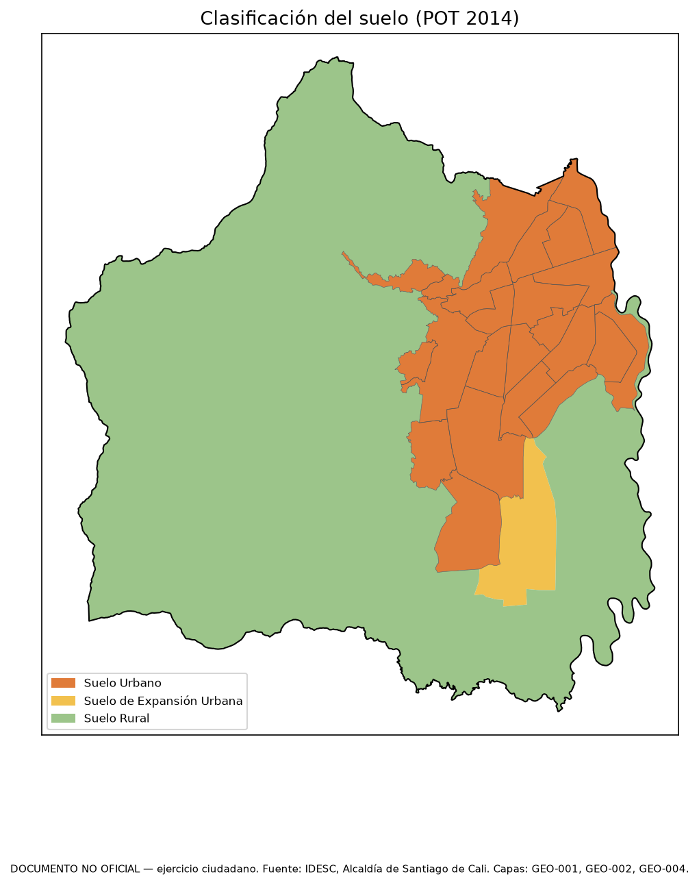
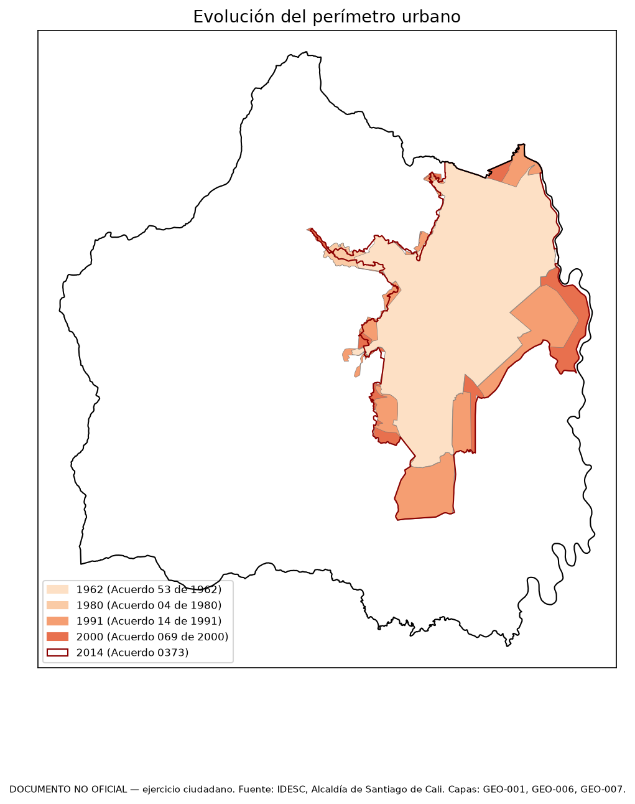
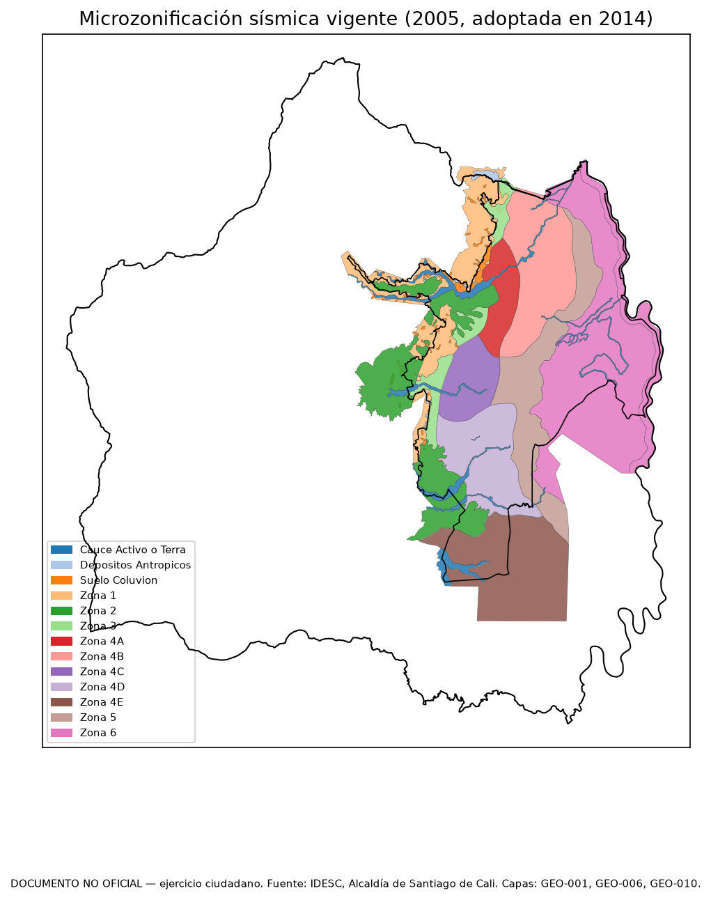
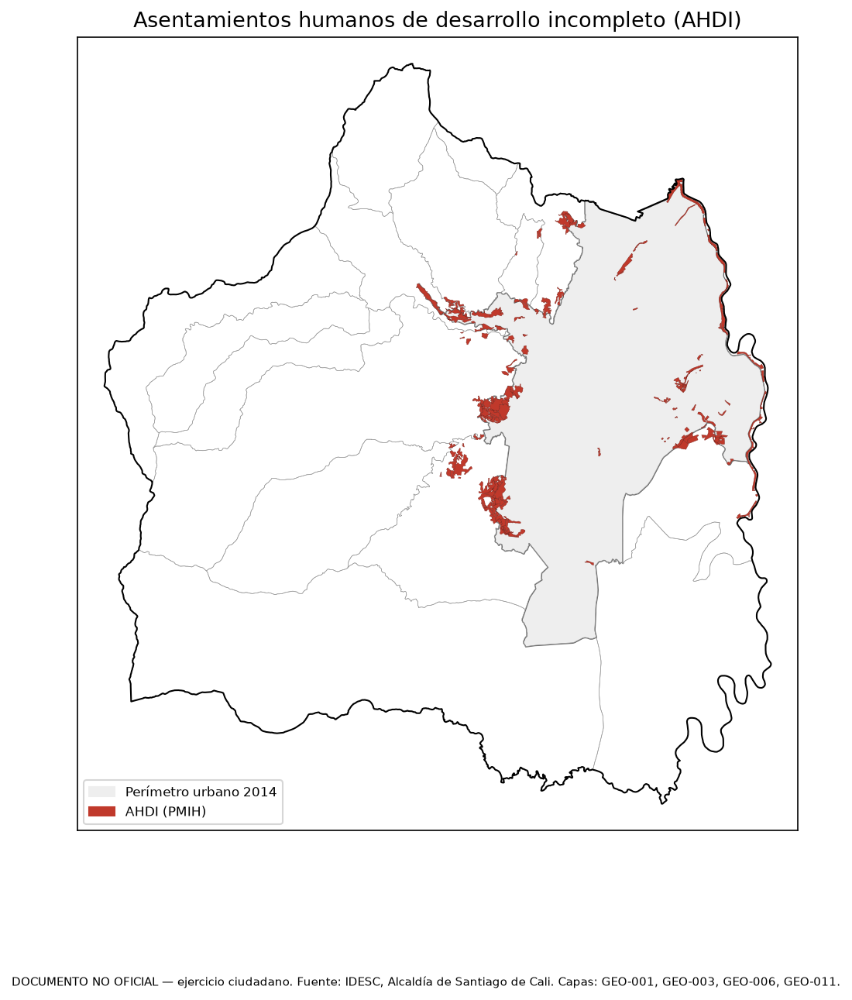
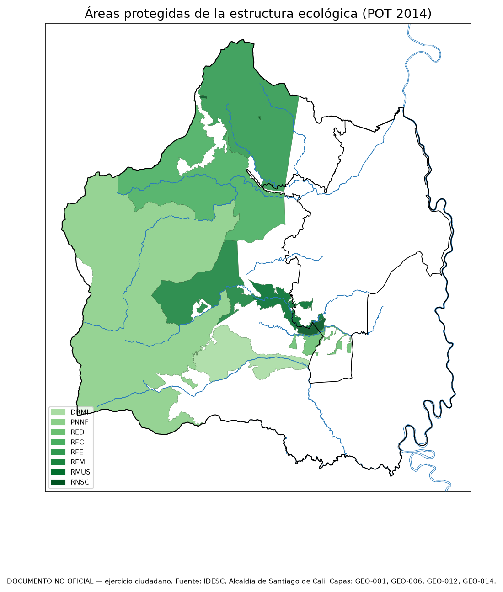
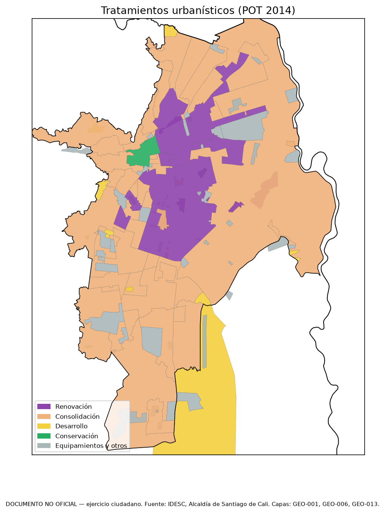
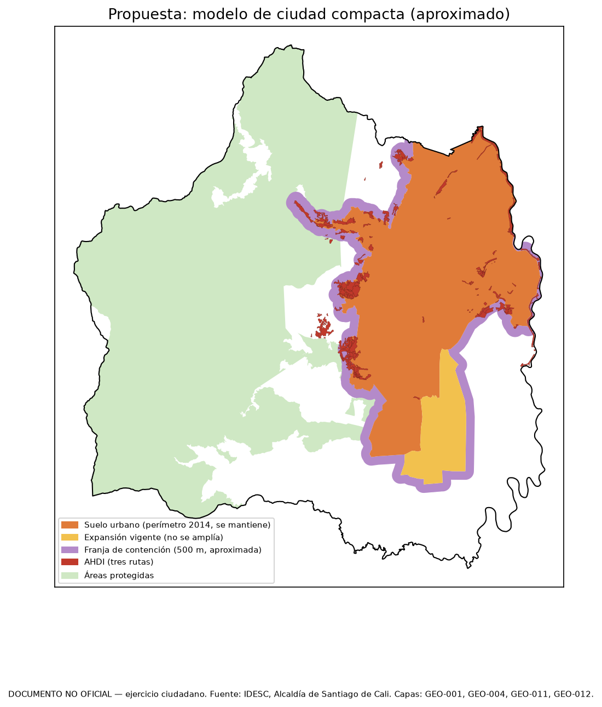
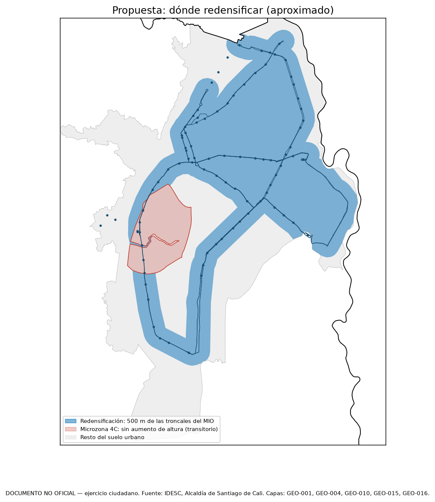

Plan de Ordenamiento Territorial de Santiago de Cali
Versión NO OFICIAL — ejercicio ciudadano con información pública
DOCUMENTO NO OFICIAL · SIN VALOR LEGAL
Ángel Farid Agreda Vargas · Ingeniería de Sistemas, Universidad Libre Seccional Cali
con apoyo de Claude (Anthropic)
Fecha de corte de la información: 2 de octubre de 2026 · Generado: 2026-10-20
Plan de Ordenamiento Territorial de Santiago de Cali — versión ciudadana NO OFICIAL
DOCUMENTO NO OFICIAL. Este es un ejercicio ciudadano y académico elaborado únicamente con
información pública disponible en internet hasta el 2 de octubre de 2026. No es un documento de la
Alcaldía de Santiago de Cali, del Departamento Administrativo de Planeación Distrital ni del
Concejo Distrital, y no tiene ningún valor legal. No incluye estudios de campo propios. Cada dato
indica su fuente; las propuestas son del autor y se señalan como tales.
Tomo 0 — Presentación
Autor: Ángel Farid Agreda Vargas, estudiante de Ingeniería de Sistemas, Universidad Libre, Seccional Cali, con apoyo de Claude (Anthropic) como asistente de investigación y redacción.
Por qué existe este documento
Cali está revisando su POT. El POT vigente, el Acuerdo 0373 de 2014, fue declarado nulo con efectos diferidos, y el plazo para tener uno nuevo es el 9 de julio de 2027 [POT-032, p. 14] [JUR-003]. La Alcaldía publicó en junio de 2026 su diagnóstico y su formulación, antes del terremoto del 10 de agosto de 2026 [POT-038, p. 1] [AMB-001].
Este documento quiere mostrar dos cosas:
1. Que con información pública de internet se puede armar un diagnóstico completo de la ciudad.
2. Que cada dato se puede comprobar. Un lector escéptico debe poder abrir la fuente en la página citada y encontrar el dato.
No compite con el POT oficial ni lo reemplaza. Sirve para leerlo con más cuidado, para incorporar el sismo y para señalar las cifras oficiales que no cuadran (Anexo A).
Cómo leer las citas
[POT-039, p. 20] quiere decir: fuente POT-039, página 20 del archivo PDF (no el número impreso en la hoja). En hojas de cálculo, p. N es la hoja N.- Cada fuente tiene su ficha en
fuentes/<tema>/registro.csv: título, entidad, fecha, enlace, fecha de consulta y huella sha256 del archivo descargado, para comprobar que es el mismo.
[CÁLCULO: ...] marca una cuenta propia, con los datos de entrada citados al lado.[VACÍO: ...] marca un dato que no se encontró, y dice dónde se buscó. Un vacío honesto vale más que un dato inventado.(prensa) marca un dato de prensa, usado solo para hechos recientes sin fuente oficial.- Cuando dos fuentes no coinciden, se muestran las dos y se dice cuál se usa y por qué.
Cómo se verificó
Un programa (verificar_citas.py) revisa todos los capítulos. En modo estricto marca como error:
- una oración con cifras y sin cita;
- una cita a una página que no existe en la fuente;
- un número que no aparece en la página citada.
Ningún capítulo se da por terminado con errores. El programa solo revisa números; las afirmaciones sin números dependen de la disciplina de quien escribe, y por eso cada una lleva su cita igual.
Fuentes
Las fuentes están descargadas y registradas por tema: POT (documentos del POT de 2014 y de la revisión de 2026), jurídico, estadísticas, ambiente y riesgo (incluido el sismo), hábitat y región, movilidad y servicios, y economía y finanzas. Los borradores de borradores_descartados/ no son fuente: tienen datos inventados y se descartaron el 3 de octubre de 2026.
Estado (20 de octubre de 2026)
- Diagnóstico: todos los capítulos, el Anexo A y la cartografía (capítulo 40, seis mapas), terminados y verificados.
- Formulación: componentes general, urbano y rural, e instrumentos de gestión y financiación, hechos.
- Proyecto de acuerdo: ejercicio de articulado (capítulo 30), hecho.
- Programa de ejecución e indicadores: hechos.
- PDF: generado en
build/POT_Cali_NO_OFICIAL.pdf.
- Mapas de la propuesta y resumen ciudadano: hechos.
- Pendiente: revisión de Ángel.
1. Marco jurídico, normativo e institucional
DOCUMENTO NO OFICIAL. Este es un ejercicio ciudadano y académico elaborado únicamente con
información pública disponible en internet hasta el 2 de octubre de 2026. No es un documento de la
Alcaldía de Santiago de Cali, del Departamento Administrativo de Planeación Distrital ni del
Concejo Distrital, y no tiene ningún valor legal. No incluye estudios de campo propios. Cada dato
indica su fuente; las propuestas son del autor y se señalan como tales.
Tomo I — Documento Técnico de Soporte · Parte 1: Diagnóstico
Fuentes principales: JUR-001 a JUR-008 (comunicados y notas oficiales de la Alcaldía y del Concejo sobre la nulidad, los efectos diferidos y el trámite de la revisión, 2024–2026), POT-032 (Proyecto de Acuerdo del nuevo POT, considerandos), POT-039 (Documento de Seguimiento y Evaluación del POT), POT-052 (Diagnóstico institucional y normativo de la revisión general).
1.1 Qué dice este capítulo
- El POT vigente de Cali, Acuerdo 0373 de 2014, fue declarado nulo en segunda instancia por el Tribunal Administrativo del Valle del Cauca con la Sentencia 129 de 2024, notificada el 17 de mayo de 2024 [POT-039, p. 20] [POT-032, p. 14].
- Según el Concejo, la causa fue que el alcalde Rodrigo Guerrero, impedido por intereses de su familia en tierras, nombró alcaldesa ad hoc a Laura Lugo con aval de la Procuraduría, que no era la autoridad competente [JUR-004]. El texto de la sentencia no está en las fuentes registradas.
- El Tribunal difirió los efectos de la nulidad por treinta meses desde la ejecutoria (9 de julio de 2024), es decir hasta el 9 de enero de 2027; mientras tanto el Acuerdo 0373 sigue vigente [POT-032, p. 14] [JUR-002].
- Después del terremoto del 10 de agosto de 2026, el Tribunal amplió el plazo seis meses, hasta el 9 de julio de 2027 [JUR-003].
- La revisión ya surtió la concertación ambiental con la CVC y el DAGMA (mayo de 2026) y fue radicada ante el Consejo Territorial de Planeación en agosto de 2026; falta el concepto de ese consejo, el cabildo abierto y el debate en el Concejo [POT-032, pp. 16-17] [JUR-008].
- El proceso lo tramita un alcalde ad hoc designado por el Ministro del Interior, porque el alcalde Éder se declaró impedido en octubre de 2024; con el cambio de Gobierno Nacional se pedirá una nueva designación [POT-032, pp. 18-19] [JUR-008].
- Las fuentes no aclaran qué norma regiría si el plazo vence sin nuevo POT: el Proyecto de Acuerdo dice que el Acuerdo 0373 perderá su vigencia y el Concejo habló en 2024 de revivir el Acuerdo 069 de 2000 [POT-032, p. 14] [JUR-004].
1.2 El Acuerdo 0373 de 2014 y su antecedente
- Primera y segunda generación. Cali adoptó su primer Plan de Ordenamiento Territorial con el Acuerdo 069 de 2000, en cumplimiento de la Ley 388 de 1997; al vencer la vigencia de sus contenidos, fijada en el artículo 534 de ese acuerdo, se adoptó la "revisión ordinaria de contenido de largo plazo" mediante el Acuerdo 0373 de 2014 [POT-039, p. 33]. El Departamento Administrativo de Planeación (DAP) llama "de tercera generación" al plan que se prepara ahora [JUR-005] [POT-052, p. 53].
- Por qué Cali debe tener un POT y no un plan de menor categoría. El Documento de Seguimiento y Evaluación recuerda que el artículo 9 de la Ley 388 de 1997 exige un Plan de Ordenamiento Territorial a los municipios de más de 100.000 habitantes, y que Cali tenía 2.119.908 personas en 2014 (población ajustada del Censo 2005) [POT-039, p. 33].
- Trámite de 2014. El proyecto se concertó con la CVC, que expidió la Resolución 0710-0100-0078 del 3 de febrero de 2014 después de un proceso suspendido de mutuo acuerdo por la expedición de la Ley 1523 de 2012 sobre gestión del riesgo; la CVC resolvió el recurso de reposición del municipio con la Resolución 0170 del 27 de marzo de 2014 y la concertación con esa autoridad terminó el 2 de abril de 2014 [POT-039, p. 34]. El DAGMA concertó los asuntos ambientales urbanos con la Resolución 4133.0.21.221 del 17 de marzo de 2014; el Consejo Territorial de Planeación emitió concepto el 6 de junio de 2014 y el Concejo aprobó el Acuerdo 0373 del 1 de diciembre de 2014 [POT-039, p. 34].
- Contenido. El Acuerdo 0373 de 2014 tiene 540 artículos en 7 títulos: 141 en el componente general, 241 en el urbano, 81 en el rural, 62 en el contenido programático, 26 en los instrumentos de planificación complementaria y gestión del suelo, 1 en el glosario y 7 en las disposiciones generales [POT-039, p. 41]. Su cartografía tiene 55 planos [POT-039, p. 44].
- Vigencias. El artículo 535 del acuerdo fijó una vigencia de trece años, de 2014 a 2027 [POT-039, p. 38]. El DAP interpreta que el corto plazo terminó en diciembre de 2019, el mediano en diciembre de 2023 y el largo en diciembre de 2027, por periodos constitucionales completos de alcalde [POT-039, p. 38].
- Circulares. Desde 2014 el DAP expidió siete circulares sobre el POT, cuatro aclaratorias y tres de doctrina, en 2015, 2018, 2022 y 2023 [POT-039, p. 48]. Entre ellas, una de 2018 resolvió el vacío sobre sótanos y semisótanos, otra de 2018 los índices de ocupación para usos no residenciales en Áreas de Actividad Residencial Neta, y una de 2022 aclaró la actividad económica denominada "webcam" [POT-039, p. 49].
1.3 La nulidad del Acuerdo 0373 de 2014
1.3.1 El proceso judicial
- Primera instancia. Contra el Acuerdo 0373 se presentó una demanda de nulidad simple; en julio de 2019, con la Sentencia de Primera Instancia No. 123, el Juzgado Quinto Administrativo Oral negó la pretensión de nulidad, y la decisión fue apelada [POT-039, p. 20].
- Segunda instancia. El Tribunal Administrativo del Valle del Cauca, con la Sentencia No. 129, declaró la nulidad simple del Acuerdo 0373 de 2014; la sentencia se notificó a la Administración el 17 de mayo de 2024 [POT-039, p. 20] [JUR-005].
- Motivo de la nulidad según la única fuente registrada que lo explica. Según el comunicado del Concejo de Cali, el alcalde de la época, Rodrigo Guerrero Velasco, pidió a la Procuraduría Regional esclarecer un impedimento que tenía sobre el proyecto de POT por intereses en tierras de propiedad de su familia; la Procuraduría reconoció el impedimento y el alcalde nombró como alcaldesa ad hoc a la entonces secretaria de Gobierno, Laura Lugo [JUR-004]. El abogado Gustavo Prado demandó ese nombramiento por considerarlo ilegal, porque la entidad competente no era la Procuraduría sino el Presidente de la República [JUR-004]. El mismo comunicado dice que el fallo llegó "después de 10 años de litigio" [JUR-004].
- Lo que no se puede confirmar. El texto de la Sentencia 129 de 2024 y el de la sentencia complementaria no están registrados como fuente, de modo que el motivo jurídico exacto de la nulidad solo se conoce por el comunicado del Concejo [VACÍO: texto de la Sentencia 129 de 2024 del Tribunal Administrativo del Valle del Cauca, de la sentencia complementaria de julio de 2024 y del auto de ampliación de septiembre de 2026; se buscó en los registros de fuentes del proyecto y con buscador web el 7-oct-2026; solo aparecen comunicados y prensa]. Los documentos técnicos de la Alcaldía (POT-039, POT-052) describen la nulidad y sus efectos pero no su causa [POT-039, p. 20] [POT-052, p. 54].
- Responsabilidades pedidas por el Concejo. La concejal María del Carmen Londoño pidió a los organismos de control investigar si la nulidad se debió a abuso de autoridad del Procurador Regional o a inducción al error por parte del alcalde [JUR-004].
1.3.2 Fechas que no coinciden entre las fuentes
| Dato |
Lo que dice cada fuente |
Fuente |
| Fecha de la Sentencia 129 |
25 de abril de 2024 |
[POT-032, p. 14] [JUR-002] |
| Fecha de la Sentencia 129 |
"Sentencia de Nulidad No. 129 del 17 de mayo de 2024" |
[POT-039, p. 33] [POT-039, p. 95] |
| Notificación de la Sentencia 129 |
17 de mayo de 2024 |
[POT-039, p. 20] [JUR-005] |
| Fecha de la Sentencia 129 (error de digitación en la misma fuente) |
"sentencia 129 del 25 de abril de 2014" en un párrafo y "25 de abril de 2024" en otro |
[JUR-002] |
Este documento usa el 25 de abril de 2024 como fecha de la sentencia, porque así la fecha el considerando del Proyecto de Acuerdo y el comunicado de la Oficina Jurídica, y el 17 de mayo de 2024 como fecha de notificación, que es lo que dicen expresamente POT-039 en su página 20 y JUR-005 [POT-032, p. 14] [JUR-002] [POT-039, p. 20] [JUR-005]. La fecha "17 de mayo" que el Documento de Seguimiento atribuye a la sentencia en otras páginas parece confundir sentencia y notificación [POT-039, p. 33].
1.4 Efectos diferidos y plazos para adoptar el nuevo POT
1.4.1 La solicitud de aclaración y la sentencia complementaria
- El 20 de mayo de 2024 los Departamentos Administrativos de Gestión Jurídica Pública y de Planeación informaron que habían pedido al Tribunal aclarar los efectos de la sentencia, dentro del término legal de tres días hábiles, "antes de que los efectos de la misma, se materialicen como cosa juzgada" [JUR-001]. Mientras el Tribunal resolvía, la Alcaldía sostuvo que el Acuerdo 0373 seguía vigente y que los actos sobre planes parciales y licencias no estaban en riesgo [JUR-001].
- Los argumentos técnicos de esa solicitud quedaron en el radicado Orfeo 202441320500004084 del 20 de mayo de 2024 [POT-039, p. 20]. El DAP estimó, entre otros, estos efectos de una nulidad inmediata:
| Efecto estimado por el DAP si la nulidad operaba de inmediato |
Magnitud declarada |
Fuente |
| Suelo catalogado como no apto para el desarrollo por riesgo no mitigable que podría licenciarse |
3.508,5 hectáreas |
[POT-039, p. 21] |
| Suelo rural de conservación que volvería a ser urbano con posibilidad de desarrollo |
12.097 hectáreas |
[POT-039, p. 21] |
| Recaudo histórico por aportes por mayor edificabilidad que quedaría sin base |
$22.214.957.963 (promedio anual de $2.985.000.000) |
[POT-039, p. 21] |
| Recaudo histórico por compensación de zonas verdes y equipamientos |
$3.909.579.947 |
[POT-039, p. 22] |
| Área que saldría de la estructura ecológica principal (incluye la Reserva Municipal de Uso Sostenible Río Meléndez de 513,176 ha y ecoparques por 1675,43 ha) |
aproximadamente 7.668,11 hectáreas |
[POT-039, p. 22] |
| Instrumentos de planificación y gestión complementarios con decaimiento jurídico |
29 |
[POT-039, p. 22] |
| Polígonos suburbanos que pasarían a "áreas de régimen diferido" del Acuerdo 069 de 2000 |
5 polígonos, 2.072 hectáreas |
[POT-039, p. 23] |
| Viviendas en preventa que no podrían licenciarse |
5.572 unidades, de ellas 3.495 VIS |
[POT-039, p. 25] |
El mismo documento menciona además la pérdida de liquidaciones de plusvalía sobre nueve centralidades, pero la cifra aparece mal escrita ("$37.109.697.5118") y la norma citada aparece como "Acuerdo 0373 de 2024" [POT-039, p. 21]; por eso no se usa aquí. Estas magnitudes son estimaciones de parte, presentadas por la Alcaldía para pedir el diferimiento, y no fueron verificadas por el Tribunal en ninguna fuente registrada.
- En julio de 2024 el Tribunal complementó la Sentencia 129 y advirtió que el Acuerdo 0373 de 2014 "a la fecha de sentencia de segunda instancia se encuentra vigente y hace parte del ordenamiento jurídico"; la sentencia complementaria se notificó el 2 de julio de 2024 [JUR-005]. El Tribunal difirió los efectos de la nulidad por treinta meses contados desde la ejecutoria de la Sentencia 129 [JUR-002] [POT-052, p. 54].
1.4.2 Plazo original y ampliación
| Hito |
Fecha |
Fuente |
| Inicio del plazo de diferimiento (ejecutoria) |
9 de julio de 2024 |
[POT-032, p. 14] |
| Fin del plazo original de 30 meses |
9 de enero de 2027 |
[POT-032, p. 14] [JUR-003] |
| Terremoto que motivó la solicitud de ampliación |
10 de agosto de 2026 |
[JUR-003] [JUR-006] |
| Decisión de ampliación (Tribunal Administrativo del Valle del Cauca, Sala Quinta de Decisión), comunicada por la Alcaldía |
29 de septiembre de 2026 |
[JUR-003] |
| Fin del plazo ampliado |
9 de julio de 2027 |
[JUR-003] |
- Qué ordenó el Tribunal. Según el Proyecto de Acuerdo, dentro del término otorgado el Distrito "deberá expedir el Acuerdo que adopta la respectiva revisión del Plan de Ordenamiento Territorial", y vencido el término el Acuerdo 0373 "perderá definitivamente su vigencia y dejará de producir efectos jurídicos" [POT-032, p. 14]. El Documento de Seguimiento lo describe como "un plazo máximo de treinta (30) meses para la formulación de un nuevo plan de ordenamiento territorial" [POT-039, p. 25].
- Por qué se amplió. La Alcaldía sostuvo ante el Tribunal que cuando se fijó el plazo nadie podía prever un terremoto como el del 10 de agosto, que cambió las condiciones del territorio y la información que debía tenerse en cuenta [JUR-006]. La solicitud fue sustentada técnicamente por el DAP y jurídicamente por el Departamento Administrativo de Gestión Jurídica Pública [JUR-003]. La directora de Gestión Jurídica afirmó que la decisión no reabrió el proceso ni cambió "nada de lo que ya estaba resuelto", y la oficina informó que el proceso "ya volvió al juzgado de origen" [JUR-006].
- Para qué se usarán los seis meses. Según la Alcaldía, para incorporar al POT la información y los análisis derivados del terremoto y revisar si los estudios de riesgo existentes siguen siendo válidos, y para retomar actividades de participación afectadas por la emergencia [JUR-003] [JUR-006].
1.4.3 Qué pasa si no hay POT nuevo el 9 de julio de 2027
Las fuentes registradas no dan una respuesta única:
- El Proyecto de Acuerdo afirma que al terminar el plazo el Acuerdo 0373 "perderá definitivamente su vigencia" [POT-032, p. 14].
- El mismo Proyecto de Acuerdo recuerda que el artículo 28 de la Ley 388 de 1997, modificado por el artículo 120 del Decreto Ley 2106 de 2019, dispone que si al final del plazo de vigencia no se ha adoptado un nuevo plan "seguirá vigente el ya adoptado" [POT-032, p. 13]; esa regla parte de un plan válido y no de uno anulado.
- El Concejo, en mayo de 2024, dijo que lo que procedía era "revivir la norma anterior, o sea el Acuerdo 069 de 2000", al que calificó de obsoleto por tener 24 años [JUR-004]. La Alcaldía, por su parte, señaló que los planes parciales de renovación y expansión en ejecución fueron adoptados bajo el Acuerdo 069 de 2000 [JUR-001].
- El DAP advirtió que, sin el Acuerdo 0373, cinco polígonos suburbanos quedarían como "áreas de régimen diferido" del artículo 208 del Acuerdo 069 de 2000, sin norma específica para su desarrollo [POT-039, pp. 23-24].
[VACÍO: análisis jurídico oficial sobre qué norma rige el suelo de Cali si el 9 de julio de 2027 no se ha adoptado el nuevo POT (reviviscencia del Acuerdo 069 de 2000 o vacío normativo); se buscó en JUR-001 a JUR-008, POT-032, POT-039 y POT-052.]
1.5 Marco normativo de la revisión
Las normas siguientes se citan tal como las presentan los documentos oficiales de la revisión; este capítulo no cita normas nacionales que no aparezcan en una fuente registrada.
| Norma |
Para qué sirve en la revisión del POT |
Fuente |
| Constitución Política, artículos 1 y 287 |
Autonomía de las entidades territoriales para gestionar sus intereses |
[POT-032, p. 12] |
| Constitución Política, artículo 313 |
Corresponde a los concejos reglamentar los usos del suelo y determinar la estructura de la administración |
[POT-032, p. 12] [POT-052, p. 24] |
| Ley 388 de 1997, artículos 5, 9 y 11 |
Definición del ordenamiento territorial, del POT y de sus componentes general, urbano y rural |
[POT-032, pp. 12-13] |
| Ley 388 de 1997, artículo 7 |
Competencia de municipios y distritos para formular y adoptar el POT |
[POT-052, p. 40] |
| Ley 388 de 1997, artículo 24 |
El alcalde, por medio de la oficina de planeación, coordina la formulación; deben surtirse concertación institucional y consulta ciudadana |
[POT-032, pp. 14-15] |
| Ley 388 de 1997, artículo 25, y Decreto 1077 de 2015, artículo 2.2.2.1.2.2.6 |
El alcalde presenta el proyecto al Concejo dentro de los 30 días siguientes al concepto del Consejo Territorial de Planeación; si el Concejo está en receso se convoca a extraordinarias; las modificaciones del Concejo requieren aceptación de la administración |
[POT-032, p. 18] |
| Ley 388 de 1997, artículo 28, modificado por el Decreto Ley 2106 de 2019 |
Vigencias de los contenidos; el contenido estructural dura como mínimo tres periodos constitucionales |
[POT-032, p. 13] |
| Ley 388 de 1997, artículo 112 |
Obligación de organizar el expediente urbano |
[POT-039, p. 27] |
| Decreto 1077 de 2015, modificado por el Decreto 1232 de 2020 |
Etapas de la planificación territorial (diagnóstico, formulación, implementación, seguimiento y evaluación); toda revisión parte del seguimiento y evaluación |
[POT-032, p. 15] [POT-052, p. 55] |
| Decreto 1077 de 2015, artículo 2.2.2.1.2.1.5 |
El seguimiento se adelanta a partir del expediente urbano, que debe mantenerse actualizado |
[POT-052, p. 56] |
| Decreto 1077 de 2015, artículo 2.2.2.1.2.2.4 |
Concertación con el área metropolitana |
[POT-032, p. 17] |
| Ley 507 de 1999, artículo 2 |
Cabildo abierto obligatorio en el Concejo antes de estudiar el POT; lo cita la propia corporación |
[POT-032, p. 19] |
| Ley 1523 de 2012, Decreto 1807 de 2014 y Ley 2079 de 2021 |
Normas citadas en los considerandos como parte del procedimiento de revisión ordinaria; la Ley 1523 de 2012 es la de gestión del riesgo |
[POT-032, pp. 12-20] [POT-039, p. 34] |
| Ley 2294 de 2023, artículo 32 (modifica el artículo 10 de la Ley 388) |
Las normas de protección del patrimonio cultural son determinantes de nivel 3 |
[POT-052, p. 48] |
| Ordenanza 513 de 2019 (POT Departamental del Valle del Cauca), artículo 78 |
Concepto departamental de articulación del POT distrital |
[POT-032, p. 17] |
| Ley 1933 de 2018 y Ley 1617 de 2013 |
Cali es Distrito Especial y debe adecuarse al régimen distrital |
[POT-052, p. 23] |
| Ley 1625 de 2013 |
Régimen de áreas metropolitanas, base del Área Metropolitana del Suroccidente |
[POT-052, p. 42] |
| Ley 1801 de 2016 (Código Nacional de Seguridad y Convivencia Ciudadana) |
Las infracciones urbanísticas pasaron a inspectores de policía y corregidores |
[POT-052, p. 47] |
- La revisión se tramita como "revisión ordinaria". Aunque el Acuerdo 0373 estaba en su periodo de largo plazo, el DAP estructuró el proceso "como una revisión ordinaria de los contenidos de largo plazo para dar paso a la adopción de un nuevo instrumento, en cumplimiento de lo determinado en la precitada Sentencia" [POT-039, pp. 25-26]. El título del Proyecto de Acuerdo es "Por el cual se adopta la revisión ordinaria de contenido de largo plazo del Plan de Ordenamiento Territorial del Distrito Especial de Santiago de Cali" [POT-032, p. 12].
- Preguntas jurídicas abiertas que el propio DAP plantea. El diagnóstico institucional enumera dudas que la nulidad deja: si lo que se adelanta es una adopción o una revisión, cuál es el POT vigente que se revisa, si puede reproducirse parcialmente el contenido anulado y si debe o no hacerse la etapa de seguimiento y evaluación de un POT anulado [POT-052, p. 54]. El documento no las responde expresamente; concluye que, como el Acuerdo 0373 sigue produciendo efectos, debe continuarse el ciclo con el seguimiento y la evaluación [POT-052, p. 54].
1.6 Instituciones que intervienen
1.6.1 Quién hace qué en la revisión
| Institución |
Papel en la revisión del POT |
Fuente |
| Alcalde (hoy alcalde ad hoc) |
Coordina la formulación por medio de la oficina de planeación y presenta el proyecto al Concejo |
[POT-032, p. 14] [POT-032, p. 18] |
| Departamento Administrativo de Planeación (DAP), Subdirección de Planificación del Territorio |
Dependencia responsable de coordinar, elaborar, reglamentar, ejecutar y evaluar el POT; custodia el Expediente Distrital |
[POT-032, p. 15] [POT-039, p. 31] |
| Departamento Administrativo de Gestión Jurídica Pública |
Defensa judicial: pidió la aclaración de la sentencia y la ampliación del plazo |
[POT-032, p. 14] [JUR-003] |
| Consejo de Gobierno |
Revisó el proyecto el 30 de julio de 2025 y aprobó su radicación |
[POT-032, p. 16] |
| CVC |
Autoridad ambiental del suelo rural; concerta los asuntos ambientales |
[POT-032, p. 16] |
| DAGMA |
Autoridad ambiental dentro del perímetro urbano; concerta los asuntos ambientales urbanos |
[POT-032, p. 17] |
| Área Metropolitana del Suroccidente (AMSO) |
Emite concepto en la etapa de concertación |
[POT-032, p. 17] |
| Departamento Administrativo de Planeación del Valle del Cauca |
Concepto de articulación con el POT Departamental |
[POT-032, p. 17] |
| Consejo Territorial de Planeación (también llamado Consejo Municipal de Planeación) |
Concepto y recomendaciones en un plazo máximo de 30 días hábiles; lo integran representantes de sectores sociales, económicos, comunitarios, académicos, ambientales y culturales |
[JUR-008] [JUR-003] |
| Concejo Distrital |
Convoca el cabildo abierto previo, estudia y adopta el POT por acuerdo |
[POT-032, p. 19] [JUR-005] |
1.6.2 El alcalde ad hoc
- El 11 de octubre de 2024 el alcalde Álvaro Alejandro Éder Garcés manifestó su impedimento para intervenir en asuntos del POT y sus instrumentos, porque familiares hasta el cuarto grado de consanguinidad podrían tener inversiones en construcción, cemento, acero, finca raíz y hotelería; la Procuraduría Regional de Instrucción del Valle del Cauca aceptó el impedimento el 6 de noviembre de 2024 [POT-032, p. 18].
- El Ministro del Interior designó alcalde ad hoc a Andrés Orlando Peña Andrade con la Resolución 2175 del 25 de noviembre de 2024, con fundamento en el artículo 66 de la Ley 42 de 1913 y el artículo 9 del Decreto 658 de 2024 [POT-032, p. 18]. Tras su renuncia, el Ministerio del Interior designó a Jaime Luis Berdugo Pérez, Viceministro del Interior, con la Resolución 0493 del 3 de abril de 2025 [POT-032, p. 19]. Los documentos técnicos de la revisión lo presentan como "Alcalde AdHoc" [POT-039, p. 3].
- En agosto de 2026 el DAP anunció que, "con ocasión del cambio de Gobierno Nacional", pediría la designación de un nuevo alcalde ad hoc que lleve el proceso hasta la radicación ante el Concejo [JUR-008]. [VACÍO: acto de designación del nuevo alcalde ad hoc después del cambio de Gobierno Nacional de 2026; se buscó en JUR-001 a JUR-008 y POT-032.]
- La comparación con 2014 es directa: según el Concejo, la nulidad del Acuerdo 0373 se originó en que el alcalde impedido de entonces nombró una alcaldesa ad hoc con aval de una autoridad que no era la competente [JUR-004]. En el proceso actual la designación la hizo el Ministro del Interior [POT-032, p. 18]. Este capítulo no puede evaluar si ese procedimiento es inatacable, porque no tiene el texto de la sentencia (ver 1.3.1).
1.6.3 Estructura de la administración distrital
- La estructura vigente la fijó el Decreto Extraordinario 411.0.20.0516 de 2016, expedido con facultades del Acuerdo 395 de 2016 [POT-052, p. 28]. Con la creación de la Unidad Administrativa Especial de Protección Animal (Acuerdo 543 de 2022), la Alcaldía quedó con 29 dependencias y 14 entidades descentralizadas [POT-052, p. 29].
- Entidades descentralizadas con papel directo en el ordenamiento: la Empresa de Desarrollo y Renovación Urbana (EDRU), cuyo objeto se amplió con el Acuerdo 0536 de 2022 y que ha intervenido en los planes parciales de renovación San Pascual, El Calvario y Ciudadela de la Justicia [POT-052, p. 33]; y EMCALI, prestador de servicios públicos domiciliarios del Distrito [POT-052, p. 34].
- Distrito Especial sin adecuar. Cali fue categorizada como Distrito Especial, Deportivo, Cultural, Turístico, Empresarial y de Servicios por la Ley 1933 de 2018 [POT-052, p. 23]. El régimen distrital exige dividir el territorio en localidades, pero el proyecto de acuerdo para hacerlo no ha logrado consenso en el Concejo, y el DAP reconoce que el Distrito "sigue en mora" de dar vigencia material a esa ley [POT-052, pp. 41-42].
- Área Metropolitana. En la consulta popular el umbral se superó solo en Cali, Jamundí y Puerto Tejada, que constituyeron el Área Metropolitana del Suroccidente (AMSO); el DAP la describe como una entidad "en sus albores" [POT-052, p. 42].
1.6.4 Debilidades institucionales identificadas por el DAP
El diagnóstico institucional concluye que no faltan autoridades competentes para expedir el POT, pero identifica conflictos de competencia y falta de personal idóneo en tres frentes [POT-052, p. 43]:
- Control urbano. Con la Ley 1801 de 2016 y el Decreto 0516 de 2016 la sanción de las infracciones urbanísticas pasó a inspectores de policía y corregidores; el DAP señala decisiones que revelan falta de personal capacitado y recomienda fortalecer esos despachos [POT-052, p. 47]. En mesas con constructores y otros actores se reportaron diferencias entre lo aprobado en curaduría y lo construido, y "corrupción y desconocimiento normativo" de funcionarios de control [POT-052, p. 46].
- Patrimonio. El DAP, la Secretaría de Cultura y la Secretaría de Seguridad y Justicia tienen funciones que se cruzan en la declaratoria, administración y control de los bienes de interés cultural [POT-052, pp. 49-50].
- Espacio público. La administración del espacio público está repartida entre varios organismos; el DAP señala que la Ley 2079 de 2021 permite concentrarla en una sola entidad o dependencia [POT-052, pp. 50-51].
1.7 Trámite de la revisión y estado al 2 de octubre de 2026
| Paso |
Fecha |
Estado |
Fuente |
| Seguimiento y evaluación del Acuerdo 0373 (Documento de Seguimiento y Evaluación) |
vigencia 2024 |
Hecho |
[POT-032, p. 16] |
| Alistamiento, balance de información y diagnóstico, con participación |
2024–2025 |
Hecho; a marzo de 2025 el DAP reportaba 25 jornadas y más de 1000 personas con recomendaciones |
[POT-032, p. 16] [JUR-005] |
| Publicación de los documentos técnicos en la web de la Alcaldía |
desde el 15 de junio de 2025 |
Hecho |
[POT-032, p. 20] |
| Consejo de Gobierno |
30 de julio de 2025 |
Aprobó la radicación |
[POT-032, p. 16] |
| Radicación ante la CVC para concertación ambiental |
5 de diciembre de 2025 (fecha del boletín) |
Hecho; plazo estimado de 45 días hábiles desde el auto de inicio |
[JUR-007] |
| Concepto del Departamento Administrativo de Planeación del Valle |
27 de abril de 2026 |
Hecho |
[POT-032, p. 17] |
| Acta de concertación con la CVC y Resolución CVC 0100 No. 0710 5489 |
4 y 5 de mayo de 2026 |
Hecho |
[POT-032, p. 16] |
| Acta de concertación con el DAGMA y Resolución 4133.0.21.0.426 |
5 y 11 de mayo de 2026 |
Hecho |
[POT-032, p. 17] |
| Concepto favorable del Director del AMSO |
sin fecha en la fuente |
Hecho |
[POT-032, p. 17] |
| Radicación ante el Consejo Territorial de Planeación |
3 de agosto de 2026 según JUR-003; nota publicada el 4 de agosto de 2026 |
Hecho; plazo máximo de 30 días hábiles para el concepto |
[JUR-003] [JUR-008] |
| Concepto del Consejo Territorial de Planeación |
— |
[VACÍO: no se encontró el concepto ni noticia de su entrega; se buscó en JUR-001 a JUR-008] |
— |
| Presentación al Concejo (30 días después del concepto) |
— |
Pendiente; la Alcaldía anunció que primero culminará ajustes técnicos y de participación |
[POT-032, p. 18] [JUR-003] |
| Cabildo abierto convocado por el Concejo |
— |
Pendiente |
[POT-032, pp. 19-20] |
| Debate y adopción por el Concejo |
antes del 9 de julio de 2027 |
Pendiente |
[JUR-003] [JUR-006] |
- El cronograma se ha corrido. En diciembre de 2025 la Alcaldía esperaba la resolución de concertación ambiental en febrero de 2026 y la radicación en el Concejo en junio de 2026 [JUR-007]. La concertación con la CVC terminó en mayo de 2026 y a la fecha de corte el proyecto aún no había llegado al Concejo [POT-032, p. 16] [JUR-003].
- El Proyecto de Acuerdo es un borrador. El texto publicado conserva espacios sin llenar ("el día XX de XXX de XXXX") para la radicación ante el Consejo Territorial, el concepto de ese consejo, la radicación en el Concejo y el cabildo abierto, y una nota interna ("si hay que pedir extraordinarias referir aquí el decreto") [POT-032, pp. 17-20].
- Participación reportada. El Proyecto de Acuerdo informa 250 actividades de participación y 1304 aportes recibidos; la cifra intermedia aparece como "un total de 4.991" sin decir de qué [POT-032, p. 15].
- Consecuencias del terremoto en el trámite. El proyecto se radicó ante el consejo de planeación una semana antes del sismo; la emergencia obligó a concentrar capacidades institucionales y modificó actividades de participación previstas [JUR-003]. El siguiente paso anunciado es culminar los ajustes técnicos y de participación y luego radicar el proyecto ante el Concejo [JUR-003].
- Documentos que según el Proyecto de Acuerdo forman el POT. Seguimiento y evaluación, diagnóstico territorial, formulación, estrategia de participación, estudios básicos y detallados de amenazas y riesgos, programa de ejecución, instrumentos de gestión y financiación, documento resumen y cartografía [POT-032, pp. 21-22]. El literal de la estrategia de participación se titula "del PBOT", aunque Cali debe tener un POT [POT-032, p. 22] [POT-039, p. 33].
1.8 Efectos del terremoto del 10 de agosto de 2026 en la situación jurídica
- El terremoto fue el argumento central para pedir al Tribunal más tiempo, como hecho que nadie podía prever cuando se fijó el plazo original [JUR-006].
- El plazo se amplió seis meses, del 9 de enero al 9 de julio de 2027 [JUR-003].
- La Alcaldía se comprometió a que el nuevo POT responda a las condiciones de riesgo identificadas después del terremoto y a reducir la vulnerabilidad frente a futuros sismos; en septiembre de 2026 el DAP convocó a expertos para analizar el comportamiento del suelo y la vulnerabilidad de las edificaciones [JUR-003].
- El Proyecto de Acuerdo publicado en junio de 2026 y su concertación ambiental (mayo de 2026) son anteriores al sismo [POT-032, pp. 16-17]. Cualquier cambio que incorpore las lecciones del terremoto tendría que hacerse después de concertado el proyecto. [VACÍO: concepto de la CVC o del DAGMA sobre si los ajustes posteriores al terremoto obligan a repetir o complementar la concertación ambiental; se buscó en JUR-001 a JUR-008 y POT-032.]
1.9 Problemas y potencialidades
| Problema o potencialidad |
Evidencia |
| Problema: el Distrito tiene un plazo judicial perentorio (9 de julio de 2027) y a la fecha de corte el proyecto no ha llegado al Concejo |
[JUR-003] |
| Problema: no hay claridad pública sobre qué norma regiría si el plazo vence sin POT nuevo; el Concejo habló de revivir el Acuerdo 069 de 2000 |
[JUR-004] [POT-032, p. 14] |
| Problema: el motivo de la nulidad fue un vicio en la designación de la autoridad ad hoc que tramitó el POT en 2014, y el trámite actual también depende de un alcalde ad hoc que debe ser redesignado |
[JUR-004] [JUR-008] |
| Problema: el texto de las sentencias no está publicado en las fuentes oficiales consultadas, lo que impide verificar sus órdenes exactas |
[VACÍO: ver 1.3.1] |
| Problema: debilidad del control urbano, conflictos de competencia en patrimonio y espacio público |
[POT-052, pp. 46-51] |
| Problema: Cali no ha completado su adecuación como Distrito Especial (localidades) |
[POT-052, pp. 41-42] |
| Problema: el cronograma se ha corrido varios meses frente a lo anunciado en diciembre de 2025 |
[JUR-007] [POT-032, p. 16] |
| Potencialidad: concertación ambiental con la CVC y el DAGMA y concepto departamental ya obtenidos |
[POT-032, pp. 16-17] |
| Potencialidad: el Distrito tiene expediente urbano conformado y administrado por el DAP |
[POT-052, p. 56] |
| Potencialidad: seis meses adicionales para incorporar información del terremoto |
[JUR-003] [JUR-006] |
1.10 Vacíos de información
- [VACÍO: texto completo de la Sentencia 129 de 2024, de la sentencia complementaria y del auto de ampliación del plazo de septiembre de 2026; se buscó en los registros de fuentes del proyecto y con buscador web el 7-oct-2026.]
- [VACÍO: número de radicado del proceso de nulidad y fecha exacta de la ejecutoria según el propio Tribunal; solo se tiene la fecha del 9 de julio de 2024 que da el Proyecto de Acuerdo.]
- [VACÍO: concepto del Consejo Territorial de Planeación sobre el proyecto radicado en agosto de 2026; se buscó en JUR-001 a JUR-008.]
- [VACÍO: acto de designación del nuevo alcalde ad hoc tras el cambio de Gobierno Nacional de 2026; se buscó en JUR-008 y POT-032.]
- [VACÍO: análisis jurídico oficial sobre la norma aplicable si se vence el plazo sin nuevo POT; se buscó en JUR-001 a JUR-008, POT-032, POT-039 y POT-052.]
- [VACÍO: texto de los actos de concertación ambiental de 2026 (actas y resoluciones de la CVC y del DAGMA); solo se conocen por los considerandos del Proyecto de Acuerdo POT-032.]
Fuentes citadas en este capítulo
- JUR-001 — Alcaldía de Santiago de Cali solicita al Tribunal Administrativo del Valle aclarar los efectos de la nulidad del POT (comunicado) — Alcaldía de Santiago de Cali, Departamentos Administrativos de Gestión Jurídica Pública y de Planeación — 2024-05-20.
- JUR-002 — El POT del Distrito de Santiago de Cali sigue vigente (comunicado) — Alcaldía de Santiago de Cali, Departamento Administrativo de Gestión Jurídica Pública — 2024-07-03.
- JUR-003 — Cali obtiene seis meses adicionales para ajustar el POT e incorporar las lecciones aprendidas del terremoto del 10 de agosto (comunicado) — Alcaldía de Santiago de Cali (Intranet institucional) — 2026-09-29.
- JUR-004 — Cali en emergencia jurídica por caída del POT, administración Eder a presentar nuevo proyecto al Concejo (comunicado) — Concejo Distrital de Santiago de Cali — 2024-05-16.
- JUR-005 — Comunidad participa de la actualización del POT y Planeación considera estos insumos para su ajuste — Alcaldía de Santiago de Cali, Departamento Administrativo de Planeación — 2025-03-05.
- JUR-006 — Defensa jurídica le dio a Cali el tiempo que necesitaba para su nuevo POT (nota oficial) — Alcaldía de Santiago de Cali, Departamento Administrativo de Gestión Jurídica Pública — 2026-09-29.
- JUR-007 — Alcaldía de Cali radicó ante la CVC la propuesta del nuevo POT (boletín) — Alcaldía de Santiago de Cali, Departamento Administrativo de Planeación — 2025-12-05.
- JUR-008 — El nuevo POT de Cali entra en revisión ciudadana: Alcaldía radicó la propuesta ante el Consejo Territorial de Planeación (nota oficial) — Alcaldía de Santiago de Cali, Departamento Administrativo de Planeación — 2026-08-04.
- POT-032 — Proyecto de Acuerdo del nuevo POT de Santiago de Cali (revisión general 2024-2026) — Departamento Administrativo de Planeación Distrital — 2026-06-17.
- POT-039 — Documento de Seguimiento y Evaluación del POT — Departamento Administrativo de Planeación Distrital — 2026-06-16.
- POT-052 — Diagnóstico de la revisión general del POT: componente institucional y normativo — Departamento Administrativo de Planeación Distrital — 2026-06-16.
2. Cali en la región
DOCUMENTO NO OFICIAL. Este es un ejercicio ciudadano y académico elaborado únicamente con
información pública disponible en internet hasta el 2 de octubre de 2026. No es un documento de la
Alcaldía de Santiago de Cali, del Departamento Administrativo de Planeación Distrital ni del
Concejo Distrital, y no tiene ningún valor legal. No incluye estudios de campo propios. Cada dato
indica su fuente; las propuestas son del autor y se señalan como tales.
Tomo I — Documento Técnico de Soporte · Parte 1: Diagnóstico
Fuentes principales: POT-044 (diagnóstico de la revisión general del POT, tomo 01 de integración regional y metropolitana, versión ajustada) y POT-049 (tomo de sistemas territoriales, para la conurbación vista desde la ocupación).
Nota sobre fechas y datos. La fecha de corte es el 2 de octubre de 2026. Buena parte de los datos regionales del diagnóstico oficial son viejos: la encuesta de movilidad es de 2015, la conmutación laboral se basa en el censo de 2005 y las cifras de homicidios son de 2022 [POT-044, p. 105] [POT-044, p. 112] [POT-044, p. 127]. Se muestran tal cual, con su año.
2.1 Qué dice este capítulo
- Cali funciona como el centro de una aglomeración con Yumbo, Jamundí, Palmira y Candelaria, pero no tiene un sistema de transporte metropolitano integrado [POT-044, p. 109].
- El Área Metropolitana del Suroccidente (AMSO) se conformó a finales de 2024 con Cali, Jamundí y Puerto Tejada; es la primera del país con municipios de dos departamentos [POT-044, p. 43].
- Cali no es miembro de la RAP Pacífico, aunque como distrito especial podría serlo [POT-044, p. 41].
- La oferta de vivienda nueva se fue a los municipios vecinos: entre 2013 y 2015, la participación de Cali en la oferta metropolitana bajó de 61 % a 40 % [POT-044, p. 115].
- Hay conurbación física con Yumbo (por la zona industrial) y con Candelaria (por proyectos de vivienda); con Jamundí es tendencial [POT-044, p. 115] [POT-044, p. 119].
- Los municipios vecinos siguen con POT de primera generación, y en febrero de 2025 ninguno de los que estaban en revisión (Yumbo, Palmira y Candelaria) tenía concertación ambiental [POT-044, p. 129] [POT-044, p. 130].
2.2 Esquemas de asociación en los que está o podría estar Cali
| Esquema |
Quiénes |
Estado para Cali |
Fuente |
| RAP Pacífico |
Chocó, Valle del Cauca, Cauca y Nariño (desde 2016) |
Cali no es miembro; como distrito especial podría adherirse |
[POT-044, p. 41] |
| RPG G11 |
Cali, Buenaventura, Candelaria, Dagua, Florida, Jamundí, La Cumbre, Palmira, Pradera, Vijes y Yumbo (desde el 30 de julio de 2014) |
Miembro; sin estructura administrativa ni rentas propias |
[POT-044, p. 42] |
| RPG ART-ASOVC |
Cali, Palmira, Jamundí y Yumbo (desde 2021) |
Miembro; para regular el transporte intermunicipal de la aglomeración |
[POT-044, p. 42] |
| Área Metropolitana del Suroccidente (AMSO) |
Cali, Jamundí y Puerto Tejada (finales de 2024) |
Miembro |
[POT-044, p. 43] |
| Asociación de municipios y provincia administrativa |
— |
Cali no participa |
[POT-044, p. 43] [POT-044, p. 44] |
| ASOINTERMEDIAS |
Ciudades no capitales de más de 100.000 habitantes |
Cali no hace parte, Palmira sí |
[POT-044, p. 45] |
- La consulta popular que dio origen al AMSO se hizo en cinco municipios del Valle (Candelaria, Dagua, Palmira, Jamundí y Cali) y dos del Cauca (Puerto Tejada y Villa Rica) [POT-044, p. 43]. De esos siete, quedaron tres en el área metropolitana [POT-044, p. 43]. [VACÍO: resultados de la consulta por municipio; el diagnóstico no los trae.]
- La RPG AMUNORCA agrupa a municipios del norte del Cauca, de Buenos Aires a Villa Rica, desde 2001 [POT-044, p. 41]. Cali no hace parte [POT-044, p. 41].
- La seguridad ya funciona en parte con esquema metropolitano: la Policía Metropolitana de Cali (MECAL) cubre Cali, Yumbo, Jamundí, Candelaria, Dagua y Vijes; Palmira la atiende el departamento de Policía del Valle [POT-044, p. 129].
- Para regalías, Cali puede presentar proyectos ante el OCAD Pacífico, y el Plan de Desarrollo 2024-2027 identificó 6 iniciativas regionales (agua y biodiversidad, hábitat, movilidad, competitividad, seguridad e integración pluriétnica) [POT-044, p. 47] [POT-044, p. 48].
2.3 Relaciones de dependencia con los municipios vecinos
2.3.1 Agua y servicios
- EMCALI reportó en 2022 una cobertura de acueducto de 98 % en Cali y presta el servicio por contratos de suministro e interconexión en Yumbo, Palmira y Candelaria [POT-044, p. 102].
| Municipio |
Suscriptores abastecidos por EMCALI |
% del total |
Fuente |
| Cali |
675.738 |
96,51 |
[POT-044, p. 102] |
| Yumbo |
22.623 |
3,23 |
[POT-044, p. 102] |
| Palmira |
910 |
0,13 |
[POT-044, p. 102] |
| Candelaria |
891 |
0,13 |
[POT-044, p. 102] |
| Total |
700.162 |
100 |
[POT-044, p. 103] |
- El texto dice que Cali tiene el 96,52 % de los suscriptores y la tabla el 96,51 % [POT-044, p. 102]. Los datos de los otros municipios son de 2022 y los de Cali de 2024 [POT-044, p. 102].
2.3.2 Viajes diarios (encuesta de movilidad de 2015)
| Tipo de viaje |
Viajes por día |
% |
Fuente |
| Internos en Cali |
3.487.518 |
81,4 |
[POT-044, p. 106] |
| Con origen o destino en Cali desde o hacia los municipios |
222.890 |
5,2 |
[POT-044, p. 106] |
| Internos en los municipios |
574.153 |
13,4 |
[POT-044, p. 106] |
| Total en la ciudad región |
4.284.561 |
— |
[POT-044, p. 106] |
- De los viajes entre Cali y los municipios, 111.314 van hacia Cali y 111.549 salen de Cali [POT-044, p. 106]. Esos dos números suman 222.863, no 222.890 [CÁLCULO: 111.314 + 111.549 con datos de POT-044, p. 106].
- El diagnóstico dice que la encuesta cubrió "cuatro de los municipios" del área de influencia, pero nombra solo tres (Palmira, Candelaria y Jamundí) [POT-044, p. 105].
- El 37,7 % de los viajes era no motorizado; de los motorizados, el 45,4 % en transporte público y el 54,6 % en privado [POT-044, p. 107]. Los motivos principales eran trabajo (32,7 %), estudio (21,7 %) y servicios (26,1 %) [POT-044, p. 107].
- Un estudio de Systra (2019) identificó cinco cuencas de movilidad intermunicipal; la de Jamundí se caracteriza por una fuerte congestión [POT-044, p. 108] [POT-044, p. 109].
| Municipio |
Salidas diarias desde la terminal de Cali |
Tránsito promedio diario en peajes (ANI, 2024) |
Fuente |
| Palmira |
1.170 |
106.086 |
[POT-044, p. 111] |
| Candelaria |
1.463 |
38.832 |
[POT-044, p. 111] |
| Yumbo |
1.048 |
24.068 |
[POT-044, p. 111] |
| Jamundí |
572 |
25.480 |
[POT-044, p. 111] |
- Según el diagnóstico, Palmira es el municipio con más viajes de salida y más tránsito, seguido de Candelaria, Yumbo y Jamundí [POT-044, p. 110]. Por salidas de la terminal, Candelaria (1.463) supera a Palmira (1.170) [POT-044, p. 111]. En la misma tabla, Buenaventura y Dagua tienen el mismo tránsito promedio diario (7.494), lo que parece un error de copia [POT-044, p. 111].
- El transporte informal no está en estas cifras y podría aumentarlas mucho [POT-044, p. 111].
2.3.3 Empleo
- Con la clasificación de conmutación laboral del censo de 2005, Yumbo atrae trabajadores (a 10 km de Cali, con 814 techos industriales identificados) [POT-044, p. 113]. Candelaria, Palmira y Jamundí tienen "baja entrada, pero alta salida de trabajadores" [POT-044, p. 113].
- La Ley Páez de 1996 impulsó corredores industriales en el norte del Cauca (Puerto Tejada, Villa Rica, Santander de Quilichao, Caloto y Guachené) [POT-044, p. 111].
2.3.4 Vivienda
| Municipio |
Oferta de vivienda ago-2013 (unidades) |
Oferta ago-2015 (unidades) |
Fuente |
| Cali |
3.532 (61 %) |
2.837 (40 %) |
[POT-044, p. 115] |
| Jamundí |
652 (11 %) |
2.099 (29 %) |
[POT-044, p. 115] |
| Palmira |
995 (17 %) |
2.055 (29 %) |
[POT-044, p. 115] |
| Yumbo |
61 (1 %) |
115 (2 %) |
[POT-044, p. 115] |
| Puerto Tejada |
135 (2 %) |
30 (0 %) |
[POT-044, p. 115] |
| Candelaria |
382 (7 %) |
6 (0 %) |
[POT-044, p. 115] |
| Total |
5.757 |
7.142 |
[POT-044, p. 115] |
- Desde 2010 domina la vivienda VIS en el mercado regional; a noviembre de 2020 y 2021 era más del 50 % de las unidades ofertadas [POT-044, p. 115].
- Los proyectos VIS y VIP se ubican sobre todo cerca del corredor del río Cauca, entre los cascos urbanos; los No VIS, en la zona de expansión de Cali, en Jamundí y en Palmira [POT-044, p. 115].
- Con datos de Coordenada Urbana de Camacol (2024), el diagnóstico ve más proyectos en el corredor de Candelaria, en Jamundí hacia la vía Cañasgordas y en Yumbo cerca de Ciudad Guabinas [POT-044, p. 116] [POT-044, p. 117].
- La producción de vivienda de Cali y sus vecinos con licencias del DANE está en el capítulo 6, sección 6.6.3.
2.4 Conurbación
- Con Yumbo, la conurbación viene de la industria desde la década de 1950 [POT-049, p. 55] [POT-044, p. 119].
- Con Candelaria, la conurbación se intensificó por los proyectos de vivienda entre la cabecera y los centros poblados de El Carmelo y Villagorgona, y por Cavasa [POT-044, p. 119]. El macroproyecto Ciudad del Valle de Constructora Bolívar suma 245 hectáreas de vivienda [POT-044, p. 119].
- El río Cauca es el único elemento que separa a Cali de los municipios del oriente; el puente de Juanchito conecta con la urbanización Ciudad del Campo [POT-044, p. 119].
- Con todos los vecinos, salvo Buenaventura, hay construcciones a menos de 2 km del límite del distrito; con los del sur aún no hay conurbación física consolidada [POT-044, p. 119].
- Ya el POT de 2000 advertía dos conurbaciones sobre tierras de calidad agrológica I y II: en Candelaria (El Arenal, Buchitolo, San Joaquín, El Carmelo, Villagorgona, El Tiple y El Cabuyal, con 27.655 habitantes) y en Palmira (Rozo, La Torre y La Acequia, con 10.241 habitantes) [POT-044, p. 123].
- Hay asentamientos compartidos en los límites: Golondrinas con Yumbo, Chontaduro (El Peón) con Jamundí y los caseríos del km 18 con Dagua [POT-044, p. 125].
- Desde el lado de Cali, la conurbación hacia Jamundí presiona por incorporar suelo entre la vía Cali-Jamundí y el río Cauca [POT-049, p. 166]. Ver capítulo 13.
| Municipio |
Vivienda compacta |
Campestre |
Vivienda dispersa |
Industrial y empresarial |
Agroindustrial |
Grandes equipamientos |
Fuente |
| Cali |
74 % |
17 % |
0 % |
2 % |
0 % |
3 % |
[POT-044, p. 121] |
| Jamundí |
52 % |
32 % |
12 % |
1 % |
2 % |
1 % |
[POT-044, p. 121] |
| Palmira |
45 % |
20 % |
11 % |
20 % |
3 % |
1 % |
[POT-044, p. 121] |
| Candelaria |
49 % |
11 % |
11 % |
16 % |
14 % |
0 % |
[POT-044, p. 121] |
| Yumbo |
21 % |
28 % |
4 % |
45 % |
0 % |
1 % |
[POT-044, p. 121] |
| Dagua |
5 % |
66 % |
27 % |
0 % |
2 % |
0 % |
[POT-044, p. 121] |
- Según el diagnóstico, en la mayoría de los municipios vecinos el tejido compacto ya baja de 60 %, lo que indica más dispersión [POT-044, p. 121]. La fila de Cali suma 96 %, no 100 % [CÁLCULO: 74 + 17 + 0 + 2 + 0 + 3 con datos de POT-044, p. 121].
- La pandemia aumentó la demanda de vivienda campestre en Dagua, la ladera de Yumbo y el occidente de Jamundí [POT-044, p. 123]. Dagua tiene restricciones por la Reserva Forestal del Pacífico (Ley 2 de 1959) [POT-044, p. 123].
2.5 Ambiente compartido
- El PNN Farallones de Cali abarca parte de Dagua, Jamundí, Cali y Buenaventura [POT-044, p. 100].
- La estructura ecológica supramunicipal que Cali debe gestionar con otros incluye el PNN Farallones, las reservas forestales protectoras nacionales de Río Cali, La Elvira y Río Meléndez, el DRMI Pance, el páramo de los Farallones, el río Cauca, humedales y bosque seco tropical, y el corredor de conectividad Meléndez-Pance [POT-044, p. 100].
- El POT departamental (Ordenanza 513 de 2019) definió corredores biológicos a lo largo del río Cauca [POT-044, p. 99].
2.6 Seguridad
- En 2021, 11 de los 15 enclaves productivos de coca del país estaban en el suroccidente, según la UNODC citada por el diagnóstico [POT-044, p. 126].
- Tasas de homicidio de 2022 por cien mil habitantes [POT-044, p. 127]. Puerto Tejada y Villa Rica en promedio 121, Candelaria 66, Jamundí 61, Dagua 50, Cali 42 y Palmira 29 [POT-044, p. 127] [POT-044, p. 128].
- A finales de 2022, el hacinamiento carcelario de la región occidental (Valle, Cauca y Nariño) era de 14,4 % [POT-044, p. 128].
2.7 Ordenamiento de los vecinos
- Yumbo (Acuerdo 0028 de 2001) y Jamundí (Acuerdo 002 de 2002) siguen con PBOT de primera generación; sus revisiones tienen pendientes la concertación ambiental y la aprobación del Concejo [POT-044, p. 46].
- Yumbo, Palmira, Candelaria y Jamundí tienen acuerdos que modificaron su clasificación del suelo, pero no replantearon su modelo de ocupación [POT-044, p. 129].
- El POT de Yumbo en formulación (agosto de 2024) propone 281,10 ha de expansión empresarial en Arroyohondo, entre la antigua vía Cali-Yumbo, la vía férrea, el río Arroyohondo y Propal [POT-044, p. 130]. El diagnóstico pide articularlo con Cali en el Tren de Cercanías, los servicios públicos y la protección del río Cali [POT-044, p. 130].
2.8 Determinantes regionales que propone el diagnóstico oficial
- Ambientales: protección del recurso hídrico, biodiversidad y corredores con Jamundí y Palmira, recuperación del frente del río Cauca, gestión compartida del riesgo y protección del suelo agrícola [POT-044, p. 146] [POT-044, p. 147].
- Territoriales: patrimonio integrado, un modelo de vivienda que considere a Jamundí, Yumbo y Candelaria como mayores oferentes de VIS y VIP, y acceso a servicios para Puerto Tejada dentro del AMSO [POT-044, p. 147] [POT-044, p. 148].
- Estas determinantes son propuestas del diagnóstico, no normas adoptadas [POT-044, p. 145].
2.9 Efectos del terremoto del 10 de agosto de 2026
- El diagnóstico regional es anterior al sismo [POT-044, p. 130].
- [VACÍO: efectos del sismo en los municipios vecinos y en la relación metropolitana (vivienda temporal, viajes, abastecimiento); no hay fuente pública registrada.]
2.10 Vacíos de información
- [VACÍO: encuesta de movilidad metropolitana posterior a 2015; el diagnóstico usa la de 2015.]
- [VACÍO: conmutación laboral con el censo de 2018; el diagnóstico usa la clasificación de 2005.]
- [VACÍO: oferta de vivienda metropolitana por municipio después de 2015; el diagnóstico muestra la tabla 2013-2015 y menciona datos de Camacol 2024 solo en mapas.]
- [VACÍO: estatutos, competencias y presupuesto del AMSO.]
3. Población y dinámica demográfica
DOCUMENTO NO OFICIAL. Este es un ejercicio ciudadano y académico elaborado únicamente con
información pública disponible en internet hasta el 2 de octubre de 2026. No es un documento de la
Alcaldía de Santiago de Cali, del Departamento Administrativo de Planeación Distrital ni del
Concejo Distrital, y no tiene ningún valor legal. No incluye estudios de campo propios. Cada dato
indica su fuente; las propuestas son del autor y se señalan como tales.
Tomo I — Documento Técnico de Soporte · Parte 1: Diagnóstico
Fuentes principales: EST-001 y EST-002 (proyecciones y retroproyecciones DANE por área, actualización 2025), EST-003 (nota técnica PPED 2025), EST-004 y EST-005 (CNPV 2018: conteo y población ajustada), EST-006 (NBI 2018), EST-007 y EST-008 (viviendas y hogares CNPV 2018), EST-011 (IPM municipal 2018), EST-013 (IPM 2025 departamental), EST-015 (pobreza monetaria 2025), EST-022 (Cali en Cifras 2023), EST-023 (Visor de datos poblacionales, DAP 2026), POT-017 y POT-018 (Memoria Justificativa y DTS del POT 2014), POT-033 (DTS de formulación 2026), POT-038, POT-039 y POT-051 (diagnóstico de la revisión general del POT, 2026), AMB-007, AMB-011 y AMB-013 (cifras del terremoto de 2026).
3.1 Qué dice este capítulo
- Cali dejó de crecer. Según la serie oficial vigente del DANE (actualización de 2025), la población llegó a su máximo en 2022 con 2.283.342 personas y bajará a 2.123.177 en 2039 y a 2.076.657 en 2042 [EST-001, p. 3].
- No hay una cifra única. Para 2024 el DANE proyecta 2.280.171 personas y el DAP estima 2.366.454, porque corrige la omisión censal (18,2 %) y suma la ocupación del área de expansión [EST-001, p. 3] [POT-051, pp. 35-36]. La formulación del nuevo POT usa además 2.640.816 habitantes para 2039, sin explicar su origen [POT-033, p. 518].
- La población envejece rápido. En 2024 ya hay 428.528 personas de 60 años y más frente a 391.643 menores de 15 [EST-023, p. 6]; en 2042 habrá unas 232 personas mayores de 60 por cada 100 menores de 15 [CÁLCULO: suma por edades simples de EST-023, p. 19].
- Los hogares crecen aunque la población no. De 611.876 hogares censados en 2018 se pasa a 799.297 proyectados en 2024 y 856.353 en 2027, con un tamaño medio que bajó de 3,7 a 3,0 personas entre 2005 y 2018 [EST-004, p. 2] [EST-023, p. 9] [POT-051, p. 70].
- Parte del crecimiento se fue a los municipios vecinos. Entre 2005 y 2018 Cali creció 7,3 % y Jamundí 70,9 %, por la oferta de vivienda de interés social que en Cali no se produce [POT-051, p. 32].
- La pobreza baja pero sigue concentrada. La pobreza monetaria de Cali bajó a 19,7 % en 2025 [EST-015, p. 4]; el IPM de 2018 fue 11,9 % [EST-011, p. 2]; la pobreza, la densidad y la dependencia se concentran en el oriente, la ladera y el centro [POT-051, p. 103] [POT-051, p. 113].
- El centro se vacía y el sur y la periferia rural crecen. Barrios del centro perdieron más del 25,0 % de su población entre 2005 y 2018, mientras crecieron el sur, el área de expansión y corregimientos como La Buitrera y Montebello [POT-051, pp. 46-48].
- El POT de 2014 sobreestimó el crecimiento. Usó 2.496.300 habitantes para 2020, 223.868 más que la serie actual del DANE para ese año [POT-018, p. 1098] [CÁLCULO: 2.496.300 − 2.272.432, con EST-001, p. 3]. El terremoto de 2026 dejó 154 personas fallecidas y 97.336 damnificadas registradas [AMB-007, p. 1] [AMB-013].
3.2 Las fuentes de población y por qué no coinciden
Para Cali circulan al menos cinco cifras de población distintas para años cercanos, y todas son "oficiales" en algún sentido. Este capítulo usa como serie principal la del DANE con la actualización de 2025, por ser la más reciente de la autoridad estadística, la única que cubre 2005–2042 sin cortes y la base de las cifras que publica hoy el propio Departamento Administrativo de Planeación en su visor [EST-001, p. 3] [EST-002, p. 1] [EST-023, p. 3]. Las demás se presentan para que el lector entienda por qué un mismo año aparece con cifras diferentes.
| Cifra |
Valor |
Qué es |
Fuente |
| Personas censadas CNPV 2018 |
1.822.869 |
Conteo efectivo del censo, sin ajuste |
[EST-004, p. 2] |
| Población 2018 ajustada por cobertura |
2.227.642 |
Censo corregido por omisión; base de las proyecciones |
[EST-005, p. 3] |
| Población 2018, serie de proyección actualizada en 2025 |
2.227.649 |
Año base de la serie PPED 2025 |
[EST-001, p. 3] |
| Población 2024, proyección DANE posterior al covid (publicada en 2023) |
2.283.846 |
Serie anterior, usada por Cali en Cifras 2023 y por el diagnóstico del POT |
[EST-023, p. 7] [POT-051, p. 36] |
| Población 2024, proyección DANE actualización 2025 |
2.280.171 |
Serie vigente |
[EST-001, p. 3] [EST-023, p. 3] |
| Población 2024, estimación propia del DAP |
2.366.454 |
Techo DANE más imputación por viviendas nuevas, servicios y área de expansión |
[POT-051, p. 36] |
- Omisión censal. La diferencia entre la población ajustada y la censada es de 404.773 personas, es decir, el 18,2 % de la población ajustada [CÁLCULO: (2.227.642 − 1.822.869) / 2.227.642, con datos de EST-005, p. 3 y EST-004, p. 2]. El DANE registra para Cali una omisión total de 0,1817 (expresada como proporción), 0,1800 en cabecera y 0,2474 en centros poblados y rural disperso [CÁLCULO: valores de EST-005, p. 3 redondeados a cuatro decimales]. El diagnóstico del POT señala que Cali es la ciudad principal con el mayor nivel de omisión del país, equivalente a más de 400.000 personas no contabilizadas [POT-051, p. 35].
- Dos versiones de proyección. Cali en Cifras 2023 y el diagnóstico del POT usan la proyección publicada en marzo de 2023 ("actualización posCovid") [EST-022, p. 32] [POT-051, p. 36]. El DANE la reemplazó por la actualización publicada el 8 de agosto de 2025, que el visor del DAP ya adopta [EST-023, p. 3]. La actualización 2025 se motivó, entre otras razones, en que la caída de los nacimientos después de la pandemia fue más fuerte de lo proyectado, y adoptó un modelo multirregional que incorpora la migración entre regiones [EST-003, p. 4] [EST-003, p. 13].
- La estimación del DAP. El DAP considera que el censo y las proyecciones no capturan la ocupación del área de expansión, del borde urbano ni de los centros poblados, y construyó su propia cifra para 2024: toma como techo la proyección DANE posterior al covid (2.283.846), distribuye la población omitida según variables territoriales y suma al área de expansión población imputada con las viviendas entregadas reportadas por Camacol [POT-051, pp. 35-36]. El mismo documento advierte que las cifras por barrio, corregimiento o centro poblado "deben tomarse con cautela" porque son resultado de un proceso de imputación [POT-051, p. 39]. La estimación del DAP para 2024 supera en 86.283 personas a la proyección DANE vigente [CÁLCULO: 2.366.454 − 2.280.171, con datos de POT-051, p. 36 y EST-001, p. 3].
- Errores internos de los documentos de la revisión. La Síntesis Diagnóstica llama "zona urbana" a la cifra de 2.366.454 personas, que en realidad es el total del Distrito, y le asigna un crecimiento de 9,6 % en 18 años (0,5 % anual) [POT-038, p. 105]; el componente sociocultural, en cambio, reporta un crecimiento intercensal de 7,3 % (0,6 % anual) entre 2005 y 2018 [POT-051, p. 32]. El Documento de Seguimiento y Evaluación da para 2014 una población de 2.119.908 personas ("población ajustada del Censo 2005") y un crecimiento intercensal de 5 % [POT-039, p. 33]. Estas tres cifras de crecimiento no son compatibles entre sí y este documento no las usa.
Decisión de este capítulo. Se usa la serie DANE 2025 (EST-001 y EST-002) para totales, tendencia y estructura por edad; el CNPV 2018 para hogares, etnia, NBI, IPM y migración (no hay otra fuente con esa desagregación); y las cifras del DAP solo para la distribución interna (comunas, corregimientos, área de expansión), señalando siempre que son estimaciones con imputación.
3.3 Tendencia y proyección de la población
3.3.1 La serie DANE 2025: Cali dejó de crecer en 2022
La serie DANE con la actualización de 2025 muestra tres momentos: crecimiento lento entre 2005 y 2022, un máximo en 2022 y descenso continuo desde 2023 hasta el final del horizonte de proyección en 2042 [EST-001, p. 3] [EST-002, p. 1].
| Año |
Total |
Cabecera |
Centros poblados y rural disperso |
Fuente |
| 2005 |
2.084.896 |
2.039.652 |
45.244 |
[EST-002, p. 1] |
| 2014 |
2.178.842 |
2.126.942 |
51.900 |
[EST-002, p. 1] |
| 2018 |
2.227.649 |
2.172.531 |
55.118 |
[EST-001, p. 3] |
| 2022 (máximo) |
2.283.342 |
2.230.667 |
52.675 |
[EST-001, p. 3] |
| 2024 |
2.280.171 |
2.227.444 |
52.727 |
[EST-001, p. 3] |
| 2026 |
2.269.983 |
2.217.353 |
52.630 |
[EST-001, p. 3] |
| 2030 |
2.233.593 |
2.181.620 |
51.973 |
[EST-001, p. 3] |
| 2035 |
2.177.352 |
2.127.032 |
50.320 |
[EST-001, p. 3] |
| 2039 |
2.123.177 |
2.074.867 |
48.310 |
[EST-001, p. 3] |
| 2042 |
2.076.657 |
2.030.250 |
46.407 |
[EST-001, p. 3] |
- Entre 2005 y 2018 la población creció 6,8 % según la serie retroproyectada [CÁLCULO: 2.227.649 / 2.084.896 − 1, con datos de EST-001, p. 3 y EST-002, p. 1].
- Entre el máximo de 2022 y 2042 la serie proyecta una pérdida de 206.685 personas, el 9,1 % de la población de 2022 [CÁLCULO: 2.283.342 − 2.076.657 y su cociente, con datos de EST-001, p. 3].
- Entre 2024 y 2039 la caída proyectada es de 156.994 personas, un 6,9 % [CÁLCULO: 2.280.171 − 2.123.177, con datos de EST-001, p. 3].
- La población de centros poblados y rural disperso que registra el DANE baja de 55.118 personas en 2018 a 46.407 en 2042, un 15,8 % menos [CÁLCULO: 46.407 / 55.118 − 1, con datos de EST-001, p. 3]. Esta cifra se refiere al "resto" del DANE, que no coincide con el suelo rural del POT: la cabecera DANE incluye sectores que están por fuera del perímetro urbano del DAP [EST-022, p. 34].
- La nota técnica del DANE explica la revisión de 2025 por una caída de los nacimientos posterior a la pandemia más fuerte de lo previsto y por el paso a un modelo multirregional que incorpora la migración interna [EST-003, p. 4] [EST-003, p. 13].
3.3.2 Lo que proyecta la serie anterior y lo que estima el DAP
El diagnóstico del POT trabajó con la serie DANE posterior al covid publicada en 2023, que ya mostraba el mismo patrón: una variación de −0,3 % entre 2020 y 2035, de 2.264.427 a 2.256.596 personas, con caída desde 2026 [POT-051, p. 42]. Según ese documento, Cali es la única ciudad principal con proyección decreciente entre 2020 y 2035, frente a Bogotá (0,9 %), Medellín (9,6 %), Barranquilla (8,4 %) y Cúcuta (7,0 %) [POT-051, p. 43]. El mismo texto advierte que la omisión censal tiene también un efecto político, porque las proyecciones determinan las transferencias de la Nación [POT-051, p. 43].
Frente a esa serie, el DAP hizo una proyección geométrica propia a partir de su estimación de 2024, con la tasa intercensal de 0,6 % anual y sumando solo el efecto del área de expansión [POT-051, p. 43]. El resultado es divergente: entre 2024 y 2035 el DANE pierde "casi 30.000 personas" y el DAP gana "poco menos de 200.000" [POT-051, p. 44]. El documento no publica la tabla con las cifras anuales de esa proyección, solo un gráfico [VACÍO: valores anuales de la proyección DAP 2024-2035; se buscó en POT-051, pp. 42-45, y en POT-038; el texto remite a un "anexo poblacional" que no está entre las fuentes registradas].
Una tercera cifra en la formulación. El DTS de formulación del nuevo POT calcula el indicador de espacio público con una "proyección poblacional al año 2039" de 2.640.816 habitantes, sin decir de dónde sale [POT-033, p. 518]. Supera en 517.639 personas a la proyección DANE 2025 para ese año [CÁLCULO: 2.640.816 − 2.123.177, con datos de POT-033, p. 518 y EST-001, p. 3]. Ni la proyección DANE ni la proyección DAP descrita en el diagnóstico llevan a esa cifra, porque el DAP proyecta un crecimiento de poco menos de 200.000 personas hasta 2035 sobre una base de 2.366.454 [POT-051, p. 36] [POT-051, p. 44]. [VACÍO: origen y método de la proyección de 2.640.816 habitantes a 2039; se buscó en POT-033, POT-051 y POT-038.]
Lectura para el ordenamiento. Las dos cifras no son intercambiables. La del DANE es la oficial para efectos legales y fiscales; la del DAP incorpora ocupación reciente que el censo no vio, pero es una imputación sin publicación metodológica completa [POT-051, p. 39]. Para dimensionar suelo, vivienda y equipamientos, este documento presenta ambas como rango, sin elegir una sola, y señala que la diferencia en 2024 ya es de 86.283 personas [CÁLCULO: 2.366.454 − 2.280.171, con datos de POT-051, p. 36 y EST-001, p. 3].
3.4 Estructura por edad y sexo: una población que envejece rápido
La serie DANE 2025 por edades simples que publica el visor del DAP permite calcular los indicadores básicos de estructura [EST-023, p. 19]. Los totales de esa tabla coinciden con los de la proyección por área [EST-001, p. 3].
| Año |
Menores de quince años |
De quince a sesenta y cuatro |
Sesenta y cinco y más |
Sesenta y más |
% menores de quince |
% sesenta y más |
Índice de envejecimiento (mayores de sesenta por cada cien menores de quince) |
Fuente |
| 2005 |
561.268 |
1.381.849 |
141.779 |
206.006 |
26,9 |
9,9 |
36,7 |
[CÁLCULO: suma por edades simples de EST-023, p. 19] |
| 2018 |
427.463 |
1.533.978 |
266.208 |
374.734 |
19,2 |
16,8 |
87,7 |
[CÁLCULO: suma por edades simples de EST-023, p. 19] |
| 2024 |
391.643 |
1.585.180 |
303.348 |
428.528 |
17,2 |
18,8 |
109,4 |
[CÁLCULO: suma por edades simples de EST-023, p. 19] |
| 2030 |
338.994 |
1.540.451 |
354.148 |
483.050 |
15,2 |
21,6 |
142,5 |
[CÁLCULO: suma por edades simples de EST-023, p. 19] |
| 2035 |
296.340 |
1.488.973 |
392.039 |
516.869 |
13,6 |
23,7 |
174,4 |
[CÁLCULO: suma por edades simples de EST-023, p. 19] |
| 2042 |
242.959 |
1.405.109 |
428.589 |
564.156 |
11,7 |
27,2 |
232,2 |
[CÁLCULO: suma por edades simples de EST-023, p. 19] |
- Para 2024 el visor del DAP da 391.643 menores de 15 años y 428.528 personas de 60 años y más, sobre un total de 2.280.171 [EST-023, p. 6]. Desde algún año entre 2018 y 2024 Cali tiene más personas mayores de 60 años que menores de 15 [CÁLCULO: comparación de las columnas de la tabla anterior, a partir de EST-023, p. 19].
- La primera infancia (0 a 5 años) baja de 143.073 niños en 2024 a 132.245 en 2027, mientras la vejez (60 y más) sube de 428.528 a 457.665 en el mismo periodo [EST-023, p. 5].
- La relación por sexo es desigual: en 2024 hay 1.068.580 hombres y 1.211.591 mujeres [EST-023, p. 8]. En la vejez la diferencia es mayor: 172.428 hombres frente a 256.100 mujeres de 60 años y más en 2024 [EST-023, p. 5].
- El diagnóstico del POT, con datos censales, documenta el mismo proceso entre 2005 y 2018: la dependencia juvenil baja de 40,9 % a 25,1 %, la senil sube de 10,5 % a 16,4 % y el índice de envejecimiento pasa de 25,6 % a 65,3 % [POT-051, pp. 64-65]. Sus valores no coinciden con los de la tabla anterior, calculada sobre la serie proyectada; la tendencia es la misma.
- La fecundidad también baja: la tasa global de fecundidad pasó de 1,94 hijos por mujer en 2005 a 1,85 en 2018 y los hijos nacidos vivos en los doce meses previos al censo bajaron de 27.365 a 24.654 [POT-051, p. 50].
Distribución por comunas. Según el diagnóstico, la dependencia juvenil más alta está en el oriente (comunas 14, 15 y 21) y la senil en el centro, el norte y el corredor de la Calle 5 (comunas 2, 3 y 19) [POT-051, p. 65]. Las necesidades de equipamientos para primera infancia, infancia, jóvenes y adultos mayores se concentran en el oriente (comunas 6, 7, 13, 14, 15, 16 y 21), el sur (comuna 17) y la ladera (comunas 1, 18 y 20) [POT-051, p. 67].
3.5 Hogares: más hogares, más pequeños
El número de hogares crece aunque la población se estanque, y ese es el dato que más pesa sobre la demanda de vivienda.
| Indicador |
Valor |
Fuente |
| Hogares censados 2005 |
554.918 |
[POT-051, p. 69] |
| Hogares censados 2018 |
611.876 |
[EST-004, p. 2] |
| Personas en hogares particulares 2018 |
1.811.385 |
[EST-004, p. 3] |
| Viviendas ocupadas con personas presentes 2018 |
598.155 |
[EST-004, p. 2] |
| Hogares proyectados 2024 |
799.297 |
[EST-023, p. 9] |
| Hogares proyectados 2027 |
856.353 |
[EST-023, p. 9] |
- Entre 2005 y 2018 los hogares aumentaron 10,3 % y el tamaño promedio del hogar bajó de 3,7 a 3,0 personas [POT-051, pp. 69-70]. Con las cifras del censo, el tamaño medio en 2018 es de 2,96 personas por hogar [CÁLCULO: 1.811.385 personas en hogares particulares / 611.876 hogares, con datos de EST-004, pp. 2-3].
- En 2018 los hogares de 2 a 4 personas eran el 66,4 %, los unipersonales el 17,8 % y los de más de 4 personas el 15,7 % [POT-051, p. 70]. Crecieron sobre todo los hogares unipersonales y de pareja sin hijos [POT-051, p. 70].
- La proyección de hogares del DANE (publicada en 2020) prevé que pasen de 799.297 en 2024 a 856.353 en 2027 [EST-023, p. 9]. Son 57.056 hogares más en tres años, unos 19.000 por año, mientras la población proyectada baja [CÁLCULO: 856.353 − 799.297, con datos de EST-023, p. 9 y EST-023, p. 3]. Las dos series no son de la misma versión (hogares de 2020, población de 2025), por lo que el cociente personas por hogar que resulta de cruzarlas (2,85 en 2024) es solo indicativo [CÁLCULO: 2.280.171 / 799.297, con datos de EST-023, pp. 3 y 9].
- Jefatura femenina. En 2018, 272.404 hogares (44,5 %) tenían jefa mujer [EST-008, p. 7]. De los hogares con jefa sin cónyuge, 51.163 tenían hijos menores de 18 años [EST-008, p. 7]. El diagnóstico ubica a los hogares de madres solas cabeza de familia en el oriente (comunas 6, 7, 13, 14, 15, 16 y 21), la ladera (comunas 1, 18 y 20) y el centro (comunas 3 y 9) [POT-051, p. 75].
- Hogares con niños y con mayores. En 2018, 226.122 hogares tenían al menos un menor de 15 años y 219.643 al menos una persona de 60 años o más [EST-008, p. 3] [EST-008, p. 5].
- Dónde vive cada tipo de hogar. Los hogares de pareja con o sin hijos pesan más en el corredor norte-sur (comunas 2, 17 y 19); los monoparentales y extensos, en el oriente y la ladera (comunas 14, 18 y 21); y los unipersonales, en el centro (comuna 3) [POT-051, pp. 72-73]. Los hogares unipersonales viven principalmente en cuartos (58,3 %), lo que el diagnóstico relaciona con vulnerabilidad social y económica [POT-051, p. 72].
3.6 Composición étnica
| Grupo (autorreconocimiento) |
Personas |
Fuente |
| Negro(a), mulato(a), afrodescendiente, afrocolombiano(a), 2024 |
334.182 |
[EST-023, p. 7] |
| Indígena, 2024 |
11.917 |
[EST-023, p. 7] |
| Raizal, 2024 |
388 |
[EST-023, p. 7] |
| Palenquero(a), 2024 |
253 |
[EST-023, p. 7] |
| Gitano(a) o Rrom, 2024 |
106 |
[EST-023, p. 7] |
| Ningún grupo étnico, 2024 |
1.937.000 |
[EST-023, p. 7] |
| Total (serie DANE posterior al covid), 2024 |
2.283.846 |
[EST-023, p. 7] |
- La población que se reconoce negra, mulata, afrodescendiente o afrocolombiana es el 14,6 % del total y la indígena el 0,5 % [CÁLCULO: 334.182 / 2.283.846 y 11.917 / 2.283.846, con datos de EST-023, p. 7]. Esta tabla usa la serie DANE posterior al covid porque el visor no tiene la proyección por etnia con la actualización de 2025 [EST-023, p. 7].
- Con la estimación del DAP, el diagnóstico del POT cuenta 346.718 personas afrodescendientes (15 %, 93 % en zona urbana) y 12.377 indígenas (0,5 %, 86 % urbana) [POT-051, p. 100]. Entre los indígenas, el 27 % se reconoce Nasa y el 13 % Yanacona [POT-051, p. 101].
- La población afro tiene una estructura más joven: su dependencia juvenil es de 29,7 % frente a 19,5 % en la población indígena [POT-051, pp. 101-102].
- El Ministerio del Interior registra un solo consejo comunitario con título colectivo en Cali, La Playa Renaciente (Resolución 378 de 2011), en suelo rural al suroriente de la comuna 7, dentro del cinturón ecológico del río Cauca y en zona de amenaza por inundación [POT-051, pp. 80-81]. Los consejos Palenke Hormiguero y Las Dos Aguas de Cascajal tienen certificación de la Alcaldía; el segundo tiene 39,60 ha reconocidas por el Ministerio del Interior en El Hormiguero [POT-051, p. 81].
- Contradicción con el POT 2014. El DTS de 2014 afirmaba que el 26,2 % de la población se reconocía negra, mulata o afrocolombiana [POT-018, p. 29]. El censo de 2018 y sus proyecciones dan alrededor de 15 % [POT-051, p. 100] [EST-023, p. 7]. El DTS atribuye su cifra al DANE sin precisar la operación estadística [POT-018, p. 29]. Ninguna fuente registrada explica la diferencia [VACÍO: análisis de la caída del autorreconocimiento afro entre la cifra del POT 2014 y el censo de 2018 en Cali; se buscó en POT-051, POT-018, EST-003 y EST-022].
3.7 Migración
- Migración de toda la vida. Según el censo de 2018, el 37,9 % de la población de Cali nació en otro municipio, más de 800.000 personas [POT-051, p. 57]. Provienen sobre todo del Valle del Cauca, Cauca y Nariño, con los porcentajes más altos en municipios del Pacífico como Buenaventura y Tumaco [POT-051, p. 57].
- Migración reciente (2013-2018). El 4,7 % de la población llegó de otro municipio en los cinco años previos al censo [POT-051, p. 60]. Se ubica sobre todo en el oriente (comunas 6, 7, 13, 14, 15, 16 y 21) y en los corregimientos de La Buitrera y Montebello [POT-051, p. 60].
- Migración internacional. El 2,1 % de los migrantes de toda la vida y el 2,0 % de los recientes vienen de otros países, principalmente Venezuela, Ecuador, España y Estados Unidos [POT-051, p. 62]. El propio diagnóstico advierte que el censo captura "ligeramente" a esta población y que el fenómeno puede estar subestimado [POT-051, p. 62]. En el centro (San Pedro, Sucre, El Calvario, Santa Rosa) la llegada de migrantes ha aumentado la oferta de cuartos y el deterioro habitacional [POT-051, p. 63].
- Víctimas del conflicto. A febrero de 2025, 216.101 víctimas registradas vivían en Cali, el 33 % de las del Valle [POT-051, p. 113]. Entre 2021 y 2024 las personas víctimas crecieron 158 % y los hogares 213 %, con asentamiento principal en las comunas 13, 14, 15, 18, 20 y 21 [POT-051, p. 114].
- Desplazamiento hacia los municipios vecinos. Entre 2005 y 2018 Cali creció 7,3 %, mientras Yumbo creció 18,4 %, Palmira 25,5 %, Candelaria 33,4 %, Dagua 41,2 % y Jamundí 70,9 % [POT-051, p. 32]. El diagnóstico lo atribuye a la oferta de vivienda VIS y VIP en esos municipios, que en Cali no resulta viable por el costo del suelo [POT-051, p. 32]. El DTS de 2014 ya había señalado que parte del crecimiento esperado de Cali se trasladó a Yumbo, Candelaria y Jamundí [POT-018, p. 30].
- [VACÍO: saldo migratorio neto de Cali y número actual de migrantes venezolanos residentes; se buscó en EST-003, EST-023, POT-051 y EST-022.] Cali en Cifras publica un "porcentaje de población que son migrantes (2005)" de 47,6 % para 2022, sin explicar su método y en desacuerdo con el 37,9 % del censo de 2018 [EST-022, p. 212] [POT-051, p. 57].
3.8 Pobreza y necesidades básicas
3.8.1 Necesidades básicas insatisfechas (NBI) e índice de pobreza multidimensional (IPM), censo 2018
| Indicador 2018 |
Total |
Cabecera |
Centros poblados y rural disperso |
Fuente |
| Personas con NBI (%) |
4,1 |
4,0 |
7,8 |
[EST-006, p. 3] [CÁLCULO: valores redondeados a un decimal] |
| Personas en miseria (%) |
0,3 |
0,3 |
0,8 |
[EST-006, p. 3] [CÁLCULO: valores redondeados a un decimal] |
| IPM, incidencia (%) |
11,9 |
11,7 |
17 |
[EST-011, p. 2] |
- Entre los componentes del NBI pesan más la dependencia económica (1,48 %), la inasistencia escolar (1,48 %) y el hacinamiento (0,99 %); la vivienda inadecuada (0,37 %) y los servicios inadecuados (0,15 %) son menores [EST-006, p. 3] [CÁLCULO: valores redondeados a dos decimales].
- Las privaciones del IPM con mayor incidencia en los hogares de Cali son el trabajo informal (75,3 %), el bajo logro educativo (33 %), la tasa de dependencia (21,1 %), la falta de aseguramiento en salud (17,7 %) y el rezago escolar (11,3 %); el hacinamiento crítico afecta al 4,8 % [EST-011, p. 3].
- Contradicción. El diagnóstico del POT presenta el mismo IPM de 11,9 % (281.981 personas) pero con privaciones distintas: trabajo informal 80,7 %, bajo logro educativo 33,2 %, dependencia 22,5 %, aseguramiento en salud 21,3 % y rezago escolar 16,6 % [POT-051, pp. 102-103]. No explica de dónde salen esas cifras. Este documento usa las del anexo del DANE, que es la fuente primaria.
- Distribución. La población pobre por IPM se concentra en el oriente (comunas 6, 7, 13, 14, 15, 16 y 21) y la ladera (comunas 1, 18 y 20); El Morichal, Potrero Grande, Marroquín I y Promociones Populares tienen cada uno más de 5.000 personas en esta condición [POT-051, p. 103]. Algunos barrios del centro (comuna 3) superan el 30,0 % de incidencia [POT-051, p. 103]. En lo rural, La Buitrera, Villacarmelo y Los Andes concentran la mayoría de pobres, y las incidencias más altas están en sectores de Navarro que son asentamientos de desarrollo incompleto y en los más cercanos a Los Farallones [POT-051, p. 104].
- Actualización. No hay IPM municipal posterior a 2018: el DANE publica el IPM 2025 solo por departamento [EST-013, p. 3]. Para el Valle del Cauca, la incidencia bajó de 14,1 % en 2018 a 4,9 % en 2025 (4,2 % en cabeceras y 9,5 % en centros poblados y rural disperso) [EST-013, p. 3]. [VACÍO: IPM de Cali posterior a 2018; se buscó en EST-013, EST-022, EST-023 y POT-051.]
3.8.2 Pobreza monetaria (GEIH)
| Año |
Pobreza monetaria Cali (%) |
Pobreza extrema Cali (%) |
Pobreza monetaria Cali A.M. (%) |
Fuente |
| 2014 |
(sin dato para la ciudad sola) |
(sin dato) |
28,7 |
[EST-015, p. 4] |
| 2019 |
(sin dato) |
(sin dato) |
25,6 |
[EST-015, p. 4] |
| 2020 |
(sin dato) |
(sin dato) |
40,4 |
[EST-015, p. 4] |
| 2022 |
23,7 |
6,6 |
24 |
[EST-015, p. 4] [EST-015, p. 6] |
| 2024 |
23,6 |
7,8 |
23,9 |
[EST-015, p. 4] [EST-015, p. 6] |
| 2025 |
19,7 |
6,0 |
19,9 |
[EST-015, p. 4] [EST-015, p. 6] |
- En 2025 había en Cali 452 mil personas en pobreza monetaria y 138 mil en pobreza extrema [EST-015, p. 4] [EST-015, p. 6]. El área metropolitana (A.M.) del DANE es Cali más Yumbo [EST-023, p. 10].
- La pobreza monetaria afecta más a las mujeres: en 2025, 20,5 % frente a 18,8 % de los hombres [EST-015, p. 23].
- El coeficiente de Gini de Cali bajó de 0,51 en 2024 a 0,487 en 2025 [EST-015, p. 8].
- Con el Sisbén IV (corte junio de 2024), el 21,6 % de la población registrada está en el grupo de pobreza extrema y el 37,3 % en pobreza moderada, 612.225 personas en total [POT-051, p. 110]. Por barrios, la concentración repite el patrón del IPM: oriente y ladera, más algunos barrios del centro [POT-051, p. 110].
- El diagnóstico concluye que Cali es una ciudad segregada, con una franja de mejores condiciones sobre el eje norte-sur (comunas 2, 17, 19 y 22) y clases medias y bajas en el oriente, la ladera, el centro y la zona rural [POT-051, p. 113]. También anota que, contra la tendencia general de mejora desde 2005, en algunos sectores del oriente, la ladera, el centro y la zona rural las condiciones de vida empeoraron relativamente [POT-051, p. 112].
- Estrato. En el censo de 2018, el 50,1 % de las personas en hogares particulares vivía en estratos 1 y 2 de energía, y el 8,9 % en estratos 5 y 6 [CÁLCULO: (390.129 + 516.582) / 1.811.385 y (118.826 + 42.754) / 1.811.385, con datos de EST-007, p. 21].
3.9 Distribución por comunas, corregimientos y área de expansión
3.9.1 Dos cifras para cada comuna
Hay dos repartos oficiales de la población por comuna, y ambos son estimaciones del DAP, no del DANE: el DANE no publica proyecciones por comuna ni corregimiento [EST-022, p. 34] [POT-051, p. 39].
- Cali en Cifras 2023 reparte la proyección DANE posterior al covid (2.283.846 personas en 2024) con base en los censos de 2005 y 2018 para las comunas, y en la distribución de viviendas estratificadas para los corregimientos [EST-022, p. 35] [EST-023, p. 7].
- La estimación del diagnóstico del POT (2.366.454 personas en 2024) imputa la población omitida según construcciones nuevas y suscriptores de servicios públicos [POT-051, p. 36]. Solo se publica en mapas y gráficos por barrio, sin tabla por comuna [POT-051, p. 38] [VACÍO: tabla de la estimación DAP 2024 por comuna y corregimiento; se buscó en POT-051, POT-038 y POT-043; el texto remite a un anexo poblacional no publicado entre las fuentes registradas].
Nota de la tabla: las cifras de 2018 y 2024 se transcriben de Cali en Cifras 2023, que usa la coma como separador de miles; la participación en el total de 2024 (2.283.846) y la variación 2018-2024 son cálculos de este documento [EST-023, p. 7].
| Comuna o corregimiento |
Población 2018 |
Población 2024 |
% del total 2024 |
Variación 2018-2024 (%) |
Fuente |
| Total comunas y área de expansión |
2.150.075 |
2.214.800 |
97,0 |
3,0 |
[EST-022, p. 35] [CÁLCULO: nota de la tabla] |
| Comuna 1 |
59.562 |
60.777 |
2,7 |
2,0 |
[EST-022, p. 35] [CÁLCULO: nota de la tabla] |
| Comuna 2 |
116.503 |
120.897 |
5,3 |
3,8 |
[EST-022, p. 35] [CÁLCULO: nota de la tabla] |
| Comuna 3 |
32.971 |
32.936 |
1,4 |
−0,1 |
[EST-022, p. 35] [CÁLCULO: nota de la tabla] |
| Comuna 4 |
55.042 |
56.262 |
2,5 |
2,2 |
[EST-022, p. 35] [CÁLCULO: nota de la tabla] |
| Comuna 5 |
112.420 |
116.142 |
5,1 |
3,3 |
[EST-022, p. 35] [CÁLCULO: nota de la tabla] |
| Comuna 6 |
151.005 |
153.269 |
6,7 |
1,5 |
[EST-022, p. 35] [CÁLCULO: nota de la tabla] |
| Comuna 7 |
69.596 |
70.876 |
3,1 |
1,8 |
[EST-022, p. 35] [CÁLCULO: nota de la tabla] |
| Comuna 8 |
98.175 |
100.506 |
4,4 |
2,4 |
[EST-022, p. 35] [CÁLCULO: nota de la tabla] |
| Comuna 9 |
36.406 |
36.404 |
1,6 |
0,0 |
[EST-022, p. 35] [CÁLCULO: nota de la tabla] |
| Comuna 10 |
102.576 |
104.921 |
4,6 |
2,3 |
[EST-022, p. 35] [CÁLCULO: nota de la tabla] |
| Comuna 11 |
108.932 |
112.370 |
4,9 |
3,2 |
[EST-022, p. 35] [CÁLCULO: nota de la tabla] |
| Comuna 12 |
68.529 |
70.289 |
3,1 |
2,6 |
[EST-022, p. 35] [CÁLCULO: nota de la tabla] |
| Comuna 13 |
142.083 |
143.370 |
6,3 |
0,9 |
[EST-022, p. 35] [CÁLCULO: nota de la tabla] |
| Comuna 14 |
154.416 |
158.132 |
6,9 |
2,4 |
[EST-022, p. 35] [CÁLCULO: nota de la tabla] |
| Comuna 15 |
124.169 |
127.027 |
5,6 |
2,3 |
[EST-022, p. 35] [CÁLCULO: nota de la tabla] |
| Comuna 16 |
97.017 |
99.506 |
4,4 |
2,6 |
[EST-022, p. 35] [CÁLCULO: nota de la tabla] |
| Comuna 17 |
165.505 |
175.314 |
7,7 |
5,9 |
[EST-022, p. 35] [CÁLCULO: nota de la tabla] |
| Comuna 18 |
113.171 |
117.328 |
5,1 |
3,7 |
[EST-022, p. 35] [CÁLCULO: nota de la tabla] |
| Comuna 19 |
109.008 |
112.358 |
4,9 |
3,1 |
[EST-022, p. 35] [CÁLCULO: nota de la tabla] |
| Comuna 20 |
57.629 |
58.451 |
2,6 |
1,4 |
[EST-022, p. 35] [CÁLCULO: nota de la tabla] |
| Comuna 21 |
129.831 |
136.975 |
6,0 |
5,5 |
[EST-022, p. 35] [CÁLCULO: nota de la tabla] |
| Comuna 22 |
25.566 |
28.289 |
1,2 |
10,7 |
[EST-022, p. 35] [CÁLCULO: nota de la tabla] |
| Área de expansión |
19.963 |
22.401 |
1,0 |
12,2 |
[EST-022, p. 35] [CÁLCULO: nota de la tabla] |
| Total corregimientos |
77.567 |
69.046 |
3,0 |
−11,0 |
[EST-022, p. 35] [CÁLCULO: nota de la tabla] |
| Navarro |
8.878 |
7.775 |
0,3 |
−12,4 |
[EST-022, p. 35] [CÁLCULO: nota de la tabla] |
| Hormiguero |
4.201 |
3.705 |
0,2 |
−11,8 |
[EST-022, p. 35] [CÁLCULO: nota de la tabla] |
| Pance |
5.628 |
5.008 |
0,2 |
−11,0 |
[EST-022, p. 35] [CÁLCULO: nota de la tabla] |
| Buitrera |
22.536 |
20.210 |
0,9 |
−10,3 |
[EST-022, p. 35] [CÁLCULO: nota de la tabla] |
| Villacarmelo |
1.757 |
1.580 |
0,1 |
−10,1 |
[EST-022, p. 35] [CÁLCULO: nota de la tabla] |
| Los Andes |
6.585 |
5.999 |
0,3 |
−8,9 |
[EST-022, p. 35] [CÁLCULO: nota de la tabla] |
| Pichindé |
1.242 |
1.098 |
0,0 |
−11,6 |
[EST-022, p. 35] [CÁLCULO: nota de la tabla] |
| La Leonera |
1.775 |
1.556 |
0,1 |
−12,3 |
[EST-022, p. 35] [CÁLCULO: nota de la tabla] |
| Felidia |
2.902 |
2.571 |
0,1 |
−11,4 |
[EST-022, p. 35] [CÁLCULO: nota de la tabla] |
| Saladito |
2.700 |
2.407 |
0,1 |
−10,9 |
[EST-022, p. 35] [CÁLCULO: nota de la tabla] |
| La Elvira |
2.027 |
1.805 |
0,1 |
−11,0 |
[EST-022, p. 35] [CÁLCULO: nota de la tabla] |
| La Castilla |
2.273 |
1.993 |
0,1 |
−12,3 |
[EST-022, p. 35] [CÁLCULO: nota de la tabla] |
| La Paz |
759 |
672 |
0,0 |
−11,5 |
[EST-022, p. 35] [CÁLCULO: nota de la tabla] |
| Montebello |
11.303 |
10.029 |
0,4 |
−11,3 |
[EST-022, p. 35] [CÁLCULO: nota de la tabla] |
| Golondrinas |
3.000 |
2.640 |
0,1 |
−12,0 |
[EST-022, p. 35] [CÁLCULO: nota de la tabla] |
- Las comunas más pobladas en 2024 son la 17 (175.314), la 14 (158.132), la 6 (153.269) y la 13 (143.370); las menos pobladas son la 22 (28.289), la 3 (32.936) y la 9 (36.404) [EST-022, p. 35] [CÁLCULO: transcripción con cambio de separador de miles].
- Las comunas 3 y 9, del centro, son las únicas que no crecen entre 2018 y 2024 en este reparto [CÁLCULO: columna de variación de la tabla, con datos de EST-022, p. 35]. Esto coincide con lo que el diagnóstico encontró entre los censos de 2005 y 2018: los barrios Aranjuez, El Obrero, Belalcázar, San Nicolás, El Calvario, San Pascual y San Cayetano perdieron más del 25,0 % de su población, y las iniciativas de redensificación y renovación urbana "no han tenido el impacto esperado" [POT-051, pp. 46-47].
- Los mayores crecimientos están en el sur: comuna 22, comuna 17 y área de expansión [CÁLCULO: columna de variación de la tabla, con datos de EST-022, p. 35]. El diagnóstico los asocia a la edificabilidad, el suelo urbanizable y el suelo de expansión que habilitó el POT de 2014 [POT-051, p. 48].
- Contradicción en lo rural. En Cali en Cifras todos los corregimientos pierden población entre 2018 y 2024 (de 77.567 a 69.046 personas) [EST-022, p. 35] [CÁLCULO: transcripción con cambio de separador de miles]. Esa caída es mecánica: reparte el "resto" del DANE, que baja [EST-022, p. 31] [CÁLCULO: transcripción con cambio de separador de miles]. La estimación del DAP para el POT dice lo contrario: 74.440 personas en la zona rural en 2024, con crecimiento acelerado en La Buitrera, Montebello, Pance y El Hormiguero, que concentran el 64,9 % de la población rural [POT-051, pp. 36-37]. Entre los censos de 2005 y 2018, según el DAP, la población de los corregimientos creció 25,2 % (de 62.261 a 77.967 personas) y la de los centros poblados 41,7 % [POT-051, p. 45]. Este documento considera más verosímil el crecimiento rural, porque se apoya en los dos censos y en evidencia de construcciones nuevas, pero la cifra exacta es incierta.
3.9.2 Densidad
| Ámbito (estimación DAP 2024) |
Población |
Hectáreas |
Habitantes por hectárea |
Fuente |
| Área urbana |
2.189.743 |
11.920,6 |
183,7 |
[POT-051, p. 40] |
| Área de expansión (solo área construida) |
102.395 |
559,54 |
183,0 |
[POT-051, p. 40] |
| Área rural |
74.440 |
42.564,8 |
1,8 |
[POT-051, p. 40] |
| Suelo suburbano |
13.140 |
1.757,4 |
7,5 |
[POT-051, p. 40] |
| Centros poblados |
27.295 |
289,0 |
94,4 |
[POT-051, p. 40] |
| Total del Distrito |
2.366.454 |
56.158,6 |
42,1 |
[POT-051, p. 40] |
- Las densidades más altas están en el oriente (comunas 6, 13, 14, 15 y 21), la ladera (comunas 18 y 20) y el centro-oriente (comunas 4, 5 y 11), con barrios de más de 400 habitantes por hectárea como Desepaz, Ciudad Talanga, Chiminangos II, Marroquín I y Ciudadela Floralia [POT-051, p. 40]. Las más bajas, por debajo de 100 habitantes por hectárea, en las comunas 2, 3, 17, 19 y 22 [POT-038, p. 107].
- El área de expansión ya alcanza la densidad del área urbana en lo construido; los planes parciales Ciudad Meléndez (23.826 personas), Las Vegas (15.787), Piedrachiquita (13.031), Bochalema (10.840) y El Verdal y Gonchelandia (10.489) concentran la mayor parte de su población [POT-051, p. 38]. El área construida es solo el 34,8 % de las 1.606,7 hectáreas del área de expansión [POT-051, p. 40].
- En lo rural, el diagnóstico describe un proceso de "rururbanización" en los centros poblados de La Buitrera y Montebello: más construcciones residenciales y comerciales, pérdida de tierras agrícolas y paso de actividades rurales a servicios y comercio [POT-051, p. 48].
3.10 Comparación con el POT 2014
El POT de 2014 se formuló con las proyecciones DANE basadas en el censo de 2005, que suponían un crecimiento sostenido. Ninguna de esas cifras se cumplió.
| Dato |
POT 2014 (DTS y Memoria Justificativa) |
Cifra actual (serie DANE 2025) |
Fuente |
| Población 2005 |
2.119.843 (censo 2005) |
2.084.896 (retroproyección) |
[POT-018, p. 29] [EST-002, p. 1] |
| Población 2012 |
2.294.653 (proyección por edades) |
2.165.625 |
[POT-018, p. 28] [EST-002, p. 1] [CÁLCULO: transcripción; el DTS separa miles con coma] |
| Población 2020 |
2.496.300 (proyección usada para espacio público) |
2.272.432 |
[POT-018, p. 1098] [EST-001, p. 3] |
| Población afrodescendiente |
26,2 % |
14,6 % (2024, serie posterior al covid) |
[POT-018, p. 29] [CÁLCULO: 334.182 / 2.283.846, con datos de EST-023, p. 7] |
- Para 2020 el POT de 2014 esperaba 223.868 personas más de las que hoy estima el DANE para ese año [CÁLCULO: 2.496.300 − 2.272.432, con datos de POT-018, p. 1098 y EST-001, p. 3]. Con esa cifra el DTS calculó que, sin ampliar el espacio público, habría 2,52 m² por habitante en 2020 [POT-018, p. 1098].
- El DTS de 2014 ya registraba el fenómeno de fondo: la proyección del censo de 1993 esperaba 2.423.381 habitantes en 2005 y el censo dio 303.538 menos [POT-018, p. 29]. También señalaba que parte del crecimiento esperado de Cali se había ido a Yumbo, Candelaria y Jamundí [POT-018, p. 30].
- La Memoria Justificativa reconocía el "cambio socio demográfico" de hogares más pequeños y población más vieja como un reto para la revisión [POT-017, p. 12]. El DTS, en cambio, describía la población como mayoritariamente joven, con 34 % entre 15 y 30 años [POT-018, p. 28].
- El documento de seguimiento de la revisión actual usa para 2014 una "población ajustada del Censo 2005" de 2.119.908 personas [POT-039, p. 33], distinta de la que da la retroproyección DANE vigente para ese año (2.178.842) [EST-002, p. 1].
- Consecuencia para la revisión. El POT de 2014 dimensionó espacio público, equipamientos y suelo para una ciudad que crecería. La ciudad que muestran las cifras oficiales actuales casi no crece, envejece y forma hogares más pequeños, y una parte de su crecimiento se fue a los municipios vecinos [POT-051, p. 32] [EST-001, p. 3]. La propuesta oficial de 2026, sin embargo, vuelve a usar una proyección alta para 2039 (2.640.816 habitantes) [POT-033, p. 518].
3.11 Efectos del terremoto del 10 de agosto de 2026 sobre la población
Las cifras demográficas de este capítulo son anteriores al sismo. Los datos oficiales disponibles al corte son de atención de la emergencia, no estadísticas de población:
- La Alcaldía reporta 154 personas fallecidas, 14 reportes de desaparecidos en verificación y 24 heridos que seguían en atención en la red de salud al 8 de septiembre de 2026 [AMB-007, p. 1]. En el primer barrido la Secretaría de Salud estimó 1.657 heridos, cifra que después se depuró a 1.517 personas atendidas [AMB-007, p. 2].
- El Registro Único de Damnificados de la UNGRD cuenta en Cali 45.138 familias y 97.336 personas damnificadas [AMB-013]. Equivalen al 4,3 % de la población proyectada por el DANE para 2026 [CÁLCULO: 97.336 / 2.269.983, con datos de AMB-013 y EST-001, p. 3]. La Alcaldía reporta además 52.809 familias caracterizadas en el censo RUFE [AMB-007, p. 1].
- Al 9 de septiembre seguían 498 personas en alojamientos temporales y hoteles gestionados por el Distrito, y había empezado el pago de un subsidio de arrendamiento de 1.050.000 pesos mensuales a un primer grupo de 10.000 familias [AMB-011].
- [VACÍO: distribución por comuna, edad y sexo de las personas fallecidas y damnificadas, y cambios de residencia (salida de la ciudad o traslado entre comunas) causados por el sismo; se buscó en AMB-007, AMB-011, AMB-012 y AMB-013.] El efecto del terremoto sobre la población residente y su distribución no puede medirse todavía con las fuentes registradas.
3.12 Problemas y potencialidades
| Problema o potencialidad |
Evidencia |
| Problema. No hay una cifra única de población: DANE 2025, DANE posterior al covid, estimación DAP y proyección de la formulación difieren hasta en cientos de miles de personas. |
2.280.171 frente a 2.366.454 en 2024 [EST-001, p. 3] [POT-051, p. 36]; 2.123.177 frente a 2.640.816 en 2039 [EST-001, p. 3] [POT-033, p. 518]. |
| Problema. Alta omisión censal, que distorsiona todos los indicadores derivados del censo. |
Omisión de 18,2 % en Cali, la mayor entre las ciudades principales [POT-051, p. 35]. |
| Problema. La población oficial proyectada decrece desde 2023. |
Máximo de 2.283.342 en 2022 y 2.076.657 en 2042 [EST-001, p. 3]. |
| Problema. Envejecimiento rápido: más demanda de cuidado, salud y equipamientos para personas mayores, y menos de educación inicial. |
Personas de 60 años y más pasan de 428.528 en 2024 a 457.665 en 2027; la primera infancia baja de 143.073 a 132.245 [EST-023, p. 5]. |
| Problema. Despoblamiento del centro pese a los planes de renovación. |
Barrios del centro con pérdidas de más de 25,0 % entre 2005 y 2018 [POT-051, pp. 46-47]. |
| Problema. Segregación socioespacial: pobreza, alta fecundidad, dependencia y densidad coinciden en el oriente y la ladera. |
[POT-051, p. 103] [POT-051, p. 113] |
| Problema. Fuga de hogares hacia municipios vecinos por falta de vivienda asequible en Cali. |
Jamundí creció 70,9 % y Candelaria 33,4 % entre 2005 y 2018, frente a 7,3 % de Cali [POT-051, p. 32]. |
| Problema. Recepción continua de población víctima en zonas vulnerables. |
Crecimiento de 158 % en personas víctimas entre 2021 y 2024 [POT-051, p. 114]. |
| Potencialidad. Los hogares siguen creciendo aunque la población no: hay demanda sostenida de vivienda que puede orientarse hacia el centro y los corredores con infraestructura. |
De 799.297 hogares en 2024 a 856.353 en 2027 [EST-023, p. 9]. |
| Potencialidad. La población en edad de trabajar todavía es la mayor parte del total, aunque empieza a disminuir. |
1.585.180 personas de 15 a 64 años en 2024 frente a 1.405.109 en 2042 [CÁLCULO: suma por edades simples de EST-023, p. 19]. |
| Potencialidad. Mejora reciente de la pobreza monetaria. |
De 23,6 % en 2024 a 19,7 % en 2025 [EST-015, p. 4]. |
| Potencialidad. Diversidad étnica y cultural reconocida, con un consejo comunitario titulado y cabildos con planes de vida. |
[POT-051, p. 80] [POT-051, p. 97] |
3.13 Vacíos de información
- [VACÍO: población por comuna y corregimiento con la serie DANE 2025; el DANE no la produce y Cali en Cifras 2023 usa la serie anterior; se buscó en EST-022, EST-023 y POT-051.]
- [VACÍO: tabla de la estimación DAP 2024 por comuna, barrio y corregimiento, y su anexo metodológico; se buscó en POT-051, POT-038 y POT-043.]
- [VACÍO: valores anuales de la proyección DAP 2024-2035; se buscó en POT-051, pp. 42-45.]
- [VACÍO: origen de la proyección de 2.640.816 habitantes a 2039 usada en la formulación; se buscó en POT-033, POT-051 y POT-038.]
- [VACÍO: IPM y NBI de Cali posteriores a 2018; el DANE solo publica el IPM 2025 por departamento (EST-013).]
- [VACÍO: saldo migratorio neto y población migrante venezolana actual en Cali; se buscó en EST-003, EST-023, EST-022 y POT-051.]
- [VACÍO: estadísticas vitales recientes (nacimientos y defunciones por año) para Cali; se buscó en EST-022 y POT-051; el diagnóstico solo usa el censo de 2018.]
- [VACÍO: distribución territorial y por edad de las personas fallecidas y damnificadas por el terremoto del 10 de agosto de 2026, y cambios de residencia que haya causado; se buscó en AMB-007, AMB-011, AMB-012 y AMB-013.]
Fuentes citadas en este capítulo
- EST-001 — Proyecciones de población municipal por área 2018-2042 (actualización 2025) — DANE — 2025-08-08.
- EST-002 — Retroproyecciones de población municipal por área 2005-2017 (actualización 2025) — DANE — 2025-08-08.
- EST-003 — Nota técnica: actualización de las proyecciones de población, julio de 2025 — DANE — 2025-07-18.
- EST-004 — CNPV 2018: viviendas, hogares y personas por municipio — DANE — 2019-11-04.
- EST-005 — CNPV 2018: población ajustada por cobertura — DANE — 2019-11-04.
- EST-006 — CNPV 2018: necesidades básicas insatisfechas por municipio — DANE — 2019-11-04.
- EST-007 — CNPV 2018: cuadros de viviendas por municipio — DANE — 2019-11-04.
- EST-008 — CNPV 2018: cuadros de hogares por municipio — DANE — 2019-11-04.
- EST-011 — Pobreza multidimensional municipal de fuente censal 2018, anexos — DANE — 2020-01-31.
- EST-013 — Pobreza multidimensional 2025, anexo departamental — DANE — 2026-04-14.
- EST-015 — Pobreza monetaria 2025, anexo nacional y ciudades capitales — DANE — 2026-06-12.
- EST-022 — Cali en Cifras 2023 — Alcaldía de Cali, DAP — 2025-04-10.
- EST-023 — Visor de datos poblacionales V2 — Alcaldía de Cali, DAP — 2026-05-29.
- POT-017 — Memoria Justificativa de la revisión del POT (Acuerdo 0373 de 2014) — DAPM — 2014.
- POT-018 — Documento Técnico de Soporte del POT 2014 — DAPM — 2014-12-01.
- POT-033 — DTS de formulación del nuevo POT, Componente General — DAP — 2026-06-16.
- POT-038 — Síntesis Diagnóstica de la revisión general del POT — DAP — 2026-06-16.
- POT-039 — Documento de Seguimiento y Evaluación del POT — DAP — 2026-06-16.
- POT-051 — Diagnóstico, Componente económico y sociocultural — DAP — 2026-06-16.
- AMB-007 — Reporte oficial de cifras del sismo en Cali (corte 8-sep-2026) — Alcaldía de Cali — 2026-09-08.
- AMB-011 — Balance a un mes del sismo — Alcaldía de Cali — 2026-09-10.
- AMB-013 — Registro Único de Damnificados, sismo del 10-ago-2026 — UNGRD — consulta 2026-10-02.
4. Estructura ecológica y ambiente
DOCUMENTO NO OFICIAL. Este es un ejercicio ciudadano y académico elaborado únicamente con
información pública disponible en internet hasta el 2 de octubre de 2026. No es un documento de la
Alcaldía de Santiago de Cali, del Departamento Administrativo de Planeación Distrital ni del
Concejo Distrital, y no tiene ningún valor legal. No incluye estudios de campo propios. Cada dato
indica su fuente; las propuestas son del autor y se señalan como tales.
Tomo I — Documento Técnico de Soporte · Parte 1: Diagnóstico
Fuentes principales: POT-045 y POT-046 (diagnóstico del componente ambiental de la revisión general del POT, tomos I y II, DAP 2025-2026), POT-038 (Síntesis Diagnóstica, junio de 2026), POT-004 (Acuerdo 0373 de 2014, POT vigente), POT-018 (DTS del POT 2014), POT-032 (proyecto de acuerdo del nuevo POT, 2026), AMB-009 (anuncio del DAP sobre el ajuste del POT después del terremoto).
4.1 Qué dice este capítulo
- Cali es sobre todo montaña: el suelo rural ocupa el 78,76 % del área, pero cerca del 99,6 % de la población vive en el suelo urbano [POT-045, p. 111].
- El 43 % del Distrito (24.803 ha) está en áreas del Sistema Nacional de Áreas Protegidas, la mayor parte en el PNN Farallones y en tres reservas forestales nacionales [POT-045, pp. 354-355]. Solo dos de las cinco categorías nacionales y regionales tienen plan de manejo [POT-038, p. 37].
- El PNN Farallones tiene minería ilegal de oro (421 bocaminas en el sector Alto Buey–Minas El Socorro) y ocupación: se estiman 2.504 personas y 626 viviendas dentro del parque [POT-045, pp. 362-363].
- Todos los ríos que cruzan la ciudad se degradan en el tramo urbano; el río Cauca llega a condiciones sin oxígeno en verano en el tramo que recibe las descargas de Cali [POT-046, p. 46] [POT-046, p. 71] [POT-046, p. 82].
- La demanda de agua del río Lili supera la oferta en año seco (IUA de hasta 268,3 %) [POT-045, p. 174], y la principal zona de recarga del acuífero (82 % en el cono del Pance) coincide con la expansión urbana del sur [POT-045, p. 101] [POT-038, p. 40].
- Quedan pocos humedales: el corredor del Cauca conserva 2,9 ha de espejo de agua en 186,6 ha de huella, y los urbanos suman 27,63 ha de espejo [POT-045, p. 489] [POT-045, p. 494].
- El aire del centro y el oriente supera la norma anual de PM10 (Compartir y ERA-Obrero, 2019–2021) y el transporte es el primer emisor de gases de efecto invernadero (42,9 % en 2021) [POT-046, p. 108] [POT-046, p. 106].
- Los proyectos ambientales del POT 2014 que dependían de presupuesto, como los corredores ambientales, quedaron entre 1,0 % y 15,0 % de avance [POT-039, pp. 108-110]. Los diagnósticos oficiales no incluyen el terremoto de 2026 y no hay fuentes sobre sus efectos ambientales, salvo el volumen de escombros (102.518 toneladas al 9 de septiembre) [AMB-011].
4.2 El territorio: tamaño, relieve y clima
Cali es un territorio pequeño en área pero con un desnivel muy grande: va del valle del río Cauca a los páramos de los Farallones. Casi toda la población vive en la parte plana y casi toda el área es montaña.
| Dato |
Valor |
Fuente |
| Área del Distrito (cifra del POT 2014 citada por el diagnóstico) |
56.300 ha |
[POT-045, p. 111] |
| Área del Distrito (estudio de microzonificación climática) |
561,6 km² |
[POT-045, p. 113] |
| Rango de altitud (cifra del POT 2014) |
950 a 4.070 msnm |
[POT-045, p. 111] |
| Rango de altitud (microzonificación climática) |
916 a 4.035 msnm |
[POT-045, p. 113] |
| Suelo rural / suelo urbano (proporción del área) |
78,76 % / 21,24 % |
[POT-045, p. 111] |
| Población que vive en el suelo urbano |
cerca del 99,6 % |
[POT-045, p. 111] |
| Organización político-administrativa |
22 comunas y 15 corregimientos |
[POT-045, p. 111] |
- El propio diagnóstico usa dos cifras de área y de altitud que no coinciden (56.300 ha y 561,6 km²; 950–4.070 msnm y 916–4.035 msnm) sin explicar la diferencia [POT-045, pp. 111-113]. Este capítulo no elige una: las dos son del mismo documento oficial y la diferencia es menor al 1 % en área [CÁLCULO: 563 km² frente a 561,6 km², a partir de POT-045, pp. 111 y 113].
- Lluvia. La precipitación anual va de cerca de 1.200 mm en la zona plana del nororiente urbano a 3.000 mm en los Farallones [CÁLCULO: la fuente escribe "1,200" y "3,000" con coma de miles, en POT-045, p. 113]. El régimen es bimodal, con lluvias de marzo a mayo y de octubre a noviembre; el mes más lluvioso es abril (232 mm promedio) y el más seco agosto (69 mm) [POT-045, p. 113].
- Temperatura. La media anual va de 24 °C en la zona urbana a 15 °C en las partes altas; las mínimas promedio son de 16,5 °C, las medias de 21,8 °C y las máximas de 27,3 °C, con máximas cercanas a 28 °C en agosto [POT-045, p. 113].
- Vientos. Entre junio y septiembre los alisios del suroeste bajan por los Farallones con aire cálido y seco; en la temporada de lluvias la circulación valle-montaña se debilita y suben las concentraciones de contaminantes en el occidente y noroccidente de la ciudad [POT-045, p. 114]. En el centro, el viento predominante viene del oeste-noroeste (13,91 % de frecuencia) y el 56,7 % del tiempo sopla entre 0,5 y 2,1 m/s [POT-045, pp. 116-117].
- Zonas climáticas. El estudio de microzonificación climática (DAGMA, CVC y CIAT) identificó diez zonas homogéneas, desde el clima cálido semihúmedo de la zona plana hasta el páramo alto superhúmedo [POT-045, pp. 117-118].
| Zona climática |
Área (km²) |
% del Distrito |
Fuente |
| Cálido semihúmedo (CsH) |
96,6 |
17,3 |
[POT-045, p. 119] |
| Cálido semiárido (Csa) |
91,8 |
16,4 |
[POT-045, p. 119] |
| Templado húmedo (TH) |
45,8 |
8,2 |
[POT-045, p. 119] |
| Templado semihúmedo (Tsh) |
182,3 |
32,6 |
[POT-045, p. 119] |
| Templado semiárido (Tsa) |
23,6 |
4,2 |
[POT-045, p. 119] |
| Frío superhúmedo (FSH) |
32,5 |
5,8 |
[POT-045, p. 119] |
| Frío húmedo (FH) |
49,5 |
8,8 |
[POT-045, p. 119] |
| Frío semihúmedo (Fsh) |
14,7 |
2,6 |
[POT-045, p. 120] |
| Páramo bajo superhúmedo (PBSH) |
20,9 |
3,7 |
[POT-045, p. 120] |
| Páramo alto superhúmedo (PASH) |
1,7 |
0,3 |
[POT-045, p. 120] |
- El texto del diagnóstico da para el clima templado semihúmedo tanto 32 % como 32,6 % del área; la tabla dice 32,6 % [POT-045, pp. 118-119]. La mayor parte del relieve rural son laderas de más de 35° de pendiente, mientras la zona urbana y la de cultivos intensivos es casi plana [POT-045, pp. 155-157].
4.3 Ríos y cuencas
4.3.1 La red hídrica
El diagnóstico oficial describe la red como formada por "nueve diez ríos principales" (la corrección quedó a medias en el texto): Cali, Pichindé, Felidia, Aguacatal, Pance, Lili, Meléndez y Cañaveralejo, más el río Cauca, que cruza de sur a norte [POT-045, p. 157]. La Síntesis Diagnóstica habla de "diez cuencas hidrográficas" [POT-038, p. 43]. Los ríos de la cordillera bajan de oeste a este y todos terminan en el Cauca, directamente o a través del canal interceptor sur [POT-045, p. 157] [POT-045, p. 161].
| Cuenca |
Área |
Datos clave |
Fuente |
| Río Cali (incluye Pichindé, Felidia y Aguacatal) |
21.526,424 ha |
95 % en Cali y 5 % en Yumbo; 90 % rural; nace a cerca de 4.000 msnm en el Alto del Buey y recorre más de 50 km; 13 microcuencas abastecedoras de acueductos |
[POT-045, pp. 159-160] |
| Ríos Lili, Meléndez y Cañaveralejo |
19.087,81 ha |
51,17 % urbana (9.766,78 ha) y 48,83 % rural (9.321,03 ha); las tres subcuencas llegan al Cauca por el canal interceptor sur, en Navarro |
[POT-045, p. 161] |
| Subcuenca Meléndez |
3,832 ha (sic) |
nace a 2800 msnm en el PNN Farallones; cerca de 25 km; alrededor de 50 tributarios |
[POT-045, pp. 161-162] |
| Subcuenca Cañaveralejo |
2882 ha |
nace a 1800 msnm; cerca de 9 km; canalizado desde la Avenida de los Cerros |
[POT-045, pp. 162-163] |
| Subcuenca Lili |
2726 ha |
13,08 km hasta la autopista Simón Bolívar; 11 tributarios codificados |
[POT-045, p. 163] |
| Río Pance (parte de la cuenca del río Jamundí) |
344,04 km² (cuenca del Jamundí) |
la cuenca del Jamundí ocupa el 29,20 % del área de Cali |
[POT-045, p. 163] |
- La cifra de la subcuenca del Meléndez aparece escrita "3,832 hectáreas" [POT-045, p. 162]. Por tratarse de una subcuenca con un río de cerca de 25 km, debe leerse como 3.832 ha [CÁLCULO: lectura de la coma como separador de miles; datos de POT-045, pp. 161-162].
- Planes de cuenca adoptados por la CVC: POMCA del río Cali (Resolución 0100 No. 0520-0114 de 2022), POMCA de los ríos Lili, Meléndez y Cañaveralejo (Resolución 0100 No. 0520-1215 de 2019) y POMCH del río Jamundí (Acuerdo 05 de 2010) [POT-045, p. 99]. Planes de ordenamiento del recurso hídrico (PORH) adoptados por CVC y DAGMA: Pance y Cali-Aguacatal (2023) y Meléndez, Cañaveralejo y Lili (2019) [POT-045, pp. 100-101].
4.3.2 Presión sobre el agua
- Río Lili. Tiene 47 concesiones de agua por 338,27 L/s, de las cuales 7 son solo para riego y suman 318,91 L/s; la mayor es de 297 L/s otorgada por la CVC a Meléndez S.A. para riego [POT-045, p. 173]. En la zona urbana, el índice de uso del agua (IUA, demanda sobre oferta) va de 36,4 % a 96,9 % en un año normal y en año seco supera el 100 % en varios meses, con un máximo de 268,3 % en agosto ("sobreexplotación crítica") [POT-045, pp. 173-174]. Por encima de 50 % la presión se califica como "muy alta" [POT-045, p. 174]. La Síntesis Diagnóstica señala el Lili como el río con IUA "muy alto" [POT-038, p. 43].
- Río Cañaveralejo. Según el PORH, la presión es baja, pero en periodo seco la zona rural puede tener presión alta; el IUA de agosto en año seco llega a 227,6 % en uno de los tramos [POT-045, pp. 187-188].
- Río Cali. Según el POMCA, la capacidad de regulación hídrica de todas las subcuencas y microcuencas es "muy baja"; de las cuencas abastecedoras evaluadas, el 50 % tiene demanda baja y el 33,33 % demanda muy alta [POT-045, p. 169].
- Río Pance. El tramo más crítico en las tres condiciones (año normal, seco y húmedo) es el comprendido entre las estaciones Parque de la Salud y Avenida Cañasgordas [POT-045, pp. 194-195].
- Usos. El riego agrícola y el uso doméstico son la mayor demanda de agua en las cuencas de Cali [POT-038, p. 43].
4.3.3 El acuífero
- El Plan de Manejo Ambiental del Acuífero de Santiago de Cali (2019-2031) establece que el 82 % de la recarga ocurre en el cono aluvial del río Pance, que debe tratarse como área de protección ambiental [POT-045, p. 101]. Ese plan fue adoptado por la Resolución DAGMA 4133.010.21.0.1525 de 2019 [POT-045, p. 102].
- La zona de recarga prioritaria coincide con la zona de vivienda campestre de Pance y con las áreas de expansión y de desarrollo urbano y suburbano del sur, lo que la somete a "importantes presiones" [POT-038, p. 40]. Las áreas más vulnerables a la contaminación del acuífero son la parte alta del cono del Pance, el sur del municipio, la zona de expansión y áreas rurales [POT-038, p. 43].
- El acuífero subyace a todo el suelo urbano y plano del Distrito, por lo que el aumento de áreas impermeabilizadas limita su sostenibilidad [POT-038, pp. 39-40].
4.4 Estructura ecológica y áreas protegidas
4.4.1 De la Estructura Ecológica Municipal (2014) a la Estructura Ecológica Distrital (2026)
- POT 2014. El Acuerdo 0373 de 2014 definió la Estructura Ecológica Municipal como el conjunto de la Estructura Ecológica Principal (áreas de conservación y protección ambiental, que son suelo de protección) y la Estructura Ecológica Complementaria (elementos con valor ambiental dentro de los sistemas construidos), detallada en el Mapa 11 y el Anexo 2 [POT-004, pp. 53-54]. Creó el Sistema Municipal de Áreas Protegidas (SIMAP-Cali), liderado por el DAGMA, que debía reglamentarse por decreto en un plazo no mayor a dos años [POT-004, pp. 55-56], y ordenó formular en el corto plazo un Plan de Restauración Ecológica y Ambiental [POT-004, p. 55]. Para los humedales fijó un área forestal protectora de 30 metros [POT-004, p. 89].
- Determinantes ambientales nuevas. Desde 2014 cambiaron las reglas de superior jerarquía: la CVC expidió las Resoluciones 0100 No. 0500-0544 de 2023 y 0100 No. 0600-0459 de 2024, y el DAGMA la Resolución 4133.0.21.0.946 de 2024 (determinantes para el área urbana) [POT-045, p. 345]. La Síntesis Diagnóstica señala que no está clara la jerarquía entre las determinantes de la CVC y las del DAGMA, y que la estructura de áreas protegidas del POT 2014 no permite "una fácil interpretación sobre la prelación normativa" frente a las determinantes actualizadas [POT-038, p. 37].
- Tres autoridades ambientales. En el Distrito confluyen Parques Nacionales Naturales (PNN Farallones), la CVC (suelo rural) y el DAGMA (suelo urbano) [POT-045, p. 345].
- Propuesta 2026. El proyecto de acuerdo cambia el nombre a Estructura Ecológica Distrital (EED), compuesta por la Estructura Ecológica Principal ("elementos de superior jerarquía") y la Complementaria ("elementos secundarios o de soporte") [POT-032, pp. 35-36]. Ordena al DAGMA adelantar en el corto plazo los planes de manejo de los humedales urbanos [POT-032, p. 38].
- Ejecución del POT 2014. Con corte al 31 de diciembre de 2024, el seguimiento oficial reporta como finalizados el proyecto estratégico de consolidación del SIMAP y los ecoparques Cerro de La Bandera y Las Tres Cruces–Bataclán; en cambio, el corredor ambiental del Meléndez tenía 5,0 % de avance, los corredores de los ríos Cali y Cauca 15,0 %, los del Lili, Pance y Cañaveralejo 1,0 % y el Ecoparque Aguacatal 10,0 %, con "falta de asignación presupuestal" como obstáculo principal [POT-039, p. 102] [POT-039, pp. 108-110].
4.4.2 Áreas protegidas del SINAP en Cali
Según el RUNAP (2024), Cali tiene 12 áreas del Sistema Nacional de Áreas Protegidas que suman 24.803,22 ha [POT-045, p. 355], es decir, el 43 % del Distrito (24.803 de 57.193 ha), concentradas en la vertiente oriental de la cordillera Occidental [POT-045, p. 354]. Otro aparte del mismo documento da 43,57 % [POT-045, p. 112].
| Categoría (RUNAP 2024) |
Número en Cali |
Área en Cali (ha) |
Fuente |
| Parque Nacional Natural (Farallones de Cali) |
1 |
13.070,22 |
[POT-045, p. 355] |
| Reservas Forestales Protectoras Nacionales |
3 |
10.162,46 |
[POT-045, p. 355] |
| Distrito Regional de Manejo Integrado (Pance) |
1 |
1.408,41 |
[POT-045, p. 355] |
| Reservas Naturales de la Sociedad Civil |
7 |
162,12 |
[POT-045, p. 355] |
| Total |
12 |
24.803,22 |
[POT-045, p. 355] |
- Reservas Forestales Protectoras Nacionales. Son tres: Cuenca Alta del Río Cali (declarada en 1938), La Elvira–Aguacatal–Cerro Dapa–Carisucio y Río Meléndez, todas administradas por la CVC [POT-045, p. 95]. Las tres sufrieron sustracciones para núcleos de vivienda (Resolución 0126 de 1998); solo en la del río Cali se sustrajeron 858,86 ha [POT-045, p. 379]. Según el Ministerio, suman 10.180,78 ha, frente a 9.605,8 ha en el POT 2014, una diferencia de 574,93 ha [POT-045, p. 391]. La reserva del río Cali y Aguacatal–La Elvira se traslapa con el perímetro urbano en 57,3 ha de área densamente urbanizada [POT-045, p. 392]. La RFPN del río Meléndez no tiene plan de manejo [POT-045, p. 387].
- Planes de manejo. Solo dos de las cinco categorías nacionales y regionales cuentan con plan de manejo y zonificación; en las reservas forestales, la falta de plan de manejo y los ajustes de linderos han permitido construcciones de vivienda y ecoturismo y producción agropecuaria que presionan las microcuencas [POT-038, p. 37].
- DRMI del río Pance. Incorporó 1.408 ha del corregimiento de Pance al SIDAP y al SINAP [POT-045, p. 393].
- Reservas Naturales de la Sociedad Civil. El diagnóstico lista nueve con sus resoluciones, incluidas dos registradas en 2025 (Ecoparque Tangara y Club Farallones) [POT-045, pp. 95-96]; el RUNAP de 2024 cuenta siete [POT-045, p. 355]. La más reciente descrita en detalle, Cantaclaro, tiene 11,00 ha [POT-045, p. 404].
- Representatividad. Hay sobrerrepresentación del bosque medio húmedo de montaña y baja representación de los ecosistemas de la zona plana (bosque cálido húmedo en planicie aluvial y en piedemonte, bosque cálido seco en planicie aluvial), que la CVC califica como estratégicos [POT-045, p. 354].
4.4.3 Parque Nacional Natural Farallones de Cali
- Fue declarado por la Resolución 092 de 1968 con 205.266 ha; hoy tiene 193.364,9 ha (el texto escribe "193,364,9") tras varias rectificaciones [POT-045, pp. 356-357]. Ocupa el 22,86 % del área de Cali, pero solo el 6,7 % del parque está en Cali: el 79,4 % está en Buenaventura [POT-045, p. 356].
- El área del parque en Cali aparece como 13.074 ha [POT-045, p. 356], 13.073 ha [POT-045, p. 362] y 13.070,22 ha [POT-045, p. 355] en distintas tablas del mismo documento.
- En el parque nacen los ríos Pichindé, Felidia, Cali, Meléndez y Pance; se reportan alrededor de 547 especies de aves, 98 de mamíferos (5 felinos), 107 de anfibios y 1106 de plantas [POT-045, pp. 357-358]. El páramo del parque, delimitado por la Resolución 0492 de 2016, tiene 4.535,71 ha (la fuente no da la unidad) [POT-045, p. 482].
- Ocupación. Se estiman 2.504 personas y 626 viviendas (2015–2018) y 446 predios a 2021 dentro del parque, y Cali es el municipio con más población dentro del área protegida (alrededor del 76 %); de las 13.073 ha en Cali, 1.400 están "asociadas a presión"; hay 29,37 km de vías de acceso y 13 equipamientos al interior o en las inmediaciones [POT-045, p. 362].
- Minería ilegal de oro. Se concentra donde nacen las quebradas El Socorro y La Mina, afluentes del río Felidia (corregimientos de Los Andes, Pichindé, La Leonera y Felidia), en la cuenca alta del río Cali [POT-045, p. 362]. El 85 % de los sitios de explotación está en zona primitiva y el 10 % en zona intangible del plan de manejo; en el sector Alto Buey–Minas El Socorro (cuencas Cali, Digüa y Anchicayá) se registran 676,7 ha afectadas y 421 bocaminas o socavones [POT-045, p. 363]. La realizan "grupos organizados"; desde 2015 opera en la zona el Batallón de Alta Montaña No. 3 [POT-045, p. 363].
- Respuesta. Entre 2018 y 2021 se firmaron 67 acuerdos de restauración ecológica participativa; 1.173,32 ha de ellos están en Cali [POT-045, p. 366]. A 2019 había 264 procesos sancionatorios frente a 396 casos de presión sobre los objetos de conservación [POT-045, p. 366].
- Estado. El análisis de integridad del parque califica el páramo como "Deseable" (media de 4,7 en 30 indicadores) y los caudales de Pichindé, Felidia y Meléndez como "Deseable" y el de Pance como "Bueno"; la riqueza de anfibios queda en "Regular" y los gremios de aves de la zona de restauración en "Pobre" [POT-045, p. 483]. Las presiones de mayor incidencia son las captaciones de agua, la minería, la sequía y la variabilidad de lluvia y temperatura [POT-045, p. 368].
4.4.4 Áreas protegidas distritales
| Área |
Acto |
Datos |
Fuente |
| Reserva Municipal de Uso Sostenible del Río Meléndez (RMUS) |
Resolución DAGMA 875 de 2015 y 324 de 2018 |
"una de las áreas protegidas con mayor presión urbana y suburbana tanto por la urbanización ilegal como legal" |
[POT-045, p. 97] [POT-045, p. 468] |
| Reserva Ecológica Distrital Cuenca Media del Río Lili |
Acuerdo 0527 de 2021 |
252,20 ha entre la comuna 22 y La Buitrera; plan de manejo a cargo del DAGMA |
[POT-045, p. 469] [POT-045, p. 471] |
- La tabla de determinantes del DAGMA nombra esta segunda reserva como "Cuenca Media del Río Meléndez" [POT-045, p. 97], pero el resto del diagnóstico [POT-045, p. 469] y la Síntesis Diagnóstica [POT-038, p. 38] la ubican en el río Lili; se trata de un error de la tabla.
- En la RMUS Meléndez "gran proporción" del área está ocupada por barrios en consolidación y parcelaciones con predios menores al mínimo del Decreto 3600 de 2007, lo que limita a largo plazo sus objetivos de conservación [POT-038, p. 38]. Su zonificación tuvo que modificarse en 2018 para permitir el nodo de equipamientos Polvorines que el POT ya había definido [POT-045, p. 467].
4.4.5 Acuífero, recarga y conectividad
- La Síntesis Diagnóstica concluye que las áreas de protección están fragmentadas y que las coberturas naturales no logran conectar la ladera con la zona plana y el río Cauca, pese a las estrategias de conectividad [POT-038, p. 41]. Las áreas de importancia ecosistémica del suelo urbano definidas en 2014 "no cumplieron con su función dado que el avance de las construcciones transgrede las medidas del POT" [POT-038, p. 40].
4.5 Humedales
- Pérdida histórica. El diagnóstico afirma que en los años 50 se perdieron 13500 ha de humedales y que para los años 80 quedaban solo 1500 ha, principalmente por la expansión de la caña de azúcar y por el control del río Cauca en el proyecto Distrito de Aguablanca [POT-045, p. 486].
- Corredor del río Cauca. El inventario de la CVC (2015) registra 11 huellas de humedal en Cali que suman 186,6 ha de huella y apenas 2,9 ha de espejo de agua; varios (Morgan, Morgan II, Curazao, Aldovea) están "intervenidos con caña" y ninguno está conectado al río [POT-045, p. 489]. El espejo de agua corresponde al 1,55 % de la huella [POT-045, p. 489].
- Humedales urbanos. El inventario del DAGMA (2018) cuenta más de 60 humedales urbanos, casi todos artificiales y muchos en predios privados, concentrados en la comuna 22; los naturales del oriente son El Pondaje, Charco Azul e Isaías Duarte Cancino (antiguo cauce del Meléndez, recuperado en 2014) [POT-045, p. 492]. Suman 27,63 ha de espejo de agua: 21,8 ha (79 %) en predios públicos y 5,83 ha (21 %) en predios privados [POT-045, p. 494].
- Problemas. Los humedales públicos tienen más impactos que los privados; Charco Azul, El Pondaje e Isaías Duarte Cancino sufren por residuos sólidos y escombros; hay asentamientos irregulares en sus franjas protectoras que vierten aguas residuales [POT-045, pp. 494-495]. Tres humedales salieron del inventario: Las Orquídeas (la CVC autorizó en 2011 obras del MIO por considerar que no era humedal), Salamandra (error de dibujo) y Mirador de la Umbría (desapareció al modificarse la acequia que lo alimentaba) [POT-045, p. 496].
- Recarga y humedales del oriente. Las autoridades deben priorizar la recuperación del complejo de humedales de Hormiguero y Navarro, que debe delimitarse y declararse bajo figuras de conservación; mientras tanto no se permite su impermeabilización [POT-045, p. 101].
4.6 Biodiversidad y arbolado urbano
- Biodiversidad. Cali alberga más de 600 especies de aves (cerca del 31 % de las del país); tiene 6 biomas y 13 ecosistemas (9 rurales y 4 urbanos) [POT-038, pp. 41-42]. La ocupación ilegal, la minería, la deforestación y la contaminación amenazan estos ecosistemas [POT-038, p. 42].
- Índice de Biodiversidad de Singapur. Cali obtuvo 77 puntos; el documento dice "sobre 104", aunque en el párrafo anterior afirma que el puntaje máximo es 112 [POT-045, p. 338]. El 25 % del territorio son áreas naturales, con baja conectividad y presencia significativa de especies invasoras; la cobertura arbórea es de 10,4 %; hay 1,9 ha de áreas verdes por cada 1.000 habitantes; el 98,6 % de la población vive a menos de 400 m de un parque o área verde pública; la ciudad no tiene Plan Local de Acción para la Biodiversidad [POT-045, pp. 338-339].
- Censo arbóreo de 2023 (CVC). Registró 382.655 árboles en el espacio público urbano, de 473 especies; la densidad subió de 23,4 a 31,3 árboles por hectárea y la proporción de especies nativas de 34 % a 54 % frente a 2015 [POT-045, p. 340]. Los árboles producen 9.003 toneladas de oxígeno al año, remueven 77,67 toneladas de contaminantes y almacenan 84.601 toneladas de CO₂; cerca de 5.000 requieren intervención por riesgo [POT-045, p. 341].
- Distribución desigual. La comuna 17 tiene 55.760 árboles (14,6 % del total) y la comuna 2, 36.486; la comuna 20 tiene apenas 2.814 [POT-045, p. 341].
- Personas por árbol. El indicador pasó de 7,2 personas por árbol en 2015 a 8,3 en 2023, pero el propio diagnóstico advierte que los dos censos no son comparables (el de 2023 excluyó especies de jardín y solo cubre espacio público) [POT-045, pp. 341-342]. El documento da dos cifras distintas para el censo de 2015: 280.000 árboles [POT-045, p. 340] y 296.500 [POT-045, p. 341].
- Absorción de carbono. Con el censo disponible en 2021 (291.825 árboles) se estimó que la absorción del arbolado bajó de 7.269 toneladas de CO₂ en 2017 a 2.095 en 2021, posiblemente por falta de actualización de las nuevas siembras [POT-046, p. 105].
4.7 Calidad del agua
El patrón se repite en todos los ríos: el agua entra a la ciudad en buen estado o aceptable y sale contaminada. El índice de calidad del agua (ICA) de los ríos de Cali osciló entre 0,70 y 0,90 según el Diagnóstico Socioeconómico de 2022, con el Pance como el mejor (cerca de 0,96 a la entrada y a la salida del perímetro urbano) [POT-046, p. 45]. La Síntesis Diagnóstica resume que los ríos sufren contaminación por materia orgánica, vertimientos de aguas residuales y residuos sólidos, sobre todo en suelo urbano antes de su desembocadura [POT-038, p. 43].
| Río |
Situación |
Fuente |
| Cauca |
El tramo Hormiguero–Mediacanoa tiene la mayor contaminación orgánica porque recibe las cargas de Cali, Vijes, tributarios e industrias; el oxígeno disuelto baja a 2,5 mg/l en invierno y puede llegar a 0,0 mg/l (condiciones anaerobias) en verano; la DQO va de 20 a 40 mg/l |
[POT-046, p. 46] |
| Aguacatal |
Contaminado por antiguas minas de carbón y aguas residuales de sectores de la comuna 1; ICA 2023 entre aceptable y regular |
[POT-046, p. 48] |
| Aguacatal |
Deterioro fuerte desde la entrada al perímetro urbano hasta después de la quebrada El Chocho, probablemente por vertimientos sin tratar de Montebello |
[POT-046, p. 49] |
| Cali |
Entre 2013 y 2019, deterioro progresivo desde el nacimiento hasta la desembocadura, sin recuperación antes del Cauca; punto crítico entre la entrada al perímetro urbano y el Puente Santa Rita |
[POT-046, p. 56] |
| Lili |
Muy limpio (índice biológico BMWP) antes de la ciudad; aguas "sépticas" al entrar a la zona urbana y "muy contaminadas" en el canal sur |
[POT-046, p. 71] |
| Meléndez |
Muy limpio o no contaminado cerca del nacimiento; contaminado al entrar a la zona urbana |
[POT-046, p. 79] |
| Cañaveralejo |
De aceptable en la parte alta a mala al desembocar en el canal interceptor sur, por vertimientos de las quebradas Guarruz, La Cristalina y El Indio; en general de regular a mala |
[POT-046, p. 82] |
| Pance |
Coliformes fecales altos en la estación Antes Corregimiento Pance (calidad regular), que restringen el uso recreativo y el consumo |
[POT-046, p. 92] |
- Carga del río Cauca a su paso por Cali. El texto del diagnóstico mezcla cifras que no cuadran: dice que en 2019 los sólidos suspendidos subieron "a 7.304 ton/año" y la DBO5 "a 4.780 ton/año", y luego que en 2020 bajaron a 25.129 y 33.638 ton/año [POT-046, p. 47]. El gráfico de la misma página muestra para 2021 23.997 ton de SST y 34.759 ton de DBO5, mientras el texto dice 34.750 [POT-046, p. 47]. Este capítulo no usa esas cifras como serie.
- Agua subterránea. No hay una tendencia clara de deterioro, pero sí afectaciones puntuales físico-químicas y microbiológicas [POT-046, p. 97]; en varios puntos del acuífero los coliformes superan 1000 NMP/100 mL, umbral considerado crítico [POT-046, p. 98].
4.8 Calidad del aire y ruido
4.8.1 Material particulado y otros contaminantes
- El Sistema de Vigilancia de la Calidad del Aire (SVCASC) lo opera el DAGMA; la norma de referencia es la Resolución 2254 de 2017, que fija para PM10 un máximo anual de 50 µg/m³ y para PM2.5 de 25 µg/m³ [POT-046, pp. 106-107].
| Estación |
PM10 2019 (µg/m³) |
PM10 2020 |
PM10 2021 (indicativo) |
Fuente |
| Cañaveralejo |
38,3 |
33,3 |
34,0 |
[POT-046, p. 108] |
| Compartir |
50,3 |
50,3 |
51,6 |
[POT-046, p. 108] |
| ERA-Obrero |
59,6 (indicativo) |
51,7 |
51,8 |
[POT-046, p. 108] |
| Ermita |
47,4 |
38,6 |
40,5 |
[POT-046, p. 108] |
| Flora |
35,0 |
40,0 |
38,0 |
[POT-046, p. 108] |
| Pance |
33,1 |
33,2 |
31,3 |
[POT-046, p. 108] |
- Las estaciones Compartir (oriente) y ERA-Obrero (centro) superaron el límite anual de PM10 en 2019, 2020 y 2021 [POT-046, p. 108]. Los valores de 2021 son indicativos porque no alcanzaron el 75 % de datos válidos [POT-046, p. 108].
- En 2019 el DAGMA reportó incumplimiento del límite anual de PM10 y PM2.5 en nueve estaciones, aumento de las superaciones del límite de ozono y horas con índice "dañino para la salud"; entre el 14 y el 21 de agosto de 2019 se declaró la primera contingencia por calidad del aire en Cali [POT-046, pp. 108-109]. Agosto es el mes con las concentraciones más altas de PM10 y PM2.5 [POT-046, pp. 109-111].
- El diagnóstico afirma que la estación Univalle "supera el límite normativo anual de 50 μg/m³" de PM2.5 [POT-046, p. 110]; el límite anual de PM2.5 es 25 µg/m³ según la tabla de la misma fuente [POT-046, p. 107], de modo que la frase tiene un error.
- Según el índice de calidad del aire de 2019, Univalle y Base Aérea son las estaciones de mayor preocupación, y Pance y Cañaveralejo las de aire más estable [POT-046, p. 114].
- Áreas fuente de contaminación. Con datos de 2014–2016, el plan de contingencia (DAGMA–CVC, 2018) clasificó en clase III las estaciones ERA (31,2 % de excedencias), Base Aérea (25,2 %) y La Ermita (39,8 %), y en clase IV La Flora, Transitoria y Pance [POT-046, p. 116]. La tabla anterior del mismo documento da porcentajes distintos para varias estaciones (por ejemplo, La Ermita 31,7 % y Transitoria 10,6 %) [POT-046, pp. 115-116]. La Síntesis Diagnóstica, en cambio, dice que las tres áreas fuente de nivel III son La Flora, ERA y Transitoria [POT-038, p. 42]. Las fuentes asociadas son los barrios Industrial y Sena, con 24 y 28 fuentes fijas [POT-046, p. 116].
4.8.2 Ruido
- Según los mapas de ruido de 2019, el 84,75 % de la población está expuesta a más de 65 dB(A) en jornada ordinaria y el 60,66 % en jornada dominical [POT-046, p. 122].
- El centro es una de las zonas más críticas (tráfico y ventas ambulantes con amplificación); hay quejas en barrios residenciales como Juanambú, Granada, San Fernando y El Peñón [POT-046, p. 122]. El DAGMA recibió 4753 solicitudes por ruido en los años analizados, con un máximo de 1298 en 2016 y 1156 en 2022 [POT-046, p. 122].
4.9 Emisiones y cambio climático
- Inventario de gases de efecto invernadero (DAGMA y WWF, 2016–2021). En 2021 el transporte aportó el 42,9 % de las emisiones, los residuos el 34,9 %, la energía estacionaria el 21,9 % y el sector agropecuario y de usos del suelo (AFOLU) el 0,3 % [POT-046, p. 106]. En la sección de transporte el mismo documento lo llama "el segundo mayor generador de GEI" [POT-046, p. 102], lo que contradice el resumen; se usa el resumen porque trae las cifras.
- Transporte. La gasolina es la principal fuente: 810.567 toneladas de CO₂eq en 2021, frente a 707.807 en 2016 [CÁLCULO: la tabla, en toneladas/año, escribe "810,567" y "707,807" con coma de miles, en POT-046, p. 103]. Los principales emisores son automóviles particulares, taxis y motos [POT-046, p. 103].
- Energía estacionaria. Los edificios residenciales aportan el 50 % de las emisiones de este sector en 2021 y los comerciales e institucionales el 22 % (28 % en la tabla) [POT-046, p. 101].
- Plan Integral de Gestión del Cambio Climático (PIGCC). Adoptado por el Decreto 4112.010.20.2039 de 2020, con horizonte 2040; sus escenarios para 2011–2040 proyectan un aumento de la precipitación de hasta 30 % y de la temperatura de hasta 1 °C, además de sequías más frecuentes e intensas [POT-046, p. 260]. Tiene 10 ejes y 47 medidas [POT-046, p. 262].
- Edificaciones. El sector de edificaciones aportó alrededor del 66 % de las emisiones operacionales en 2020 y podría llegar al 76 % en 2050 sin medidas [POT-046, p. 262]. La revisión del POT plantea como meta la carbono neutralidad de las edificaciones en 2050 [POT-046, p. 263].
- Islas de calor. El diagnóstico relaciona la falta de cobertura vegetal con las islas de calor y pide corredores y bosques urbanos [POT-045, p. 93]; también señala que las zonas blandas de más de dos hectáreas reducen la vulnerabilidad a las islas de calor [POT-045, p. 605]. [VACÍO: mapa o medición oficial de temperatura superficial o islas de calor urbano en Cali; se buscó "isla de calor" en POT-033, POT-038, POT-045 y POT-046 y solo aparecen como directriz o mención cualitativa, sin cifras.]
4.10 Efectos ambientales del terremoto del 10 de agosto de 2026
Los diagnósticos oficiales del POT están fechados en 2025 [POT-045, p. 2] y, por tanto, no incluyen el sismo. Las fuentes oficiales disponibles sobre el terremoto se concentran en víctimas, edificaciones y atención humanitaria (ver el capítulo 5); sobre efectos ambientales solo hay lo siguiente:
- Escombros. El 12 de agosto la UAESP había retirado 332,5 metros cúbicos de escombros en ocho puntos de seis comunas, y la Estación de Transferencia de la carrera 50 había recibido 1852 toneladas [AMB-020]. Al 14 de agosto se habían retirado 12.817 toneladas de escombros [AMB-012]. Al 8 de septiembre se habían recolectado 95.429 toneladas en 761 puntos atendidos, con 29 puntos en proceso y 7 por intervenir [AMB-007, p. 1]. Al 9 de septiembre la cifra era de 102.518 toneladas en 769 puntos [AMB-011].
- Arbolado. El decreto de calamidad pública incluye en su régimen especial las "actividades para reducir el riesgo por caída y volcamiento de especies arbóreas" [AMB-010, p. 6].
- Riesgo secundario. El decreto nacional de desastre advierte que los sismos fuertes pueden desestabilizar laderas y represar cauces, con riesgo diferido de avenidas torrenciales, crecientes súbitas e inundaciones [AMB-014, p. 5].
- Memoria. El 10 de septiembre se sembró un bosque memorial de 156 guayacanes rosados en el Parque de la Biodiversidad [AMB-011].
[VACÍO: sitio de disposición final y manejo ambiental de los escombros del sismo; afectaciones a cauces, humedales, redes de alcantarillado o al acuífero; daños al arbolado urbano. Se buscó "escombr", "ambiental", "DAGMA", "río Cauca" y "deslizamiento" en AMB-001 a AMB-018 sin resultados con datos.]
4.11 Problemas y potencialidades
| Problema o potencialidad |
Evidencia |
Fuente |
| Problema: los ríos entran limpios y salen contaminados de la ciudad |
Lili, Meléndez y Cañaveralejo pasan de "muy limpios" o aceptables a contaminados o sépticos en el tramo urbano |
[POT-046, p. 71] [POT-046, p. 79] [POT-046, p. 82] |
| Problema: sobreuso del agua en el sur |
IUA del Lili hasta 268,3 % en agosto de año seco |
[POT-045, p. 174] |
| Problema: minería ilegal y ocupación en el PNN Farallones |
421 bocaminas y 676,7 ha afectadas en Alto Buey–Minas El Socorro, y Cali concentra cerca del 76 % de la población dentro del parque |
[POT-045, pp. 362-363] |
| Problema: reservas forestales sin plan de manejo y con ocupación |
Solo dos de cinco categorías tienen plan de manejo; traslape de 57,3 ha con el perímetro urbano |
[POT-038, p. 37] [POT-045, p. 392] |
| Problema: zona de recarga del acuífero bajo presión urbana |
El cono del Pance aporta el 82 % de la recarga y coincide con vivienda campestre y expansión del sur |
[POT-045, p. 101] [POT-038, p. 40] |
| Problema: pérdida de humedales |
De 13500 ha a 1500 ha entre los años 50 y 80; 1,55 % de espejo de agua en la huella del corredor del Cauca |
[POT-045, pp. 486-489] |
| Problema: aire contaminado en el centro y oriente |
Compartir y ERA-Obrero sobre el límite anual de PM10 en 2019–2021 |
[POT-046, p. 108] |
| Problema: corredores ambientales del POT 2014 sin ejecutar |
Avances de 1,0 % a 15,0 % por falta de presupuesto |
[POT-039, pp. 108-110] |
| Potencialidad: el 43 % del Distrito está en áreas del SINAP |
24.803 ha |
[POT-045, p. 354] |
| Potencialidad: arbolado urbano en crecimiento |
382.655 árboles en 2023 y 54 % de especies nativas |
[POT-045, p. 340] |
| Potencialidad: biodiversidad |
Más de 600 especies de aves |
[POT-038, p. 41] |
| Potencialidad: planes de cuenca y del recurso hídrico ya adoptados |
POMCA del río Cali (2022) y de Lili-Meléndez-Cañaveralejo (2019); cinco PORH |
[POT-045, pp. 99-101] |
4.12 Vacíos de información
- [VACÍO: área oficial única del Distrito y rango altitudinal; el diagnóstico da 56.300 ha y 561,6 km², y dos rangos de altitud distintos; se buscó en POT-045, pp. 111-113.]
- [VACÍO: área total vigente de la Estructura Ecológica Principal y de la Estructura Ecológica Distrital propuesta, en hectáreas; se buscó en POT-032, pp. 35-38 y POT-045, pp. 93-104 sin una cifra consolidada.]
- [VACÍO: medición actualizada de calidad del aire posterior a 2021 (boletines anuales del SVCASC 2022–2025); POT-046 usa datos hasta 2021 y el boletín de 2019.]
- [VACÍO: inventario de GEI posterior a 2021; POT-046 usa el inventario DAGMA–WWF 2016–2021.]
- [VACÍO: islas de calor urbano con datos medidos; ver sección 4.9.]
- [VACÍO: efectos ambientales del terremoto de 2026 (escombros, cauces, humedales, arbolado); ver sección 4.10.]
- [VACÍO: estado de la concertación ambiental del nuevo POT con CVC, DAGMA y PNN después de junio de 2026; no hay fuente registrada.]
Fuentes citadas en este capítulo
- POT-004 — Acuerdo 0373 de 2014 (POT de Santiago de Cali), versión digital — Concejo de Santiago de Cali — 2014-12-01
- POT-032 — Proyecto de Acuerdo del nuevo POT de Santiago de Cali (revisión general 2024-2026) — Alcaldía de Santiago de Cali, DAP — 2026-06-17
- POT-038 — Síntesis Diagnóstica de la revisión general del POT (junio 2026) — Alcaldía de Santiago de Cali, DAP — 2026-06-16
- POT-039 — Documento de Seguimiento y Evaluación del POT — Alcaldía de Santiago de Cali, DAP — 2026-06-16
- POT-045 — Diagnóstico de la revisión general del POT, componente ambiental, tomo I — Alcaldía de Santiago de Cali, DAP — 2026-06-16
- POT-046 — Diagnóstico de la revisión general del POT, componente ambiental, tomo II — Alcaldía de Santiago de Cali, DAP — 2026-06-16
- AMB-007 — Reporte oficial de cifras del sismo en Cali (corte 8-sep-2026) — Alcaldía de Santiago de Cali — 2026-09-08
- AMB-010 — Decreto 4112.010.20.0963 de 2026, calamidad pública — Alcaldía de Santiago de Cali — 2026-08-10
- AMB-011 — Balance integral a un mes del sismo (corte 9-sep-2026) — Alcaldía de Santiago de Cali — 2026-09-10
- AMB-012 — Cifras y datos actualizados del terremoto (corte 14-ago-2026) — Alcaldía de Santiago de Cali — 2026-08-14
- AMB-014 — Decreto 1171 de 2026, desastre nacional — Presidencia de la República / UNGRD — 2026-08-11
- AMB-020 — La Uaesp coordinó atención de ocho puntos críticos afectados por el sismo — Alcaldía de Santiago de Cali, UAESP — 2026-08-12
5. Gestión del riesgo de desastres
DOCUMENTO NO OFICIAL. Este es un ejercicio ciudadano y académico elaborado únicamente con
información pública disponible en internet hasta el 2 de octubre de 2026. No es un documento de la
Alcaldía de Santiago de Cali, del Departamento Administrativo de Planeación Distrital ni del
Concejo Distrital, y no tiene ningún valor legal. No incluye estudios de campo propios. Cada dato
indica su fuente; las propuestas son del autor y se señalan como tales.
Tomo I — Documento Técnico de Soporte · Parte 1: Diagnóstico
Fuentes principales: AMB-001 a AMB-020 (sismo del 10 de agosto de 2026: Servicio Geológico Colombiano, Alcaldía de Cali, UNGRD, Universidad del Valle, Copernicus), POT-046 (diagnóstico de amenazas y riesgos de la revisión general del POT, 2025-2026), POT-038 (Síntesis Diagnóstica, 2026), POT-004 (Acuerdo 0373 de 2014), POT-018 (DTS del POT 2014), POT-032 (proyecto de acuerdo del nuevo POT, 2026), POT-039 y POT-040 (seguimiento y evaluación del POT 2014), POT-049 (diagnóstico de sistemas territoriales).
Nota sobre fechas. La fecha de corte del documento es el 2 de octubre de 2026. Se usa además un boletín oficial del 5 de octubre de 2026 (AMB-019), señalado con su fecha.
5.1 Qué dice este capítulo
- El sismo del 10 de agosto de 2026 (magnitud 7,4, epicentro en San José del Palmar, Chocó, a 103 km de profundidad) es el de mayor magnitud registrado en Colombia en el siglo XXI [AMB-001]. Aunque el epicentro estaba a 182 km de la estación del SGC en Cali [AMB-002], en la ciudad dejó 154 fallecidos [AMB-007, p. 1].
- El Registro Único de Damnificados cuenta en Cali 45.138 familias, 97.336 personas, 879 viviendas destruidas y 16.357 averiadas [AMB-013]. Al 8 de septiembre la Alcaldía había verificado 24 colapsos totales y 506 parciales, y 769 edificaciones no habitables [AMB-007, p. 1].
- El daño dependió del suelo: 22 de los 30 colapsos identificados al 24 de agosto están en la microzona 4C (abanico del río Cañaveralejo), y los sitios en suelo blando registraron más aceleración que una estación en roca mucho más cercana al epicentro [AMB-015, p. 30] [AMB-015, p. 36].
- La microzonificación sísmica vigente es de 2005, adoptada en 2014, y no se actualizó pese a que el POT 2014 lo ordenaba [POT-004, p. 51]. El diagnóstico oficial de la revisión del POT, anterior al sismo, no incluye la amenaza sísmica [POT-046, p. 12]. Después del sismo, Planeación anunció que revisará la microzonificación y la edificabilidad de las zonas afectadas [AMB-009].
- El Plan Jarillón, que debía terminarse en el corto plazo del POT 2014, llevaba 80,0 % de avance a diciembre de 2024 [POT-039, p. 102], y alrededor de 17.081 hogares siguen en zonas de riesgo no mitigable [POT-049, p. 385].
- En la ladera, 2003 personas viven en riesgo alto no mitigable por movimientos en masa, sobre todo en la comuna 20 [POT-046, p. 150]. Los estudios de 2014 no cumplen el Decreto 1807 y la revisión del POT produjo zonificaciones nuevas aún no adoptadas [POT-046, p. 167].
- Faltan datos públicos clave: daños por comuna, estado del jarillón y de la ladera después del sismo, y evidencias de licuación (sección 5.12).
5.2 Escenarios de riesgo y obligaciones pendientes
- Plan Municipal de Gestión del Riesgo de Desastres (PMGRD). Su última actualización empezó en 2022 y cubre sismos, movimientos en masa, inundaciones fluviales y pluviales, incendios forestales y, como escenarios nuevos, riesgo tecnológico, aglomeraciones y salud ambiental [POT-046, p. 146].
- Sentencias judiciales. El diagnóstico identifica fallos que obligan al Distrito a actuar en gestión del riesgo y servicios públicos. En Brisas de los Cristales (comuna 1), la Sentencia No. 161 de 2012 del Tribunal Contencioso Administrativo del Valle ordenó un estudio geotécnico, y aún no se ha definido si el área es de alto riesgo no mitigable [POT-046, p. 143]. La Sentencia No. 174 de 2022 ordenó al Distrito y a la CVC estudiar el riesgo de deslizamiento en la vereda El Carmen (Villacarmelo) [POT-046, p. 144]. La Síntesis Diagnóstica señala falta de articulación interinstitucional, de un sistema de seguimiento y de recursos para cumplir estas órdenes [POT-038, p. 46].
- Estudios válidos. El diagnóstico aclara que los estudios de riesgo anteriores a 2014 solo pueden consultarse de forma indicativa y no sirven de soporte para decisiones territoriales [POT-046, p. 258].
5.3 Amenaza sísmica y microzonificación antes del sismo
5.3.1 Lo que se sabía
- Amenaza alta. Según el mapa nacional que sirvió de base a la NSR-10, Cali está en zona de amenaza sísmica alta y era la única ciudad de más de un millón de habitantes en esa condición [POT-018, p. 133].
- Efecto de los suelos. El DTS de 2014 explicaba que los suelos blandos y profundos pueden aumentar varias veces la amplitud y duración de las ondas, y que la intensidad puede subir hasta 3 grados Mercalli sobre suelos blandos [POT-018, p. 134].
- Microzonificación. El estudio de Microzonificación Sísmica de Cali (Ingeominas y DAGMA, 2005) cubrió el suelo urbano, el de expansión y las áreas de régimen diferido del POT 2000 [POT-018, p. 134]. Fue adoptado por el Decreto 0158 del 18 de marzo de 2014 [POT-004, p. 51]. El DTS de 2014 dice que el estudio clasificó la ciudad en 14 microzonas [POT-018, p. 134]; el informe de la Universidad del Valle de 2026 habla de 10 microzonas de respuesta sísmica (1, 2, 3, 4A a 4E, 5 y 6) [AMB-015, p. 12]. La diferencia puede deberse a cómo se cuentan las subzonas 4A–4E, pero ninguna fuente lo aclara.
- Licuación y corrimiento lateral. El estudio definió una franja junto al río Cauca con probable corrimiento lateral y una amplia zona oriental de llanura aluvial con posibilidad de licuación [POT-018, p. 136]. El POT 2014 recogió que el corrimiento lateral puede presentarse hasta 80 m del borde del cauce y afectar el dique de la margen izquierda del Cauca [POT-004, p. 48].
- Infraestructura expuesta. En la llanura aluvial están las dos plantas de agua potable que abastecen el 75 % de la ciudad, cinco estaciones de bombeo, una planta de tratamiento de aguas residuales y tres subestaciones eléctricas, que podrían salir de servicio por inundación o por un sismo intenso [POT-018, p. 136].
- Historia. El inventario de la Corporación OSSO registró efectos en Cali de cuatro sismos entre 1970 y 2011, con 3 muertos y 117 heridos en total [POT-018, p. 133]. El sismo de Tuluá de 1925 dejó en Cali cuatro fallecidos y el colapso de la iglesia La Ermita y el Hotel Francia [AMB-015, p. 10].
5.3.2 Lo que ordenó el POT 2014 y qué se hizo
- El artículo 54 del Acuerdo 0373 ordenó, en un plazo de dos años, estudios de vulnerabilidad sísmica, escenarios de riesgo y estrategias de transferencia del riesgo, a cargo del DAPM y el DAGMA [POT-004, p. 51]. La Circular aclaratoria de 2015 amplió el plazo a cuatro años [POT-021, p. 53].
- El artículo 55 encargó vigilar la aplicación del Decreto 0158 de 2014 y actualizar la microzonificación cuando hubiera nueva información, en especial de la Red de Acelerógrafos de Cali (RAC) [POT-004, p. 51]; el artículo 56 ordenó recuperar y operar esa red [POT-004, p. 52].
- Avance reportado. El seguimiento oficial asigna a la evaluación del riesgo sísmico un avance de 0,9 (en la escala de 0 a 1 de la hoja) y lo sustenta en el proyecto TREQ (Fundación GEM, con USAID, el SGC y EAFIT, 2020–2022), que entregó 13 escenarios de riesgo sísmico para edificaciones residenciales del suelo urbano [POT-040, p. 5]. [VACÍO: no se encontró un acto que adopte esos escenarios ni un programa de reducción de vulnerabilidad sísmica derivado de ellos; se buscó "TREQ", "vulnerabilidad sísmica" y "riesgo sísmico" en POT-039, POT-040, POT-045 y POT-046.]
- Diagnóstico 2025-2026 sin capítulo sísmico. El diagnóstico de amenazas y riesgos de la revisión del POT trata sentencias, el PMGRD, movimientos en masa, inundaciones, avenidas torrenciales e incendios forestales, pero no tiene una sección de amenaza sísmica [POT-046, p. 12]. La Síntesis Diagnóstica tampoco trata el sismo entre los temas de gestión del riesgo [POT-038, pp. 46-56]. La microzonificación aparece solo como insumo para el detonante sísmico en los modelos de movimientos en masa [POT-046, p. 168].
- Propuesta de 2026 (antes del sismo). El proyecto de acuerdo mantiene el Decreto 0158 de 2014 como norma de microzonificación y dice que la administración gestionará su actualización "cuando disponga de nueva información" [POT-032, pp. 89-90].
5.4 El terremoto del 10 de agosto de 2026
Todos los datos de esta sección vienen de fuentes registradas: el Servicio Geológico Colombiano (SGC), la Alcaldía de Cali, la UNGRD, la Universidad del Valle y el servicio Copernicus de la Comisión Europea. Los diagnósticos oficiales del POT son anteriores al sismo y no lo incluyen.
5.4.1 El evento
| Parámetro |
Valor |
Fuente |
| Fecha y hora |
10 de agosto de 2026, 7:34 a. m. hora local |
[AMB-001] |
| Magnitud |
7,4 (magnitud de momento, Mw) |
[AMB-001] [AMB-002] |
| Epicentro |
San José del Palmar (Chocó); poblaciones más cercanas: San José del Palmar a 12 km, El Cairo a 26 km, El Águila a 29 km |
[AMB-001] [AMB-002] |
| Profundidad |
103 km según el comunicado del SGC; el registro del evento en el catálogo trae 105 km |
[AMB-001] [AMB-002] |
| Tipo de sismo |
Intraplaca, de profundidad intermedia, dentro de la placa de Nazca subducida bajo la placa Sudamericana |
[AMB-015, p. 7] |
| Réplicas |
18 hasta las 12 p. m. del mismo día, con magnitudes entre 1,4 y 4,8 |
[AMB-001] |
| Intensidad máxima reportada |
7 (daño severo), según el SGC; VIII según el USGS |
[AMB-001] [AMB-015, p. 8] |
| Distancia del epicentro a Cali |
182 km a la estación RAC2C del SGC en Cali |
[AMB-002] |
- Según el SGC, es el sismo de mayor magnitud registrado en Colombia en el siglo XXI; en la misma zona ocurrió el sismo del 23 de noviembre de 1979, de magnitud 7,2 [AMB-001]. Más de 12.000 personas de 900 centros poblados reportaron haberlo sentido [AMB-001].
- En la tabla de sismicidad histórica de la fuente intraplaca que recopila el informe de la Universidad del Valle, el de 2026 es el de mayor magnitud desde 1911 [AMB-015, p. 10].
5.4.2 Cómo se movió el suelo en Cali
- Estaciones del SGC. La estación RAC2C (Cali) registró aceleraciones máximas de 113,38 cm/s² (este-oeste), 97,61 cm/s² (norte-sur) y 65,62 cm/s² (vertical) [AMB-002] [CÁLCULO: valores de AMB-002 redondeados a dos decimales]. El ShakeMap del SGC le asigna una intensidad instrumental de 6,9 y una aceleración máxima de 11,562 % de la gravedad [AMB-003] [CÁLCULO: valor copiado de AMB-003; el verificador lee "11.562" como miles]. La estación de Jamundí (JAMC) registró 418,67 cm/s², el máximo de todo el evento [AMB-002].
- Siete sitios instrumentados (Universidad del Valle). El informe analizó registros en seis de las diez microzonas de la ciudad [AMB-015, p. 6].
| Sitio |
Microzona |
Aceleración máxima horizontal EW / NS (g) |
Máxima ordenada espectral (g) |
Fuente |
| RAC03 (Seminario Teológico Bautista) |
Zona 3, piedemonte |
0,29 / 0,29 |
0,84 |
[AMB-015, pp. 23-29] |
| COALA (PTAR Puerto Mallarino) |
Zona 6, llanura aluvial |
0,17 / 0,16 |
0,82 |
[AMB-015, pp. 23-29] |
| Clínica Imbanaco |
Zona 4C, abanico de Cañaveralejo |
0,19 / 0,19 |
0,73 |
[AMB-015, pp. 23-29] |
| Clínica de Occidente |
Zona 4A, abanico medio de Cali |
0,12 / 0,10 |
0,36 |
[AMB-015, pp. 23-29] |
| Edificio Nova Club |
Zona 4D, abanico Meléndez–Lili |
0,10 / 0,10 |
0,36 |
[AMB-015, pp. 23-29] |
| Edificio Jardín Central |
Zona 4D |
0,07 / 0,10 |
0,46 |
[AMB-015, pp. 23-29] |
| Edificio Solevante |
Zona 1, cerros |
0,03 / 0,04 |
0,14 |
[AMB-015, pp. 23-29] |
- Efecto del suelo. La estación en roca de Trujillo, a cerca de 86 km del epicentro, registró 0,096 g y 0,133 g [CÁLCULO: valores copiados de AMB-015, p. 36, escritos allí con punto decimal], menos que RAC03, Imbanaco y COALA, que estaban a cerca de 180 km; para los autores esto "demuestra el efecto considerable del suelo" en la respuesta de Cali [AMB-015, p. 36].
- Superación de los espectros de diseño. En RAC03 la demanda registrada superó el espectro de la NSR-10 alrededor de 0,4 s y entre 0,8 y 3,0 s, y en COALA e Imbanaco hubo superaciones en intervalos más estrechos; cerca de esos tres sitios se presentó la mayor cantidad de colapsos [AMB-015, p. 36]. En Nova Club, Solevante, Jardín Central y Clínica de Occidente la demanda quedó por debajo de los espectros de referencia [AMB-015, p. 36].
- Microzonas que no coinciden. Los periodos de máxima respuesta coincidieron con los de la microzonificación en la Zona 4D, pero se alejaron "considerablemente" en otras (por ejemplo, 0,68 s en Imbanaco frente a 1,5–2,0 s de la Zona 4C, y 0,33 s en COALA frente a 1,4–1,75 s de la Zona 6) [AMB-015, p. 35]. RAC03 está muy cerca del límite con la Zona 4C, y los autores piden verificaciones "o ajustar los límites de cada zona" [AMB-015, p. 35].
- Los propios autores advierten que siete sitios no cubren todas las microzonas, que varios sensores están en sótanos de edificios y que la relación entre demanda y colapsos es indicativa, no causal [AMB-015, pp. 38-39].
5.4.3 Víctimas y daños: cómo cambiaron las cifras oficiales
Las cifras de la Alcaldía cambiaron mucho en las primeras semanas, porque pasaron de reportes de respuesta inmediata a verificaciones técnicas. La tabla muestra cada corte con su fuente; las categorías no siempre son comparables entre cortes.
| Corte |
Fallecidos |
Heridos |
Colapso total |
Colapso parcial |
Otros datos de edificaciones |
Fuente |
| 10 de agosto (día del sismo) |
28 |
380 |
26 |
— |
— |
[AMB-006] |
| 14 de agosto, 11:30 a. m. |
110 (115 desaparecidos) |
1.410 |
46 |
35 |
1.408 con daños estructurales y 457 con orden de evacuación |
[AMB-012] |
| 8 de septiembre, 6:00 p. m. |
154 (14 desaparecidos) |
1.517 atendidos en total |
24 verificados |
506 verificados |
1.722 visitas técnicas: 441 habitables, 769 no habitables, 475 de uso restringido |
[AMB-007, pp. 1-2] |
| 9 de septiembre, 5:00 p. m. |
154 |
— |
24 |
506 |
1.849 visitas detalladas; más de 100 edificaciones con daños superiores al 70 % |
[AMB-011] |
- Por qué bajó el número de colapsos. El reporte del 8 de septiembre explica que la metodología pasó de "un reporte inicial de afectaciones y llamados ciudadanos a un proceso de verificación técnica especializada" [AMB-007, p. 2]. Las 46 edificaciones con colapso total del 14 de agosto [AMB-012] quedaron en 24 colapsos totales verificados [AMB-007, p. 1].
- Heridos. El primer barrido de la Secretaría de Salud estimó 1.657 heridos; tras cruzar registros de los prestadores quedaron 1.517 personas atendidas, de las cuales 24 seguían en atención al 8 de septiembre [AMB-007, p. 2]. El repositorio oficial del terremoto sigue mostrando 1.657 lesionados [AMB-008].
- Las cifras de edificaciones no cuadran. Las tres categorías del 8 de septiembre suman 1.685, no las 1.722 visitas reportadas, y tampoco las 1.849 del 9 de septiembre, que mantienen las mismas tres categorías [CÁLCULO: 441 + 769 + 475 = 1.685, con datos de AMB-007, p. 1 y AMB-011]. Ninguna de las dos fuentes explica la diferencia.
- Escala total de la evaluación. El 5 de octubre de 2026 (después de la fecha de corte) la Alcaldía informó que los equipos de ingeniería habían visitado más de 4.000 de los 14.000 inmuebles que deben evaluarse; 60 edificaciones fueron identificadas para demolición, 36 ya aprobadas por el Consejo Distrital de Gestión del Riesgo [AMB-019].
- Hogares damnificados. Al 8 de septiembre había 52.809 familias con evaluación de daños y necesidades (RUFE) y 45.139 familias reportadas como damnificadas en el Registro Único de Damnificados (RUD); 498 personas seguían en alojamientos temporales [AMB-007, p. 1].
- Registro nacional (UNGRD). El RUD de la UNGRD, consultado el 2 de octubre de 2026, registra para Cali 45.138 familias, 97.336 personas, 879 viviendas destruidas, 16.357 averiadas, 21.309 no habitables y 6.855 habitables [AMB-013]. Cali es el segundo municipio con más familias registradas, después de Pereira (47.209) [AMB-013], y tiene el 12,4 % de las familias damnificadas del país por este sismo [CÁLCULO: 45.138 / 364.663 familias de los 409 municipios del RUD, con datos de AMB-013].
- Salud. El día del sismo se declaró alerta roja hospitalaria; siete IPS fueron cerradas y evacuadas y cuatro centros (Clínica Nuestra, Clínica DESSA, Clínica Colombia y el Hospital Universitario del Valle) presentaron fallas estructurales graves [AMB-006]. El decreto nacional de desastre registra que el Hospital Universitario del Valle tenía un ala colapsada [AMB-014, p. 5].
- Servicios. Al 14 de agosto EMCALI mantenía el 99 % de cobertura de energía y reportaba 10 daños en acueducto y alcantarillado en reparación [AMB-012].
5.4.4 Dónde se concentró el daño
- Comunas. El día del sismo la Alcaldía identificó las comunas 17 y 19 como "los sectores más golpeados" [AMB-006]. Los primeros puntos críticos de escombros atendidos por la UAESP estuvieron en las comunas 2, 3, 4, 10, 13 y 19 [AMB-020]. Las demoliciones de octubre avanzan en Los Cámbulos, Cuarto de Legua y Guadalupe [AMB-019].
- Microzona 4C. Según la Secretaría de Gestión del Riesgo, al 24 de agosto se habían identificado 30 edificaciones colapsadas; 22 de ellas (73 %) están en la microzona 4C (abanico del río Cañaveralejo), incluido el colapso parcial de un sector del Hospital Universitario del Valle [AMB-015, p. 30]. Esta zona tiene suelos arcillosos y limosos con capas de material orgánico y un periodo fundamental promedio de 1,8 s [AMB-015, p. 13].
- Barrios. Los colapsos listados en la Zona 4C están en barrios como Cuarto de Legua, Los Cámbulos, Tequendama, El Lido, Panamericano, Eucarístico y Olímpico [AMB-015, pp. 31-32].
- Tipo de edificación. Una parte importante de los colapsos corresponde a edificios aporticados con muros divisorios de mampostería, principalmente de 4 a 8 pisos [AMB-015, p. 30].
- Imágenes satelitales (Copernicus EMSR916). En el área "Northern Cali" (11.788 edificios residenciales) la fotointerpretación identificó 7 edificios afectados, y en "Cali Center" 14 [AMB-016]. De estos 14, 8 fueron clasificados como destruidos, 3 como dañados y 3 como posiblemente dañados [AMB-018]. En el norte fueron 2 destruidos, 3 dañados y 2 posiblemente dañados [AMB-017]. La imagen satelital solo detecta daños visibles desde arriba, por lo que estas cifras son muy inferiores a las de las visitas técnicas.
[VACÍO: número de edificaciones visitadas, no habitables, de uso restringido y colapsadas por comuna y por barrio; damnificados (RUD) por comuna. Se buscó en AMB-006 a AMB-020, en el repositorio oficial del terremoto (AMB-008) y en cali.gov.co, gestiondelriesgo.gov.co y sgc.gov.co mediante búsqueda web el 7 de octubre de 2026. La Alcaldía no ha publicado esa desagregación.]
5.4.5 Respuesta institucional y consecuencias para el POT
- Calamidad pública distrital. El Decreto 4112.010.20.0963 del 10 de agosto de 2026 declaró la calamidad pública en todo el Distrito por seis meses, prorrogables [AMB-010, p. 6].
- Desastre nacional. El Decreto 1171 del 11 de agosto de 2026 declaró la situación de desastre nacional en Antioquia, Caldas, Cauca, Chocó, Quindío, Cundinamarca, Risaralda, Huila, Valle del Cauca, Tolima, Putumayo, Norte de Santander y demás afectados, por doce meses prorrogables [AMB-014, p. 8]. El decreto advierte que los sismos fuertes pueden desestabilizar laderas y represar cauces, con riesgo diferido de avenidas torrenciales e inundaciones [AMB-014, p. 5].
- Demoliciones y reconstrucción. Al 9 de septiembre había comenzado la demolición controlada de 11 estructuras críticas [AMB-011]. El 5 de octubre la Alcaldía anunció que espera iniciar las primeras obras de reconstrucción en edificios colapsados a más tardar en diciembre, y que los inmuebles que no van a demolición sino a reforzamiento, reparación o estudios deberán atenderse "de manera privada" [AMB-019].
- Ajuste del POT. El 10 de septiembre de 2026 el DAP reunió a expertos del SGC, EAFIT, la Universidad del Valle y el Ministerio de Vivienda; la directora de Planeación anunció que se revisará el estudio de microzonificación sísmica y las implicaciones del comportamiento del suelo en los índices de construcción y edificabilidad de las zonas afectadas [AMB-009]. El Ministerio de Vivienda indicó que la caracterización de daños servirá para decidir dónde se puede reconstruir en el mismo sitio y dónde habrá que habilitar suelo nuevo [AMB-009].
5.5 Inundación por el río Cauca y el jarillón
- Lo que estableció el POT 2014. Las zonas inundables al occidente del dique para una creciente de 500 años de periodo de retorno, suponiendo la ruptura del dique en seis tramos de 150 m, se clasificaron como amenaza mitigable porque el realce y reforzamiento del jarillón se ejecutarían "en el corto plazo" dentro del Plan Jarillón Aguablanca y Obras Complementarias (PJAOC), objeto del convenio con el Fondo Adaptación del 14 de julio de 2012 [POT-004, p. 44]. La protección exigida para el Cauca es un nivel de corona igual a la creciente de 500 años más 50 cm de borde libre [POT-004, p. 145]. Los terrenos entre el dique y el río, incluido el jarillón, son suelo de protección [POT-004, p. 38].
- Escenario extremo. El estudio de la Corporación OSSO (2013) sobre los 26 km de diques del Cauca, el canal interceptor sur y el drenaje oriental estimó que una creciente de 500 años podría inundar cerca de 3.720 ha, afectar a más de 880.000 personas y causar pérdidas de 5,5 a 7,2 billones de pesos [POT-046, pp. 183-184] [CÁLCULO: la fuente escribe "3,720" y "880,000" con coma de miles y "5.5" y "7.2" con punto decimal]. El mismo estudio encontró los diques en condiciones críticas por escombros, construcciones irregulares y erosión, y un drenaje oriental insuficiente para lluvias de más de 10 años de retorno, con desbordamientos frecuentes en las comunas 13, 14, 15 y 21 [POT-046, pp. 183-184]. Estimó en 1,3 billones de pesos la inversión en mitigación (reforzar diques, reubicar las viviendas sobre ellos y ampliar las lagunas reguladoras) [POT-046, p. 185] [CÁLCULO: la fuente escribe "1.3"].
- Avance del Plan Jarillón. Al 31 de diciembre de 2024 el seguimiento del POT le asigna 80,0 % de avance y lo cuenta entre los proyectos estratégicos de corto plazo sin avances respecto a 2023 [POT-039, p. 102]. Se ejecutaba el 96,9 % de las obras de reforzamiento de 25 km del jarillón, se habían entregado 3.734 viviendas de interés prioritario y 8.387 soluciones de relocalización, y se gestionaban los diseños de 5,1 km de parque lineal [POT-040, p. 6].
- Ocupación persistente. El diagnóstico de sistemas territoriales reporta "intensa ocupación" del jarillón frente a las comunas 6 y 21, pese a los reasentamientos [POT-049, p. 166], y presiones para construir en la zona plana de Navarro como alternativa de reasentamiento [POT-049, p. 167]. Alrededor de 17.081 hogares están en zonas de riesgo no mitigable, como el área del Plan Jarillón [POT-049, p. 385].
- Llanura aluvial al sur del canal interceptor. El estudio CVC–OSSO (2021) entre el río Jamundí y el canal interceptor sur cubre cerca de 3,006 ha, de las cuales 1,737 son inundables (cifras con coma de miles en la fuente) [CÁLCULO: 3.006 ha y 1.737 ha, en POT-046, p. 189]. De 796 edificaciones inventariadas, 268 están expuestas a algún nivel de amenaza [POT-046, p. 190]. La Síntesis Diagnóstica añade que las 2491 ha de El Hormiguero entre el zanjón Cascajal, el canal interceptor sur y el río Cauca están completamente cubiertas por zonas de amenaza por inundación, y que 957 ha de Navarro (casi el 50 % del corregimiento) tienen manchas de inundación delimitadas en 2014 [POT-038, pp. 54-55].
- Sismo y jarillón. Ya en 2014 se sabía que la licuación y el corrimiento lateral podían afectar el dique [POT-004, p. 48] [POT-018, p. 50]. El registro de la estación COALA, en la PTAR de Puerto Mallarino (Zona 6), superó los espectros de diseño en algunos periodos el 10 de agosto [AMB-015, p. 36]. [VACÍO: inspección oficial del estado del jarillón y de los diques del Cauca después del sismo del 10 de agosto de 2026; se buscó "jarill", "dique" y "licuac" en AMB-001 a AMB-020 sin resultados.]
5.6 Inundación por los ríos de ladera y por lluvia
- Estudios disponibles. La revisión del POT cuenta con estudios de inundación de los ríos Cali, Lili, Meléndez, Cañaveralejo y Pance a escala 1:25.000 (SGRED, 2025), de siete quebradas urbanas a 1:2.000 (SGRED, 2025) y de centros poblados rurales y la cuenca del Pance a 1:2.000 (DAP, 2025) [POT-046, p. 258]. En el estudio 1:25.000, la amenaza alta se concentra en los tramos bajos y urbanos, donde hay planicie, alta ocupación y rondas reducidas, como en el Pance, el Meléndez, el Cañaveralejo y la confluencia Cali–Aguacatal [POT-046, p. 221].
- Corregimientos sin estudios. El Saladito, Felidia, Golondrinas, La Elvira, La Leonera, La Paz, Pichindé y Villacarmelo no tienen estudios de inundación fluvial [POT-038, p. 53].
- Río Pance. Los estudios del DAGMA (2023) incluyen todos los centros poblados de La Vorágine y Pueblo Pance en amenaza baja, con manchas de hasta 800 m en La Vorágine [POT-038, p. 55]; las áreas críticas están en el centro poblado de Pance y sus alrededores, y la expansión urbana tiene riesgo por la desconexión entre el drenaje urbano y los cauces [POT-046, p. 192].
- Limitación de fondo. El diagnóstico reconoce que los estudios no integran el drenaje urbano y el alcantarillado pluvial con los cauces, que esas bases de datos están desactualizadas y que, mientras no haya resultados más detallados de la SGRED, "no se puede considerar como definitiva la delimitación de los suelos de protección" [POT-046, p. 239].
- POT 2014. El POT vigente declaró mitigable la inundación pluvial de la Zona de Drenaje Oriental para lluvias de 50 años, mediante obras de drenaje sostenible del PJAOC, y ordenó en 24 meses evaluar las demás zonas de drenaje del suelo urbano [POT-004, p. 45]. [VACÍO: resultado de las evaluaciones de inundación pluvial de las demás zonas de drenaje que ordenaba el artículo 44 del Acuerdo 0373; no se encontró en POT-039, POT-040 ni POT-046.]
5.7 Movimientos en masa en la ladera
- Historia. Entre 1950 y 2022 se registraron 404 eventos de movimientos en masa: 260 en el área urbana, 110 en la rural y 34 sin localización [POT-046, p. 148].
- Exposición según los estudios del POT 2014 (escala 1:5000). El PMGRD, con base en esa zonificación, calcula 377,97 ha en amenaza alta no mitigable y 186,64 ha en riesgo alto no mitigable [POT-046, p. 149]. Hay 7124 predios y construcciones en riesgo alto y 7572 en riesgo medio [POT-046, p. 150].
| Comuna |
Población en amenaza media |
Población en riesgo alto no mitigable |
Población en riesgo medio |
Total expuesto |
Fuente |
| 1 |
10261 |
51 |
1070 |
11382 |
[POT-046, p. 150] |
| 2 |
4675 |
68 |
1097 |
5883 |
[POT-046, p. 150] |
| 18 |
722 |
655 |
1123 |
2500 |
[POT-046, p. 150] |
| 19 |
8089 |
— |
129 |
8279 |
[POT-046, p. 150] |
| 20 |
196 |
1229 |
7053 |
8478 |
[POT-046, p. 150] |
| Total |
23943 |
2003 |
10472 |
36522 |
[POT-046, p. 150] |
- La comuna 20 concentra el riesgo alto no mitigable (1229 personas) y el riesgo medio (7053) [POT-046, p. 150]. La tabla incluye además 43 personas en amenaza alta no mitigable en la comuna 2 y 61 en amenaza alta en la comuna 19 [POT-046, p. 150]. Hay 18 equipamientos colectivos expuestos [POT-046, p. 151].
- Estudios desactualizados. Los estudios de 2014 se hicieron antes del Decreto 1807 de 2014 y no cumplen sus especificaciones de escala y metodología; por eso el DAP elaboró nuevas zonificaciones a escala 1:25.000 (suelo rural) y 1:5.000 [POT-046, p. 167]. A escala 1:5.000 se modeló la amenaza por lluvia y por sismo (método de Newmark), y las zonas de amenaza alta coinciden en ambos modelos [POT-046, p. 182]. El POT 2014 ordenaba actualizar estos estudios como máximo cada cuatro años y adoptarlos por acuerdo [POT-004, p. 46].
- Comuna 18. El Servicio Geológico Colombiano y el Ministerio de Vivienda zonificaron a escala 1:2000 dos polígonos priorizados, Alto de los Chorros y Altos del Jordán [POT-046, p. 151]. La Síntesis Diagnóstica cuenta 7 movimientos en masa en la zona urbana de ladera, 5 de ellos en la comuna 18 [POT-038, p. 46].
- Corregimientos. El inventario de la revisión registra, entre otros, 54 movimientos en masa en Los Andes, 40 en Pance, 39 en La Buitrera, 28 en Felidia y 23 en La Leonera [POT-038, pp. 47-49] [CÁLCULO: en Pance se suman 36 deslizamientos y 4 caídas].
- Sismo y laderas. [VACÍO: movimientos en masa detonados por el sismo del 10 de agosto de 2026 en la ladera de Cali; se buscó "deslizamiento", "ladera" y "movimiento en masa" en AMB-001 a AMB-020 sin resultados con datos para Cali.]
5.8 Avenidas torrenciales
- Quebrada Isabel Pérez (Siloé). Es la única con estudio detallado de riesgo a escala 1:2000 (CVC–OSSO, 2019) [POT-046, p. 221]. Una avenida torrencial en 2016 dejó seis muertos y más de 16 viviendas afectadas, y otra en 2018 dejó dos muertos y más de 20 familias afectadas; los factores principales son el entamboramiento, la disposición de residuos y la geomorfología [POT-046, p. 222].
- Estudio básico 1:25.000 (SGRED, 2025). Para las cuencas de Aguacatal, Cali, Felidia, Pichindé, Cañaveralejo, Lili, Meléndez y Pance [POT-046, p. 224], la modelación para 400 años de retorno muestra amenaza media a alta en la mayoría de los ríos, con franjas persistentes de amenaza alta en el Cali, el Meléndez y el Cañaveralejo [POT-046, p. 228].
- Quebrada El Chocho y río Pance (DAP, 2025, escala 1:2.000). 525,27 ha en amenaza alta, 207,34 ha en media y 931,19 ha en baja [POT-046, p. 239].
- Vacíos de estudio. El Hormiguero, El Saladito, Felidia, Golondrinas, La Elvira, La Leonera, La Paz, Pichindé y Villacarmelo no tienen estudios de avenidas torrenciales [POT-038, p. 55].
5.9 Incendios forestales
- El inventario de 1950–2019 registra 100 incendios forestales, con un máximo de 13 en 2012; se concentran en julio, agosto y septiembre (23, 23 y 28 eventos) y en enero y febrero [POT-046, pp. 244-246]. En otro inventario consolidado de la Secretaría de Gestión del Riesgo hay 173 eventos, 89 rurales y 83 urbanos [POT-046, p. 246]; las dos cifras suman 172, no 173 [CÁLCULO: 89 + 83, con datos de POT-046, p. 246]. Los Andes es el corregimiento con más eventos (23) [POT-046, p. 246].
- El POT 2014 ordenó actualizar el programa de prevención de incendios del DAGMA de 1995, formular un plan de contingencia y consolidar un observatorio de incendios forestales [POT-004, p. 52].
5.10 Comparación: lo que planteaba el POT 2014 y lo que pasó
| Tema |
Lo que planteó el POT 2014 |
Situación a 2026 |
Fuente |
| Riesgo sísmico |
Estudios de vulnerabilidad y escenarios de riesgo en dos años (luego cuatro) |
Proyecto TREQ con 13 escenarios para vivienda (2022); el diagnóstico de la revisión no tiene capítulo sísmico; el sismo de 2026 mostró demandas superiores al diseño en algunos sitios y colapsos concentrados en la Zona 4C |
[POT-004, p. 51] [POT-040, p. 5] [AMB-015, pp. 30-36] |
| Microzonificación |
Aplicar el Decreto 0158 de 2014 y actualizarlo con datos de la Red de Acelerógrafos |
No se actualizó antes del sismo; el DAP anunció su revisión en septiembre de 2026 |
[POT-004, p. 51] [POT-032, pp. 89-90] [AMB-009] |
| Jarillón del Cauca |
Realce y reforzamiento "en el corto plazo" (PJAOC) |
80,0 % de avance al 31 de diciembre de 2024; obras de reforzamiento de 25 km en 96,9 % |
[POT-004, p. 44] [POT-039, p. 102] [POT-040, p. 6] |
| Reubicación en riesgo no mitigable |
Reubicar viviendas en zonas de amenaza y riesgo no mitigable |
Proyecto de reubicación con 5,0 % de avance; cerca de 17.081 hogares en riesgo no mitigable |
[POT-039, p. 108] [POT-049, p. 385] |
| Movimientos en masa |
Actualizar los estudios cada cuatro años y adoptarlos por acuerdo |
Nuevas zonificaciones 1:25.000 y 1:5.000 hechas por el DAP para la revisión (2024–2025), no adoptadas aún |
[POT-004, p. 46] [POT-046, p. 167] |
| Inundación pluvial |
Evaluar en 24 meses las demás zonas de drenaje urbano |
El diagnóstico reconoce que no hay integración del drenaje urbano con los cauces |
[POT-004, p. 45] [POT-046, p. 239] |
| Incendios forestales |
Actualizar el programa de 1995, plan de contingencia y observatorio |
El diagnóstico usa el inventario 1950–2019 del PMGRD |
[POT-004, p. 52] [POT-046, p. 244] |
5.11 Problemas y potencialidades
| Problema o potencialidad |
Evidencia |
Fuente |
| Problema: suelos que amplifican el sismo bajo barrios densos |
22 de 30 colapsos identificados al 24 de agosto en la Zona 4C; aceleraciones en suelo mayores que en roca más cerca del epicentro |
[AMB-015, p. 30] [AMB-015, p. 36] |
| Problema: microzonificación de 2005 que no coincide del todo con lo registrado |
Periodos de máxima respuesta alejados de los de la microzona en varios sitios |
[AMB-015, p. 35] |
| Problema: daños masivos en vivienda |
45.138 familias y 97.336 personas damnificadas; 879 viviendas destruidas y 16.357 averiadas |
[AMB-013] |
| Problema: falta de información desagregada del daño |
No hay cifras públicas por comuna ni por barrio |
Ver sección 5.12 |
| Problema: dique del Cauca con población encima y amenaza de licuación |
Ocupación del jarillón frente a las comunas 6 y 21; corrimiento lateral posible hasta 80 m del cauce |
[POT-049, p. 166] [POT-004, p. 48] |
| Problema: ladera urbana en riesgo |
2003 personas en riesgo alto no mitigable por movimientos en masa, 1229 de ellas en la comuna 20 |
[POT-046, p. 150] |
| Problema: corregimientos sin estudios |
Ocho sin estudios de inundación y nueve sin estudios de avenidas torrenciales |
[POT-038, pp. 53-55] |
| Potencialidad: red de registros instrumentales |
Siete sitios instrumentados y estaciones del SGC registraron el sismo en Cali |
[AMB-015, p. 14] [AMB-002] |
| Potencialidad: estudios nuevos de amenaza |
Zonificaciones 1:25.000, 1:5.000 y 1:2.000 elaboradas entre 2023 y 2025 |
[POT-046, p. 258] |
| Potencialidad: voluntad declarada de ajustar el POT |
El DAP anunció revisar la microzonificación y la edificabilidad en zonas afectadas |
[AMB-009] |
5.12 Vacíos de información
- [VACÍO: edificaciones evaluadas, no habitables, de uso restringido y colapsadas por comuna y barrio, y damnificados por comuna; se buscó en AMB-006 a AMB-020 y en sitios oficiales (búsqueda web del 7 de octubre de 2026).]
- [VACÍO: estado del jarillón del río Cauca, de los diques y de las plantas de la llanura aluvial (Puerto Mallarino, Cañaveralejo) después del sismo; se buscó en AMB-001 a AMB-020.]
- [VACÍO: evidencias de licuación en el oriente de Cali durante el sismo; el informe de la Universidad del Valle (AMB-015) analiza aceleraciones y no reporta licuación, y no hay otra fuente registrada.]
- [VACÍO: movimientos en masa detonados por el sismo en la ladera urbana y rural.]
- [VACÍO: pérdidas económicas estimadas del sismo en Cali; no aparecen en las fuentes oficiales registradas.]
- [VACÍO: escenarios de riesgo sísmico del proyecto TREQ (2022); se mencionan en POT-040 pero el documento no está registrado.]
- [VACÍO: estudio de Microzonificación Sísmica de 2005 y Decreto 0158 de 2014; no están registrados como fuentes, solo citados por otras.]
- [VACÍO: plan de acción específico de recuperación posterior al sismo y su relación con el POT; no hay documento oficial registrado a la fecha de corte.]
Fuentes citadas en este capítulo
- AMB-001 — Servicio Geológico Colombiano actualiza la información sobre el sismo ocurrido en San José del Palmar, Chocó — SGC — 2026-08-10
- AMB-002 — Detalle oficial del evento SGC2026pqqmro — SGC — 2026-10-02
- AMB-003 — ShakeMap del sismo SGC2026pqqmro, lista de estaciones — SGC — 2026-08-13
- AMB-006 — Emergencias y medidas por terremoto en Cali — Alcaldía de Santiago de Cali — 2026-08-10
- AMB-007 — Reporte oficial de cifras del sismo (corte 8-sep-2026) — Alcaldía de Santiago de Cali — 2026-09-08
- AMB-008 — Terremoto de Cali, repositorio oficial de información — Alcaldía de Santiago de Cali — 2026-09-07
- AMB-009 — Cali incorpora las lecciones del terremoto al ajuste del nuevo POT — Alcaldía de Santiago de Cali, DAP — 2026-09-11
- AMB-010 — Decreto 4112.010.20.0963 de 2026, calamidad pública — Alcaldía de Santiago de Cali — 2026-08-10
- AMB-011 — Balance integral a un mes del sismo — Alcaldía de Santiago de Cali — 2026-09-10
- AMB-012 — Cifras y datos actualizados del terremoto (corte 14-ago-2026) — Alcaldía de Santiago de Cali — 2026-08-14
- AMB-013 — Registro Único de Damnificados, sismo del 10-ago-2026 — UNGRD — 2026-10-02
- AMB-014 — Decreto 1171 de 2026, desastre nacional — Presidencia de la República / UNGRD — 2026-08-11
- AMB-015 — Informe #1: Análisis de la demanda sísmica registrada en diferentes sitios de Cali — Universidad del Valle — 2026-08-28
- AMB-016 — Copernicus EMS Rapid Mapping, activación EMSR916 — Comisión Europea — 2026-08-17
- AMB-017 — Copernicus EMSR916 AOI01 Northern Cali, grado de daño — Comisión Europea — 2026-08-12
- AMB-018 — Copernicus EMSR916 AOI03 Cali Center, grado de daño — Comisión Europea — 2026-08-11
- AMB-019 — Boletín sobre el inicio de demoliciones de edificaciones afectadas por el terremoto — Alcaldía de Santiago de Cali — 2026-10-05
- AMB-020 — La Uaesp coordinó atención de ocho puntos críticos afectados por el sismo — Alcaldía de Santiago de Cali, UAESP — 2026-08-12
- POT-004 — Acuerdo 0373 de 2014 (POT vigente), versión digital — Concejo de Santiago de Cali — 2014-12-01
- POT-018 — Documento Técnico de Soporte del POT 2014 — Alcaldía de Santiago de Cali — 2014-12-01
- POT-021 — Circular aclaratoria del Acuerdo 0373 de 2014 — Alcaldía de Santiago de Cali — 2015-09-08
- POT-032 — Proyecto de Acuerdo del nuevo POT — Alcaldía de Santiago de Cali, DAP — 2026-06-17
- POT-038 — Síntesis Diagnóstica de la revisión general del POT — Alcaldía de Santiago de Cali, DAP — 2026-06-16
- POT-039 — Documento de Seguimiento y Evaluación del POT — Alcaldía de Santiago de Cali, DAP — 2026-06-16
- POT-040 — Anexos del Documento de Seguimiento y Evaluación — Alcaldía de Santiago de Cali, DAP — 2026-06-16
- POT-046 — Diagnóstico del componente ambiental, tomo II (amenazas y riesgos) — Alcaldía de Santiago de Cali, DAP — 2026-06-16
- POT-049 — Diagnóstico de sistemas territoriales, tomo I — Alcaldía de Santiago de Cali, DAP — 2026-06-16
6. Vivienda y hábitat
DOCUMENTO NO OFICIAL. Este es un ejercicio ciudadano y académico elaborado únicamente con
información pública disponible en internet hasta el 2 de octubre de 2026. No es un documento de la
Alcaldía de Santiago de Cali, del Departamento Administrativo de Planeación Distrital ni del
Concejo Distrital, y no tiene ningún valor legal. No incluye estudios de campo propios. Cada dato
indica su fuente; las propuestas son del autor y se señalan como tales.
Tomo I — Documento Técnico de Soporte · Parte 1: Diagnóstico
Fuentes principales: EST-004 y EST-007 (CNPV 2018: viviendas y servicios), EST-009 (déficit habitacional CNPV 2018, DANE), EST-022 (Cali en Cifras 2023), HAB-001 y HAB-002 (informes de gestión de la Secretaría de Vivienda Social y Hábitat), HAB-003 a HAB-006 (boletines e infografías del Observatorio de Vivienda y Hábitat de Cali), HAB-023 a HAB-025 (boletines oficiales sobre Plan Jarillón y legalización), HAB-030 y HAB-031 (estudios gremiales de Camacol Valle), HAB-032 (licencias de construcción ELIC, DANE), POT-004 y POT-018 (Acuerdo 0373 de 2014 y su DTS), POT-033 y POT-034 (DTS de formulación del nuevo POT, 2026), POT-039 y POT-040 (seguimiento y evaluación del POT), POT-051 (diagnóstico sociocultural), AMB-007, AMB-011 y AMB-013 (cifras del terremoto de 2026).
6.1 Qué dice este capítulo
- El déficit oficial es sobre todo de calidad. Según el DANE, en 2018 había 85.756 hogares en déficit habitacional (14,0 %): 11.531 en déficit cuantitativo y 74.225 en cualitativo; en la zona rural el déficit alcanzaba al 86,4 % de los hogares [EST-009, p. 7] [EST-009, p. 4] [CÁLCULO: redondeo a un decimal].
- Entre los hogares vulnerables la carencia es mucho mayor. Con el Sisbén, el Observatorio de Vivienda y Hábitat encontró 209.097 hogares en déficit en 2024 (43,8 % de los hogares registrados), concentrados en el oriente (comunas 15, 13, 14, 21 y 6) y la ladera (comunas 18, 20 y 1) [HAB-003, pp. 11-12].
- La producción formal no alcanza. Entre 2018 y 2024 se culminaron 8.601 viviendas por año frente a 15.433 hogares urbanos nuevos; la producción cubre el 55,7 % de la demanda [POT-033, p. 564]. La formulación oficial calcula un requerimiento de 419.612 viviendas hasta 2039, con una serie de hogares que no es coherente con la población proyectada hoy por el DANE [POT-033, p. 562] [CÁLCULO: ver sección 6.6.1].
- La informalidad crece. Hay 183 asentamientos de desarrollo incompleto en 768,95 hectáreas, con al menos 184.208 personas registradas en el Sisbén; su área creció de 490 a 783 hectáreas entre 2014 y 2022, y entre 2017 y 2023 solo se legalizaron cuatro [HAB-004, pp. 10-14] [HAB-025] [HAB-024].
- El reasentamiento del jarillón avanza. A abril de 2026 se habían reasentado 5.693 hogares [HAB-023]; la formulación estima además 20.167 viviendas a reubicar por riesgo en todo el Distrito [POT-033, p. 559].
- Sí se licencia VIS en Cali. El 53,4 % de las unidades de vivienda licenciadas entre 2015 y 2025 fueron VIS o VIP, lo que contradice la afirmación del diagnóstico de que la oferta en Cali es solo no VIS [CÁLCULO: suma de microdatos de HAB-032, p. 2] [POT-051, p. 33].
- El POT de 2014 no cambió la tendencia. Su evaluación oficial concluye que los proyectos de vivienda de interés social no avanzaron de manera sustantiva y los programas de mejoramiento integral tienen 0,0 % de avance [POT-039, p. 191] [POT-039, p. 113].
- El terremoto multiplicó la necesidad. El RUD registra en Cali 45.138 familias damnificadas, 21.309 viviendas no habitables y 879 destruidas, una demanda que no está en la formulación del nuevo POT [AMB-013].
6.2 El parque de viviendas
6.2.1 Viviendas y hogares en el censo de 2018
| Indicador CNPV 2018 |
Valor |
Fuente |
| Unidades de vivienda censadas |
690.275 |
[EST-004, p. 2] |
| Viviendas ocupadas con personas presentes |
598.155 |
[EST-004, p. 2] |
| Viviendas con personas ausentes |
44.345 |
[EST-004, p. 2] |
| Viviendas de uso temporal |
5.808 |
[EST-004, p. 2] |
| Viviendas desocupadas |
41.967 |
[EST-004, p. 2] |
| Hogares |
611.876 |
[EST-004, p. 2] |
- Las viviendas desocupadas eran el 6,1 % del parque censado y las de uso temporal el 0,8 % [CÁLCULO: 41.967 / 690.275 y 5.808 / 690.275, con datos de EST-004, p. 2]. Otro 6,4 % eran viviendas con personas ausentes, una categoría que el diagnóstico del POT asocia en parte a la omisión censal en el centro [CÁLCULO: 44.345 / 690.275, con datos de EST-004, p. 2] [POT-051, p. 47].
- De las viviendas ocupadas, 311.474 eran apartamentos (52,1 %), 264.484 casas (44,2 %) y 21.802 viviendas tipo cuarto (3,6 %) [EST-007, p. 5] [CÁLCULO: participaciones sobre 598.155 viviendas ocupadas, con datos de EST-007, p. 5].
- En 587.194 viviendas vivía un solo hogar; en 10.961 vivían dos o más hogares (1,8 %) [EST-007, p. 11] [CÁLCULO: 8.861 + 1.612 + 371 + 81 + 36 y su cociente sobre 598.155, con datos de EST-007, p. 11].
6.2.2 Materiales y servicios
| Condición de las viviendas ocupadas (2018) |
Viviendas |
Fuente |
| Paredes de bloque, ladrillo, piedra o madera pulida |
560.088 |
[EST-007, p. 13] |
| Paredes de madera burda, caña o esterilla, desechos, o sin paredes |
3.961 |
[EST-007, p. 13] [CÁLCULO: 2.359 + 1.320 + 263 + 19] |
| Pisos de cemento o gravilla |
74.315 |
[EST-007, p. 15] |
| Pisos de tierra, arena o barro |
2.061 |
[EST-007, p. 15] |
| Sin acueducto |
6.091 |
[EST-007, p. 17] |
| Sin alcantarillado |
13.167 |
[EST-007, p. 17] |
| Sin recolección de basuras |
5.631 |
[EST-007, p. 17] |
| Con gas natural conectado a red |
530.753 |
[EST-007, p. 17] |
| Con internet |
426.670 |
[EST-007, p. 17] |
- Según el censo, la precariedad material es baja en el promedio de la ciudad: menos del 1 % de las viviendas tiene paredes precarias (0,7 %) o pisos de tierra (0,3 %) [CÁLCULO: 3.961 / 598.155 y 2.061 / 598.155, con datos de EST-007, pp. 13 y 15]. La carencia está concentrada en los asentamientos de desarrollo incompleto, donde el 6,1 % de las viviendas tiene piso de tierra o arena (sección 6.4) [HAB-004, p. 52].
- Las coberturas de acueducto y alcantarillado de las viviendas ocupadas superan el 97 % [CÁLCULO: 592.064 / 598.155 y 584.988 / 598.155, con datos de EST-007, p. 17].
6.2.3 Estimación más reciente del parque
El DAP estima 775.983 viviendas en 2023, 760.826 en comunas y 15.157 en corregimientos [EST-022, p. 36] [CÁLCULO: transcripción; la fuente separa miles con coma]. La misma serie da 690.531 viviendas en 2018, casi igual al conteo censal [EST-022, p. 36] [EST-004, p. 2] [CÁLCULO: transcripción; la fuente separa miles con coma]. Entre 2018 y 2023 el parque estimado creció en 85.452 viviendas, unas 17.000 por año [CÁLCULO: 775.983 − 690.531, con datos de EST-022, p. 36]. [VACÍO: método de la estimación DAP de viviendas posterior al censo y desagregación por comuna; se buscó en EST-022 y POT-051.]
6.3 Déficit habitacional
6.3.1 Medición oficial del DANE (censo de 2018)
El DANE mide dos tipos de déficit: el cuantitativo (hogares que necesitan una vivienda nueva porque la suya no es mejorable: tipo de vivienda, paredes precarias, cohabitación o hacinamiento no mitigable) y el cualitativo (hogares cuya vivienda se puede mejorar: hacinamiento mitigable, pisos, cocina, agua, alcantarillado, energía o basuras) [HAB-003, pp. 7-9]. Si un hogar tiene ambos, cuenta solo en el cuantitativo [HAB-003, p. 9].
| Déficit 2018 (hogares) |
Total |
Cabecera |
Centros poblados y rural disperso |
Fuente |
| Hogares |
611.752 |
598.004 |
13.748 |
[EST-009, p. 7] [EST-009, p. 9] |
| Déficit cuantitativo |
11.531 |
10.393 |
1.138 |
[EST-009, p. 7] [EST-009, p. 9] |
| Déficit cualitativo |
74.225 |
63.487 |
10.738 |
[EST-009, p. 7] [EST-009, p. 9] |
| Déficit habitacional |
85.756 |
73.880 |
11.876 |
[EST-009, p. 7] [EST-009, p. 9] |
| Déficit cuantitativo (% de hogares) |
1,9 |
1,7 |
8,3 |
[EST-009, p. 4] [CÁLCULO: redondeo a un decimal] |
| Déficit cualitativo (% de hogares) |
12,1 |
10,6 |
78,1 |
[EST-009, p. 4] [CÁLCULO: redondeo a un decimal] |
| Déficit habitacional (% de hogares) |
14,0 |
12,4 |
86,4 |
[EST-009, p. 4] [CÁLCULO: redondeo a un decimal] |
- El problema urbano es sobre todo de calidad: el 86,6 % de los hogares en déficit está en déficit cualitativo [CÁLCULO: 74.225 / 85.756, con datos de EST-009, p. 7].
- En la zona rural casi todos los hogares tienen alguna carencia: el 86,4 % está en déficit [EST-009, p. 4] [CÁLCULO: redondeo a un decimal].
- Entre los componentes, el más extendido es el hacinamiento mitigable (44.214 hogares), seguido del alcantarillado (16.225), la recolección de basuras (15.554) y la cocina (11.382); en el déficit cuantitativo pesan la cohabitación (4.860), las paredes (4.048) y el hacinamiento no mitigable (2.887) [EST-009, p. 7]. Un hogar puede tener varias carencias, por lo que los componentes no se suman [HAB-003, pp. 9-10].
- Por sexo de la jefatura, el déficit cuantitativo afecta al 2,0 % de los hogares con jefa y al 1,8 % de los hogares con jefe [EST-009, p. 11] [CÁLCULO: redondeo a un decimal].
6.3.2 Medición del Observatorio de Vivienda y Hábitat con el Sisbén
Desde 2025 la Secretaría de Vivienda Social y Hábitat calcula el déficit con la base del Sisbén IV y el algoritmo del DANE, porque el censo no se actualiza y no permite bajar a barrios [HAB-003, pp. 5-6] [HAB-001, p. 56]. La medición cubre solo los hogares registrados en el Sisbén: 477.333 en noviembre de 2024 [HAB-003, p. 10].
| Déficit Sisbén, noviembre de 2024 |
Total |
Urbano |
Rural |
Fuente |
| Hogares en déficit habitacional |
209.097 |
185.627 |
23.470 |
[HAB-003, p. 11] |
| Déficit cuantitativo |
27.012 |
22.445 |
4.567 |
[HAB-003, p. 11] |
| Déficit cualitativo |
182.085 |
163.182 |
18.903 |
[HAB-003, p. 11] |
| Déficit habitacional (% de hogares del Sisbén) |
43,8 |
41,7 |
73,2 |
[HAB-003, p. 11] |
- En 2025 la base del Sisbén creció a 500.823 hogares y el déficit cualitativo a 191.599 hogares (38,26 % de la base) [HAB-001, p. 57]. El déficit cuantitativo urbano bajó en 62 hogares y el rural subió en 178 [HAB-001, p. 57].
- Componentes en 2024: en el cuantitativo predominan las paredes precarias (12.158 hogares), el hacinamiento no mitigable (8.718) y la cohabitación (7.250); en el cualitativo, la cocina (119.393) y el hacinamiento mitigable (85.866) [HAB-003, p. 14] [HAB-003, p. 22].
- Distribución. Las comunas 15, 13, 14, 21 y 6 (oriente) concentran el 51,2 % de los hogares urbanos en déficit, y las comunas 18, 20 y 1 (ladera) el 19,0 % [HAB-003, p. 12]. En el déficit cuantitativo, la comuna 13 tiene el mayor número (3.092 hogares), seguida por la 15 (2.307) y la 21 (2.190) [HAB-003, pp. 17-18]. En lo rural, Navarro (1.871) y La Buitrera (1.269) suman el 68,8 % del déficit cuantitativo [HAB-003, pp. 17-18].
- Por qué no se comparan con el censo. Las cifras del Sisbén son mucho mayores que las del DANE (27.012 frente a 11.531 hogares en déficit cuantitativo) porque miden otro universo: la población registrada en el Sisbén, más vulnerable que el promedio, y en 2024 y no en 2018 [HAB-003, p. 5] [HAB-003, p. 11]. El porcentaje de 43,8 % no es la tasa de la ciudad, sino la de los hogares del Sisbén, que equivalen a unos seis de cada diez hogares proyectados para 2024 [CÁLCULO: 477.333 / 799.297, con datos de HAB-003, p. 10 y EST-023, p. 9].
6.3.3 Metas del Plan de Desarrollo
El Plan de Desarrollo 2024-2027 se fijó reducir la tasa de déficit cualitativo de 9,06 % (línea base 2022) a 8,59 % y la de déficit cuantitativo de 1,91 % a 0,82 % [HAB-002, p. 3]. A diciembre de 2025 el informe de gestión reporta 8,98 % y 1,74 % respectivamente [HAB-002, p. 3]. El informe no indica la fuente de la línea base de 2022 [VACÍO: fuente y método de la línea base 2022 del déficit en el Plan de Desarrollo; se buscó en HAB-001 y HAB-002].
6.4 Asentamientos humanos de desarrollo incompleto (AHDI)
6.4.1 Qué son y cuántos hay
La Política Pública de Mejoramiento Integral del Hábitat (MIHábitat), adoptada con el Acuerdo 0411 de 2017, define estos asentamientos como "asentamientos humanos precarios que concentran hogares del área urbana o rural con tenencia irregular del suelo, con precariedad de sus viviendas y sin acceso o con acceso restringido" a movilidad, servicios públicos y equipamientos [HAB-004, p. 8].
- Número. La actualización de 2025 de la Subsecretaría de Mejoramiento Integral y Legalización cuenta 183 AHDI: 123 urbanos, 52 rurales y 8 de borde; la línea base anterior era de 191 [HAB-004, pp. 10-11]. Los boletines de la Alcaldía de 2024 y 2026 siguen hablando de 193 asentamientos [HAB-025] [HAB-024]. Este documento usa la cifra de 183 por ser la más reciente y la única con listado por comuna [HAB-004, pp. 10-11].
- Área. Los 183 AHDI ocupan 768,95 hectáreas, el 1,36 % de la superficie del Distrito [HAB-004, p. 11]. Un estudio de la Universidad del Valle, citado por la Alcaldía, registra que el área de los AHDI pasó de 490 hectáreas en 2014 a 783 en 2022, un crecimiento de 60 % [HAB-025].
- Dónde. Las comunas con más asentamientos son la 20 (25 AHDI, 118,49 ha), la 18 (24 AHDI, 92,12 ha) y la 13 (22 AHDI, 27,87 ha); en lo rural, La Buitrera (24 AHDI, 109,2 ha) y Navarro (12 AHDI, 79,86 ha) [HAB-004, pp. 10-11].
6.4.2 Población y condiciones (Sisbén, noviembre de 2025)
| Indicador |
Valor |
Fuente |
| Personas en AHDI registradas en el Sisbén |
184.208 |
[HAB-004, p. 14] |
| Hogares |
74.426 |
[HAB-004, p. 14] |
| Viviendas |
70.018 |
[HAB-004, p. 14] |
| Personas por hogar |
2,48 |
[HAB-004, p. 14] |
| Población en grupos A (pobreza extrema) y B (pobreza moderada) del Sisbén |
73,7 % |
[HAB-004, p. 20] |
| Hogares con jefa mujer |
65,4 % |
[HAB-004, p. 74] |
| Viviendas tipo cuarto |
20,4 % |
[HAB-004, p. 42] |
| Viviendas con piso de tierra o arena |
6,1 % |
[HAB-004, p. 52] |
| Hogares sin cocina propia |
14.888 |
[HAB-004, p. 71] |
- Las personas registradas en AHDI equivalen a cerca del 8 % de la población proyectada por el DANE para 2024 [CÁLCULO: 184.208 / 2.280.171 = 8,1 %, con datos de HAB-004, p. 14 y EST-001, p. 3]. Es un mínimo: solo cuenta a quienes están en el Sisbén, y el propio boletín dice que no existía una línea base oficial de esta población [HAB-004, p. 7].
- Las comunas 20, 18, 1 y 13 reúnen 101.670 personas, el 55,2 % del total en AHDI [HAB-004, p. 16]. La comuna 20 tiene 38.494 personas en AHDI y la 18, 36.546; en lo rural, La Buitrera 11.503 y Navarro 11.110 [HAB-004, p. 15].
- En Navarro el 62,1 % de las personas está en el grupo A del Sisbén y el 27,9 % en el B [HAB-004, p. 23]. Solo el 7,2 % de sus viviendas tiene alcantarillado y el 23,9 % tiene piso de tierra o arena [HAB-004, p. 58] [HAB-004, p. 52].
- Predomina el arriendo como forma de tenencia: 57,9 % de los hogares, frente a 23,9 % con vivienda propia [HAB-005, p. 2]. El boletín lo interpreta como "limitada consolidación de la propiedad formal" [HAB-004, p. 61].
- La mayoría de las viviendas tiene paredes de bloque o ladrillo (85,6 %); el 5,5 % tiene madera burda y el 5,3 % guadua, caña o esterilla [HAB-004, p. 48].
6.4.3 Riesgo en los AHDI
- El DTS de formulación del nuevo POT lista AHDI dentro de áreas con condición de riesgo por movimientos en masa en las comunas de ladera: entre otros, El Realengo, Patio Bonito y Las Malvinas (comuna 1), Altos de Normandía y El Vagón (comuna 2), Alto Nápoles, Brisas de la Chorrera y Las Minas (comuna 18), y Siloé, La Estrella y Pascualito (comuna 20) [POT-034, pp. 98-102]. Para los AHDI pide una gestión del riesgo "directa y coordinada" por las entidades públicas, ligada al mejoramiento integral y la legalización [POT-034, p. 96].
- Camacol Valle, con base en un estudio del CIDSE de 2020, estima 12.650 hogares (50.600 habitantes) en asentamientos ubicados en amenaza alta o riesgo no mitigable [HAB-031, p. 41]. Es una fuente gremial que cita un estudio no registrado en este proyecto [VACÍO: estudio CIDSE (2020) sobre riesgo en asentamientos de Cali; no está entre las fuentes registradas].
6.4.4 Legalización y mejoramiento integral
- Entre 2017 y 2023 la política MIHábitat logró legalizar cuatro asentamientos, todos en la comuna 18 [HAB-024].
- La administración 2024-2027 se fijó intervenir 40 AHDI; en 2024 intervino seis (comunas 13, 14 y 21) y en 2025 radicó la solicitud de inicio de nueve ante Planeación [HAB-024]. Planeación emitió en 2025 resoluciones de inicio de legalización para Villa Mercedes, Villa Mercado y Sardi-Charco Azul-La Pajarera [HAB-024]. La meta para 2026 es intervenir 14 nuevos asentamientos y legalizar al menos cinco [HAB-024].
- En 2024 un comité técnico seleccionó 41 asentamientos para legalizar en el cuatrienio, con un estimado de 9.000 hogares beneficiados [HAB-025].
- A junio de 2026, los seis asentamientos intervenidos en 2024 tenían avances entre 55 % y 72 % y ninguno había llegado a la fase de implementación [HAB-001, p. 9].
- En mejoramiento de vivienda, la meta del cuatrienio es 1.800 hogares; a diciembre de 2025 se habían asignado 633 subsidios de mejoramiento en 2025 y el avance del cuatrienio era de 44,38 % [HAB-002, p. 9].
- [VACÍO: número total de AHDI legalizados desde 2014 y hogares beneficiados por la legalización; se buscó en HAB-001, HAB-002, HAB-024, HAB-025 y POT-039.]
6.5 Reasentamiento: jarillón del río Cauca y zonas de riesgo
6.5.1 Plan Jarillón
- El POT de 2014 declaró zona de amenaza no mitigable por inundación del río Cauca los terrenos entre el dique y la orilla, incluida la estructura completa del jarillón de la margen izquierda [POT-004, p. 38], y asignó las obras de reforzamiento al "Plan Jarillón Aguablanca y Obras Complementarias", objeto de un convenio con el Fondo Adaptación del 14 de julio de 2012 [POT-004, p. 44].
- A abril de 2026, 5.693 hogares habían sido reasentados por el Plan Jarillón, que la Alcaldía presenta como "el reasentamiento más grande de Latinoamérica" [HAB-023]. Además, 135 familias habían recibido la compensación económica conocida como "carta cheque" para comprar vivienda nueva o usada, incluso en otros municipios como Palmira [HAB-023].
- El expediente municipal reporta a diciembre de 2024 un acumulado de 3.734 VIP entregadas por el plan y obras de reforzamiento ejecutadas en 96,9 % sobre 25 km de jarillón [POT-040, p. 6].
- En 2026 se asignaron 424 subsidios de arrendamiento a hogares del Plan Jarillón, que benefician a 1.110 personas [HAB-001, p. 31]. La meta del Plan de Desarrollo es adquirir 24 predios en Puerto Nuevo (comuna 7) para recuperar unos 31.000 m² de suelo de alto riesgo, con lo que se protegería a cerca de 70.660 habitantes del oriente [HAB-001, pp. 38-39].
- [VACÍO: número total de hogares que faltan por reasentar en el jarillón y cronograma; se buscó en HAB-001, HAB-002, HAB-023 y POT-040.]
6.5.2 Otras zonas de riesgo
- La formulación del nuevo POT estima 20.167 viviendas a reubicar o reasentar por riesgo, 11.260 urbanas y 8.907 rurales, "de acuerdo con los estudios detallados de riesgo" [POT-033, p. 559]. El documento no dice cuáles estudios ni dónde están esas viviendas [VACÍO: localización por comuna y corregimiento de las 20.167 viviendas a reubicar; se buscó en POT-033 y POT-034].
- El POT de 2014 incluía un "Programa de reubicación de viviendas en suelos de protección ambiental" que, a diciembre de 2024, tenía 0,0 % de avance [POT-039, p. 113].
6.6 Formación de hogares, producción de vivienda y licencias
6.6.1 Cuántas viviendas se necesitan según la formulación oficial
El DTS de formulación del nuevo POT estima la necesidad habitacional sumando el déficit cuantitativo de 2018, las viviendas a reubicar por riesgo y los hogares nuevos, con la convención de que cada hogar nuevo requiere una vivienda [POT-033, p. 555] [POT-033, p. 561].
| Componente |
Cabecera |
Centros poblados y rural disperso |
Total |
Fuente |
| Déficit cuantitativo 2018 |
10.362 |
1.208 |
11.570 |
[POT-033, p. 559] |
| Reubicación o reasentamiento por riesgo |
11.260 |
8.907 |
20.167 |
[POT-033, p. 559] |
| Hogares nuevos 2018-2024 |
108.033 |
3.227 |
111.260 |
[POT-033, p. 559] |
| Hogares nuevos 2025-2039 |
268.593 |
8.022 |
276.615 |
[POT-033, p. 562] |
| Requerimiento total 2018-2039 |
398.248 |
21.364 |
419.612 |
[POT-033, p. 562] |
- El componente que más pesa es la formación de hogares: 15.894 hogares por año entre 2018 y 2024 y 19.758 por año entre 2025 y 2039 [POT-033, p. 558] [POT-033, p. 560].
- Diferencia con el DANE. El DTS da un déficit cuantitativo 2018 de 11.570 hogares (10.362 en cabecera), mientras el anexo del DANE da 11.531 (10.393 en cabecera) [POT-033, p. 559] [EST-009, p. 7] [EST-009, p. 9]. La diferencia es pequeña, pero el DTS describe ese déficit como carencias de "calidad, hacinamiento o falta de servicios", que en la metodología del DANE corresponden al déficit cualitativo [POT-033, p. 559] [HAB-003, p. 8].
- Inconsistencia de la serie de hogares. El DTS proyecta 1.094.476 hogares en 2039 [POT-033, p. 560]. Con la población que el DANE proyecta para ese año (2.123.177), resultarían 1,94 personas por hogar, frente a 2,96 en el censo de 2018 [CÁLCULO: 2.123.177 / 1.094.476 y 1.811.385 / 611.876, con datos de POT-033, p. 560, EST-001, p. 3 y EST-004, pp. 2-3]. La serie de hogares usada parece ser la proyección DANE publicada en 2020, anterior a la actualización de población de 2025 [EST-023, p. 9] [POT-033, p. 558]. El requerimiento de 419.612 viviendas debe leerse como un techo alto, no como una proyección central [VACÍO: proyección de hogares del DANE consistente con la serie de población de 2025; se buscó en EST-001, EST-003 y EST-023].
6.6.2 Producción formal frente a formación de hogares
- Entre 2018 y 2024 se culminaron en promedio 8.601 viviendas por año según el Censo de Edificaciones del DANE, y Camacol reporta ventas promedio de 8.786 unidades, frente a unos 15.433 hogares urbanos nuevos por año [POT-033, pp. 562-564]. El ritmo de producción cubre el 55,7 % de la demanda, con una brecha de 6.832 viviendas por año [POT-033, p. 564].
- El DTS proyecta dos escenarios de producción para 2025-2039: con un modelo SARIMA, 158.567 viviendas y una brecha de 47 %; con crecimiento anual sostenido, 266.061 viviendas y una brecha de 11 % [POT-033, pp. 566-567]. Adopta el segundo escenario como el más coherente con su modelo de ocupación [POT-033, p. 568]. El texto llama a ese escenario "crecimiento anual promedio 6%", pero la tabla dice 5 % [POT-033, p. 567].
- La formulación reparte la demanda así: 50 % por redensificación en suelo urbano consolidado, 32 % en suelo de expansión y 18 % en el entorno supramunicipal [POT-033, p. 568].
6.6.3 Licencias de construcción de vivienda (ELIC, DANE)
| Año |
Unidades de vivienda licenciadas en Cali |
VIS (sin VIP) |
VIP |
No VIS |
Fuente |
| 2014 |
9.155 |
1.385 |
2.845 |
4.925 |
[CÁLCULO: suma de microdatos de HAB-032, p. 2, destino vivienda] |
| 2016 |
6.388 |
3.122 |
0 |
3.266 |
[CÁLCULO: suma de microdatos de HAB-032, p. 2, destino vivienda] |
| 2018 |
7.328 |
2.738 |
500 |
4.090 |
[CÁLCULO: suma de microdatos de HAB-032, p. 2, destino vivienda] |
| 2020 |
7.334 |
4.910 |
0 |
2.424 |
[CÁLCULO: suma de microdatos de HAB-032, p. 2, destino vivienda] |
| 2022 |
11.442 |
6.400 |
1.075 |
3.967 |
[CÁLCULO: suma de microdatos de HAB-032, p. 2, destino vivienda] |
| 2023 |
9.418 |
3.922 |
1.435 |
4.061 |
[CÁLCULO: suma de microdatos de HAB-032, p. 2, destino vivienda] |
| 2024 |
11.950 |
7.302 |
980 |
3.668 |
[CÁLCULO: suma de microdatos de HAB-032, p. 2, destino vivienda] |
| 2025 |
6.226 |
3.121 |
8 |
3.097 |
[CÁLCULO: suma de microdatos de HAB-032, p. 2, destino vivienda] |
| 2026 (enero a julio) |
4.269 |
1.588 |
660 |
2.021 |
[CÁLCULO: suma de microdatos de HAB-032, p. 2, destino vivienda] |
- Entre 2015 y 2025 se licenciaron en Cali 93.218 unidades de vivienda, de las cuales 49.825 (53,4 %) fueron VIS o VIP [CÁLCULO: suma de microdatos de HAB-032, p. 2]. En los mismos años, Jamundí licenció 17.110 unidades, Palmira 19.657, Yumbo 15.401 y Candelaria 13.372 [CÁLCULO: suma de microdatos de HAB-032, p. 2].
- El promedio de unidades licenciadas en Cali entre 2018 y 2024 fue de unas 9.446 por año, cerca de las 8.601 culminadas que reporta el DTS [CÁLCULO: 66.123 unidades / 7 años, con datos de HAB-032, p. 2] [POT-033, p. 564].
- Las licencias de 2025 cayeron casi a la mitad frente a 2024 (de 11.950 a 6.226 unidades) [CÁLCULO: suma de microdatos de HAB-032, p. 2].
- Contradicción. El diagnóstico sociocultural del POT afirma que en Cali "la oferta de vivienda se ha limitado exclusivamente a proyectos no VIS" [POT-051, p. 33]. Las licencias del DANE no lo confirman: más de la mitad de las unidades licenciadas desde 2015 son VIS o VIP [CÁLCULO: suma de microdatos de HAB-032, p. 2]. Camacol también reporta que, en los doce meses a noviembre de 2025, el 75 % de las unidades lanzadas en Cali y su área de influencia fueron VIS [HAB-030, p. 48]. La afirmación del diagnóstico puede referirse a un periodo o a una fuente distinta (la oferta de Coordenada Urbana de 2015 a 2023), pero tal como está escrita no se sostiene [POT-051, pp. 34-35].
6.6.4 Mercado y suelo según el gremio constructor
- Camacol Valle (fuente gremial) calculó en 2024 que Cali tenía un requerimiento de suelo actual de 809 hectáreas y necesitaría 3.851 hectáreas adicionales hasta 2035 para 306.540 hogares nuevos; frente a 1.215 hectáreas disponibles, estimó un déficit de 3.445 hectáreas [HAB-031, pp. 54-56]. Según ese estudio, Jamundí, Candelaria y Yumbo tienen excedente de suelo urbanizable [HAB-031, p. 70].
- Cali concentra el 60 % de la oferta de vivienda nueva de su área de influencia [HAB-030, p. 50].
- En Cali había 5.885 alojamientos activos en plataformas de rentas cortas en enero de 2026 y solo 2.300 con Registro Nacional de Turismo (39 %) [HAB-030, p. 97] [CÁLCULO: transcripción; la fuente separa miles con coma]. Se concentran en el corredor norte-centro-sur y en la comuna 3 [HAB-030, p. 98]. El diagnóstico del POT relaciona la llegada de turistas y migrantes con procesos de gentrificación y encarecimiento del arriendo en el centro histórico [POT-051, p. 63].
6.7 Vivienda de interés social (VIS) y prioritaria (VIP)
6.7.1 Reglas del POT de 2014
- El Acuerdo 0373 de 2014 obliga a los planes parciales y demás suelos en tratamiento de desarrollo (salvo usos industriales o institucionales) a destinar como mínimo el 20 % del área útil de vivienda a VIP, y nunca menos del 15 % del área útil total del plan o proyecto [POT-004, p. 275].
- La obligación puede pagarse en dinero al Fondo Municipal de Vivienda solo cuando el área calculada para VIP es menor de 5.000 m² [POT-004, p. 276].
- La política de hábitat del POT de 2014 se propuso "el acceso a la tierra urbanizada y a la vivienda digna, reduciendo la segregación socio-espacial" [POT-004, p. 12].
- El seguimiento del POT encontró que varios planes parciales se modificaron para reubicar la VIP, como Lituania y Dalandia [POT-039, p. 132]. [VACÍO: área y unidades de VIP efectivamente generadas por la obligación del artículo 339 desde 2014; se buscó en POT-039, POT-040 y HAB-020.]
6.7.2 Programas públicos vigentes
| Programa (Secretaría de Vivienda Social y Hábitat) |
Dato |
Fuente |
| Subsidios distritales de vivienda nueva "Recuperando Tu Casa" (2025) |
645 subsidios asignados; 276 pagados en 2025 |
[HAB-001, p. 32] |
| Subsidios distritales asignados a junio de 2026 (todas las modalidades) |
839 hogares |
[HAB-001, p. 31] |
| Subsidios de arrendamiento a hogares del Plan Jarillón (2026) |
424 |
[HAB-001, p. 34] |
| Subsidios de mejoramiento de vivienda asignados en 2025 |
633 |
[HAB-002, p. 9] |
| Meta de mejoramientos de vivienda 2024-2027 |
1.800 hogares |
[HAB-002, p. 9] |
| Proyecto Pondaje (empréstito) |
500 VIP previstas |
[HAB-001, p. 36] |
| Macroproyecto de Interés Social Nacional Santa Elena |
80 soluciones contratadas y 14 por culminar |
[HAB-001, p. 37] |
| Compra de manzana para renovación urbana en San Pascual |
unas 850 soluciones habitacionales previstas |
[HAB-001, p. 37] |
- El proyecto Pondaje se dirige a hogares en déficit cuantitativo y a la reubicación ordenada por una sentencia judicial sobre los asentamientos de la laguna El Pondaje [HAB-001, pp. 36-37].
- La escala de la oferta pública es pequeña frente a la necesidad: los subsidios y proyectos de la tabla suman a lo sumo 3.561 soluciones (hay superposición entre los subsidios de 2025 y los de 2026), frente a una brecha de producción estimada en 6.832 viviendas por año [CÁLCULO: 645 + 839 + 633 + 500 + 94 + 850, con datos de HAB-001, pp. 31-37 y HAB-002, p. 9] [POT-033, p. 564].
6.8 Comparación con el POT 2014
| Tema |
POT 2014 |
Situación actual |
Fuente |
| Déficit cuantitativo de referencia |
109.142 hogares (Plan Estratégico de Vivienda) |
11.531 hogares (DANE, censo 2018, metodología 2020) |
[POT-018, p. 582] [EST-009, p. 7] |
| Déficit cualitativo de referencia |
27.462 hogares |
74.225 hogares |
[POT-018, p. 582] [EST-009, p. 7] |
| Aumento previsto del déficit cuantitativo |
76.668 unidades en 12 años, unas 6.500 por año |
Brecha de producción de 6.832 viviendas por año (2018-2024) |
[POT-018, p. 582] [POT-033, p. 564] |
| Producción formal |
80.572 viviendas culminadas entre 2001 y 2012 |
60.210 culminadas entre 2018 y 2024 |
[POT-018, p. 584] [POT-033, p. 563] |
| Programas de mejoramiento integral urbano y rural |
Proyectos del programa de ejecución |
0,0 % de avance a diciembre de 2024 |
[POT-039, p. 113] |
- Las cifras de déficit no son comparables. El POT de 2014 usó el Plan Estratégico de Vivienda de 2010, con otra metodología, y el DANE cambió su medición en 2020 [POT-018, p. 582] [HAB-003, p. 7]. Lo que sí se puede comparar es la conclusión: en 2014 el DTS afirmaba que el municipio "no ha tenido la capacidad de abastecer ni siquiera la demanda anual de vivienda" [POT-018, p. 582], y la formulación de 2026 concluye que la producción formal cubre el 55,7 % de la demanda [POT-033, p. 564].
- VIS. El DTS de 2014 ya registraba que desde 2005 la construcción de vivienda VIS había quedado por debajo de la no VIS por el costo del suelo, y que en estrato 1 no se hacían viviendas desde 2008 [POT-018, pp. 583-585]. Las licencias recientes muestran más VIS (53,4 % de las unidades licenciadas entre 2015 y 2025), pero buena parte del crecimiento de hogares de bajos ingresos se fue a los municipios vecinos [CÁLCULO: suma de microdatos de HAB-032, p. 2] [POT-051, p. 32].
- Evaluación oficial. El documento de seguimiento concluye que la mayoría de los proyectos estratégicos del POT de 2014, "especialmente aquellos ligados a vivienda de interés social", no avanzaron de manera sustantiva [POT-039, p. 191]. Sobre el POT anterior (Acuerdo 069 de 2000) el mismo documento ya había señalado que no hubo aportes considerables a reducir el déficit, que pasó de 68.827 a 87.927 unidades entre 2000 y 2009 [POT-039, p. 37].
- AHDI. El área de los asentamientos de desarrollo incompleto creció de 490 a 783 hectáreas entre 2014 y 2022, durante la vigencia del POT de 2014 [HAB-025].
6.9 Efectos del terremoto del 10 de agosto de 2026 en la vivienda
| Indicador |
Valor |
Fecha de corte |
Fuente |
| Familias damnificadas registradas en el RUD (Cali) |
45.138 |
consulta 2-oct-2026 |
[AMB-013] |
| Personas damnificadas registradas en el RUD (Cali) |
97.336 |
consulta 2-oct-2026 |
[AMB-013] |
| Viviendas registradas como habitables |
6.855 |
consulta 2-oct-2026 |
[AMB-013] |
| Viviendas registradas como no habitables |
21.309 |
consulta 2-oct-2026 |
[AMB-013] |
| Viviendas registradas como destruidas |
879 |
consulta 2-oct-2026 |
[AMB-013] |
| Viviendas registradas como averiadas |
16.357 |
consulta 2-oct-2026 |
[AMB-013] |
| Edificaciones con visita técnica especializada (Alcaldía) |
1.722 |
8-sep-2026 |
[AMB-007, p. 1] |
| Edificaciones con colapso total verificado |
24 |
8-sep-2026 |
[AMB-007, p. 1] |
| Edificaciones con colapso parcial verificado |
506 |
8-sep-2026 |
[AMB-007, p. 1] |
| Personas en alojamientos temporales |
498 |
8-sep-2026 |
[AMB-007, p. 1] |
- Dos registros que no coinciden. El Registro Único de Damnificados de la UNGRD clasifica 879 viviendas como destruidas y 21.309 como no habitables [AMB-013]. La Alcaldía reporta 24 edificaciones con colapso total y 506 con colapso parcial dentro de 1.722 visitas técnicas [AMB-007, p. 1]. Los dos registros miden cosas distintas: el RUD registra la declaración de cada familia sobre su vivienda, y la Alcaldía cuenta edificaciones (que pueden tener muchas viviendas) verificadas por ingenieros. Esa interpretación es de este documento; ninguna fuente registrada explica la diferencia [VACÍO: conciliación entre el RUD y la verificación técnica de la Alcaldía; se buscó en AMB-007, AMB-008, AMB-011 y AMB-013].
- Inconsistencias en las cifras de la Alcaldía. El balance a un mes habla de "1.849 visitas detalladas" con 441 habitables, 769 no habitables y 475 de uso restringido, que suman 1.685 [AMB-011] [CÁLCULO: 441 + 769 + 475]. El reporte del 8 de septiembre da 1.722 visitas con las mismas tres cifras [AMB-007, p. 1]. Cerca de 1.200 inmuebles fueron evacuados de manera preventiva como no habitables o de uso restringido [AMB-011].
- Respuesta en vivienda. Al 9 de septiembre había empezado el pago de un subsidio de arrendamiento de 1.050.000 pesos mensuales por tres meses, prorrogables por otros tres, a un primer grupo de 10.000 familias [AMB-011]. La Alcaldía había caracterizado 52.809 familias en el censo RUFE [AMB-007, p. 1].
- Reconstrucción y POT. El Ministerio de Vivienda indicó que la caracterización de daños servirá para decidir en qué casos se puede reconstruir en el sitio y en cuáles hay que habilitar suelo nuevo para las familias afectadas [AMB-009]. Planeación anunció que revisará la microzonificación sísmica y los índices de construcción y edificabilidad en las zonas afectadas [AMB-009].
- Si los 21.309 casos de vivienda no habitable y 879 destruidas del RUD se confirman, la necesidad de reposición equivale a unos tres años de la brecha de producción calculada por la formulación [CÁLCULO: (21.309 + 879) / 6.832, con datos de AMB-013 y POT-033, p. 564]. La formulación del POT, publicada en junio de 2026, no incluye esta demanda [POT-033, p. 559].
- [VACÍO: distribución por comuna, estrato y tipo de vivienda (casa, apartamento, AHDI) de las viviendas dañadas; se buscó en AMB-007, AMB-008, AMB-011, AMB-013, AMB-017 y AMB-018.]
6.10 Problemas y potencialidades
| Problema o potencialidad |
Evidencia |
| Problema. La producción formal de vivienda no alcanza la formación de hogares. |
8.601 viviendas culminadas por año frente a 15.433 hogares urbanos nuevos (2018-2024) [POT-033, p. 564]. |
| Problema. El déficit urbano es sobre todo de calidad y se concentra en el oriente y la ladera. |
74.225 hogares en déficit cualitativo frente a 11.531 en cuantitativo [EST-009, p. 7]; comunas 15, 13, 14, 21 y 6 con el 51,2 % de los hogares urbanos en déficit del Sisbén [HAB-003, p. 12]. |
| Problema. La zona rural tiene carencias casi generalizadas. |
86,4 % de los hogares rurales en déficit [EST-009, p. 4] [CÁLCULO: redondeo a un decimal]. |
| Problema. Los asentamientos de desarrollo incompleto crecen y la legalización avanza despacio. |
De 490 a 783 hectáreas entre 2014 y 2022 [HAB-025]; cuatro asentamientos legalizados entre 2017 y 2023 [HAB-024]. |
| Problema. Hogares de bajos ingresos se van a los municipios vecinos por el precio del suelo en Cali. |
[POT-051, p. 32] |
| Problema. El terremoto agregó una demanda de reposición que la formulación del POT no contempla. |
21.309 viviendas registradas como no habitables y 879 destruidas en el RUD [AMB-013]. |
| Problema. Cifras oficiales inconsistentes (número de AHDI, proyección de hogares, déficit, daños del sismo). |
183 frente a 193 AHDI [HAB-004, p. 10] [HAB-024]; 1.094.476 hogares en 2039 con población decreciente [POT-033, p. 560] [EST-001, p. 3]. |
| Potencialidad. El mercado formal sí produce VIS en Cali, y hay cartera de proyectos públicos de VIP y renovación. |
53,4 % de las unidades licenciadas entre 2015 y 2025 fueron VIS o VIP [CÁLCULO: suma de microdatos de HAB-032, p. 2]; proyectos Pondaje, Santa Elena y San Pascual [HAB-001, pp. 36-37]. |
| Potencialidad. Existe una medición anual del déficit por barrio con el Sisbén. |
[HAB-003, p. 5] [HAB-001, p. 56] |
| Potencialidad. El reasentamiento del jarillón muestra capacidad institucional de gestión masiva. |
5.693 hogares reasentados a abril de 2026 [HAB-023]. |
| Potencialidad. La formulación propone atender la mitad de la demanda con redensificación del suelo urbano consolidado. |
50 % redensificación, 32 % expansión y 18 % entorno supramunicipal [POT-033, p. 568]. |
6.11 Vacíos de información
- [VACÍO: déficit habitacional de toda la ciudad posterior a 2018 con metodología DANE (no solo población del Sisbén); se buscó en EST-009, EST-010, HAB-001, HAB-002 y HAB-003.]
- [VACÍO: proyección de hogares consistente con la serie de población DANE 2025; se buscó en EST-001, EST-003, EST-023 y POT-033.]
- [VACÍO: inventario de viviendas por comuna posterior al censo y método de la estimación del DAP; se buscó en EST-022 y POT-051.]
- [VACÍO: localización de las 20.167 viviendas a reubicar por riesgo que estima la formulación; se buscó en POT-033 y POT-034.]
- [VACÍO: hogares pendientes de reasentamiento en el jarillón del río Cauca y cronograma; se buscó en HAB-001, HAB-002, HAB-023 y POT-040.]
- [VACÍO: unidades de VIP generadas por la obligación de suelo del artículo 339 del Acuerdo 0373 de 2014; se buscó en POT-039, POT-040 y HAB-020.]
- [VACÍO: precios de vivienda y de arriendo por comuna; los estudios de Camacol registrados no los presentan en forma tabular para Cali; se buscó en HAB-030 y HAB-031.]
- [VACÍO: daños del terremoto del 10 de agosto de 2026 en vivienda por comuna, estrato y tipología; se buscó en AMB-007, AMB-008, AMB-011, AMB-013, AMB-017 y AMB-018.]
Fuentes citadas en este capítulo
- EST-001 — Proyecciones de población municipal por área 2018-2042 (actualización 2025) — DANE — 2025-08-08.
- EST-004 — CNPV 2018: viviendas, hogares y personas por municipio — DANE — 2019-11-04.
- EST-007 — CNPV 2018: cuadros de viviendas por municipio — DANE — 2019-11-04.
- EST-009 — Déficit habitacional CNPV 2018, anexo nueva metodología — DANE — 2020-04-16.
- EST-022 — Cali en Cifras 2023 — Alcaldía de Cali, DAP — 2025-04-10.
- EST-023 — Visor de datos poblacionales V2 — Alcaldía de Cali, DAP — 2026-05-29.
- HAB-001 — Informe de gestión de la Secretaría de Vivienda Social y Hábitat, segundo trimestre de 2026 — Alcaldía de Cali — 2026-06-30.
- HAB-002 — Informe de gestión de la Secretaría de Vivienda Social y Hábitat, diciembre de 2025 — Alcaldía de Cali — 2025-12-31.
- HAB-003 — Boletín técnico del Observatorio de Vivienda y Hábitat: déficit habitacional micro-territorial — Alcaldía de Cali — agosto de 2025.
- HAB-004 — Boletín técnico del Observatorio de Vivienda y Hábitat: población y viviendas en AHDI — Alcaldía de Cali — sin fecha (Sisbén a noviembre de 2025).
- HAB-005 — Infografía población en AHDI — Alcaldía de Cali — sin fecha.
- HAB-023 — Boletín: familias del Plan Jarillón reasentadas en Palmira — Alcaldía de Cali — 2026-04-21.
- HAB-024 — Boletín: Con Mi Hábitat se intervendrán asentamientos en 2026 — Alcaldía de Cali — 2026-01-29.
- HAB-025 — Boletín: legalización de asentamientos humanos de desarrollo incompleto — Alcaldía de Cali — 2024-08-20.
- HAB-030 — Estudio de oferta de vivienda en Cali y área de influencia y rentas cortas — Camacol Valle (gremial) — 2026-05.
- HAB-031 — Estudio de requerimiento de suelo para vivienda — Camacol Valle (gremial) — 2024-04.
- HAB-032 — Licencias de construcción (ELIC), serie por municipio 2005-2026 — DANE — 2026-09-15.
- POT-004 — Acuerdo 0373 de 2014, versión digital — Concejo de Cali — 2014.
- POT-018 — Documento Técnico de Soporte del POT 2014 — DAPM — 2014-12-01.
- POT-033 — DTS de formulación del nuevo POT, Componente General — DAP — 2026-06-16.
- POT-034 — DTS de formulación del nuevo POT, Componente Urbano — DAP — 2026-06-16.
- POT-039 — Documento de Seguimiento y Evaluación del POT — DAP — 2026-06-16.
- POT-040 — Anexos del Documento de Seguimiento y Evaluación del POT — DAP — 2026-06-16.
- POT-051 — Diagnóstico, Componente económico y sociocultural — DAP — 2026-06-16.
- AMB-007 — Reporte oficial de cifras del sismo en Cali (corte 8-sep-2026) — Alcaldía de Cali — 2026-09-08.
- AMB-009 — Cali incorpora las lecciones del terremoto al ajuste del nuevo POT — Alcaldía de Cali — 2026-09-11.
- AMB-011 — Balance a un mes del sismo — Alcaldía de Cali — 2026-09-10.
- AMB-013 — Registro Único de Damnificados, sismo del 10-ago-2026 — UNGRD — consulta 2026-10-02.
7. Movilidad
DOCUMENTO NO OFICIAL. Este es un ejercicio ciudadano y académico elaborado únicamente con
información pública disponible en internet hasta el 2 de octubre de 2026. No es un documento de la
Alcaldía de Santiago de Cali, del Departamento Administrativo de Planeación Distrital ni del
Concejo Distrital, y no tiene ningún valor legal. No incluye estudios de campo propios. Cada dato
indica su fuente; las propuestas son del autor y se señalan como tales.
Tomo I — Documento Técnico de Soporte · Parte 1: Diagnóstico
Fuentes principales: POT-050 (diagnóstico de sistemas territoriales de la revisión general del POT, tomo II, capítulo de movilidad), POT-038 (Síntesis Diagnóstica, 2026), POT-039 y POT-040 (seguimiento y evaluación del POT 2014), POT-004 (Acuerdo 0373 de 2014), MOV-003 (Plan Integral de Movilidad Urbana, PIMU, plan de acción de 2019), MOV-006 (informe de gestión de Metro Cali S.A. 2025), AMB-008 y AMB-010 (sismo del 10 de agosto de 2026).
Nota sobre fechas y datos. La fecha de corte es el 2 de octubre de 2026. El diagnóstico oficial de movilidad usa datos de años distintos: la Encuesta de Movilidad de 2015, el PIMU de 2017-2019, conteos de 2024 y encuestas de percepción de 2024. Cada cifra va con su fuente y, cuando importa, con su año. Los datos de Metro Cali de 2025 vienen de su propio informe de gestión, no de una medición independiente.
7.1 Qué dice este capítulo
- Cali se mueve cada vez más en vehículo privado. La tasa de motorización pasó de cerca de 108 vehículos particulares por cada 1.000 habitantes en 2003 a cerca de 337 en 2024 [POT-050, p. 929], y casi el 96 % del parque automotor registrado es particular [POT-050, p. 928]. En la encuesta Cali Cómo Vamos de 2024, la moto particular (25 %) ya casi iguala al MIO (26 %) como medio principal [POT-050, p. 992].
- El MIO, pensado para mover 900.000 pasajeros por día, llegó a un máximo de 450.000 en 2016-2017 y luego bajó a cerca de 300.000 [POT-050, p. 925]. Según Metro Cali, en 2024 creció 10,61 % y en 2025 solo 0,78 % [MOV-006, p. 27]. Solo el 11,3 % de la red diseñada tiene carril exclusivo [POT-050, p. 909] y aún faltan 52,9 km de troncales proyectadas [POT-050, p. 908].
- El transporte informal mueve unos 450.000 usuarios diarios (dato de 2022) y lo usan sobre todo los estratos bajos [POT-050, p. 922] [POT-050, p. 923]. El transporte público colectivo tradicional se superpone en un 95,7 % con el área del MIO [POT-050, p. 897].
- Caminar es difícil: de 1.066 km de vías principales y secundarias revisadas, solo el 0,7 % tiene andenes que cumplen la norma [POT-050, p. 867], y el 81,07 % de la red peatonal prioritaria no tiene rampas ni líneas táctiles [POT-050, p. 866].
- La bicicleta tiene unos 228 km de ciclo-infraestructura por sentido [POT-050, p. 879], pero las comunas donde más se usa no son las que tienen más ciclorrutas [POT-050, pp. 962-963]. Las muertes de ciclistas bajaron de 36 en 2016 a 7 en 2024, mientras las lesiones subieron 161,4 % solo en 2024 [POT-050, p. 888].
- El POT 2014 avanzó poco en movilidad: el PIMU tiene 27 % de avance global [POT-039, p. 162], la red básica de ciclorrutas faltante (110,3 km) está en 0,0 % y el anillo vial perimetral en 16,0 % [POT-039, p. 112]; las zonas de gestión de la demanda no se han implementado [POT-039, p. 163].
- El sismo del 10 de agosto de 2026 comprometió dos corredores viales, entre ellos la vía al mar, y un puente [AMB-010, p. 5]. El diagnóstico de movilidad de la revisión, hecho antes del sismo, no trata la vulnerabilidad sísmica de puentes ni corredores (sección 7.11).
7.2 Cómo se mueve la gente
7.2.1 Reparto de viajes y medio principal
- Encuesta de Movilidad de 2015. Según el PIMU, ese año se hacían 747.181 viajes diarios en transporte público: 69 % (516.965) en el MIO, 21 % (156.002) en transporte público colectivo tradicional y 10 % (74.213) en camperos [MOV-003, p. 42]. La Síntesis Diagnóstica dice que el MIO tenía el 66,9 % "de los viajes diarios" y el colectivo el 20,2 % [POT-038, p. 148]; el diagnóstico atribuye las mismas cifras al Observatorio MOVIS [POT-050, p. 897]. Por el orden de magnitud, esos porcentajes parecen referirse a los viajes en transporte público y no al total de viajes de la ciudad, pero las fuentes no lo aclaran.
- Encuesta Cali Cómo Vamos 2024 (seguimiento ciudadano). Como medio principal, el MIO bajó de 29 de cada 100 encuestados a 26 en 2024, y la moto particular llegó a 25 % [POT-050, p. 992]. A pie se movía el 6 %, en bicicleta el 5 %, en aplicaciones digitales el 7 % y en transporte informal el 4 % [POT-050, p. 992]. El transporte particular motorizado (carro y moto) se mantuvo entre el 38 % y el 40 % entre 2020 y 2024 [POT-050, p. 993].
- Tiempo de viaje. En 2024 el 43 % de los encuestados dijo que sus trayectos habituales tardaban más que el año anterior (42 % en 2023), y la duración promedio reportada fue de 40,3 minutos [POT-050, p. 991].
- Diferencias por zona (2021). El uso del MIO y del colectivo era de 46,7 % en el nororiente y 44,7 % en Aguablanca, frente a 30,3 % en el sur y 32,8 % en el noroccidente [POT-050, p. 994]. La bicicleta pesaba más en el oriente (19,2 %) y en Aguablanca (11,2 %) [POT-050, p. 994].
7.2.2 Metas que fijó el PIMU para 2030
El PIMU (Decreto 4112.010.20.0332 de 2019) fijó cinco objetivos para 2030 [MOV-003, p. 41]:
| Objetivo |
Línea base |
Meta 2030 |
Fuente |
| Transporte público en el reparto modal |
21 % (2015) |
30 % |
[MOV-003, p. 42] |
| Bicicleta en el reparto modal |
4,5 % (2015) |
12 % |
[MOV-003, p. 42] |
| Víctimas fatales en siniestros viales |
Tasa de 2017 |
Reducción de 51 % |
[MOV-003, p. 43] |
| Emisiones de CO2eq por fuentes móviles |
2015 |
Reducción de 20 % |
[MOV-003, p. 43] |
| Accesibilidad universal en la red prioritaria de andenes y el transporte público |
— |
100 % |
[MOV-003, p. 41] |
Las encuestas de percepción citadas arriba no son comparables con la Encuesta de Movilidad, así que no permiten medir el avance hacia estas metas. [VACÍO: no hay una encuesta de movilidad origen-destino posterior a 2015 entre las fuentes registradas; se buscó en POT-050, POT-038, MOV-006 y MOV-003.]
7.3 La red vial
7.3.1 Tamaño y composición
- La red vial del Distrito mide 3.072,39 km; el 76,41 % es urbana [POT-038, p. 142]. Las vías locales son el 63,30 %, las arterias principales el 5,07 % y las secundarias el 5,32 %; las vías rurales son el 19,14 % y las de primer orden nacional el 1,32 % [POT-038, p. 142].
- La red rural suma 577,30 km, de los cuales el 70,01 % son caminos y senderos [POT-038, p. 143]. En los centros poblados se caracterizaron 42,55 km, con 11,96 km en pavimento flexible [POT-038, p. 144]; Montebello concentra el 25,9 % (13,4 km) y 10.319 habitantes [POT-038, p. 144].
- Solo alrededor del 22,5 % de la red está adecuada para al menos tres modos (peatón, ciclorruta y MIO), y el 73,4 % no tiene ninguna relación multimodal [POT-038, p. 145]. En la red proyectada, el 26,5 % (28,6 km) son vías arterias secundarias en la zona de expansión y el 16,7 % (18 km) vías arterias principales en zona rural [POT-038, p. 145].
7.3.2 Estado del pavimento
Con datos del PIMU de 2017, el diagnóstico clasifica 912,0 km de vías así: 241,87 km en buen estado, 546,25 km regulares, 101,46 km malos y 16,81 km sin pavimento [POT-050, p. 932]. [CÁLCULO: 101,46 + 16,81 = 118,27 km, el 13,0 % de 912,0 km, están en mal estado o sin pavimento; 546,25 / 912,0 = 59,9 % regulares.] Las comunas con más kilómetros en mal estado son la 2 (12,49 km), la 19 (11,70 km) y la 10 (11,18 km) [POT-050, pp. 932-933]. [VACÍO: un inventario del estado del pavimento posterior a 2017; se buscó en POT-050 y POT-038.]
7.3.3 Saturación y accesibilidad
- Índice de Engel (suficiencia vial). De 337 barrios, 161 (47,8 %) tienen infraestructura vial saturada, 100 (29,7 %) relativamente saturada y 76 (22,6 %) sin saturación [POT-050, p. 824]. El 61,4 % de la población vive en zonas de red saturada y solo el 6 % en zonas sin saturación [POT-050, p. 828]. La Síntesis Diagnóstica da otras proporciones para los mismos 337 barrios (54,5 %, 33,1 % y 12,3 %) [POT-038, p. 144], que coinciden con un gráfico del diagnóstico titulado "según población" [POT-050, p. 824]. Aquí se usan los conteos de barrios porque suman 337 [CÁLCULO: 161 + 100 + 76 = 337]; ninguna fuente explica la diferencia.
- Accesibilidad territorial al transporte. El índice del diagnóstico va de 0 a 1 [POT-050, p. 832]. Las comunas mejor servidas son la 3 (0,74), la 9 (0,73) y la 4 (0,71), y las peores la 1 (0,52), la 22 (0,53) y la 7 (0,56) [POT-050, p. 834]. Entre los barrios, La Merced tiene el valor más alto y la Base Aérea, Polvorines y Altos de Menga los más bajos [POT-050, p. 833]. El diagnóstico lo resume como "una centralidad favorecida" frente a "una periferia excluida" [POT-050, p. 833].
7.3.4 Velocidades y congestión
- Método. Las velocidades del vehículo privado se tomaron de la plataforma de Google Maps un jueves de 2024; el documento escribe "jueves 30 de 2024" sin decir el mes [POT-050, p. 936]. Es una sola jornada, así que sirve como referencia y no como serie.
- Resultados. La velocidad más baja fue la de la Calle 10 entre carreras 4 y 15, con 7,43 km/h, y la más alta la de la Autopista Sur entre la Calle 5 y la Carrera 32, con 54,37 km/h [POT-050, p. 937]. En el sur, la Carrera 100, la Autopista Cali-Jamundí y la Calle 13 operan en niveles de servicio E y F [POT-050, p. 943]; en el noroccidente, la Carrera 1, la Calle 5 y la Carrera 4 también están en E y F [POT-050, p. 939].
- Puntos de conflicto. Una mesa de trabajo del DAP identificó conflictos viales por falta de conectividad regional y local (46 %) e infraestructura insuficiente para regular el tráfico (34 %), sobre todo en las comunas 10, 19 y 17 [POT-050, p. 996]. El diagnóstico señala al Batallón y a la Base Aérea como barreras para cerrar la red vial [POT-050, p. 996], y dice que en los proyectos viales del PIMU "se ha avanzado en un porcentaje mínimo" [POT-050, p. 996].
7.3.5 Obras viales en curso
- La prolongación de la Avenida Ciudad de Cali hacia Jamundí tenía 20 % de avance sobre 9 km de los 15,6 km proyectados, con fin previsto en 2026 [POT-050, p. 935].
- La vía Mulaló–Loboguerrero, de 32 km, acortaría en 52 km el trayecto entre Cali y Loboguerrero, pero ha tenido retrasos desde su concesión en 2015 [POT-050, pp. 935-936].
- Se terminaron, entre otras obras, los puentes de la Carrera 100 con Calle 25 (2020) y la ampliación de la vía Cali–Jamundí a seis carriles [POT-050, pp. 937-938].
7.4 Caminar
- Información parcial. Solo se pudo caracterizar el 10,06 % de la red de andenes urbana (239,23 km de eje vial, 477.250 metros lineales) [POT-050, p. 860].
- Centro Histórico. El 20 % de sus andenes mide menos de 1 m y otro 21 % entre 1 y 2 m [POT-050, p. 861].
- Red peatonal prioritaria (213,75 km). El 22,07 % de las aceras tiene un ancho insuficiente; el 29,68 % está en mal estado y el 47,58 % en estado regular [POT-050, pp. 865-866]. El 4,2 % está totalmente ocupado y el 32,7 % parcialmente; el 62,9 % no tiene arborización y el 81,07 % no tiene elementos de accesibilidad [POT-050, p. 866].
- Cumplimiento de la norma. En 1.066 km de vías principales y secundarias, solo el 0,7 % de los andenes cumple el ancho mínimo; el 31,8 % cumple apenas hasta la mitad [POT-050, p. 867]. El diagnóstico relaciona los anchos de andén más alejados de la norma con más siniestros con peatones [POT-050, p. 962].
- Avance del PIMU en lo peatonal. La estrategia de movilidad peatonal va en 33 % [POT-050, p. 872]. La meta de mejorar 326,00 km de andenes en la red estratégica está en 0 % [POT-050, p. 873].
- Percepción. El 56 % de los encuestados por la Universidad del Valle en 2019 cree que no se respeta nada a los peatones [POT-050, p. 875]. En 2024 el 46 % estaba insatisfecho con el estado de los andenes [POT-050, p. 995].
7.5 Bicicleta
- Infraestructura. En 2024 había cerca de 228 km de ciclo-infraestructura por sentido (153 km por corredor) y 121 cicloparqueaderos [POT-050, p. 879]. En 2015 había 30,7 km [POT-050, p. 883].
- Anchos por debajo de la norma. El POT 2014 fijó un ancho mínimo de 1,25 m para las ciclorrutas [POT-004, p. 179], y el PIMU pide 2,5 m en tramos bidireccionales y 1,5 m en unidireccionales [POT-050, p. 879]. Sin embargo, 95,7 km de ciclorrutas tienen 1,2 m de ancho [POT-050, p. 879].
- Uso. El diagnóstico dice que en 2015 se hacían 181.236 viajes diarios en bicicleta, el 8 % del total [POT-050, p. 883]; el PIMU, con la misma encuesta, habla de 162.211 viajes y 4,5 % [MOV-003, p. 42]. Este documento usa la cifra del PIMU porque es la línea base oficial de su meta, y deja anotada la diferencia. El uso por estrato va del 10,55 % en el estrato 1 al 1,85 % en el estrato 6 [POT-050, pp. 882-883].
- Infraestructura y demanda no coinciden. Las comunas con más viajes en bicicleta en 2015 (7, 8, 13 y 14) tienen entre 8,8 y 13,6 km de ciclo-infraestructura, mientras que las que tienen más kilómetros (17, 19 y 2) no son las que más viajes generan [POT-050, p. 962]. En un muestreo de ciclistas sobre la Carrera 39, las comunas 18 (0,6 km de ciclo-infraestructura) y 15 (5,4 km) aparecieron como orígenes relevantes [POT-050, pp. 962-963].
- Intermodalidad. Seis estaciones del MIO tienen cicloparqueaderos grandes, con 806 cupos en total [POT-050, p. 882].
- Siniestros. Las muertes de ciclistas bajaron de 36 en 2016 a 7 en 2024, pero las lesiones pasaron de 57 en 2023 a 149 en 2024 [POT-050, p. 888]. La Síntesis Diagnóstica ubica las 36 muertes en 2017 [POT-038, p. 146]; la tabla del diagnóstico las pone en 2016 y registra 31 en 2017 [POT-050, p. 888], y aquí se usa la tabla.
- Escala regional. El estudio de la Red de Bicicletas Ciudad-Región (2023) propone 260,7 km de ciclo-infraestructura regional en cuatro fases, la primera de 108,2 km [POT-050, p. 858]. Yumbo y Jamundí no tienen ciclo-infraestructura [POT-050, p. 858].
7.6 Transporte público
7.6.1 El MIO
- Red. El diagnóstico describe una red de pretroncales (197,75 km) y troncales con carril exclusivo (47,26 km); 383,72 km están en servicio con adecuaciones funcionales [POT-050, p. 909]. Solo el 11,3 % de la red diseñada (48,78 km) tiene carril exclusivo [POT-050, p. 909], y siguen proyectados 52,9 km de corredores troncales [POT-050, p. 908].
- Troncal Oriental. Según el diagnóstico, sus tramos 1 (3,75 km) y 2 (4,41 km) se ejecutaron en 2023, con operación plena pendiente en algunos puntos [POT-050, p. 905]. Metro Cali informa que el Tramo I entró en operación el 5 de abril de 2025, con 8,8 km de carril exclusivo y 16 estaciones, y que en el corredor los usos pagos por día hábil pasaron de cerca de 7.000 a 15.000 [MOV-006, p. 9]. Las dos fuentes miden longitudes distintas y no explican la diferencia.
- Demanda. Por diseño, el MIO podía mover 900.000 pasajeros diarios; su máximo fue de 450.000 entre 2016 y 2017 y luego bajó a cerca de 300.000 [POT-050, p. 925]. En el Paro Nacional de 2021 se dañó más del 90 % de su infraestructura, y en 2022 la demanda quedó cerca de 21,5 % por debajo de lo proyectado [POT-050, p. 903]. Metro Cali reporta 77.620.172 usuarios en 2023, 86.477.774 en 2024 y 86.646.013 en 2025 [MOV-006, p. 30].
- Velocidad. La velocidad promedio ponderada es de 18,37 km/h en las rutas expresas y 18,08 km/h en las troncales, frente a 15,15 km/h en pretroncales y 15,99 km/h en alimentadores, que comparten la vía con el tráfico mixto [POT-050, p. 921]. En la Troncal Oriental, la velocidad comercial en hora pico subió de 14 a 16 km/h entre 2024 y 2025 [MOV-006, p. 9].
- Cobertura de paradas. En la comuna 1 el 73 % de la superficie está a más de 300 m de una parada; en la comuna 22 el 47 % del área queda fuera del radio de 500 m, y en la comuna 20 el 38 % no tiene cobertura efectiva [POT-050, p. 915]. En cambio, las comunas 3, 14 y 5 tienen más del 80 % de su superficie a menos de 300 m [POT-050, p. 916].
- MIO Cable. Tiene 2,2 km y sirve a la comuna 20; se estimó una demanda de 20 mil viajes diarios, pero el dato disponible, de 2013, es de unos 2,5 mil usuarios diarios [POT-050, p. 912].
- Finanzas. En 2022 Metro Cali tuvo ingresos cercanos a 347 mil millones de pesos, y la terminación del contrato con UNIMETRO retiró 164 vehículos de la flota [POT-050, p. 904]. Según Metro Cali, la parte de la operación cubierta con ingresos corrientes de libre destinación bajó de 25,4 % en 2024 a 7,5 % en 2025 [MOV-006, p. 29].
- Calidad percibida. Metro Cali reporta 69 % de usuarios satisfechos en 2025, el valor más alto desde que mide, y 84 % en el MIO Cable [MOV-006, p. 27]; la puntualidad pasó de 74-78 % en 2023 a 84-88 % en 2024 y se mantuvo en 2025 [MOV-006, p. 11]. La encuesta Cali Cómo Vamos, con otro método, da 44 % de satisfacción con el MIO en 2024 (32 % en 2023), la más baja entre los medios de transporte [POT-050, p. 993]. Las razones de insatisfacción más citadas son la demora en los trayectos (66 %), la frecuencia (58 %) y la aglomeración (48 %) [POT-050, p. 994].
7.6.2 Transporte público colectivo y camperos
- Colectivo tradicional (TPC). Operan 10 empresas en 25 rutas; el 95,7 % del área que cubren se traslapa con el MIO, con paralelismos de 69 % a 96 % entre rutas [POT-050, p. 897]. De 222 vehículos de TPC identificados operando sin autorización, solo 14 se regularizaron [POT-050, p. 899].
- Integración. El 9 de mayo de 2025 empezó la ruta A55, el primer caso de integración física, tarifaria, operacional y tecnológica entre el MIO y el TPC como sistema complementario [MOV-006, pp. 9-10].
- Camperos de ladera. En 2019 prestaban el servicio 7 empresas en 26 rutas, con unos 484 vehículos; más de la mitad tenía más de 26 años y más del 90 % no estaba homologado por el Ministerio de Transporte [POT-050, p. 902]. La cobertura es casi inexistente hacia las comunidades rurales más apartadas [POT-050, p. 902].
7.6.3 Transporte informal
- Tamaño. Según el observatorio POLIS de la Universidad Icesi, mueve unos 450.000 usuarios diarios (dato de 2022), cifra que viene creciendo desde 2012 [POT-050, p. 922].
- Quién lo usa. Según el diagnóstico, sobre todo la población de menores ingresos [POT-050, p. 923].
- Dónde. Opera por los grandes corredores (Avenida Simón Bolívar, Avenida Ciudad de Cali) y tiene paradas en barrios como Casona, Los Mangos, El Vallado, Ciudad Córdoba, Siloé, Meléndez y Terrón [POT-050, pp. 923-924]. Incluye camperos ("gualas"), mototaxis y bicitaxis, estos últimos sobre todo en el Valle del Lili [POT-050, p. 966].
- Por qué existe. El diagnóstico lo atribuye a fallas de cobertura, frecuencia y costo del transporte formal, y considera que haber priorizado las estaciones del centro y de la Calle 5 cuando la demanda estaba en el oriente fue uno de los principales problemas del MIO [POT-050, p. 924] [POT-050, p. 926]. El informal no está reconocido dentro de los subsistemas del PIMU [POT-050, p. 965].
7.7 Vehículo privado y gestión de la demanda
- Parque automotor 2024. Los vehículos livianos son el 67,48 % del parque con registro activo y las motos el 28,75 %; los camiones son el 2,00 %, los buses el 1,66 % y los vehículos del sistema masivo el 0,11 % [POT-050, p. 928].
- Motorización. La tasa de vehículos particulares (carros y motos) creció de cerca de 108 por cada 1.000 habitantes en 2003 a cerca de 337 en 2024, más del 212 % [POT-050, p. 929]. La de vehículos livianos pasó de 82 a 225 por cada 1.000 habitantes, 174 % más [POT-050, p. 930]. Las motos crecieron muy rápido entre 2010 y 2015 y luego más despacio [POT-050, p. 931].
- Destinos. El 64,13 % de los viajes con destino a la comuna 2 y el 54 % de los que van a la comuna 3 se hacen en transporte privado [POT-050, p. 927].
- Estacionamiento regulado. Se delimitaron 12 Zonas de Estacionamiento Regulado (ZER) [POT-050, p. 977]. La prueba piloto se hizo en El Peñón en 2019: en la primera semana se registraron 1.479 vehículos y el 19,4 % del valor de los tiquetes no se pagó [POT-050, p. 979]; un estudio proyectó recaudos de cerca de 250 millones al año en esa zona [POT-050, p. 980]. Según el seguimiento del PIMU, las ZER van en 30 % y las Zonas Generales de Regulación del Estacionamiento y las Zonas de Gestión de la Demanda de Tráfico en 0 % [POT-039, p. 163].
- Pacificación y zonas de bajas emisiones. El PIMU propuso una Zona de Emisiones Bajas en el Centro Histórico y San Antonio, que no se materializó formalmente [POT-050, p. 982] [POT-050, p. 985]. El diagnóstico considera que la peatonalización temporal del centro durante la COP16 (noviembre de 2024) fue la primera Zona de Bajas Emisiones de la ciudad [POT-050, pp. 982-983]. La intervención en la Institución Educativa INEM aumentó 50 % el uso de los pasos peatonales y tuvo 73 % de percepción positiva [POT-050, p. 988]; el bulevar peatonal del Parque del Perro (febrero de 2022 a octubre de 2023) terminó usado como parqueadero [POT-050, pp. 986-987].
- Control. Hay 40 cámaras de fotodetección activas y se instalan 40 de las 56 nuevas propuestas en el PIMU; los comparendos por exceso de velocidad pasaron de 3.290 en 2023 a 10.127 en 2024 [POT-050, p. 972]. De 50 intersecciones con semáforos inteligentes, a marzo de 2025 se habían adecuado 27 (57 % de avance de obra), y la integración con la central semafórica no funcionó por fallas en el contrato [POT-050, p. 969]. El plan de gestión de la velocidad se adoptó en diciembre de 2023, con un límite urbano de 50 km/h [POT-050, p. 987].
7.8 Movilidad regional
- Viajes intermunicipales. Cali es origen o destino del 84,4 % de los viajes intermunicipales del área; el corredor Cali–Palmira tiene el 36 %, Cali–Yumbo el 11 % y Cali–Jamundí el 9 % (estudio de 2015) [POT-050, p. 837].
- Buses en los accesos. Entre el primer y el último año de la serie de INVIAS (hasta 2018), el tránsito de buses cayó 91,09 % en la vía a Palmira y subió 46,83 % en la vía a Jamundí [POT-050, p. 838]; en promedio bajó 22,13 % en las entradas a la ciudad [POT-050, p. 839].
- Terminal de transportes. Conecta con 487 destinos y los 42 municipios del Valle [POT-050, pp. 840-841]. El diagnóstico dice que cubre 25 departamentos [POT-050, p. 840] y la Síntesis, 31 [POT-038, p. 147]. [VACÍO: número correcto de departamentos conectados; las dos fuentes oficiales no coinciden y no citan su origen.] La integración con el MIO es limitada y las estaciones de transferencia del PIMU no se han construido [POT-050, p. 843]. Hay "terminalitos" informales en Sameco, la Autopista Oriental, la Carrera 8 con Calle 70 y la Calle 25 con Carrera 99 [POT-050, p. 846].
- Tren de Cercanías del Valle (TCV). Se proyectan los corredores Cali–Jamundí (23,14 km), Cali–Yumbo (14,66 km) y Cali–Palmira (30,6 km, con un ramal de 5 km al aeropuerto) [POT-050, p. 846]. El tramo priorizado Cali–Jamundí está en fase III [POT-050, p. 847]; su ficha prevé un tren-tram de 23,6 km con 21 estaciones (18 en Cali), construcción entre 2027 y 2032 y operación desde junio de 2032 [POT-050, pp. 855-856].
7.9 Carga y logística
- Los principales corredores de carga son la vía al mar, la antigua carretera y la autopista a Yumbo, la autopista Cali–Palmira, la vía Cali–Candelaria (en proceso de concesión) y la vía Bicentenario (en construcción) [POT-050, pp. 943-945].
- Las resoluciones de 2012 prohíben estacionar vehículos de carga en la zona centro y limitan el cargue y descargue a vehículos de hasta 5 toneladas en horarios definidos [POT-050, p. 945].
- Hay 1.335 establecimientos de distribución, 1.324 urbanos y 11 rurales, concentrados en las comunas 4, 2 y 9 [POT-050, p. 947]. De 187.953 establecimientos urbanos, 132.152 (69,76 %) son intensivos en carga [POT-050, p. 948].
- El diagnóstico señala vías deterioradas por el tráfico pesado, horarios de cargue que no responden al sector y un sistema férreo y fluvial subutilizado [POT-050, p. 950]. El Plan de Logística Urbana que ordenó el POT 2014 aparece con 0,6 de avance en la hoja de seguimiento (escala de 0 a 1) [POT-040, p. 5].
7.10 Siniestralidad, ruido y aire
- Siniestralidad. Entre enero y junio de 2024 hubo 1.930 accidentes con lesionados (0,84 % más que en el mismo periodo de 2023) y 142 muertes [POT-050, p. 951]. La moto estuvo en el 52,1 % de los fallecimientos y los peatones en el 34,5 % de los casos con muertos [POT-050, p. 952]. La mayor cantidad de choques entre vehículos ocurre en intersecciones semaforizadas [POT-050, p. 954].
- Ruido. Según el mapa estratégico de ruido de 2019, cerca del 30 % de la población está expuesta de día a más de 65 dB y el 15 % a ruido severo de noche [POT-050, p. 956]. En la Avenida Ciudad de Cali y la Carrera 10 el tráfico pesado supera los 75 dB y llega a 80 dB en hora pico [POT-050, p. 956].
- Aire. Los vehículos particulares consumen el 66 % de la gasolina y producen el 40 % de los óxidos de nitrógeno y el 43 % de los óxidos de azufre [POT-050, pp. 957-958]. La media anual de PM2,5 llegó a 25,8 µg/m³ en la estación Univalle en 2019 [POT-050, p. 958]; la guía de la OMS es de 5 µg/m³ y el límite colombiano (Resolución 2254 de 2017) de 25 µg/m³ [POT-050, p. 958]. El diagnóstico concluye que la contaminación por combustión supera tres veces los valores de la OMS, aunque con tendencia a bajar [POT-050, p. 960].
7.11 El sismo del 10 de agosto de 2026 y la movilidad
El capítulo 5 trata el sismo en detalle. Aquí solo se recoge lo que toca a la movilidad.
- Daños declarados. El decreto de calamidad pública del mismo 10 de agosto reporta dos corredores viales comprometidos, entre ellos la vía al mar, cerrada por caída de un talud, y un puente vehicular con compromiso estructural [AMB-010, p. 5].
- Puente de la Carrera 39 con Autopista. El 12 de agosto la Secretaría de Infraestructura informó que lo inspeccionó, que está en buen estado y que la "grieta" que circulaba en imágenes es una junta de dilatación; no hay riesgo de colapso ni se ordenó su cierre [AMB-037].
- MIO por la Calle 5. Desde las 4:00 p. m. del 21 de agosto los buses volvieron a circular por toda la troncal de la Calle 5, después de que el Consejo Distrital de Gestión del Riesgo autorizó reabrir el tramo restringido entre las carreras 56 y 66 [AMB-038]. Algunas rutas siguieron desviadas, entre ellas la P62A por el cierre de la calzada sur de la carrera 66 [AMB-038].
- MIO Cable. El 3 de septiembre seguía fuera de servicio, en revisión integral de seguridad y reparación; Metro Cali acordó con las empresas de camperos ("gualas") dos rutas desde Pueblo Nuevo y Lleras Camargo hasta la Terminal Cañaveralejo, con integración al MIO [AMB-039].
- Evaluación de la infraestructura del MIO. Metro Cali estudia 12 estructuras del sistema con equipos no destructivos (escáner de acero y ultrasonido), entre ellas ocho terminales, la estación Universidades, las estaciones y pilonas del MIO Cable y el patio taller de Puerto Mallarino [AMB-040]. Según el consultor, al 7 de septiembre la infraestructura estaba en general en condiciones de uso con intervenciones menores, salvo la Terminal Cañaveralejo, con una afectación mayor [AMB-040].
- Vía al mar. El 15 de septiembre se intervenían 3,6 km en el tramo 2 (de la iglesia de San Ignacio de Loyola a la Portada al Mar), de un total de 6,2 km en recuperación, con paso por un solo carril [AMB-041].
- Parque del Perro. La calle 3 Oeste con carrera 34 estuvo cerrada por un daño en la red de agua causado por el sismo; la vía se reabrió la noche del 20 de agosto [AMB-022] [AMB-023].
- El diagnóstico no lo previó. Ni el diagnóstico de movilidad de la revisión [POT-050, pp. 658-999] ni la parte de movilidad de la Síntesis Diagnóstica [POT-038, pp. 140-164] tratan la vulnerabilidad sísmica de puentes, viaductos o corredores; se buscaron las palabras "sísmico" y "terremoto". El POT 2014 ya advertía que Cali está en amenaza sísmica alta (capítulo 5).
- [VACÍO: estado de los demás puentes vehiculares y peatonales después del sismo; solo hay información oficial sobre el de la Carrera 39 con Autopista.]
- [VACÍO: fecha de reactivación del MIO Cable y resultados finales de la evaluación de la infraestructura del MIO, en especial de la Terminal Cañaveralejo; se buscó en AMB-001 a AMB-041.]
- [VACÍO: inventario de puentes vehiculares y peatonales con su evaluación de vulnerabilidad sísmica; se buscó en POT-050, POT-038 y AMB-001 a AMB-041.]
7.12 Comparación: lo que planteaba el POT 2014 y lo que pasó
| Tema |
Lo que planteó el POT 2014 |
Situación a 2024-2026 |
Fuente |
| Plan Integral de Movilidad Urbana |
Formular planes y estudios del sistema de movilidad en dos años |
PIMU actualizado en 2019; avance global de 27 %: transporte masivo 71 %, peatonal 33 %, bicicleta 20 %, transporte privado 10 %, taxis 0 % |
[POT-004, p. 175] [POT-039, p. 162] |
| Ciclorrutas |
Actualizar el Plan Maestro de Ciclorrutas en dos años; ancho mínimo de 1,25 m |
El PIMU lo sustituyó por el Subsistema de Movilidad en Bicicleta; red básica faltante de 110,3 km con 0,0 % de avance; 95,7 km de ciclorrutas con 1,2 m de ancho |
[POT-004, p. 179] [POT-039, p. 162] [POT-039, p. 112] [POT-050, p. 879] |
| Zonas de gestión de la demanda |
Diseñarlas e implementarlas en el corto plazo |
Zonas de Gestión de la Demanda de Tráfico en 0 %; la Secretaría de Movilidad no ha avanzado en su implementación |
[POT-004, p. 184] [POT-039, p. 163] [POT-040, p. 5] |
| Estacionamientos |
Plan Maestro de Estacionamientos en un año |
Incorporado al PIMU de 2019; ZER en 30 % |
[POT-004, p. 188] [POT-039, p. 162] [POT-039, p. 163] |
| Carriles preferenciales del MIO |
Plan de carriles preferenciales en un año |
0,05 de avance (escala de 0 a 1); Metro Cali no tiene flota para operar los tramos |
[POT-004, p. 182] [POT-040, p. 6] |
| Troncales del MIO |
Expansión de troncales y pretroncales (Ciudad de Cali y Autopista Sur Oriental) |
5,0 % de avance a diciembre de 2024 según el seguimiento, 52,9 km de troncales aún proyectados y el tramo I de la Troncal Oriental en operación desde abril de 2025 |
[POT-039, p. 112] [POT-050, p. 908] [MOV-006, p. 9] |
| Vías y accesos |
Anillo vial perimetral y accesos norte, oriental y occidental |
Anillo vial en 16,0 %; acceso norte y acceso oriental en 0,0 %; acceso occidental en 2,0 %; vías rurales en 0,0 % |
[POT-039, p. 112] |
| Corredor Verde y tren |
Corredor férreo de pasajeros y carga por las calles 23, 25 y 26 |
Corredor Verde en 0,4 (escala de 0 a 1); el Tren de Cercanías sigue en estudios, con operación prevista desde 2032 |
[POT-004, p. 180] [POT-040, p. 6] [POT-050, pp. 855-856] |
| Logística |
Plan de Logística Urbana y de Mercancías en el corto plazo |
0,6 de avance (escala de 0 a 1); en curso la fase 2 de la estrategia LOGUS de la CAF |
[POT-004, p. 185] [POT-040, p. 5] |
| Integración del transporte rural |
Establecer en el corto plazo mecanismos de integración del MIO con chivas, colectivos, buses y camperos |
La reglamentación figura como no implementada; camperos con flota vieja y sin homologar |
[POT-004, p. 181] [POT-040, p. 7] [POT-050, p. 902] |
El seguimiento oficial califica como "implementadas" 5 de las 7 reglamentaciones de movilidad (71,4 %) [POT-039, p. 121], pero las obras y zonas que debían materializarlas avanzan mucho menos, como muestra la tabla. El propio DAP advierte que tuvo dificultades para consolidar la información de la Secretaría de Movilidad [POT-039, p. 115].
7.13 Problemas y potencialidades
| Problema o potencialidad |
Evidencia |
Fuente |
| Problema: crecimiento sostenido del vehículo privado |
Motorización de 108 a 337 vehículos particulares por cada 1.000 habitantes entre 2003 y 2024 |
[POT-050, p. 929] |
| Problema: MIO por debajo de su capacidad y con red incompleta |
Cerca de 300.000 pasajeros diarios frente a una capacidad de 900.000; 11,3 % de la red con carril exclusivo |
[POT-050, p. 925] [POT-050, p. 909] |
| Problema: transporte informal grande y sin regular |
Unos 450.000 usuarios diarios en 2022, sobre todo de estratos bajos |
[POT-050, pp. 922-923] |
| Problema: andenes que no cumplen la norma |
0,7 % de cumplimiento en 1.066 km; 81,07 % de la red prioritaria sin elementos de accesibilidad |
[POT-050, pp. 866-867] |
| Problema: periferia mal servida |
Comunas 1, 22 y 7 con la menor accesibilidad; 73 % de la comuna 1 lejos de una parada |
[POT-050, p. 834] [POT-050, p. 915] |
| Problema: siniestralidad con motos y peatones |
142 muertes en el primer semestre de 2024; moto en el 52,1 % de los fallecimientos |
[POT-050, pp. 951-952] |
| Problema: ciclorrutas angostas y lejos de la demanda |
95,7 km de ciclorrutas de 1,2 m; comunas con más viajes en bicicleta con poca infraestructura |
[POT-050, p. 879] [POT-050, p. 962] |
| Problema: red vial sin evaluación sísmica |
El diagnóstico no trata puentes ni corredores frente a sismos; el sismo de 2026 comprometió un puente y la vía al mar |
[POT-050, pp. 658-999] [AMB-010, p. 5] |
| Potencialidad: recuperación reciente del MIO |
Demanda de 86.646.013 usuarios en 2025 y menor dependencia de recursos de libre destinación (7,5 %) |
[MOV-006, p. 30] [MOV-006, p. 29] |
| Potencialidad: integración con el transporte colectivo |
Ruta A55, primera integración física, tarifaria y operacional MIO–TPC (2025) |
[MOV-006, pp. 9-10] |
| Potencialidad: intervenciones de bajo costo que funcionan |
INEM: 50 % más uso de pasos peatonales; peatonalización del centro en la COP16 |
[POT-050, p. 988] [POT-050, p. 983] |
| Potencialidad: proyectos regionales |
Tren de Cercanías (fase III) y red regional de ciclo-infraestructura de 260,7 km |
[POT-050, p. 847] [POT-050, p. 858] |
7.14 Vacíos de información
- [VACÍO: encuesta de movilidad origen-destino posterior a 2015; sin ella no se puede medir el reparto modal actual ni el avance de las metas del PIMU. Se buscó en POT-050, POT-038, MOV-003 y MOV-006.]
- [VACÍO: inventario completo de andenes; solo está caracterizado el 10,06 % de la red (POT-050).]
- [VACÍO: estado del pavimento posterior a 2017 y estado de la red rural.]
- [VACÍO: cifras oficiales recientes de pasajeros por día hábil del MIO; MOV-006 da totales anuales y POT-050 da cifras aproximadas sin fecha exacta.]
- [VACÍO: tamaño de la flota del MIO en operación en 2025-2026; no aparece en MOV-006 ni en POT-050.]
- [VACÍO: número de vehículos y rutas del transporte informal; solo hay la estimación de usuarios de 2022.]
- [VACÍO: estado de los demás puentes después del sismo, fecha de reactivación del MIO Cable y resultado de la evaluación de la Terminal Cañaveralejo (sección 7.11).]
- [VACÍO: número de departamentos que conecta la terminal de transportes (25 o 31 según la fuente).]
- [VACÍO: base de datos del PIMU (MOV-005, 299 MB), no descargada por su tamaño.]
Fuentes citadas en este capítulo
- AMB-008 — Terremoto de Cali, repositorio oficial de información — Alcaldía de Santiago de Cali — 2026-09-07
- AMB-010 — Decreto 4112.010.20.0963 de 2026, calamidad pública — Alcaldía de Santiago de Cali — 2026-08-10
- AMB-022 — Movilidad mantiene cierre vial en el Parque del Perro por daño en acueducto — Alcaldía de Santiago de Cali — 2026-08-15
- AMB-023 — Alcaldía de Cali recuperó vía del Parque del Perro afectada por el terremoto — Alcaldía de Santiago de Cali — 2026-08-21
- AMB-037 — Información importante sobre el puente de la Carrera 39 con Autopista — Alcaldía de Santiago de Cali — 2026-08-12 [AMB-037]
- AMB-038 — Desde las 4:00 p.m. del viernes 21 de agosto, el MIO vuelve a circular por toda la calle 5 — Alcaldía de Santiago de Cali, Metro Cali — 2026-08-21
- AMB-039 — Gualas prestarán servicio a la Comuna 20 mientras se reactiva el MIO Cable — Alcaldía de Santiago de Cali, Metro Cali — 2026-09-03
- AMB-040 — Con tecnología suiza se evalúa infraestructura del MIO tras el sismo — Alcaldía de Santiago de Cali, Metro Cali — 2026-09-07
- AMB-041 — La vía al mar no se detiene: recuperación de 3,6 kilómetros — Alcaldía de Santiago de Cali — 2026-09-15 [AMB-041]
- MOV-003 — PIMU Cali, Anexo 1: Plan de Acción — Alcaldía de Santiago de Cali, DAP — 2019-05-15
- MOV-006 — Informe de Gestión Metro Cali S.A. 2025 — Metro Cali S.A. — 2026-02-11
- POT-004 — Acuerdo 0373 de 2014 (POT vigente), versión digital — Concejo de Santiago de Cali — 2014-12-01
- POT-038 — Síntesis Diagnóstica de la revisión general del POT — Alcaldía de Santiago de Cali, DAP — 2026-06-16
- POT-039 — Documento de Seguimiento y Evaluación del POT — Alcaldía de Santiago de Cali, DAP — 2026-06-16
- POT-040 — Anexos del Documento de Seguimiento y Evaluación — Alcaldía de Santiago de Cali, DAP — 2026-06-16
- POT-050 — Diagnóstico de la revisión general del POT: sistemas territoriales, tomo II — Alcaldía de Santiago de Cali, DAP — 2026-06-16
8. Servicios públicos
DOCUMENTO NO OFICIAL. Este es un ejercicio ciudadano y académico elaborado únicamente con
información pública disponible en internet hasta el 2 de octubre de 2026. No es un documento de la
Alcaldía de Santiago de Cali, del Departamento Administrativo de Planeación Distrital ni del
Concejo Distrital, y no tiene ningún valor legal. No incluye estudios de campo propios. Cada dato
indica su fuente; las propuestas son del autor y se señalan como tales.
Tomo I — Documento Técnico de Soporte · Parte 1: Diagnóstico
Fuentes principales: POT-047 y POT-048 (diagnóstico de servicios públicos de la revisión general del POT, para el suelo urbano y de expansión y para el suelo rural), POT-038 (Síntesis Diagnóstica, 2026), POT-039 y POT-040 (seguimiento y evaluación del POT 2014), POT-004 (Acuerdo 0373 de 2014), POT-018 (Documento Técnico de Soporte del POT 2014), EST-007 (Censo Nacional de Población y Vivienda 2018, DANE), y AMB-007, AMB-008, AMB-010, AMB-011, AMB-012 y AMB-020 (sismo del 10 de agosto de 2026).
Nota sobre fechas y datos. La fecha de corte es el 2 de octubre de 2026. El diagnóstico oficial de servicios públicos se publicó en junio de 2026, antes del sismo, y usa sobre todo datos de EMCALI, de los operadores de aseo y de las juntas rurales de 2021 a 2024. La cobertura por vivienda viene del censo de 2018, el último disponible. Casi todas las cifras de calidad, pérdidas y cobertura las reporta el propio prestador; no son mediciones independientes. Cuando dos documentos oficiales dan cifras distintas para lo mismo, se muestran las dos y se dice cuál se usa.
8.1 Qué dice este capítulo
- En el censo de 2018 casi todas las viviendas ocupadas de la cabecera tenían energía, acueducto, alcantarillado y recolección de basuras, pero en el área rural dispersa solo el 32,8 % tenía alcantarillado, el 14,0 % gas natural y el 35,3 % internet [CÁLCULO: con los conteos de EST-007, p. 17; detalle en la sección 8.2].
- EMCALI tiene una concesión de agua de 9,85 m³/s que vence en 2028 y en 2022 produjo en promedio 8,53 m³/s [POT-047, p. 112]. Cerca del 81 % de esa agua sale del río Cauca [CÁLCULO: 6,90 de 8,54 m³/s producidos, con datos de POT-047, p. 112]. La turbiedad y la contaminación del Cauca ponen en peligro el 76 % del suministro de la ciudad [POT-047, p. 64].
- Casi la mitad del agua que entra a la red de EMCALI no se factura. El índice de agua no contabilizada bajó de 57,36 % en 2016 a 49,81 % en 2022, pero sigue lejos del máximo de 30 % que fija la regulación [POT-047, p. 109]. El propio diagnóstico dice que ese nivel de pérdidas "lleva al sistema al borde de la disponibilidad hídrica" [POT-047, p. 116].
- El agua de EMCALI no presenta riesgo para la salud y llega más de 23,50 horas al día [POT-047, p. 109]. En el campo es distinto: entre 2022 y 2024, solo entre el 38,3 % y el 44,4 % de los sistemas rurales monitoreados entregó agua sin riesgo, y entre el 26,7 % y el 31,9 % estuvo en riesgo alto [POT-048, p. 95].
- La planta de aguas residuales de Cañaveralejo (PTAR-C) recibe entre el 80 % y el 84 % de las aguas residuales urbanas, pero solo tiene tratamiento primario: en 2021 removió en promedio el 60,97 % de los sólidos suspendidos y el 28,29 % de la DBO5 [POT-047, p. 152] [POT-047, p. 154]. El tratamiento secundario no tiene cierre financiero, y el mismo documento le da dos costos: 200 millones de dólares (EMCALI, 2021) y 463 millones de dólares (2024) [POT-047, p. 185] [POT-047, p. 187].
- En 2023 se llevaron en promedio 1.712 toneladas diarias de residuos de Cali al relleno regional Colomba–El Guabal, en Yotoco [POT-047, p. 353], cuya vida útil estimada es de 6 a 10 años [POT-047, p. 450]. Se aprovecha apenas entre el 7,2 % y el 7,8 % de los residuos, según la cifra que se tome, y los escombros superan las 2.600 toneladas diarias sin un sitio de disposición suficiente [POT-047, p. 449] [POT-047, p. 450] [POT-047, p. 451].
- El POT 2014 ordenó adoptar en dos años un Plan Maestro de Servicios Públicos Domiciliarios y TIC [POT-004, p. 136]. A finales de 2024 solo se había hecho el diagnóstico: el seguimiento oficial le da 0,35 de avance en una escala de 0 a 1 [POT-040, p. 5] y un 30 % en la reglamentación [POT-039, p. 161].
- El decreto de calamidad pública del 10 de agosto de 2026 reporta la interrupción y afectación de las telecomunicaciones y del acueducto, y del servicio de energía en algunos sectores [AMB-010, p. 5]. El 14 de agosto la energía estaba en 99 % de cobertura y había 10 daños en acueducto y alcantarillado en reparación [AMB-012]. El diagnóstico de servicios, hecho antes del sismo, no evalúa la vulnerabilidad sísmica de plantas ni redes (sección 8.11).
8.2 Cobertura
8.2.1 Lo que midió el censo de 2018
El censo de 2018 mide todos los servicios con la misma base: las viviendas ocupadas con personas presentes. En Cali eran 598.155, de las cuales 584.835 estaban en la cabecera, 10.327 en centros poblados y 2.993 en el área rural dispersa [EST-007, p. 17].
| Servicio |
Cabecera |
Centros poblados |
Rural disperso |
Total Cali |
Fuente |
| Energía eléctrica |
99,8 % |
98,7 % |
96,3 % |
99,7 % |
[EST-007, p. 17] [CÁLCULO] |
| Acueducto |
99,2 % |
93,9 % |
71,6 % |
99,0 % |
[EST-007, p. 17] [CÁLCULO] |
| Alcantarillado |
98,7 % |
66,0 % |
32,8 % |
97,8 % |
[EST-007, p. 17] [CÁLCULO] |
| Recolección de basuras |
99,2 % |
97,1 % |
81,8 % |
99,1 % |
[EST-007, p. 17] [CÁLCULO] |
| Gas natural por red |
90,0 % |
38,8 % |
14,0 % |
88,7 % |
[EST-007, p. 17] [CÁLCULO] |
| Internet |
72,1 % |
38,8 % |
35,3 % |
71,3 % |
[EST-007, p. 17] [CÁLCULO] |
Los porcentajes son la proporción de viviendas ocupadas con personas presentes que tenían cada servicio [CÁLCULO: viviendas con el servicio divididas por el total de viviendas de cada zona, con los conteos de EST-007, p. 17].
- En números absolutos, en 2018 había en Cali 6.091 viviendas ocupadas sin acueducto, 13.167 sin alcantarillado y 5.631 sin recolección de basuras [EST-007, p. 17].
- En la zona rural (centros poblados más área dispersa, 13.320 viviendas) la brecha es mayor: el 58,5 % tenía alcantarillado, el 33,2 % gas natural y el 38,0 % internet [CÁLCULO: sumas de las dos zonas rurales, con los conteos de EST-007, p. 17].
- El censo no separa los asentamientos humanos de desarrollo incompleto (AHDI), donde los diagnósticos ubican buena parte de los problemas de agua y de aseo (ver la sección 8.3 y la sección 8.7).
8.2.2 Lo que reportan los prestadores y el seguimiento oficial
- Acueducto. EMCALI reporta una cobertura de 98 % en 2022 [POT-047, p. 102]. Pero el mismo diagnóstico advierte que, sin una base catastral ajustada ni usuarios georreferenciados, "no es posible establecer con precisión la cobertura" del acueducto urbano [POT-047, p. 108].
- Suscriptores. En el suelo urbano hay 700.732 suscriptores de acueducto [POT-047, p. 108]. EMCALI atiende 675.738 en Cali (96,43 %); otros 22.623 están en Yumbo (3,23 %), 910 en Palmira y 891 en Candelaria, todos en la "red baja" de EMCALI, y los acueductos privados de Profinca y Cañasgordas, en la comuna 22, tienen 342 y 228 [POT-047, p. 108].
- Una conclusión que no cuadra. Las conclusiones del diagnóstico dicen que la cobertura formal "alcanza el 96,4% de los usuarios del distrito" y que el 3,6 % restante "corresponde a acueductos privados o comunitarios, principalmente en la Comuna 22" [POT-047, p. 134]. Su propia tabla muestra otra cosa: el 3,49 % son suscriptores de EMCALI en Yumbo, Palmira y Candelaria y solo el 0,08 % son acueductos privados de la comuna 22 [CÁLCULO: 22.623 + 910 + 891 = 24.424 y 342 + 228 = 570, sobre 700.732, con datos de POT-047, p. 108]. Este documento usa la tabla.
- Seguimiento del POT. El diagnóstico del Plan Maestro de Servicios Públicos, recogido en el seguimiento del POT, da estas coberturas: acueducto urbano 100 % y rural 73,75 %; alcantarillado urbano 98 %; energía 100 % urbana y 96 % rural; gas 90 % urbano y 14 % rural [POT-039, p. 159] [POT-039, p. 160]. Estas cifras no se pueden comparar directamente con las del censo, porque el censo cuenta viviendas ocupadas y los prestadores cuentan suscriptores dentro de su área de servicio.
- AHDI. La red de EMCALI sobrepasa el perímetro urbano y llega a los AHDI, donde hay medidores de la empresa, como en Alto los Chorros [POT-047, p. 118]. En esos sectores las restricciones normativas impiden que el operador intervenga directamente y no hay medición individual, lo que aumenta las pérdidas por fugas y conexiones no registradas [POT-047, p. 134].
8.3 Agua potable en la zona urbana
8.3.1 Fuentes y plantas
EMCALI abastece a cerca de 2,1 millones de habitantes [POT-038, p. 58]. Sus concesiones, sobre los ríos Cauca, Cali, Meléndez y Pance, vencen en 2028 [POT-047, p. 112].
| Río |
Caudal concesionado (m³/s) |
Planta |
Capacidad instalada (m³/s) |
Producción promedio en 2022 (m³/s) |
Fuente |
| Cauca |
8,0 |
Puerto Mallarino |
6,6 |
5,10 |
[POT-047, p. 112] |
| Cauca |
(la misma concesión) |
Río Cauca |
2,5 |
1,80 |
[POT-047, p. 112] |
| Cali |
1,5 |
Río Cali |
1,8 |
1,1 |
[POT-047, p. 112] |
| Meléndez |
0,3 |
La Reforma |
1 |
0,5 |
[POT-047, p. 112] |
| Pance |
0,054 |
La Rivera |
0,034 |
0,034 |
[POT-047, p. 112] |
| Total |
9,85 |
— |
11,96 |
8,54 |
[POT-047, p. 112] |
- Capacidad. La capacidad instalada de las plantas (11,93 m³/s según el texto y 11,96 según la tabla) supera la producción, y el diagnóstico concluye que hay disponibilidad tanto hídrica como de infraestructura [POT-047, p. 112]. Hay cinco plantas de potabilización y más de 3.000 km de redes [POT-047, p. 133].
- Dependencia del río Cauca. Del Cauca sale cerca del 81 % de lo concesionado y de lo producido [CÁLCULO: 8,0 de 9,85 m³/s concesionados y 5,10 + 1,80 = 6,90 de 8,54 m³/s producidos, con datos de POT-047, p. 112]. Solo la planta de Puerto Mallarino abastece el 70 % de la ciudad [POT-047, p. 65]. Cuando la turbiedad y la carga contaminante del río son altas, las plantas dejan de operar, lo que pone en peligro el 76 % del suministro; según la CVC, la cabecera de Cali es la que más sólidos suspendidos y DBO le aporta al Cauca [POT-047, p. 64].
- Ubicación. El DTS del POT 2014 advertía que en la llanura aluvial están las 2 plantas de agua que abastecen el 75 % de la ciudad, 5 estaciones de bombeo, una planta de aguas residuales y tres subestaciones eléctricas, que "podrían salir de servicio tanto por una inundación como por un sismo intenso" [POT-018, p. 136]. El capítulo 5 trata este riesgo.
- Alternativas. El diagnóstico menciona la captación de lecho del río Cauca, con un piloto en construcción, y el acueducto regional del río Cauca, estudiado por la CVC con apoyo del BID en 2016 y 2017 [POT-047, p. 65] [POT-047, p. 135]. El POT 2014 pidió estudiar los pozos existentes y nuevos para usar el agua subterránea como fuente alterna; tanto el estudio como la construcción de pozos están en 0, porque la consultoría del Plan Maestro de Acueducto y Alcantarillado "no pudo iniciarse en el 2019" [POT-040, p. 5] [POT-040, p. 6].
- Bombeo. Sin rebombeo, el servicio llega hasta la cota 1.050 msnm [POT-038, p. 58]. Más arriba depende de estaciones de bombeo, que encarecen la tarifa y son vulnerables a los cortes de energía, aunque todas tienen plantas de emergencia [POT-047, p. 134].
8.3.2 Pérdidas de agua
- Agua no contabilizada. El índice de agua no contabilizada (IANC) compara el agua que entra a la red con la que se factura. En EMCALI pasó de 57,36 % en enero de 2016 a 49,81 % en enero de 2022 [POT-047, p. 109]. La resolución CRA 151 de 2001 fija un máximo de 30 % y el diagnóstico menciona un "nivel máximo admisible en el RAS" de 25 % [POT-047, p. 109].
- Por qué se pierde. El 70 % de las pérdidas son técnicas, por fallas físicas de la infraestructura [POT-047, p. 110] [POT-047, p. 134]. Cerca del 27 % de las tuberías siguen siendo de asbesto-cemento [POT-047, p. 133]. En los AHDI las pérdidas suman más de 14 millones de metros cúbicos al año, según el diagnóstico del Plan Maestro [POT-039, p. 159].
- Otra cifra. La Síntesis Diagnóstica habla de pérdidas del 56 % frente a un límite de 30 %, con una reducción de "7,55% en 7 años" [POT-038, p. 59]. Esa reducción es exactamente la diferencia entre 57,36 % y 49,81 % [CÁLCULO: 57,36 − 49,81 = 7,55], así que la Síntesis parece usar la misma serie, pero no explica de dónde sale el 56 %. Este documento usa 49,81 %, que tiene fecha y fuente: el informe de sectorización hidráulica de EMCALI de enero de 2022 [POT-047, p. 109].
- Pérdidas por suscriptor. El diagnóstico explica que 17 m³ por suscriptor al mes es "la meta óptima de la empresa", lejos de la señal regulatoria de 6 m³ [POT-047, p. 111]. Sus conclusiones, en cambio, presentan esos 17 m³ como el índice de pérdidas actual [POT-047, p. 134]. El valor real de cada año solo aparece en una gráfica de 2016 a 2022 [POT-047, p. 111].
- Información. La cartografía del acueducto solo registra localización, diámetro y material de las tuberías; no tiene cotas ni precisión a nivel de andén, y no existe un modelo hidráulico disponible, lo que limita el diagnóstico de capacidad [POT-038, p. 59]. La Síntesis dice además que "actualmente no se cuenta con Plan Maestro de Acueducto en suelo urbano" [POT-038, p. 59].
8.3.3 ¿Alcanza el agua?
- Con los datos de EMCALI, sí, pero con poco margen. La demanda total calculada para el sistema es de 7,71 m³/s, incluidos 182,19 litros por segundo para municipios vecinos, frente a 9,85 m³/s concesionados [POT-047, p. 115] [POT-047, p. 112]. Yumbo, Candelaria y Palmira representan cerca del 5 % de la demanda del sistema [POT-047, p. 134].
- Las pérdidas se comen el margen. Los suscriptores crecieron 2,7 % entre 2022 y 2024, y en el mes de mayor consumo de 2023 la demanda neta fue de 3,72 m³/s [POT-047, p. 116]. El diagnóstico concluye que "es el nivel de pérdidas que lleva al sistema al borde de la disponibilidad hídrica" [POT-047, p. 116].
- El escenario del DANE. Con la población que proyecta el DANE para la cabecera en 2024 (2.270.293 habitantes), una dotación de 140 litros por habitante al día y pérdidas de 49,81 %, el diagnóstico calcula una demanda de 10,47 m³/s, mayor que la concesión [POT-047, pp. 117-118]. El documento no muestra el cálculo. Con esos mismos datos, el caudal medio da unos 7,33 m³/s, por debajo de la concesión [CÁLCULO: 2.270.293 habitantes × 140 litros al día = 3,68 m³/s; 3,68 / (1 − 0,4981) = 7,33 m³/s]. Si el diagnóstico aplicó algún factor de consumo máximo, no lo dice; la conclusión de que el agua no alcanzaría en ese escenario necesita revisarse.
- Lo que viene. Las concesiones vencen en 2028 [POT-047, p. 112] y los caudales de los ríos bajan en la temporada seca, sobre todo en agosto [POT-047, p. 133].
8.3.4 Calidad, continuidad y tarifas
- Calidad. Según la vigilancia de la Secretaría de Salud del Valle, el agua de EMCALI no presenta riesgo para la población, y lo mismo pasa en los demás acueductos urbanos [POT-047, p. 109].
- Continuidad. En 2022 el servicio funcionó más de 23,50 horas al día, y las suspensiones, programadas o no, no han durado más de 10 horas [POT-047, p. 109]. La excepción es Yumbo, que por contrato recibe agua seis horas al día, de once de la noche a cinco de la mañana [POT-047, p. 109].
- Tarifas y subsidios. El mínimo vital (Acuerdo 0370 de 2014) entrega 6 m³ gratuitos al mes a hogares vulnerables, pero su sostenibilidad presupuestal en el mediano plazo no está asegurada [POT-047, p. 101] [POT-047, p. 134]. El Fondo de Solidaridad y Redistribución de Ingresos, que paga los subsidios de los estratos 1, 2 y 3, tiene déficits recurrentes entre subsidios y contribuciones, y el Acuerdo 0576 de 2024 pide estudios para ajustar los factores [POT-047, p. 134].
- Después del sismo. El 21 de septiembre EMCALI anunció una alternancia temporal del suministro de agua desde el martes 22 en sectores de la comuna 18 (Altos Jordán, Los Chorros, Colinas del Refugio, Altos de La Luisa y La Trinidad) y de la comuna 20 (La Sultana, Brisas de Mayo, Pueblo Joven, Brisas, La Torre y Sector 30) [AMB-021]. Dio dos causas: la baja de caudal de los ríos Meléndez y Cali por las altas temperaturas, y el estado del sistema de acueducto después del terremoto y sus réplicas, que dejaron daños en la ladera [AMB-021]. El 18 de septiembre se habían desinstalado 19 conexiones irregulares en la comuna 18 [AMB-021].
8.4 Agua y saneamiento en la zona rural
8.4.1 Quién presta el servicio y de dónde sale el agua
- En el suelo rural hay 52 sistemas de abastecimiento de agua, casi todos administrados por juntas administradoras de acueducto y alcantarillado (JAAA); 51 tienen registro activo en Cámara de Comercio [POT-048, p. 105].
- Los sistemas de ladera toman agua de ríos y quebradas; los de El Hormiguero y Navarro, en la zona plana, usan el acuífero [POT-038, p. 61].
- ¿Cuánto depende del río Cali? La Síntesis dice que la cuenca del río Cali tiene el 63 % de los sistemas y el 81,7 % de los suscriptores rurales [POT-038, p. 61]. El diagnóstico rural dice que esa cuenca abastece "cerca del 60%" de los usuarios rurales [POT-048, p. 106]. La Síntesis advierte que sus datos tienen "elevados niveles de incertidumbre" por falta de cartografía de redes y de un censo de suscriptores [POT-038, p. 61]; con la información disponible no se puede saber cuál cifra es la correcta.
- Concesiones al límite. Con pérdidas de 30 %, el valor que sugiere la norma, solo dos sistemas, ACUAPEON en Pance y ESAAG en Golondrinas, tendrían una concesión insuficiente (3,8 %) [POT-048, p. 100]. Con pérdidas de 40 % serían diez (19,2 %) y con 50 %, quince (28,8 %) [POT-048, p. 100]. Las juntas cuentan que la autoridad ambiental no autoriza aumentar los caudales concesionados, mientras el crecimiento de la población termina en la venta de matrículas de agua adicionales [POT-048, p. 100].
- Plantas. Solo hay datos de capacidad de tratamiento para el 19,4 % de los sistemas [POT-048, p. 101]. De las 15 plantas con ese dato, Montebello y Campoalegre son deficientes y Asucastilla, La Samaria y Acua18 operan al límite; siete sistemas no tienen el almacenamiento que exige el RAS de 2017 [POT-048, p. 101] [POT-048, p. 105].
- Escasez. La quebrada El Chocho, principal fuente de su subcuenca, tiene déficit en meses secos como agosto y en su parte baja está afectada por la minería [POT-038, p. 61]; allí hay muchas captaciones ilegales, las llamadas "mangueras", aguas arriba de las bocatomas formales [POT-048, p. 167]. En Golondrinas, la minería de carbón y la deforestación redujeron la producción de agua, y en verano el servicio funciona con racionamiento [POT-048, p. 165]. En septiembre de 2026 llegaron a la Alcaldía seis solicitudes formales de apoyo por desabastecimiento en la zona rural por el fenómeno de El Niño (Acuabuitrera, Asocabuyal Cristo Rey, La Cabañita, Brisas de los Cristales, Altos de Menga y Fundación Las Colinas), y se evaluaba declarar calamidad pública [AMB-032].
- Los Limones. El 12 de septiembre se entregó la planta de agua potable de Los Limones, en La Castilla: costó $1.580 millones, beneficia a 65 familias (más de 300 personas), trata 1 litro por segundo y lleva el agua por unos 5 km de tubería, después de 26 años de espera [AMB-033].
- Sismo y acueductos rurales. El 28 de agosto la Alcaldía informó que de las 37 plantas de potabilización rurales, 32 no tuvieron afectaciones y 5 presentaron daños, como fisuras en sus estructuras, en Pichindé, Felidia y Pance–Pico de Águila [AMB-025]. Las redes de los 52 sistemas no tuvieron daños, las plantas de aguas residuales no mostraron anomalías y no hubo interrupciones del servicio [AMB-025]. Ese inventario de 37 plantas [AMB-025] no coincide con el diagnóstico rural, que solo tiene dato de capacidad para 15 [POT-048, p. 101]; son conteos de fechas y fines distintos.
- Agua subterránea. En la zona plana, el 58 % de la extracción de agua subterránea es de uso industrial y no hay monitoreo de volúmenes ni de niveles [POT-048, p. 106].
8.4.2 Calidad del agua rural
La Secretaría de Salud monitorea con el índice de riesgo de la calidad del agua (IRCA) 47 de los 52 sistemas rurales [POT-048, p. 95].
| Año |
Sistemas con datos |
Sin riesgo |
Riesgo bajo |
Riesgo medio |
Riesgo alto |
Inviable sanitariamente |
Fuente |
| 2022 |
47 |
42,6 % |
8,5 % |
14,9 % |
31,9 % |
— |
[POT-048, p. 95] |
| 2023 |
47 |
38,3 % |
17 % |
4,3 % |
31,9 % |
6,4 % |
[POT-048, p. 95] |
| 2024 (febrero a junio) |
45 |
44,4 % |
8,9 % |
6,7 % |
26,7 % |
8,9 % |
[POT-048, p. 95] |
- Quince sistemas se mantienen en riesgo alto año tras año, y de ellos solo el 20 % tiene planta de tratamiento; el resto son sistemas de abasto sin potabilización [POT-048, p. 96].
- El diagnóstico del Plan Maestro encontró que solo el 33,24 % de los sistemas rurales pasa las pruebas de calidad, que 30 tienen necesidades importantes de mejora y que 28 requieren mejoras urgentes [POT-039, p. 159].
8.4.3 Infraestructura expuesta a deslizamientos
- De las plantas de potabilización rurales, tres están en susceptibilidad alta y 22 en susceptibilidad media a movimientos en masa, el 73,5 % del total; entre los tanques, tres están en susceptibilidad alta y 11 en media, el 77,7 % de los inventariados [POT-048, p. 97].
- En total, más del 70 % de las captaciones, tanques y plantas está en zonas de amenaza media o alta por movimientos en masa, sobre todo en Felidia, La Leonera y Montebello [POT-048, p. 106].
8.4.4 Aguas residuales rurales
- El diagnóstico encontró 37 sectores rurales con información sobre saneamiento [POT-048, p. 122]. Solo 10 (27 %) tienen plantas de tratamiento de aguas residuales domésticas (PTARD), la mayoría con funcionamiento parcial o que necesitan adecuaciones; en 22 (59,5 %) predominan los pozos sépticos u otras soluciones individuales, sin inventario ni seguimiento técnico [POT-048, p. 122].
- Ninguna PTARD tiene caracterización del agua que vierte, así que no se puede verificar si cumple la norma de vertimientos [POT-048, p. 122]. La de Pance cabecera está construida pero fuera de servicio [POT-038, p. 63].
- De las 13 plantas de aguas residuales rurales identificadas, 9 (69,2 %) están en zonas de amenaza o susceptibilidad media o alta, y el 36,3 % está en amenaza alta o muy alta por movimientos en masa [POT-048, p. 120] [POT-048, p. 123].
- Según el diagnóstico del Plan Maestro, solo el 32 % de las juntas rurales presta el servicio de alcantarillado y solo el 24 % de los sistemas tiene tratamiento primario [POT-039, p. 160].
- Los planes de saneamiento y manejo de vertimientos (PSMV) son poco aplicables en lo rural por las limitaciones de las juntas [POT-038, p. 63]. Según las comunidades, hasta ahora lo único que han producido son multas que tampoco pueden pagar [POT-048, p. 120].
8.5 Aguas residuales en la zona urbana
8.5.1 Redes
- EMCALI es el único prestador del alcantarillado urbano, que se organiza en tres áreas de drenaje: Sur, Oriental y Noroccidental [POT-038, p. 62].
- El sistema tiene 3.507 km de redes, unos 65.000 sumideros, 930 estructuras de separación, 10 estaciones de bombeo y 89.000 metros de canales; las plantas de tratamiento son Cañaveralejo y Caney en el suelo urbano y Kachipay en el de expansión [POT-047, p. 137].
- La cobertura es del 98 %, con 675.719 suscriptores en 2024 [POT-047, p. 187]. El 53 % de las redes son combinadas, es decir, llevan juntas las aguas lluvias y las residuales [POT-039, p. 160].
- El 40,4 % de las redes, más de 1.400 km, son de hormigón simple y tienen alto riesgo de falla por antigüedad [POT-047, p. 187].
- Lo que falta para llegar al 100 % de cobertura está en el borde urbano-rural, y atenderlo requiere una mirada legal, ambiental y de riesgo [POT-038, p. 62].
8.5.2 La planta de Cañaveralejo (PTAR-C)
- Capacidad. Tiene capacidad para 7,6 m³/s y trata en promedio 5,66 m³/s (promedio de 2018 a 2020, años de operación normal), con 1,94 m³/s de capacidad remanente y una población proyectada de 2.100.000 habitantes [POT-047, p. 152].
- Cuánto trata. EMCALI informa que trata entre el 80 % y el 84 % de las aguas residuales urbanas [POT-047, p. 152]. La Síntesis dice que trata el 80 % y que "se desconoce el restante 20%" [POT-038, p. 62].
- Un contrato que no funcionó. El contrato de optimización con Acciona Aguas "no concluyó de forma satisfactoria", por lo que los valores actuales están por debajo de lo esperado [POT-047, p. 152].
La remoción de contaminantes está por debajo de lo que se espera de un tratamiento primario avanzado:
| Año |
Remoción de sólidos suspendidos (SST) |
Remoción de DBO5 |
Fuente |
| 2020 |
50 % |
26 % |
[POT-047, p. 155] |
| 2021 |
58 % |
28 % |
[POT-047, p. 155] |
| 2022 |
52 % |
29 % |
[POT-047, p. 155] |
| 2023 |
54 % |
29 % |
[POT-047, p. 155] |
| Esperado con tratamiento primario avanzado |
alrededor de 80 % |
alrededor de 35 % |
[POT-047, p. 155] |
- Otra cifra para 2021. Un análisis de la Universidad de San Buenaventura con datos de EMCALI da para 2021 un promedio anual de 60,97 % en SST y 28,29 % en DBO5 [POT-047, p. 154]. El PSMV 2016-2030 proyectó remociones constantes de 58 % y 35 % [POT-047, p. 154].
- Más carga. La concentración de DBO5 del agua que llega a la planta pasó de 144 en 2013 a 183 en 2023, según EMCALI [POT-047, p. 153].
- Metas del río. Los objetivos de calidad del río Cauca fijan una DBO5 de máximo 7,00 mg/L en el corto plazo y de 5,00 mg/L en el mediano y largo plazo [POT-047, p. 156].
- Tratamiento secundario. Existe la obligación legal de dar tratamiento secundario al 50 % de las aguas residuales para 2025, lo que reduciría la contaminación orgánica en 85 %, pero el proyecto no tiene cierre financiero [POT-047, p. 185]. La CVC contrató los diseños de detalle por $10.226.189.399, más $3.551.562.102 de interventoría, con un plazo de 18 meses [POT-047, p. 186].
- Dos costos distintos. El diagnóstico estima el tratamiento secundario en 200 millones de dólares (EMCALI, 2021) [POT-047, p. 185] y, más adelante, en 463 millones de dólares (2024), unos $1.852 mil millones [POT-047, p. 187]; su tabla final vuelve a los 200 millones [POT-047, p. 190]. No explica la diferencia. Este documento muestra las dos cifras y no usa ninguna para cálculos.
- Capacidad futura. Según el consultor del tratamiento secundario, la PTAR-C tendría capacidad hidráulica hasta 2051, para tres millones de habitantes, siempre que se optimicen la tecnología, la energía y el control de las cargas que llegan [POT-047, p. 188].
- PTAR del sur. El POT 2014 la previó para el mediano plazo. Tiene 0 de avance: está en reformulación y se estudia contratarla como APP [POT-040, p. 6].
8.5.3 Vertimientos y canales
- EMCALI eliminó los 17 vertimientos comprometidos para el corto plazo del PSMV 2016-2030 [POT-040, p. 5]. Aun así, el diagnóstico propone eliminar 108 vertimientos puntuales y 225 en canales urbanos [POT-047, p. 189].
- Los canales Ferrocarril, Cañaveralejo, Nápoles y Oriental siguen contaminados [POT-047, p. 187].
- El río Cauca recibe también residuos de Jamundí, Candelaria y Palmira [POT-038, pp. 62-63], y la cabecera de Cali es la que más carga contaminante le aporta [POT-047, p. 64].
8.6 Drenaje pluvial
- Más escorrentía. La urbanización reduce la infiltración y aumenta la escorrentía en cerca de 45 %, según la intensidad y duración de las lluvias [POT-047, p. 191].
- Lluvias fuertes al suroccidente. En las cuencas de los ríos Pance, Meléndez y Lili las lluvias superan los 160 mm en eventos de 50 a 100 años de periodo de retorno [POT-047, p. 289].
- Puntos críticos. La Síntesis identifica puntos históricamente afectados por lluvias, asociados al cambio de pendiente entre ladera y llanura, al encuentro entre ríos y drenaje pluvial, a la capacidad limitada de la infraestructura y a la basura [POT-038, p. 65]. Las áreas más críticas son los canales Sur, Ferrocarril, Meléndez, Lili y Cañaveralejo [POT-047, p. 291].
- Problemas. El diagnóstico señala infraestructura deteriorada y sin obras de control, un río Cauca que como receptor final condiciona la descarga, mantenimiento limitado y responsabilidades poco claras entre EMCALI y los operadores del espacio público [POT-047, p. 290].
- Basura en los canales. Solo en el contrato de limpieza del Canal Sur (2008–2011) se retiraron más de 137.000 m³ de residuos sólidos al año, con un costo de más de 11.400 millones de pesos a precios de 2023 [POT-047, p. 290]. EMCALI reporta que en cada evento de lluvia se retiran unas 80 toneladas de residuos voluminosos de canales y estaciones de bombeo, y que los sofás obstruyen las rejillas [POT-047, p. 453].
- Soluciones. Los sistemas urbanos de drenaje sostenible (SUDS) tienen poco espacio en las zonas consolidadas [POT-047, pp. 290-291]. El diagnóstico propone "elaborar y adoptar el Plan Maestro de Drenaje" [POT-047, p. 291].
- Seguimiento del POT 2014. La recuperación de las lagunas El Pondaje y Charco Azul va en 0,75 (escala de 0 a 1), con contratos suspendidos por invasiones; las obras de drenaje de la comuna 22 y Pance, en 0,87; las del corredor Cali-Jamundí, en 0,41, y las lagunas de amortiguación en Navarro y el manejo de residuos del drenaje pluvial, en 0 [POT-040, p. 6]. Los estudios de capacidad hidráulica de ríos y canales siguen en 0, a la espera de la modelación hidrológica e hidráulica [POT-040, p. 5].
8.7 Residuos sólidos
8.7.1 Recolección y cobertura
- El aseo se presta en libre competencia. Emsirva, en liquidación, cubre a través de cuatro operadores (Promovalle, PromoCali, Ciudad Limpia y Veolia) el 97 % de los usuarios urbanos y rurales, con recolección mínima tres veces por semana [POT-047, p. 449] [POT-047, p. 450].
- El diagnóstico estima que unas 50.566 viviendas de los AHDI podrían no tener servicio (193 sectores con un promedio de 262 viviendas) [POT-047, p. 333]. Si se suman a los 906.063 suscriptores facturados, la cobertura baja a cerca del 94 % [POT-047, p. 333]. Las conclusiones hablan de más de 50.000 viviendas sin servicio regular [POT-047, p. 449].
8.7.2 Disposición final y el antiguo basuro de Navarro
- Los residuos de Cali se llevan al relleno sanitario regional Colomba–El Guabal, en Yotoco, pasando por la estación de transferencia de Rozo, en Palmira; los operan Interaseo y EMAPA [POT-047, p. 449]. Según la CVC y EMAPA, la vida útil estimada del relleno es de entre 6 y 10 años [POT-047, p. 450].
| Año |
Toneladas al año |
Toneladas al día |
Fuente |
| 2017 |
681.531 |
1.867 |
[POT-047, p. 353] |
| 2018 |
701.785 |
1.922 |
[POT-047, p. 353] |
| 2019 |
707.536 |
1.938 |
[POT-047, p. 353] |
| 2020 |
692.650 |
1.892 |
[POT-047, p. 353] |
| 2021 |
700.147 |
1.919 |
[POT-047, p. 353] |
| 2022 |
669.926 |
1.835 |
[POT-047, p. 353] |
| 2023 |
624.797 |
1.712 |
[POT-047, p. 353] |
- Aunque la tabla se titula "generación", el texto aclara que son los residuos dispuestos en el relleno [POT-047, p. 353]. Entre 2017 y 2023 bajaron 8,3 % [CÁLCULO: 624.797 / 681.531 − 1, con datos de POT-047, p. 353].
- La producción per cápita residencial es de 0,44 kg por habitante al día, según una caracterización de 2019 [POT-047, p. 354].
- Navarro. El antiguo basuro de Navarro se cerró en 2008 y sigue en posclausura, con monitoreos y una planta de lixiviados; hay parámetros del agua subterránea que requieren seguimiento [POT-047, p. 450]. Entre 2020 y 2023 se trataron 130.686 m³ de lixiviados, unos 2.722,6 m³ al mes, con una remoción de DBO de 98,7 %; las chimeneas de gas no se encienden y no hay información sobre emisiones [POT-047, p. 387].
- Aislamiento. El POT 2014 ordenó una franja de aislamiento de 1 km y plantas de lixiviados, de aprovechamiento de gas y de lodos [POT-004, p. 165]. El estudio de aislamiento se hizo con un convenio con la CVC [POT-040, p. 5], y el diagnóstico actual delimita 1,3 km al norte y al occidente y 1 km al sur y al oriente [POT-047, p. 387] [POT-047, p. 388].
- Emergencias. En una emergencia se propuso a la CVC depositar residuos en la laguna No. 5 (13.264 m³) o en el vaso No. 9 (18.726 m³) de Navarro, y la CVC lo negó para no afectar la calidad ambiental recuperada [POT-048, p. 163]. El diagnóstico concluye que faltan sitios definidos para la disposición temporal de residuos en emergencias, como se vio en el estallido social de 2021, cuando el cierre de vías impidió transportar y disponer los residuos [POT-048, p. 163].
8.7.3 Aprovechamiento y reciclaje
- Cifras que no coinciden. El diagnóstico da tres tasas de aprovechamiento: 7,2 % según la Superintendencia de Servicios Públicos para 2022 [POT-047, p. 449], 7,28 % en la comparación con otras ciudades para el mismo año [POT-047, p. 354] y 7,8 % según el SUI, con estudios locales que estiman que podría superar el 18 % si se cuentan materiales industriales y comerciales [POT-047, p. 450]. Cualquiera de ellas está lejos de Bogotá (42,90 %), Medellín (14,60 %) y Barranquilla (10,89 %) [POT-047, p. 354].
- Quiénes reciclan. Hay 34 organizaciones de recicladores de oficio (ORO) y 9 empresas privadas de aprovechamiento, además de 16 empresas transformadoras con capacidad instalada de más de 35 mil toneladas al año [POT-047, p. 450]. Las rutas selectivas cubren solo el 32 % de la ciudad [POT-047, p. 451].
- Orgánicos. El 52 % de los residuos es biodegradable, un potencial de más de 900 toneladas diarias, pero lo que se trata es marginal [POT-047, p. 451].
- Estaciones de clasificación (ECA). Hay 5 predios públicos identificados y 10 en análisis [POT-047, p. 450]. El diagnóstico pide ampliar su capacidad sobre todo en las comunas 6, 13, 14 y 15 [POT-047, p. 449].
- Parque Ambiental y Tecnológico. El POT 2014 lo creó en Navarro y ordenó sus estudios en tres años [POT-004, p. 151]. Los estudios de factibilidad van en 0,8 [POT-040, p. 5], pero el parque está en 0,0 %: el principal obstáculo es conseguir un aliado para la inversión privada, y el segundo, conceptos de la autoridad ambiental que no están alineados con el ordenamiento [POT-039, pp. 112-113]. Para el largo plazo, "No se registra avance en el proyecto" [POT-040, p. 6].
- Recicladores y sismo. El sismo afectó cuatro bodegas de organizaciones de recicladores de oficio, de las que dependen cerca de 69 recicladores; la organización Arco 20 perdió la suya [AMB-027]. La Alcaldía anunció un plan de acción con SwissContact, dentro del programa "Ciudades Circulares" [AMB-027].
8.7.4 Escombros (RCD)
- Cali genera más de 2.600 toneladas diarias de residuos de construcción y demolición (RCD), más del 95 % inorgánicos y pétreos; el 80 % viene de pequeños generadores, como viviendas y locales que hacen arreglos menores, y gran parte termina en el espacio público o en sitios no autorizados [POT-047, p. 451].
- Hay una sola estación de transferencia transitoria, en la carrera 50 con avenida Simón Bolívar; de allí los RCD van a sitios autorizados en Candelaria y Puerto Tejada, y el diagnóstico califica esa infraestructura de insuficiente [POT-047, p. 451].
- Hay 13 gestores autorizados y unos 1.935 transportadores registrados, que salieron del programa de sustitución de vehículos de tracción animal, pero solo el 30 % de esos beneficiarios sigue en la actividad [POT-047, p. 452]. Dos empresas aprovechan RCD, MAECOL–PREMOLDEADOS y Rocales & Concretos, con capacidad limitada, y el Plan de Desarrollo 2024–2027 tiene como meta el primer esquema de aprovechamiento de RCD [POT-047, p. 452].
- Seguimiento del POT 2014. La planta de aprovechamiento de RCD va en 0,55 (una planta piloto con el SENA en Acopi, Yumbo), la estación de transferencia, ahora llamada "Punto Limpio", en 0,6, y el sitio de disposición final en 0, porque se usan sitios de municipios vecinos [POT-040, p. 6]. El estudio para ese sitio se propuso eliminar [POT-040, p. 5].
- El sismo multiplicó el problema (sección 8.11).
8.7.5 Residuos especiales y peligrosos
- Los productos del PGIRS para residuos especiales tenían un avance acumulado del 20 % a 2023 [POT-047, p. 452]. Ese año los prestadores atendieron 34.259 m³ de residuos voluminosos y la UAESP identificó 92 puntos de arrojo, concentrados en las comunas 11, 12, 13, 14, 15 y 21 [POT-047, p. 453].
- La gestión de aceite de cocina usado pasó de 854,8 toneladas en 2019 a 966,9 en 2023, con 920 generadores registrados [POT-047, p. 453].
- Se generan cerca de diez millones de kilogramos de residuos peligrosos al año; los generadores registrados pasaron de 1.007 en 2019 a 1.055 en 2023 y hay 36 gestores autorizados, algunos inactivos [POT-047, p. 453].
- Su disposición final depende del relleno de seguridad La Esperanza, en San Pedro, cuya fase actual (2BR) tenía vida útil estimada hasta febrero de 2025; el diagnóstico pide adecuar la fase 1B [POT-047, p. 454].
8.7.6 Residuos en la zona rural
- Los operadores reportan 10.800 usuarios rurales de aseo y las juntas de acueducto registran 14.183, un subregistro cercano al 24 % [POT-048, p. 154].
- Hay 257 puntos de almacenamiento colectivo, de los cuales 59 están en estado regular y 11 en mal estado [POT-048, p. 155]. Se generan unas 1.090 toneladas al mes (36 al día), con una producción per cápita de 0,11 kg por habitante al día [POT-048, p. 155].
- Hay 20 composteras rurales y 2 plantas de aprovechamiento de orgánicos, de 2 y 4 toneladas al mes [POT-048, p. 155]. Ninguna entidad se encarga de la poda y el corte de césped en los corregimientos [POT-048, p. 155].
8.8 Energía eléctrica y alumbrado público
- Red. El sistema tiene dos anillos, uno regional a 115 kV y otro urbano a 34,5 kV, con 22 subestaciones y unos 1.501 km de red, de los cuales el 18,4 % ya está soterrado [POT-047, p. 493].
- Capacidad. Con cerca de 1.987 MVA instalados y una demanda pico de 673,7 MW en 2023, hay holgura para el crecimiento [POT-047, p. 493].
- Usuarios. El 92 % de los usuarios es residencial, sobre todo de estratos 2 y 3 [POT-047, p. 493].
- Pérdidas. Las pérdidas totales fueron de 10,03 % en 2023; las no técnicas se concentran en la ladera y en Aguablanca [POT-047, p. 493].
- Problemas. Hay postes compartidos sobrecargados [POT-047, p. 493] y servidumbres de líneas de 115 y 220 kV invadidas por construcciones [POT-047, p. 494]. El diagnóstico menciona la subestación Alférez, con proyección a 500 kV, un portafolio de inversiones de EMCALI para 2024–2029 y la propuesta de soterrar las redes del Centro [POT-047, p. 494].
- Cobertura. El diagnóstico urbano cita al DANE (2018) con una cobertura de 100 % [POT-047, p. 475]. En lo rural, EMCALI reporta 100 % de sus usuarios registrados y el DANE 96 %, diferencia que el diagnóstico asocia a los AHDI [POT-048, p. 178]. Felidia, Pichindé, Montebello y La Elvira tienen problemas de continuidad, fluctuaciones de voltaje y falta de micromedición [POT-048, p. 178].
- Alumbrado público. Hay 179.834 luminarias: 35,3 % LED, 64,3 % de sodio y 0,4 % de halogenuro metálico [POT-047, p. 503]. No hay un inventario georreferenciado y el convenio con EMCALI va hasta 2030 [POT-047, p. 503].
- POT 2014. Ordenó la subterranización progresiva de las redes a través del Plan Maestro [POT-004, p. 168].
8.9 Gas natural y gas licuado
- Quién lo trae. El gas llega por los gasoductos de TGI y Transoccidente y lo distribuye Gases de Occidente [POT-047, p. 527].
- Cobertura. Según el DANE (2018), la cobertura era de 90 % en lo urbano y 14 % en lo rural, y Gases de Occidente reporta 86 % para todo el distrito en 2024 [POT-047, p. 519]. La cobertura efectiva de 2021 era de 95 %: 649.463 usuarios conectados de 671.445 predios con red, 636.595 de ellos residenciales; el 75 % de los usuarios está en los estratos 1, 2 y 3 [POT-047, p. 522].
- Qué significa el 14 % rural. Esa cifra coincide con el área rural dispersa; si se suman los centros poblados, la cobertura rural de 2018 fue de 33,2 % [CÁLCULO: con los conteos de EST-007, p. 17].
- Zona rural. El corregimiento La Buitrera es el único del suelo rural con gas natural domiciliario, concentrado en el sector de La Sirena, conectado en 2018, con unos 250 usuarios [POT-048, p. 180] [POT-048, p. 181]. Hay proyectos para Pance y La Vorágine (1.500 usuarios potenciales), El Saladito (unos 300) y Golondrinas y Pueblo Nuevo (250, con 5 km de red) [POT-048, p. 181]. Los demás corregimientos dependen sobre todo del gas licuado (GLP) en cilindros [POT-048, p. 183], un sistema sin información cartográfica ni técnica consolidada [POT-048, p. 194].
- Riesgos. El diagnóstico advierte inconsistencias en la cartografía de las redes, redes principales de unos 30 años con una vida útil de al menos 50 y un radio de "fuego envolvente" de 200 m que obliga a ordenar servidumbres [POT-047, p. 527].
8.10 Telecomunicaciones e internet
- Censo. En 2018 el 71,3 % de las viviendas ocupadas de Cali tenía internet, el 72,1 % en la cabecera y el 38,0 % en la zona rural [CÁLCULO: con los conteos de EST-007, p. 17].
- Brecha rural. El diagnóstico rural, con datos del diagnóstico del Plan Maestro de 2024, da una conectividad cercana al 90 % en lo urbano y de 35 % en lo rural [POT-048, p. 197]. En la zona rural no tienen internet el 51 % de los hogares de estrato 1 y el 32 % de los de estrato 2, y el 65 % del servicio es móvil o satelital [POT-048, p. 197]. Felidia, La Elvira, Pichindé, Montebello y Golondrinas tienen baja estabilidad de señal [POT-048, p. 197].
- Redes. EMCALI reporta 80 % de cobertura en fibra óptica y 95 % en cobre, con un plan de migración total a fibra hacia 2025 [POT-048, p. 198]. La Red Municipal Integrada (REMI) conecta 1.957 puntos institucionales, y hay proyectos de zonas de internet gratuito (1.206 millones de pesos) y del Sistema Distrital de Conectividad (5.036 millones) [POT-048, p. 198]. El vandalismo y el hurto de cable afectan el servicio rural [POT-048, p. 199].
- Zona urbana. La cobertura 4G es alta y no hay un déficit estructural de conectividad móvil [POT-047, p. 560]. En redes fijas, EMCALI y Claro entregan cartografía útil, pero otros proveedores aún no cumplen plenamente la obligación del POT 2014 de entregar cada año su información cartográfica y técnica [POT-047, p. 560] [POT-004, p. 136]. El inventario de torres y antenas cubre solo entre el 60 % y el 65 %, y en los cerros tutelares de Las Tres Cruces, Cristo Rey y La Bandera se acumularon estructuras no autorizadas [POT-047, p. 561].
- POT 2014. Ordenó reordenar las antenas de los cerros tutelares en el mediano plazo [POT-004, p. 173]. El seguimiento da por cumplida la expansión regional de las TIC, con 48 km de fibra óptica submarina contratados con LEVEL3 [POT-040, p. 6], y en 0,0 % el proyecto de ecosistemas tecnológicos [POT-039, pp. 112-113].
8.11 El sismo del 10 de agosto de 2026 y los servicios públicos
El capítulo 5 trata el sismo en detalle. Aquí solo se recoge lo que toca a los servicios públicos.
- Daños declarados. El decreto de calamidad pública del 10 de agosto reporta "la interrupción y afectación de los servicios públicos y esenciales", entre ellos las telecomunicaciones y el acueducto, y del servicio de energía "en algunos sectores de la ciudad" [AMB-010, p. 5]. Entre los casos críticos menciona el colapso de un edificio de ocho pisos con fuga de gas [AMB-010, p. 5].
- Primeros días. El 14 de agosto EMCALI reportaba la energía en 99 % de cobertura, 2.000 usuarios sin servicio y 13 cuadrillas en campo; ese día se habían reportado 10 daños en acueducto y alcantarillado, en reparación [AMB-012].
- Primeras jornadas de escombros. El 12 de agosto la UAESP coordinó la atención de ocho puntos críticos en seis comunas, con 332,5 m³ de escombros retirados; la estación de transferencia de la carrera 50 recibió 165 viajes de volqueta con 1.852 toneladas [AMB-020].
- Escombros acumulados. Lo recogido creció rápido: 12.817 toneladas al 14 de agosto [AMB-012], 95.429 toneladas y 761 puntos atendidos al 8 de septiembre, con 29 puntos en proceso y 7 por intervenir [AMB-007, p. 1], y 102.518 toneladas en 769 puntos según el balance publicado el 10 de septiembre [AMB-011]. Esas 102.518 toneladas equivalen a unos 39 días de la generación normal de RCD de la ciudad [CÁLCULO: 102.518 / 2.600 toneladas diarias, con datos de AMB-011 y POT-047, p. 451].
- Escombros después del balance. Las cifras siguieron subiendo: más de 99 mil toneladas recibidas en las estaciones de Cañasgordas, La Base y Mariano Ramos al 10 de septiembre, de las que más de 54 mil ya iban a disposición final [AMB-034]; más de 126 mil toneladas recolectadas al 17 de septiembre [AMB-029], y más de 155 mil toneladas en 1.200 puntos en los primeros 47 días [AMB-031]. Las 155 mil toneladas equivalen a unos 60 días de la generación normal de RCD [CÁLCULO: 155.000 / 2.600 toneladas diarias, con datos de AMB-031 y POT-047, p. 451]. Un funcionario dijo el 10 de septiembre que lo recibido era "entre cinco y seis veces más de lo que normalmente recibimos en un día" [AMB-034]; la frase no dice frente a qué periodo, y 99 mil toneladas son unos 38 días de RCD normal [CÁLCULO: 99.000 / 2.600 toneladas diarias, con datos de AMB-034 y POT-047, p. 451].
- Puntos de escombros. Desde el 1 de septiembre quedaron dos puntos de disposición transitoria: la carrera 50 con calle 2 (predio de la SAE) y la estación de transferencia de la carrera 50 con avenida Simón Bolívar, de 7 a. m. a 7 p. m.; el punto de La Base (carrera 8 con calle 59) se deshabilitó [AMB-026]. La Alcaldía evaluaba el predio El Corbatín como nuevo acopio para recibir y transformar los RCD del sismo, que reemplazaría poco a poco el punto de la calle 5 con carrera 50 [AMB-030].
- Escombros como material. Con maquinaria facilitada por una alianza con el Grupo Fanalca, los escombros se convertirán en adoquines, placas huella y otros materiales para la reconstrucción [AMB-028]. El predio de la SAE en Cañaveralejo, usado como sitio transitorio de escombros, está proyectado como Parque Central Cañaveralejo [AMB-028].
- Gas en Los Cámbulos. El 19 de agosto Bomberos y la Cruz Roja sacaron 13 de los 28 cilindros de gas propano del edificio Archinie (carrera 41 con calle 7), de ocho pisos y en riesgo de colapso, que no tenía red de gas natural; los otros 15 quedaron adentro [AMB-024].
- Parque del Perro: ¿agua o alcantarillado? El 15 de agosto la Secretaría de Movilidad atribuyó el cierre vial del Parque del Perro a un daño en el acueducto [AMB-022]; el 21 de agosto la Alcaldía dijo que la afectación fue en la red de alcantarillado y que EMCALI repuso la tubería [AMB-023]. Las dos notas oficiales no coinciden en qué red se dañó.
- Una serie, no dos medidas. Las 126 mil toneladas del 17 de septiembre también son toneladas recolectadas [AMB-029]; con las 102.518 del 10 de septiembre [AMB-011] forman una serie que sigue creciendo, no dos medidas distintas.
- El diagnóstico no lo previó. Los diagnósticos de servicios públicos urbano y rural solo nombran el "escenario de riesgo sísmico" en una lista de escenarios [POT-047, p. 457] [POT-048, p. 158]; no evalúan la vulnerabilidad sísmica de plantas, tanques, redes, subestaciones ni gasoductos. Se buscaron las palabras "sísmico", "sismo", "terremoto" y "NSR" en ambos documentos.
- El aviso ya existía. El DTS del POT 2014 advertía que las dos plantas de agua de la llanura aluvial, que abastecen el 75 % de la ciudad, podían salir de servicio por un sismo intenso [POT-018, p. 136] (sección 8.3.1).
- [VACÍO: daños del sismo en las redes de acueducto, alcantarillado, energía, gas y telecomunicaciones (kilómetros, puntos, duración de los cortes y costos); solo hay cifras del 14 de agosto; se buscó en AMB-001 a AMB-041.]
- [VACÍO: estado de las plantas de agua de la llanura aluvial y de la PTAR-C después del sismo; ver capítulo 5.]
8.12 Comparación: lo que planteaba el POT 2014 y lo que pasó
| Tema |
Lo que planteó el POT 2014 |
Situación a 2024-2026 |
Fuente |
| Plan Maestro de Servicios Públicos Domiciliarios y TIC |
Adoptarlo por acuerdo en no más de dos años |
Solo se hizo el diagnóstico (Universidad del Valle en 2017, Universidad de San Buenaventura en 2022 y contratos de antenas en 2023); la fase siguiente se aplazó porque las propuestas superaron el presupuesto; avance de 0,35 (escala de 0 a 1) o 30 % según el documento |
[POT-004, p. 136] [POT-039, p. 158] [POT-039, p. 161] [POT-040, p. 5] |
| Estatuto de servicios públicos y TIC |
Adoptarlo en dos años |
Adoptado con el Decreto 1007 de 2023 |
[POT-040, p. 5] |
| Información de las redes |
Los prestadores entregan cada año al DAP la cartografía de sus redes, para incorporarla a la IDESC |
EMCALI y Claro la entregan; otros proveedores de telecomunicaciones aún no cumplen plenamente |
[POT-004, p. 136] [POT-047, p. 560] |
| Agua subterránea |
Estudiar pozos existentes y nuevos como fuente alterna |
0 de avance; la consultoría del Plan Maestro de Acueducto y Alcantarillado no pudo iniciarse en 2019 |
[POT-040, p. 5] [POT-040, p. 6] |
| Vertimientos |
Eliminar vertimientos de aguas residuales a cauces y canales |
17 de 17 eliminados en el corto plazo del PSMV; el diagnóstico propone eliminar 108 vertimientos puntuales y 225 en canales |
[POT-040, p. 5] [POT-047, p. 189] |
| PTAR del sur |
Construirla en el mediano plazo |
0 de avance; en reformulación, posible APP |
[POT-040, p. 6] |
| Parque Ambiental y Tecnológico en Navarro |
Estudios en tres años y construcción |
Estudios en 0,8; parque en 0,0 % por falta de aliado privado y por conceptos de la autoridad ambiental |
[POT-004, p. 151] [POT-040, p. 5] [POT-039, pp. 112-113] |
| Estaciones de clasificación (ECA) |
Dos estaciones iniciales, al suroccidente y al nororiente |
Estudio de ubicación terminado (Universidad del Valle, 2020); 5 predios públicos identificados |
[POT-004, p. 152] [POT-040, p. 5] [POT-047, p. 450] |
| Escombros |
Sitio de disposición final, planta de aprovechamiento y estación de transferencia |
Sitio en 0 (se propuso eliminar su estudio), planta en 0,55 y estación ("Punto Limpio") en 0,6 |
[POT-040, p. 5] [POT-040, p. 6] |
| Antiguo basuro de Navarro |
Obras de sellado durante 30 años, franja de protección de 1 km y plantas de lixiviados, biogás y lodos |
Estudio de aislamiento hecho con la CVC; lixiviados tratados; chimeneas de gas sin encender |
[POT-004, p. 164] [POT-004, p. 165] [POT-040, p. 5] [POT-047, p. 387] |
| Drenaje |
Lagunas El Pondaje y Charco Azul, drenaje de la comuna 22 y Pance, lagunas de amortiguación en Navarro |
0,75, 0,87 y 0, respectivamente |
[POT-040, p. 6] |
| Subterranización de redes |
Progresiva, a través del Plan Maestro |
18,4 % de la red eléctrica soterrada |
[POT-004, p. 168] [POT-047, p. 493] |
| Antenas en cerros tutelares |
Reordenarlas en el mediano plazo |
Estructuras no autorizadas en Las Tres Cruces, Cristo Rey y La Bandera; inventario de torres entre el 60 % y el 65 % |
[POT-004, p. 173] [POT-047, p. 561] |
| Servicios rurales |
Programas de acueducto y de alcantarillado rural |
0,85 de avance cada uno, pero solo el 33,24 % de los sistemas pasa las pruebas de calidad |
[POT-040, p. 6] [POT-039, p. 159] |
El seguimiento oficial califica como implementadas 3 de las 4 reglamentaciones de servicios públicos (75,0 %) [POT-039, p. 121], entre ellas el estatuto adoptado con el Decreto 1007 de 2023 [POT-040, p. 5]. Pero el Plan Maestro, que debía ordenar las inversiones, sigue sin adoptarse, y con la nulidad del Acuerdo 0373 pierde su sustento normativo, aunque el mismo seguimiento lo considera "una herramienta urgente e indispensable" [POT-039, p. 24] (capítulo 1).
8.13 Problemas y potencialidades
| Problema o potencialidad |
Evidencia |
Fuente |
| Problema: pérdidas de agua muy altas |
IANC de 49,81 % frente a un máximo regulatorio de 30 %; 70 % de las pérdidas por fallas físicas |
[POT-047, p. 109] [POT-047, p. 110] |
| Problema: dependencia de un río turbio y de plantas en zona inundable |
Puerto Mallarino abastece el 70 % de la ciudad; la turbiedad pone en peligro el 76 % del suministro |
[POT-047, p. 65] [POT-047, p. 64] |
| Problema: agua rural de mala calidad |
Entre 38,3 % y 44,4 % de los sistemas sin riesgo; quince sistemas en riesgo alto persistente |
[POT-048, pp. 95-96] |
| Problema: tratamiento de aguas residuales insuficiente |
28,29 % de remoción de DBO5 en 2021; tratamiento secundario sin cierre financiero |
[POT-047, p. 154] [POT-047, p. 185] |
| Problema: alcantarillado viejo |
40,4 % de las redes (más de 1.400 km) en hormigón simple |
[POT-047, p. 187] |
| Problema: relleno con poca vida útil y poco aprovechamiento |
Vida útil de 6 a 10 años; aprovechamiento de 7,2 % a 7,8 % |
[POT-047, p. 449] [POT-047, p. 450] |
| Problema: escombros sin sitio propio |
Más de 2.600 toneladas diarias; sitio de disposición final en 0 de avance |
[POT-047, p. 451] [POT-040, p. 6] |
| Problema: sin sitios para residuos en emergencias |
La CVC negó usar Navarro; en el estallido social de 2021 se acumularon residuos |
[POT-048, p. 163] |
| Problema: información incompleta |
Sin base catastral para medir la cobertura, sin modelo hidráulico y sin inventario georreferenciado del alumbrado |
[POT-047, p. 108] [POT-038, p. 59] [POT-047, p. 503] |
| Problema: servicios sin evaluación sísmica |
El diagnóstico solo nombra el escenario sísmico; el sismo afectó acueducto, energía y telecomunicaciones |
[POT-047, p. 457] [AMB-010, p. 5] |
| Problema: brecha digital rural |
Internet rural de 35 % frente a cerca de 90 % urbano |
[POT-048, p. 197] |
| Potencialidad: capacidad de potabilización disponible |
11,93 m³/s instalados frente a 8,53 m³/s producidos |
[POT-047, p. 112] |
| Potencialidad: holgura eléctrica |
1.987 MVA instalados frente a una demanda pico de 673,7 MW |
[POT-047, p. 493] |
| Potencialidad: capacidad remanente de la PTAR-C |
1,94 m³/s libres y capacidad hidráulica hasta 2051 |
[POT-047, p. 152] [POT-047, p. 188] |
| Potencialidad: residuos orgánicos y reciclables |
52 % biodegradable (más de 900 toneladas diarias); el aprovechamiento podría superar el 18 % |
[POT-047, p. 451] [POT-047, p. 450] |
| Potencialidad: escombros como material |
Los escombros del sismo se trituran para hacer adoquines y placas huella; se evalúa El Corbatín para su transformación |
[AMB-028] [AMB-030] |
| Potencialidad: gas rural |
Proyectos para 1.500, 300 y 250 usuarios en Pance y La Vorágine, El Saladito, y Golondrinas y Pueblo Nuevo |
[POT-048, p. 181] |
8.14 Vacíos de información
- [VACÍO: daños del sismo en las redes de servicios públicos y estado de las plantas de la llanura aluvial (sección 8.11).]
- [VACÍO: cobertura real del acueducto urbano; el diagnóstico dice que sin base catastral no se puede establecer.]
- [VACÍO: usuarios, calidad del agua y capacidad de los acueductos privados de la comuna 22; el diagnóstico no los tiene.]
- [VACÍO: valor actual del índice de pérdidas por suscriptor (IPUF); solo aparece en una gráfica.]
- [VACÍO: cómo obtiene el diagnóstico la demanda de 10,47 m³/s en el escenario de población del DANE.]
- [VACÍO: plan maestro de drenaje urbano adoptado; el diagnóstico propone elaborarlo.]
- [VACÍO: emisiones de gases del antiguo basuro de Navarro; el diagnóstico dice que no hay información.]
- [VACÍO: si se habilitó la fase 1B del relleno de seguridad La Esperanza después de febrero de 2025.]
- [VACÍO: valores de duración y frecuencia de los cortes de energía (SAIDI y SAIFI); el diagnóstico solo los muestra en una gráfica.]
- [VACÍO: localización, capacidad y cobertura del sistema de gas licuado (GLP); el diagnóstico rural dice que no hay información consolidada.]
- [VACÍO: inventario completo de torres y antenas; el existente cubre entre el 60 % y el 65 %.]
- [VACÍO: informes del diagnóstico del Plan Maestro de Servicios Públicos y TIC (Universidad del Valle 2017, Universidad de San Buenaventura 2022, DAP 2024); no están entre las fuentes registradas.]
Fuentes citadas en este capítulo
- AMB-007 — Reporte oficial de cifras del sismo (corte 8-sep-2026) — Alcaldía de Santiago de Cali — 2026-09-08
- AMB-008 — Terremoto de Cali, repositorio oficial de información — Alcaldía de Santiago de Cali — 2026-09-07
- AMB-010 — Decreto 4112.010.20.0963 de 2026, calamidad pública — Alcaldía de Santiago de Cali — 2026-08-10
- AMB-011 — Balance integral a un mes del sismo — Alcaldía de Santiago de Cali — 2026-09-10
- AMB-012 — Cifras y datos actualizados del terremoto (corte 14-ago-2026) — Alcaldía de Santiago de Cali — 2026-08-14
- AMB-020 — La Uaesp coordinó atención de ocho puntos críticos afectados por el sismo — Alcaldía de Santiago de Cali, UAESP — 2026-08-12
- AMB-021 — EMCALI implementará alternancia temporal en el suministro de agua en sectores de las comunas 18 y 20 — Alcaldía de Santiago de Cali — 2026-09-21 [AMB-021]
- AMB-022 — Movilidad mantiene cierre vial en el Parque del Perro por daño en acueducto — Alcaldía de Santiago de Cali — 2026-08-15 [AMB-022]
- AMB-023 — Alcaldía de Cali recuperó vía del Parque del Perro afectada por el terremoto — Alcaldía de Santiago de Cali — 2026-08-21 [AMB-023]
- AMB-024 — Bomberos y Cruz Roja extraen 13 cilindros de gas de un edificio con riesgo de colapso en Los Cámbulos — Alcaldía de Santiago de Cali — 2026-08-19 [AMB-024]
- AMB-025 — Alcaldía de Cali mantiene el seguimiento a los sistemas rurales de acueducto y alcantarillado tras el terremoto — Alcaldía de Santiago de Cali — 2026-08-28 [AMB-025]
- AMB-026 — A partir del 1 de septiembre, Cali contará con dos puntos para la disposición transitoria de escombros tras el sismo — Alcaldía de Santiago de Cali — 2026-08-31 [AMB-026]
- AMB-027 — Alcaldía acompaña a recicladores afectados por el terremoto y activa plan de acción — Alcaldía de Santiago de Cali — 2026-09-10 [AMB-027]
- AMB-028 — Cali transforma los escombros del terremoto en materiales para su reconstrucción — Alcaldía de Santiago de Cali — 2026-09-06 [AMB-028]
- AMB-029 — Cali clasifica más de 126 mil toneladas de residuos de construcción y demolición: del escombro a la reconstrucción — Alcaldía de Santiago de Cali — 2026-09-17 [AMB-029]
- AMB-030 — Cali evalúa predio El Corbatín como nuevo acopio para disposición y transformación de residuos de construcción y demolición — Alcaldía de Santiago de Cali — 2026-09-28 [AMB-030]
- AMB-031 — Punto de disposición de escombros en Cali opera con normalidad y bajo protocolos ambientales — Alcaldía de Santiago de Cali — 2026-09-26 [AMB-031]
- AMB-032 — Cali evalúa capacidades para atender desabastecimiento de agua en zona rural por Fenómeno de El Niño — Alcaldía de Santiago de Cali — 2026-09-25 [AMB-032]
- AMB-033 — Los Limones deja atrás 26 años de espera por agua potable — Alcaldía de Santiago de Cali — 2026-09-12 [AMB-033]
- AMB-034 — 99 mil toneladas de escombros han sido retiradas de los edificios colapsados en Cali — Alcaldía de Santiago de Cali — 2026-09-10 [AMB-034]
- EST-007 — CNPV 2018: cuadros de viviendas por municipio — DANE — 2019-11-04
- POT-004 — Acuerdo 0373 de 2014 (POT vigente), versión digital — Concejo de Santiago de Cali — 2014-12-01
- POT-018 — Documento Técnico de Soporte del POT 2014 — Alcaldía de Santiago de Cali — 2014-12-01
- POT-038 — Síntesis Diagnóstica de la revisión general del POT — Alcaldía de Santiago de Cali, DAP — 2026-06-16
- POT-039 — Documento de Seguimiento y Evaluación del POT — Alcaldía de Santiago de Cali, DAP — 2026-06-16
- POT-040 — Anexos del Documento de Seguimiento y Evaluación — Alcaldía de Santiago de Cali, DAP — 2026-06-16
- POT-047 — Diagnóstico de la revisión general del POT: servicios públicos, suelo urbano y de expansión — Alcaldía de Santiago de Cali, DAP — 2026-06-16
- POT-048 — Diagnóstico de la revisión general del POT: servicios públicos, suelo rural — Alcaldía de Santiago de Cali, DAP — 2026-06-16
9. Espacio público y equipamientos
DOCUMENTO NO OFICIAL. Este es un ejercicio ciudadano y académico elaborado únicamente con
información pública disponible en internet hasta el 2 de octubre de 2026. No es un documento de la
Alcaldía de Santiago de Cali, del Departamento Administrativo de Planeación Distrital ni del
Concejo Distrital, y no tiene ningún valor legal. No incluye estudios de campo propios. Cada dato
indica su fuente; las propuestas son del autor y se señalan como tales.
Tomo I — Documento Técnico de Soporte · Parte 1: Diagnóstico
Fuentes principales: POT-050 (diagnóstico de la revisión general del POT, tomo de espacio público, equipamientos, movilidad y patrimonio), HAB-008 (II Boletín del indicador de espacio público 2023), POT-040 (anexos del seguimiento y evaluación del POT 2014), POT-020 (Expediente municipal de 2014), y AMB-006, AMB-008, AMB-015, AMB-028 y AMB-029 (sismo del 10 de agosto de 2026).
Nota sobre fechas y datos. La fecha de corte es el 2 de octubre de 2026. El diagnóstico oficial se publicó en junio de 2026, antes del sismo, con datos de 2023 y 2024 del Departamento Administrativo de Planeación. Varias cifras del diagnóstico no cuadran entre sí (población urbana, déficit, número de equipamientos); cuando pasa, se muestran las dos y se dice cuál se usa. La fuente escribe muchos decimales con punto; aquí se pasan a coma y se marca con [CÁLCULO] cuando el número cambia de formato.
9.1 Qué dice este capítulo
- Cali tenía en 2024 unos 3,8 m² de espacio público efectivo (parques, plazas, plazoletas y zonas verdes) por habitante urbano, frente a la meta nacional de 15 m² y la meta de 6 m² del POT 2014 [POT-050, p. 390] [POT-050, p. 145].
- En diez años el indicador subió poco: el diagnóstico lo pone en 2,4 m² en 2014 y 3,8 m² en 2024 [CÁLCULO: la fuente escribe 2.4 y 3.8, POT-050, p. 143]. Buena parte del aumento es reconocer en el inventario áreas que ya existían, no espacio nuevo [POT-050, p. 336].
- El reparto es muy desigual: 103 barrios tienen menos de 1 m² por habitante y 41 no tienen ningún espacio público efectivo dentro de sus límites [POT-050, p. 136].
- El suelo de expansión repite el déficit: 3,29 m² por habitante hoy y 3,85 m² si se desarrollan todos los planes parciales previstos [POT-050, p. 390].
- De todo el espacio público de valor ambiental (ríos, ecoparques, cerros, corredores), solo el 6,46 % es propiedad del Distrito [POT-050, p. 390].
- El suelo urbano tiene 2.359 equipamientos: 2.171 colectivos y 188 de servicios urbanos básicos [POT-050, p. 437]. Se concentran en las zonas centrales y consolidadas, mientras la periferia vulnerable tiene déficit [POT-050, p. 651].
- Los planes maestros de espacio público y de equipamientos que ordenó el POT 2014 siguen sin adoptarse; su avance reportado es de 0,37 y 0,43 [CÁLCULO: la fuente escribe 0.37 y 0.43, POT-040, p. 5] [POT-039, p. 176].
- El sismo del 10 de agosto de 2026 dejó fuera de servicio cuatro grandes centros de salud, entre ellos el Hospital Universitario del Valle, y varios escenarios deportivos y parques se usaron como albergues [AMB-006] [AMB-008].
9.2 Qué se cuenta como espacio público
- Espacio público efectivo (EPE). Es el que la gente puede usar para estar: parques, plazas, plazoletas y zonas verdes del área urbana [POT-050, p. 135]. El indicador divide esa área por la población urbana [POT-050, p. 135].
- Metas. La norma nacional fija un mínimo de 15 m² de espacio público efectivo por habitante, a alcanzar en la vigencia del plan [POT-050, p. 134]. El Acuerdo 0373 de 2014, en su artículo 250, se propuso subir el promedio de Cali a 6 m² por habitante [POT-050, p. 145].
- Lo que no es efectivo. El espacio público total también incluye el de valor ambiental (ríos y sus franjas protectoras, cerros, ecoparques) y el de movilidad (andenes, alamedas, ciclorrutas, separadores) [POT-050, p. 185]. Con todo eso, el indicador distrital sube a 91,97 m² por habitante, o a 24,14 m² sin las áreas forestales protectoras de los ríos; para la población urbana queda en 9 m², o 7 m² sin esas áreas [POT-050, p. 185]. Son cifras de otra cosa: no miden el espacio donde la gente se encuentra.
9.3 Cuánto espacio público efectivo hay en el suelo urbano
9.3.1 El indicador de 2024
| Elemento |
Área (m²) |
Fuente |
| Parques |
5.238.991,21 |
[POT-050, p. 145] |
| Plazas |
57.808,50 |
[POT-050, p. 145] |
| Plazoletas |
188.716,12 |
[POT-050, p. 145] |
| Zonas verdes |
2.843.992,62 |
[POT-050, p. 145] |
| Total |
8.329.508,45 |
[POT-050, p. 145] |
- Con 2.189.743 habitantes urbanos, el indicador es de 3,8 m² por habitante [CÁLCULO: la fuente escribe 3.8, POT-050, p. 135].
- Dos poblaciones en la misma página. El texto dice que la población urbana de 2024 se estima en 2.177.341 habitantes, pero la tabla usa 2.189.743 [POT-050, p. 135]. Con cualquiera de las dos el indicador redondea a 3,8 [CÁLCULO: 8.329.508 / 2.177.341 = 3,83 y 8.329.508 / 2.189.743 = 3,80, con datos de POT-050, p. 135]. Aquí se usa la de la tabla.
9.3.2 Cómo ha cambiado
| Año |
Área de EPE (m²) |
Población urbana |
m² por habitante |
Fuente |
| 2000 |
6.021.013 |
1.900.778 |
3,17 |
[POT-050, p. 144] [CÁLCULO: la fuente escribe los miles con coma y los decimales con punto] |
| 2004 |
7.736.713 |
2.044.729 |
3,78 |
[POT-050, p. 144] [CÁLCULO: la fuente escribe los miles con coma y los decimales con punto] |
| 2010 |
5.704.677 |
2.142.983 |
2,66 |
[POT-050, p. 144] [CÁLCULO: la fuente escribe los miles con coma y los decimales con punto] |
| 2014 |
5.406.585 |
2.205.718 |
2,45 |
[POT-050, p. 144] [CÁLCULO: la fuente escribe los miles con coma y los decimales con punto] |
| 2018 |
6.258.878 |
2.227.642 |
2,81 |
[POT-050, p. 144] [CÁLCULO: la fuente escribe los miles con coma y los decimales con punto] |
| 2020 |
7.252.822 |
2.162.621 |
3,35 |
[POT-050, p. 144] [CÁLCULO: la fuente escribe los miles con coma y los decimales con punto] |
| 2022 |
7.488.055 |
2.190.689 |
3,42 |
[POT-050, p. 144] [CÁLCULO: la fuente escribe los miles con coma y los decimales con punto] |
| 2023 |
7.605.002 |
2.206.689 |
3,45 |
[POT-050, p. 144] [CÁLCULO: la fuente escribe los miles con coma y los decimales con punto] |
| 2024 |
8.329.508 |
2.189.743 |
3,80 |
[POT-050, p. 144] [CÁLCULO: la fuente escribe los miles con coma y los decimales con punto] |
- La serie sube y baja entre 2000 y 2015; el diagnóstico lo atribuye sobre todo a cambios en las bases de datos, a la incorporación de polígonos de la plataforma Sibica y a cambios en los datos de población [POT-050, p. 143]. Por eso los años viejos no se pueden comparar bien con los nuevos.
- Entre 2014 y 2024 el área pasó de 5,4 a 8,3 millones de m², un crecimiento del 54 % [POT-050, p. 336]. El diagnóstico dice que el aumento se explica sobre todo por reconocer en el inventario zonas verdes, parques y plazas que ya existían, y por cesiones urbanísticas (723.328 m²) y renovación urbana (122.000 m²) [POT-050, p. 336].
- Los grandes proyectos hechos desde 2014 (Corazón de Pance, Parque Pacífico y Cristo Rey) sumaron 665.023 m² adquiridos en la década, y aún no están en el inventario oficial, así que no cuentan en el indicador [POT-050, p. 337].
- Una línea base que no coincide. El Expediente municipal de 2014 daba 5.480.293 m² y 2,4 m² por habitante en diciembre de 2012 [POT-020, p. 113]; la tabla del diagnóstico de 2026 da 5.406.585 m² y 2,39 para 2012 [POT-050, p. 144] [CÁLCULO: la fuente escribe 5,406,585 y 2.39]. La diferencia es pequeña, pero muestra que el inventario se recalcula hacia atrás.
- El boletín de 2023. El II Boletín del indicador dio 3,45 m² por habitante en 2023, con 7.605.002 m² y 2.206.898 habitantes [HAB-008, p. 10]. La tabla del diagnóstico repite el área y el indicador, pero escribe 2.206.689 habitantes [POT-050, p. 144] [CÁLCULO: la fuente escribe 2,206,689].
9.3.3 Por barrios y comunas
- De los 337 barrios estudiados, 12 superan 15 m² por habitante, todos en zonas de alta valoración y baja densidad [POT-050, p. 136]. El diagnóstico dice que son 12, pero la lista que da tiene 13 nombres (entre ellos Menga, San Antonio, Ciudad Jardín, Centenario y El Ingenio) [POT-050, p. 136].
- 103 barrios (31,4 %) tienen menos de 1 m² por habitante, y 41 no tienen ningún espacio público efectivo; a estos últimos se les asigna 0,30 m² por habitante solo por la cobertura de los parques de escala urbana y regional [POT-050, p. 136].
- Los barrios sin espacio público efectivo están en las comunas 2, 4, 8, 9, 11, 12, 13, 16, 18, 19 y 20 [POT-050, p. 136] [POT-050, p. 137]. No todos están igual: Santa Rita, Alto Normandía o El Lido tienen árboles y naturaleza cerca, mientras El Vergel tiene alta densidad, poca cobertura arbórea y poca conexión con áreas ambientales [POT-050, p. 139].
- Por comunas, las 9 y 12 tienen menos de 1 m² por habitante, y solo las comunas 22, 17 y 2 superan los 6 m² de la meta del POT 2014 [POT-050, p. 140]. El 54,5 % de las comunas supera la meta intermedia de 2,4 m² y solo el 13,6 % supera los 6 m² [POT-050, p. 140].
- Estas frases son copia de las del boletín de 2023 [HAB-008, p. 12]; el diagnóstico no dice si los valores por comuna se recalcularon para 2024. El valor de cada comuna solo aparece en gráficas y mapas [POT-050, p. 141].
9.3.4 Cuánto falta
| Escenario |
Déficit por habitante |
Área que falta |
Fuente |
| Meta del POT 2014: 6 m² |
2,2 m² |
4.808.949,55 m² (unas 481 ha) |
[POT-050, p. 145] [CÁLCULO: la fuente escribe 2.20] |
| Meta nacional: 15 m² |
11,2 m² |
24.516.636,55 m² (unas 2.452 ha) |
[POT-050, p. 146] [CÁLCULO: la fuente escribe 11.20] |
- El diagnóstico considera inviable llegar a 15 m² en los 12 años de vigencia del nuevo POT: haría falta gestionar 1,5 veces el área del suelo de expansión [CÁLCULO: la fuente escribe 1.5, POT-050, p. 146].
- Contradicción. Para la meta de 15 m², la tabla da un faltante de 24.516.636,55 m² [POT-050, p. 146], pero el texto siguiente dice que el requerimiento total es de 24.330.606,55 m² [POT-050, p. 147]. Aquí se usa la tabla, que es la que cuadra con las 2.452 ha del resumen [POT-050, p. 390].
- Los proyectos del POT 2014 no alcanzan. El artículo 251 del POT 2014 priorizó 15 proyectos (parques lineales, el aeroparque de la Base Aérea, el parque de la cárcel de Villanueva, cinturones ecológicos y corredores ambientales de los ríos) que suman 19.962.219,22 m² [POT-050, p. 146] [POT-050, p. 147]. Aun si se hicieran todos, no alcanzarían la meta de 15 m² [POT-050, p. 147].
| Proyecto priorizado (art. 251 del POT 2014) |
Área (m²) |
Fuente |
| Parque lineal Avenida Oriental (calle 70) |
594.298,08 |
[POT-050, p. 146] |
| Aeroparque Marco Fidel Suárez (Base Aérea) |
1.620.317,37 |
[POT-050, p. 146] |
| Parque urbano Villanueva (actual cárcel) |
103.341,72 |
[POT-050, p. 146] |
| Cinturón ecológico de Navarro |
2.420.399,02 |
[POT-050, p. 146] |
| Corredor ambiental río Cauca |
3.119.245,86 |
[POT-050, p. 146] |
| Corredor verde (vía férrea) |
2.765.945,97 |
[POT-050, p. 147] |
9.4 Suelo de expansión y zona rural
9.4.1 Suelo de expansión
- Los planes parciales adoptados a 2024 suman 350.847,9 m² de espacio público para 106.395 habitantes estimados; con los planes predelimitados serían 2.062.996 m² para 535.536 habitantes [POT-050, p. 161]. El indicador queda en 3,29 m² hoy y en 3,85 m² con todo desarrollado [POT-050, p. 390].
- La causa, según el diagnóstico: solo un plan parcial se formuló con el Acuerdo 0373 de 2014; los demás se aprobaron con el Acuerdo 069 de 2000, menos exigente [POT-050, p. 161]. Cuando esa población entre al perímetro urbano, el déficit total subirá [POT-050, p. 161].
- Más de la mitad del espacio público proyectado en expansión es de escala regional, por la forma de parques en serie [POT-050, p. 160].
9.4.2 Corregimientos y centros poblados
- Por corregimiento, La Paz, Felidia, La Leonera, Los Andes, Villacarmelo y Navarro superan 6 m² e incluso 10 m² por habitante, pero casi todo es área natural de difícil acceso, de alta pendiente o privada, que no funciona como espacio de encuentro [POT-050, p. 173].
- En los 20 centros poblados estudiados solo hay 46.873 m² de espacio público para 30.235 habitantes: 1,55 m² por habitante [POT-050, p. 176].
- Once centros poblados no tienen ningún espacio público inventariado: Cascajal, El Hormiguero, El Mango, El Plan Cabecera, Golondrinas, La Castilla, La Elvira, La Sirena, La Vorágine, Navarro y Pueblo Pance [POT-050, p. 177].
- Más del 90 % del espacio público rural inventariado está en La Paz, Los Andes, Montebello y Pichindé [POT-050, p. 177]. Montebello, con más de 10.000 habitantes, tiene 1,67 m² por habitante [POT-050, p. 177].
- La tabla de centros poblados usa población de 2024 pero dice "Fuente: … (2014)" [POT-050, p. 177]; no se sabe si el inventario rural es de 2014 o de 2024.
9.5 Calidad, propiedad y ocupación del espacio público
- Calidad. El análisis cualitativo encontró suelos muy impermeabilizados, islas de calor y poca vegetación en buena parte del espacio público, lo que reduce su aporte al clima, al confort y al manejo del agua lluvia [POT-050, p. 391]. Las comunas 7, 8, 9, 10, 13, 14 y 15 tienen más proporción de zonas duras por habitante [POT-050, p. 377].
- Propiedad del espacio de encuentro. 1.654 polígonos están titulados a favor del Distrito, con 8.248.563 m², el 99 % del espacio público de encuentro ciudadano [POT-050, p. 322]. Quedan 292 polígonos sin certeza jurídica, sobre todo en la periferia [POT-050, p. 323].
- Propiedad del espacio ambiental. Del espacio público de valor ambiental, el Distrito es dueño de 13.502.305,93 m², el 6,46 % [POT-050, p. 322]. Los separadores viales están titulados en un 94,18 %, pero las alturas de valor paisajístico (los cerros) apenas en un 2,36 % y los ecoparques en un 4,48 % [POT-050, p. 322]. Varios ecoparques, pensados para contener la urbanización, han sido ocupados e invadidos [POT-050, p. 322].
- Predios públicos vacíos. De los 7,5 millones de m² de bienes del Distrito, solo el 5,48 % son equipamientos consolidados; el 94,52 % no tiene edificaciones ni usos definidos, y están dispersos, sin priorización por déficit [POT-050, p. 337] [POT-050, p. 338].
- Ocupación. Hay ocupación de bienes de uso público por equipamientos públicos y privados, asentamientos informales y otras construcciones; el diagnóstico pide un programa de saneamiento y restitución en la formulación [POT-050, p. 391]. Sobre espacio público hay 98 equipamientos registrados, el 67 % de escala zonal [POT-050, p. 335].
- Fragmentación. El espacio de las cesiones urbanísticas queda en polígonos pequeños y discontinuos, dentro de urbanizaciones, sin conectarse a redes peatonales ni a los corredores del POT [POT-050, p. 337].
9.6 Equipamientos
9.6.1 Cuántos hay
| Suelo |
Colectivos |
Servicios urbanos básicos |
Fuente |
| Urbano |
2.171 |
188 |
[POT-050, p. 437] |
| Expansión |
14 |
0 |
[POT-050, p. 519] |
| Rural |
198 |
37 |
[POT-050, p. 534] |
- Los colectivos son los de salud, educación, bienestar social, cultura, recreación y culto [POT-050, p. 398]. Los de servicios urbanos básicos incluyen abastecimiento de alimentos, administración de justicia y convivencia, administración pública, atención de fauna y flora, funerarios y deporte de competencia, entre otros [POT-050, p. 400].
- Contradicción en el conteo. Una página del diagnóstico dice que el suelo urbano tiene 188 colectivos y 2.159 de servicios urbanos básicos, y que el rural tiene 180 colectivos [POT-050, p. 404]. Las tablas por comuna y por escala dan 2.171 colectivos y 188 de servicios básicos en el suelo urbano [POT-050, p. 409] [POT-050, p. 437], y el capítulo rural da 198 colectivos [POT-050, p. 534]. Aquí se usan las tablas; la otra página parece tener las cifras invertidas [POT-050, p. 404].
- Por tipo (suelo urbano). Educación es el grupo más grande, con 1.178 equipamientos, dos tercios de ellos colegios de preescolar, básica y media (777) [POT-050, p. 413]. Le siguen bienestar social (348, sobre todo salones comunales y jardines infantiles), recreación (124), culto (102) y cultura (84, de ellos 45 bibliotecas) [POT-050, p. 414] [POT-050, p. 413].
- Por comuna. La comuna 19 tiene 355 equipamientos colectivos; las que menos tienen son la 12 (67), la 17 (64) y la 20 (58) [POT-050, p. 409]. La comuna 13 tiene 132 colectivos pero solo 5 de servicios urbanos básicos [POT-050, p. 409].
9.6.2 Escalas
| Escala |
Colectivos |
Servicios urbanos básicos |
Total |
Fuente |
| Local |
1.554 |
119 |
1.673 |
[POT-050, p. 437] |
| Zonal |
444 |
33 |
477 |
[POT-050, p. 437] |
| Urbana |
137 |
22 |
159 |
[POT-050, p. 437] |
| Regional |
36 |
13 |
49 |
[POT-050, p. 437] |
- La escala regional es la menos representada en todos los subsistemas; el diagnóstico pide revisar si de verdad faltan equipamientos regionales o si es efecto de clasificar la escala por área construida [POT-050, p. 650] [POT-050, p. 652].
- El POT 2014 no detalla los criterios técnicos de sus escalas [POT-050, p. 437].
9.6.3 ¿Alcanzan? Educación y salud
- Educación. De 418.270 personas en edad escolar (3 a 16 años), en 2023 había 233.419 en matrícula pública (68 %) y 107.965 en privada (32 %), con un déficit de 76.886 personas no escolarizadas; en 2018 el déficit era de 75.146 [POT-050, p. 498] [POT-050, p. 499].
- Contradicción. El texto de la misma página atribuye a 2018 las cifras que la tabla pone en 2023 (223.419 en matrícula pública, 107.965 en privada y 76.886 sin escolarizar) [POT-050, p. 498] [CÁLCULO: la fuente escribe 223,419]. Las cifras de la tabla suman exactamente la población en edad escolar en los dos años; por eso se usa la tabla [CÁLCULO: 233.419 + 107.965 + 76.886 = 418.270 y 223.843 + 119.281 + 75.146 = 418.270, con datos de POT-050, pp. 498-499].
- Con un radio de 500 metros, los mayores "desiertos" de colegios están en la comuna 17 y en el suelo de expansión, seguidos de las comunas 2 y 1; en el suelo de expansión no hay colegios nuevos previstos [POT-050, p. 505] [POT-050, p. 506].
- Salud. En 2023 Cali tenía 5.495 camas hospitalarias, el 80 % privadas [POT-050, p. 509]. El diagnóstico calcula 2,39 camas por mil habitantes y lo describe como "muy por encima" del promedio del país (1,7), aunque está por debajo del parámetro de 2,5 a 4,0 de la OMS que cita en la misma página [CÁLCULO: la fuente escribe 2.39, 1.7, 2.5 y 4.0, POT-050, p. 509]. Las camas se concentran en el corredor norte-sur del occidente, y el oriente, más denso, tiene menos [POT-050, p. 509].
- Para la escala local, el diagnóstico calcula un superávit teórico de 117 equipamientos de salud, pero con déficit en las comunas 6, 7, 17 y 21 [POT-050, p. 507].
9.6.4 Expansión y zona rural
- El suelo de expansión tiene solo 14 equipamientos, todos colectivos: 13 de educación y un reformatorio; no hay de salud ni de cultura, y los nuevos desarrollos no se acompañaron de equipamientos suficientes [POT-050, p. 519] [POT-050, p. 651].
- En la zona rural, Pance (32), La Buitrera (25) y El Hormiguero (20) tienen más equipamientos colectivos [POT-050, p. 534]. Pero solo Navarro tiene servicio de urgencias, y corregimientos con mucha población como La Buitrera (21.845 habitantes), Montebello y Pance tienen dotación insuficiente [POT-050, p. 556].
- El diagnóstico reconoce que el estándar urbano no sirve para medir la dotación rural y pide escalas propias [POT-050, p. 556].
9.6.5 Gestión: lo que traba el sistema
- Nodos de equipamientos. En los nodos potenciales del POT 2014 no se generaron equipamientos nuevos [POT-050, p. 650]. El seguimiento reporta 0,4 de avance en los nodos de Isaías Duarte y en los potenciales de Aguablanca, Bodegas, Morichal, Nueva Base y Navarro, que consiste en haberlos caracterizado en la fase I del Plan Maestro de Equipamientos [CÁLCULO: la fuente escribe 0.4, POT-040, p. 6].
- Permanencia. La obligación de mantener el uso de equipamiento privado deja edificios vacíos cuando la actividad se traslada, sobre todo colegios y clubes, porque no se permiten otros usos [POT-050, p. 650] [POT-050, p. 653].
- Problemas jurídicos. Hay inmuebles sin título de dominio, sin licencia de construcción, cedidos como zona verde y usados como equipamiento, y comodatos que se renuevan cada cinco años [POT-050, p. 651] [POT-050, p. 652]. Muchos equipamientos están sobre bienes de uso público, lo que impide hacer obras en ellos [POT-050, p. 650].
- Impactos. Los esquemas de implantación y regularización no están mitigando los impactos de los equipamientos (movilidad, residuos, ruido, invasión del espacio público, vendedores ambulantes) [POT-050, p. 650] [POT-050, p. 652].
- Accesibilidad. Algunos equipamientos no están conectados al transporte público, lo que afecta sobre todo a personas mayores, cuidadoras y con discapacidad [POT-050, p. 651].
9.7 Lo que ordenó el POT 2014 y lo que pasó
| Tema |
Lo que ordenó el POT 2014 |
Estado |
Fuente |
| Indicador de EPE |
Subir a 6 m² por habitante |
3,8 m² en 2024 |
[POT-050, p. 145] [CÁLCULO: la fuente escribe 3.8] |
| Meta del Plan de Desarrollo 2024-2027 |
Llevar el indicador de 3,45 a 4 m² por habitante |
En 2024 iba en 3,8 m² |
[ECO-010, p. 129] [CÁLCULO: la fuente escribe 3.8, POT-050, p. 135] |
| Plan Maestro de Espacio Público |
Formularlo y adoptarlo por acuerdo en dos años |
0,37 de avance; sin adoptar |
[POT-040, p. 7] [CÁLCULO: la fuente escribe 0.37, POT-040, p. 5] |
| Plan Maestro de Equipamientos |
Formularlo |
0,43 de avance; sin adoptar |
[CÁLCULO: la fuente escribe 0.43, POT-040, p. 5] |
| Manual de elementos complementarios |
Adoptarlo |
Adoptado con el Decreto 0888 de 2017 |
[POT-040, p. 5] |
| Proyectos de EPE del artículo 251 |
19.962.219,22 m² |
Los grandes proyectos aportaron 665.023 m², aún sin incorporar al inventario |
[POT-050, p. 147] [POT-050, p. 337] |
| Nodos de equipamientos |
Consolidar los existentes y desarrollar los potenciales |
Sin equipamientos nuevos en los nodos potenciales |
[POT-050, p. 650] |
9.8 El sismo del 10 de agosto de 2026
- Salud. El día del sismo la Secretaría de Salud declaró alerta roja hospitalaria con la red al 100 % de su capacidad; siete IPS fueron cerradas y evacuadas, y cuatro grandes centros (Clínica Nuestra, Clínica DESSA, Clínica Colombia y el Hospital Universitario del Valle) tenían fallas estructurales graves; otras 25 IPS estaban en inspección [AMB-006].
- Hospital Universitario del Valle. El informe técnico sobre la demanda sísmica registra el colapso parcial de un sector del HUV, en la zona 4C de la microzonificación, donde quedaron 22 de las 30 edificaciones colapsadas identificadas [AMB-015, p. 30]. Los escombros del HUV pasaron por el punto de acopio de la UAESP [AMB-029].
- Cultura. El Teatro Municipal Enrique Buenaventura canceló los eventos de septiembre tras evaluaciones técnicas por el sismo (titular del repositorio oficial) [AMB-008].
- Parques y escenarios como albergues. El repositorio oficial lista como albergues temporales la cancha de hockey Miguel Calero, el diamante de béisbol, el CIDES, el Parque Los Pinos y el Coliseo Metropolitano del Norte, y como puntos de acopio la Ciudadela Petronio Álvarez y el complejo deportivo Alberto Galindo [AMB-008].
- Espacio público nuevo. El predio de la SAE en Cañaveralejo, usado como sitio transitorio de escombros, está proyectado como Parque Central Cañaveralejo [AMB-028].
- El diagnóstico de equipamientos es anterior al sismo y no evalúa la vulnerabilidad sísmica de los equipamientos: solo menciona la norma sismorresistente como obligatoria y "particularmente relevante" para educación, salud y recreación [POT-050, p. 395]. Se buscaron las palabras "sismo", "sísmica" y "terremoto" en todo el tomo.
9.9 Problemas y potencialidades
| Problema o potencialidad |
Evidencia |
Fuente |
| Problema: déficit estructural de espacio público efectivo |
3,8 m² por habitante frente a 15 m²; faltan unas 2.452 ha |
[POT-050, p. 390] |
| Problema: el aumento es sobre todo contable |
Crecimiento del 54 % explicado en buena parte por reconocer áreas existentes |
[POT-050, p. 336] |
| Problema: barrios sin espacio público |
41 barrios sin ningún espacio público efectivo y 103 con menos de 1 m² |
[POT-050, p. 136] |
| Problema: la expansión repite el déficit |
3,29 m² hoy y 3,85 m² con todo desarrollado |
[POT-050, p. 390] |
| Problema: el espacio ambiental casi no es público |
Solo el 6,46 % es del Distrito; cerros titulados en un 2,36 % |
[POT-050, p. 322] |
| Problema: equipamientos lejos de la periferia |
Concentración en zonas centrales; déficit en la periferia vulnerable |
[POT-050, p. 651] |
| Problema: planes maestros sin adoptar |
Avance de 0,37 y 0,43 |
[CÁLCULO: la fuente escribe 0.37 y 0.43, POT-040, p. 5] |
| Problema: salud rural |
Solo Navarro tiene urgencias en la zona rural |
[POT-050, p. 556] |
| Potencialidad: predios públicos sin uso |
94,52 % de los bienes del Distrito sin edificaciones ni usos |
[POT-050, p. 338] |
| Potencialidad: parques regionales en expansión |
Más de la mitad del espacio proyectado es de escala regional |
[POT-050, p. 160] |
| Potencialidad: Parque Central Cañaveralejo |
Predio de la SAE proyectado como parque tras el sismo |
[AMB-028] |
9.10 Vacíos de información
- [VACÍO: indicador de espacio público efectivo por comuna en 2024 en cifras; el diagnóstico y los mapas de 2025 (HAB-010, HAB-011) solo lo muestran en gráficas o mapas, y el texto de los mapas no se puede leer.]
- [VACÍO: inventario y calificación de daños del sismo en colegios, escenarios deportivos, bibliotecas y demás equipamientos públicos; se buscó en AMB-001 a AMB-041.]
- [VACÍO: vulnerabilidad sísmica de los equipamientos esenciales (hospitales, colegios, estaciones de bomberos); el diagnóstico no la evalúa.]
- [VACÍO: si el inventario de espacio público rural es de 2014 o de 2024 (POT-050, p. 177).]
- [VACÍO: población flotante de otros municipios que usa los equipamientos de salud de Cali; el diagnóstico dice que no tiene esa información.]
- [VACÍO: estado y uso actual de los albergues después de la emergencia; el repositorio oficial solo los lista.]
Fuentes citadas en este capítulo
- POT-020 — Expediente municipal de 2014 — Alcaldía de Santiago de Cali, Departamento Administrativo de Planeación — 2014
- POT-040 — Anexos del Documento de Seguimiento y Evaluación del POT (hoja de cálculo) — Alcaldía de Santiago de Cali — 2026-06-16
- POT-050 — Diagnóstico de la revisión general del POT, tomo de sistemas territoriales II — Alcaldía de Santiago de Cali — 2026-06-16
- ECO-010 — Plan de Desarrollo Distrital "Cali, Capital Pacífica de Colombia" — Alcaldía de Santiago de Cali
- HAB-008 — II Boletín indicador de espacio público 2023 — Alcaldía de Santiago de Cali — 2023-12-31
- AMB-006 — Emergencias y medidas por terremoto en Cali (boletín del 10-ago-2026) — Alcaldía de Santiago de Cali — 2026-08-10
- AMB-008 — Terremoto de Cali, repositorio oficial de información — Alcaldía de Santiago de Cali — 2026-09-07
- AMB-015 — Informe 1: análisis de la demanda sísmica registrada en diferentes sitios — 2026
- AMB-028 — Cali transforma los escombros del terremoto en materiales para su reconstrucción — Alcaldía de Santiago de Cali — 2026-09-06
- AMB-029 — Cali clasifica más de 126 mil toneladas de residuos de construcción y demolición — Alcaldía de Santiago de Cali — 2026-09-17 [AMB-029]
10. Patrimonio cultural y natural
DOCUMENTO NO OFICIAL. Este es un ejercicio ciudadano y académico elaborado únicamente con
información pública disponible en internet hasta el 2 de octubre de 2026. No es un documento de la
Alcaldía de Santiago de Cali, del Departamento Administrativo de Planeación Distrital ni del
Concejo Distrital, y no tiene ningún valor legal. No incluye estudios de campo propios. Cada dato
indica su fuente; las propuestas son del autor y se señalan como tales.
Tomo I — Documento Técnico de Soporte · Parte 1: Diagnóstico
Fuentes principales: POT-050 (diagnóstico de la revisión general del POT, tomo de espacio público, equipamientos, movilidad y patrimonio), HAB-016 (diagnóstico del ajuste del Plan Especial de Manejo y Protección del Centro Histórico), y AMB-006, AMB-008 y AMB-015 (sismo del 10 de agosto de 2026).
Nota sobre fechas y datos. La fecha de corte es el 2 de octubre de 2026. El diagnóstico oficial de patrimonio se publicó en junio de 2026, antes del sismo, con un recorrido de campo "de revisión ocular general" de los bienes [POT-050, p. 1110]. El conteo de bienes de interés cultural (BIC) cambia de una página a otra del mismo documento; aquí se muestran las cifras con su página y se dice cuál se usa.
10.1 Qué dice este capítulo
- Cali tiene tres sectores urbanos de interés cultural (Centro Histórico, San Antonio–San Cayetano y San Juan Bosco–Santa Rosa) y un inventario de bienes de interés cultural que el diagnóstico cuenta de varias formas: 264 en el Anexo 3 del POT 2014 y 250 en la revisión de estado de conservación [POT-050, p. 1057] [POT-050, p. 1119] [POT-050, p. 1110].
- El 70,6 % de los BIC revisados está en buen estado, el 17,4 % regular, el 6,8 % malo, el 1,0 % en ruina y el 0,68 % ya fue demolido [POT-050, p. 1111]. Entre los demolidos están las casas de las haciendas Chaparral y Tierra del Chiminango [POT-050, p. 1112].
- Los incentivos para conservar no funcionan bien: las categorías de 2000 y 2007 no se homologaron con los niveles del POT 2014, la transferencia de derechos de construcción no está reglamentada y no hay una ruta clara para sancionar a quien daña un BIC [POT-050, p. 1129] [POT-050, p. 1130].
- En el área de estudio del Centro Histórico, muchos inmuebles patrimoniales de la zona plana se convirtieron en parqueaderos o en lotes que solo conservan la fachada [HAB-016, p. 307].
- El sismo del 10 de agosto de 2026 causó el colapso parcial de un sector del Hospital Universitario del Valle, que es un BIC del ámbito nacional, y el Teatro Municipal, también BIC nacional, canceló sus eventos de septiembre tras evaluaciones técnicas [AMB-015, p. 30] [POT-050, p. 1080] [AMB-008].
- El diagnóstico propone estudiar dos nuevos sectores de interés cultural: los barrios Miraflores y Versalles, trazados por el urbanista Karl Brunner [POT-050, p. 1132] [POT-050, p. 1133].
10.2 Qué está protegido
10.2.1 Sectores urbanos
- El artículo 122 del Acuerdo 0373 de 2014 declara tres sectores urbanos de interés cultural: el Centro Histórico, el sector de San Antonio y San Cayetano, y el de San Juan Bosco y Santa Rosa [POT-050, p. 1057].
- Centro Histórico. Fue declarado monumento nacional por la Ley 163 de 1959, que lo incluyó entre 14 centros históricos del país [POT-050, p. 1059]. Su Plan Especial de Manejo y Protección (PEMP) se aprobó con la Resolución 1810 de 2015, que precisó su límite: hoy lo forman La Merced, San Pedro y parte de Santa Rosa [POT-050, p. 1057] [POT-050, p. 1059].
- El barrio Granada quedó como área de manejo especial en el POT 2014; Los Libertadores y El Nacional se dejaron por fuera de la declaratoria [POT-050, p. 1057].
10.2.2 Bienes de interés cultural del ámbito nacional
El diagnóstico identifica 16 BIC arquitectónicos del ámbito nacional, todos de nivel 1 (conservación integral) [POT-050, p. 1082]. Su lista y el estado que les asigna:
| Bien |
Año |
Estado (2024) |
Acto de declaratoria |
Fuente |
| Casa de la Hacienda Cañasgordas |
1600 |
Bueno |
Decreto 0191 de 1980 |
[POT-050, p. 1080] |
| Casa de la Hacienda Piedragrande |
1911 |
Bueno |
Decreto 0763 de 1996 |
[POT-050, p. 1080] |
| Catedral de San Pedro |
1927 |
Bueno |
Resolución 1686 de 2004 |
[POT-050, p. 1080] |
| Edificio Otero |
1927 |
Bueno |
Decreto 1722 de 1977 |
[POT-050, p. 1080] |
| Estación del Ferrocarril |
1953 |
Bueno |
Decreto 0746 de 1996 |
[POT-050, p. 1080] |
| Estación de tren de La Viga |
1930 |
Malo |
Decreto 0746 de 1996 |
[POT-050, p. 1080] |
| Hospital Universitario Evaristo García |
1956 |
Bueno |
Decreto 1802 de 1995 |
[POT-050, p. 1080] |
| Iglesia de San Antonio |
1786 |
Regular |
Decreto 1148 de 1997 |
[POT-050, p. 1080] |
| Iglesia de San Francisco |
1827 |
Bueno |
Resolución 1686 de 2004 |
[POT-050, p. 1080] |
| Iglesia y Convento de La Merced |
1678 |
Bueno |
Decreto 0285 de 1975 |
[POT-050, p. 1080] |
| Palacio Nacional |
1927 |
Bueno |
Decreto 1722 de 1977 |
[POT-050, p. 1080] |
| Parque Panamericano |
1971 |
Bueno |
Decreto 1802 de 1995 |
[POT-050, p. 1080] |
| Plaza de Toros de Cañaveralejo |
1957 |
Bueno |
Decreto 1802 de 1995 |
[POT-050, p. 1080] |
| Puente Ortiz |
1918 |
Bueno |
Resolución 0109 de 2005 |
[POT-050, p. 1080] |
| Teatro Jorge Isaacs |
1931 |
Bueno |
Decreto 2858 de 1984 |
[POT-050, p. 1080] |
| Teatro Municipal |
1927 |
Bueno |
Resolución 1585 de 2002 |
[POT-050, p. 1080] |
- Fechas que no cuadran. La tabla pone el Teatro Municipal en 1927, pero otra página del mismo diagnóstico lo fecha en 1918 [POT-050, p. 1080] [POT-050, p. 1042]. La columna "año" de la tabla mezcla años de fundación y de construcción [POT-050, p. 1059].
- ¿Cuántos BIC nacionales hay en el conjunto de San Francisco? La Resolución 1686 de 2004 declaró solo la Iglesia de San Francisco, y la lista nacional del Ministerio de Cultura solo tiene la iglesia; pero el Acuerdo 0373 de 2014 también trató como BIC nacionales el Convento de San Joaquín, la Torre Mudéjar y la Capilla de la Inmaculada [POT-050, p. 1083]. El diagnóstico dice que la resolución "tiende a generar confusión" [POT-050, p. 1084].
- Tres BIC arquitectónicos nacionales tienen PEMP aprobado por el Ministerio de Cultura: la Hacienda Cañasgordas (2014), la Plaza de Toros (2015) y la Hacienda Piedragrande (2022) [POT-050, p. 1085]. El de la Plaza de Toros es el que más ha avanzado (reforzamiento estructural, zona comercial); en Cañasgordas se restauró la casona, pero la intervención del trapiche no se terminó [POT-050, p. 1086]. Los demás deben usar la zona de influencia que fija la norma nacional [POT-050, p. 1087].
10.2.3 Bienes de interés cultural del ámbito distrital
- El diagnóstico habla de 82 BIC distritales de nivel 1 en una página y de 83 en otras [POT-050, p. 1095] [POT-050, p. 1096] [POT-050, p. 1103]. De ellos, unos 25 están en el Centro Histórico [POT-050, p. 1095], y la mayoría (52) en las áreas de manejo especial del POT 2014 [POT-050, p. 1103].
- Los porcentajes no suman. Al compararlos con el Acuerdo 0232 de 2007, el diagnóstico dice que el 17 % (5 BIC) era de nivel 1, el 76 % (63 BIC) de nivel 2 y el 17 % (14 BIC) de nivel 3 [POT-050, p. 1094]; esos porcentajes suman 110 % y 5 BIC no son el 17 % de 82 [CÁLCULO: 17 + 76 + 17 = 110 y 5 / 82 = 6 %, con datos de POT-050, p. 1094].
- La Plaza de Mercado de Santa Elena tiene PEMP formulado en 2023 por consultoría, pero sin resolución de aprobación [POT-050, p. 1090].
10.3 Estado de conservación
| Estado físico de los BIC (2024) |
% |
Fuente |
| Bueno |
70,6 |
[POT-050, p. 1111] |
| Regular |
17,4 |
[POT-050, p. 1111] |
| Malo |
6,8 |
[POT-050, p. 1111] |
| Ruina |
1,0 |
[POT-050, p. 1111] |
| Demolido |
0,68 |
[POT-050, p. 1111] |
| Sin información o sin diligenciar |
3,4 |
[CÁLCULO: 1,7 + 1,7, con datos de POT-050, p. 1111] |
- La revisión se hizo sobre 250 BIC (25 del grupo urbano y 225 del arquitectónico) con dos variables: la conservación de la estructura y las alteraciones de la distribución espacial [POT-050, p. 1110].
- En cuanto al valor patrimonial, el 65,5 % está conservado, el 24,2 % alterado y el 3,0 % no conservado [POT-050, p. 1111].
- El diagnóstico atribuye el deterioro sobre todo a la falta de interés de propietarios y administradores en el mantenimiento; los casos en estado "malo" se asocian al abandono y a la falta de uso [POT-050, p. 1112].
- Las casas de hacienda Chaparral y Tierra del Chiminango se demolieron entre 2016 y 2017 [POT-050, p. 1112]. En las haciendas, muchas fichas no dicen cuál de las edificaciones (casona, trapiche, establo) tiene el valor protegido, y algunas quedan entre dos predios o entre Cali y Yumbo [POT-050, p. 1110].
10.4 El Centro Histórico hoy
- El área de estudio del ajuste del PEMP abarca 130,29 hectáreas, 123 manzanas y 2.460 predios [HAB-016, p. 20].
- El 57 % de los predios (1.411) es vivienda, sobre todo por haber incluido San Antonio y San Cayetano; el 20 % es mixto, el 7 % servicios y el 3 % (84) parqueaderos [HAB-016, p. 296] [HAB-016, p. 297].
- 1.209 predios (49 %) son BIC de niveles 1 y 2 [HAB-016, p. 304]. El 87,5 % de los predios tiene menos de 500 m² [HAB-016, p. 271].
- Muchos inmuebles de niveles 1 y 2 han tenido demoliciones internas para volverlos bodegas o parqueaderos, en general sin licencia [HAB-016, p. 173]. En la zona plana (San Pedro, Santa Rosa, El Calvario y La Merced), muchos BIC residenciales son hoy parqueaderos o lotes que solo conservan la fachada [HAB-016, p. 307].
- En La Merced, muchas casas solariegas se demolieron y fueron reemplazadas por parqueaderos y lotes vacíos [POT-050, p. 1060].
10.5 Incentivos, sanciones e inventario
- Incentivos que no encajan. El Acuerdo 0232 de 2007 da exención de predial y equiparación de servicios a estrato uno a ciertos inmuebles patrimoniales, y compensación por transferencia de derechos de construcción [POT-050, p. 1119]. Pero sus siete categorías no se homologaron con los tres niveles del POT 2014, y la transferencia de derechos nunca se reglamentó [POT-050, p. 1119] [POT-050, p. 1129] [POT-050, p. 1130].
- Universo incierto. El diagnóstico estima unos 9.036 predios potencialmente beneficiarios con base en el catastro, muy lejos de los 264 BIC del Anexo 3 del POT 2014 [POT-050, p. 1119] [POT-050, p. 1120].
- Uso real (2020-2023). En el sector San Antonio–San Cayetano, nivel 2, 155 predios tuvieron exención del 75 % del predial y 112 la equiparación de estrato [POT-050, p. 1120]. En el Centro Histórico de nivel 1 solo hubo 5 exenciones [POT-050, p. 1120]. Para el patrimonio arqueológico la aplicación de beneficios es nula [POT-050, p. 1130].
- Sanciones. No hay una ruta sancionatoria clara: no está definido quién sanciona, y se cruzan funciones de la Subsecretaría de Patrimonio y la Secretaría de Seguridad y Justicia; eso permite intervenciones no autorizadas [POT-050, p. 1130].
- Fichas desactualizadas. El artículo 114 del POT 2014 exige actualizar las fichas cada año, algo que no se cumple: en la práctica se actualizan unas dos veces por década [POT-050, p. 1129]. Faltan por actualizar las de los bienes nacionales, las haciendas y el grupo urbano [POT-050, p. 1131].
- Cifras que no coinciden. La tabla de fichas actualizadas da 104 en 2014, 91 en 2018 y 69 en 2019 [POT-050, p. 1129]. El texto dice que la Universidad Nacional actualizó 100 inmuebles en la fase I y 91 en la fase II, esta última en 2019 [POT-050, p. 1131]. Se usan las dos con su página, porque no se puede saber cuál es la correcta.
10.6 Patrimonio arqueológico, inmaterial y natural
- Arqueología. Un estudio del INCIVA de 2008 identificó 12 sitios arqueológicos con evidencia material y 39 sectores con potencial arqueológico [POT-050, p. 1212]. En Pichindé, el estudio para el embalse del río Cali registró 12 sitios, con 54 fragmentos cerámicos y 23 artefactos líticos [POT-050, p. 1224].
- Patrimonio inmaterial. El Ministerio de Cultura reconoce tres manifestaciones de Cali: las macetas de alfeñique, la salsa caleña y los saberes y prácticas del Carnaval del Cali Viejo [POT-050, p. 1260]. A nivel distrital se reconocen, entre otras, las balsadas de Playa Renaciente, las Fiestas de la Concepción y los saberes de las trenzas y peinados afro [POT-050, p. 1260].
- Patrimonio natural. El Censo Arbóreo de 2023 definió 259 árboles notables [POT-050, p. 1309].
10.7 El sismo del 10 de agosto de 2026
- Hospital Universitario del Valle. Es un BIC del ámbito nacional (Hospital Universitario Evaristo García, de 1956, declarado con el Decreto 1802 de 1995) y el diagnóstico lo reportaba en buen estado [POT-050, p. 1080]. El día del sismo quedó con fallas estructurales graves [AMB-006], y el informe técnico sobre la demanda sísmica registra el colapso parcial de un sector [AMB-015, p. 30].
- Teatro Municipal Enrique Buenaventura. Es BIC nacional [POT-050, p. 1080]. Canceló los eventos de septiembre tras evaluaciones técnicas por el sismo (titular del repositorio oficial) [AMB-008].
- Un antecedente. El sismo de Tuluá del 7 de junio de 1925 causó en Cali el colapso de la iglesia La Ermita y del Hotel Francia [AMB-015, p. 10].
- El diagnóstico no lo previó. La revisión de estado de los BIC mira humedades, mantenimiento y alteraciones, no la vulnerabilidad sísmica [POT-050, p. 1111]. No se encontró en el tomo una evaluación estructural de los BIC; se buscaron las palabras "sismo", "sísmica" y "terremoto".
10.8 Problemas y potencialidades
| Problema o potencialidad |
Evidencia |
Fuente |
| Problema: BIC demolidos o en ruina |
0,68 % demolidos y 1,0 % en ruina; casas de hacienda demolidas en 2016-2017 |
[POT-050, p. 1111] [POT-050, p. 1112] |
| Problema: vaciamiento del Centro Histórico |
BIC residenciales convertidos en parqueaderos o lotes con fachada |
[HAB-016, p. 307] |
| Problema: incentivos sin reglamentar |
Transferencia de derechos sin reglamentación; categorías sin homologar |
[POT-050, p. 1129] [POT-050, p. 1130] |
| Problema: sin ruta sancionatoria |
Competencia difusa entre dos dependencias |
[POT-050, p. 1130] |
| Problema: inventario inconsistente |
264, 250, 82 u 83 BIC según la página; fichas desactualizadas |
[POT-050, p. 1119] [POT-050, p. 1110] [POT-050, p. 1095] [POT-050, p. 1096] |
| Problema: BIC dañados por el sismo |
Colapso parcial de un sector del HUV, BIC nacional |
[AMB-015, p. 30] [POT-050, p. 1080] |
| Potencialidad: nuevos sectores |
Miraflores y Versalles, urbanismo de Karl Brunner |
[POT-050, p. 1133] |
| Potencialidad: vivienda en el centro |
57 % de los predios del área de estudio aún son vivienda |
[HAB-016, p. 296] |
| Potencialidad: patrimonio inmaterial reconocido |
Salsa, Carnaval del Cali Viejo, macetas de alfeñique |
[POT-050, p. 1260] |
10.9 Vacíos de información
- [VACÍO: evaluación de daños del sismo en los bienes de interés cultural (además del HUV); se buscó en AMB-001 a AMB-041.]
- [VACÍO: número oficial y único de bienes de interés cultural; el diagnóstico da 264, 250, 82 y 83 según la página.]
- [VACÍO: estado de la aprobación del ajuste del PEMP del Centro Histórico; HAB-016 es solo el diagnóstico.]
- [VACÍO: vulnerabilidad sísmica de los BIC; el diagnóstico no la evalúa.]
- [VACÍO: valor de las exenciones tributarias concedidas a BIC (en pesos); el diagnóstico solo da el número de predios.]
Fuentes citadas en este capítulo
- POT-050 — Diagnóstico de la revisión general del POT, tomo de sistemas territoriales II — Alcaldía de Santiago de Cali — 2026-06-16
- HAB-016 — PEMP Centro Histórico de Cali, documento de diagnóstico — Alcaldía de Santiago de Cali, Departamento Administrativo de Planeación — sin fecha
- AMB-006 — Emergencias y medidas por terremoto en Cali (boletín del 10-ago-2026) — Alcaldía de Santiago de Cali — 2026-08-10
- AMB-008 — Terremoto de Cali, repositorio oficial de información — Alcaldía de Santiago de Cali — 2026-09-07
- AMB-015 — Informe 1: análisis de la demanda sísmica registrada en diferentes sitios — 2026
11. Economía y finanzas del Distrito
DOCUMENTO NO OFICIAL. Este es un ejercicio ciudadano y académico elaborado únicamente con
información pública disponible en internet hasta el 2 de octubre de 2026. No es un documento de la
Alcaldía de Santiago de Cali, del Departamento Administrativo de Planeación Distrital ni del
Concejo Distrital, y no tiene ningún valor legal. No incluye estudios de campo propios. Cada dato
indica su fuente; las propuestas son del autor y se señalan como tales.
Tomo I — Documento Técnico de Soporte · Parte 1: Diagnóstico
Fuentes principales: POT-051 (diagnóstico de la revisión general del POT, componente económico y sociocultural), ECO-001 (Marco Fiscal de Mediano Plazo 2026-2036), ECO-007 (ejecución presupuestal a junio de 2026), ECO-010 (Plan de Desarrollo Distrital), ECO-011 (avance de los proyectos del POT) y ECO-012 (informe de la Contraloría sobre el cierre fiscal de 2024).
Nota sobre fechas y datos. La fecha de corte es el 2 de octubre de 2026. El Marco Fiscal 2027-2037 y el proyecto de presupuesto 2027 se radicaron en el Concejo ese mismo día, pero su descarga exige resolver un reCAPTCHA y no se obtuvieron; por eso las cifras fiscales más recientes son las del Marco Fiscal 2026-2036 y las de la ejecución a junio de 2026. Ninguna de las fuentes fiscales disponibles menciona el sismo del 10 de agosto de 2026.
11.1 Qué dice este capítulo
- Cali produce cerca de la mitad del valor agregado del Valle del Cauca: el 47 % en promedio durante once años hasta 2022 [POT-051, p. 189] [POT-051, p. 190]. Su economía es de servicios: el sector terciario pesa el 85 %, el secundario el 15 % y el primario el 0,3 % [POT-051, p. 197].
- El empleo no se ha recuperado del todo: en el cuarto trimestre de 2023 había 1.098.000 ocupados, unos 50 mil menos que un año antes, y la mayor caída fue en comercio [POT-051, p. 262] [POT-051, p. 264]. La tasa de desempleo de ese trimestre fue 9,4 %; llegó a 29,8 % en la pandemia [POT-051, p. 266].
- La pobreza y el desempleo se concentran en el oriente y en la ladera, donde el desempleo supera el 18 % [POT-051, p. 380] [POT-051, p. 381].
- Las finanzas del Distrito están sanas según los indicadores legales: el indicador de la Ley 617 ronda el 41 % frente a un límite del 50 %, y Fitch le mantiene la calificación más alta, AAA(col) [ECO-001, p. 63] [ECO-001, p. 78] [ECO-008].
- La deuda está creciendo: el saldo era de 1,06 billones de pesos a agosto de 2025 [CÁLCULO: la fuente da $1.061.187.438.435], y con los créditos ya autorizados la proyección sube a cerca de 2,5 billones [ECO-001, p. 74] [ECO-001, p. 77].
- El Plan de Desarrollo 2024-2027 programa 22,6 billones de pesos de inversión; solo el 4,2 % [CÁLCULO: 942.163 / 22.639.413] va al programa de ordenamiento territorial e integración regional [ECO-010, p. 241] [ECO-010, p. 243].
- Los grandes proyectos del POT 2014 casi no avanzaron: a diciembre de 2022 los nodos de equipamientos iban en 5 %, el Aeroparque en 1 % y los corredores ambientales en 2 % [ECO-011, p. 1].
11.2 La economía de Cali en la región
- El Valle del Cauca aporta el 72,6 % del PIB de la región pacífica y el 13 % del PIB nacional (2019) [POT-051, p. 190].
- Dentro del Valle, en 2022 Cali aportó el 47 % del valor agregado, seguida de Yumbo (9 %), Palmira (8 %) y Buenaventura (5,3 %) [POT-051, p. 190].
- El diagnóstico dice que el crecimiento promedio del valor agregado de Cali fue de 9 %, pero no aclara si es crecimiento real o nominal [POT-051, p. 189]. En 2022 el crecimiento fue de 14 % y la contribución de Cali al crecimiento del departamento fue de 6,5 puntos [POT-051, p. 192].
- Cali concentra el 57 % del sector terciario del Valle y el 23,7 % de la industria y la construcción; la industria pesada está en Yumbo y en los municipios vecinos [POT-051, p. 195].
11.2.1 Estructura por sectores
| Sector |
Peso en el valor agregado de Cali |
Fuente |
| Terciario (comercio, servicios, gobierno) |
85 % |
[POT-051, p. 197] |
| Secundario (industria, construcción) |
15 % |
[POT-051, p. 197] |
| Primario (agro, minería) |
0,3 % |
[POT-051, p. 197] |
11.3 Empleo, desempleo e informalidad
| Indicador |
Valor |
Fuente |
| Ocupados, cuarto trimestre de 2022 |
1.148.000 |
[POT-051, p. 262] |
| Ocupados, cuarto trimestre de 2023 |
1.098.000 |
[POT-051, p. 262] |
| Desocupados, cuarto trimestre de 2023 |
114.000 |
[POT-051, p. 263] |
| Tasa de desempleo, cuarto trimestre de 2023 |
9,4 % |
[POT-051, p. 266] |
| Tasa de desempleo, abril-junio de 2020 (pandemia) |
29,8 % |
[POT-051, p. 266] |
| Tasa de desempleo durante el estallido social de 2021 |
18,0 % |
[POT-051, p. 266] |
- Dónde se emplea la gente (2023). Servicios, 55 %; comercio, 21 %; industria, 15 %; total de 1.108.055 ocupados [POT-051, p. 265]. La cifra anual no coincide con la del cuarto trimestre (1.098.000) porque son periodos distintos [POT-051, p. 262].
- La caída fue en comercio. De los cerca de 50 mil empleos perdidos entre 2022 y 2023, unos 44 mil fueron de comercio [POT-051, p. 264].
- Informalidad. Bajó cerca de 5,8 puntos entre 2021 y 2023 y quedó 4,5 puntos por debajo del promedio de 13 ciudades [POT-051, p. 276]. Hay unos 15.300 vendedores informales; el 55,7 % son mujeres [POT-051, p. 277].
- Errores en el texto oficial. El diagnóstico dice que la tasa global de participación cayó 3,7 puntos, pero en la misma página afirma que alcanzó un "máximo" de 68,3 % en octubre-diciembre de 2023 [POT-051, p. 267]. En otra página escribe "11 nuevos puestos" donde la tabla indica miles [POT-051, p. 264]. Algunos mapas citan un "Censo 2024" que no existe; el último censo de población del DANE es de 2018 [POT-051, p. 380].
11.3.1 Dónde se concentra la pobreza
- El diagnóstico ubica la mayor pobreza y el mayor desempleo en las comunas del oriente y en la ladera; en varias de ellas el desempleo supera el 18 % [POT-051, p. 380] [POT-051, p. 381].
- Propone "territorios de oportunidad" donde coinciden alta población, pobreza y baja oferta de empleo formal cercano [POT-051, p. 383]. La distancia entre donde vive la gente y donde están los empleos es un tema de ordenamiento: se relaciona con la movilidad (capítulo 07) y con los usos del suelo (capítulo 13).
11.4 Las finanzas del Distrito
11.4.1 Ingresos
| Concepto |
2019 |
2024 |
Fuente |
| Ingresos totales (billones) |
5,9 |
6,7 |
[ECO-001, p. 34] |
| Ingresos tributarios (billones) |
2,1 |
2,5 |
[ECO-001, p. 37] |
| Transferencias (billones) |
2,09 |
2,7 |
[ECO-001, p. 44] |
| Sistema General de Participaciones (billones) |
1,3 |
1,6 |
[ECO-001, p. 47] |
| Recursos de capital (billones) |
1,257 |
1,229 |
[ECO-001, p. 48] |
- El predial y el impuesto de industria y comercio son entre el 66 % y el 68 % de los ingresos tributarios [ECO-001, p. 37].
- Cali tiene 784.251 predios con un avalúo catastral de 166,7 billones de pesos para 2026, 11 % más que el año anterior [ECO-001, p. 57]. El recaudo neto del predial se proyecta en cerca de 1,306 billones [ECO-001, p. 58].
- Inconsistencia. El Marco Fiscal da 5,9 billones de ingresos totales en 2019 en una página y "4,6" billones de ingresos corrientes en la siguiente, con el mismo valor final de 6,7 billones en 2024 [ECO-001, p. 34] [ECO-001, p. 35]. No explica la diferencia.
- Nuevo estatuto tributario. El Acuerdo 0643 de 2026 reúne en una sola norma los tributos del Distrito, incluida la participación en plusvalía, que es el instrumento con el que la ciudad recupera parte del mayor valor que el POT o las obras públicas dan al suelo [ECO-013, p. 6] [ECO-013, p. 196].
11.4.2 Gastos
- Los gastos pasaron de 5,4 a 5,8 billones entre 2019 y 2024; el 81 % es inversión, el 17 % funcionamiento y el 2 % servicio de la deuda [ECO-001, p. 49]. La inversión fue de 4,5 a 4,6 billones [ECO-001, p. 52].
- El indicador de gastos de funcionamiento de la Ley 617 de 2000 está alrededor del 41 %, por debajo del límite del 50 % [ECO-001, p. 63].
11.4.3 Ejecución del presupuesto en 2026
| Concepto |
Valor (pesos) |
Fuente |
| Presupuesto inicial de ingresos |
7.551.544.801.191 |
[ECO-007, p. 3] |
| Presupuesto definitivo de ingresos |
8.751.488.323.991 |
[ECO-007, p. 3] |
| Recaudo a junio |
5.228.634.043.446 (60 %) |
[ECO-007, p. 3] |
| Gastos ejecutados a junio |
4.374.529.834.504 (49,99 %) |
[ECO-007, p. 86] |
- A junio de 2026 la inversión iba en 51,33 % de ejecución, el funcionamiento en 46,51 % y la deuda en 33,72 % [ECO-007, p. 86].
- El presupuesto definitivo es 1,2 billones más alto que el inicial [CÁLCULO: 8.751.488.323.991 − 7.551.544.801.191 = 1.199.943.522.800, ECO-007, p. 3]. La fuente no separa cuánto de ese aumento son recursos del balance (el superávit del año anterior) y cuánto son adiciones nuevas.
11.4.4 Deuda
- Saldo. $1.061.187.438.435 al 31 de agosto de 2025 [ECO-001, p. 74]. El margen sobre la tasa de referencia bajó de 2,47 % a 2,37 % y el plazo promedio subió de 5,3 a 8,2 años [ECO-001, p. 75].
- Cupo nuevo. El Acuerdo 0592 de 2024 autorizó endeudamiento hasta por 3,5 billones de pesos [ECO-001, p. 75]. Con ese cupo se firmaron créditos con Bancolombia (365.000 millones), Davivienda (600.000 millones), Banco de Occidente (250.000 millones) y BBVA (250.000 millones), más de 1,46 billones en total [ECO-001, p. 75] [ECO-001, p. 76].
- Proyección. La deuda total con los nuevos créditos llegaría a 2.526.187 millones de pesos, con un margen promedio de 2,35 % [ECO-001, p. 77]; otra página del mismo documento habla de cerca de 2,8 billones [ECO-001, p. 61].
- Indicadores de la Ley 358 de 1997. En 2024 los intereses fueron el 10,33 % del ahorro operacional y el saldo de la deuda el 48,76 % de los ingresos corrientes; todos los años de 2014 a 2024 quedaron en verde (límites de 60 % y 100 %) [ECO-001, p. 79] [ECO-001, p. 80] [ECO-001, p. 81]. Para 2022 la tabla dice 45,38 % y la figura 42,4 % [ECO-001, p. 79] [ECO-001, p. 80] [ECO-001, p. 81].
- Calificación. Fitch Ratings confirmó la calificación AAA(col) de largo plazo y F1+(col) de corto plazo [ECO-008] [ECO-001, p. 78].
- Antecedente. Cali entró en un programa de ajuste fiscal en 2001 por el aumento descontrolado de los gastos de funcionamiento, y lo terminó el 1 de octubre de 2018 [ECO-010, p. 244].
11.4.5 Lo que encontró la Contraloría en el cierre de 2024
- Superávit. Al cierre de 2024 la administración central tenía fondos disponibles de 1,099 billones de pesos [CÁLCULO: la fuente escribe 1.099.131.693.539,10] y un superávit a incorporar en 2025 de $849.894.677.151,38 [ECO-012, p. 30]. Casi todo ese superávit tiene destinación específica: 665.019 millones son regalías, convenios y otras fuentes, y solo 10.000 millones son recursos propios [ECO-012, p. 30].
- Cuentas por pagar. Bajaron 38,71 % frente a 2023 [ECO-012, p. 19]. El informe se contradice en el número: habla de "2.535 cuentas por pagar" por $147.481.073.525, pero su propio cuadro da 1.117 cuentas por $147.316.582.518 en 2024 y 2.535 en 2023 [ECO-012, p. 18] [ECO-012, p. 19].
- Hallazgos. En la administración central la Contraloría encontró 30 hallazgos administrativos con presunta incidencia disciplinaria, la mayoría por reservas presupuestales constituidas sin justificación técnica [ECO-012, p. 31] [ECO-012, p. 64]. En todo el informe, que incluye entidades descentralizadas, la numeración llega a 69 [ECO-012, p. 217].
- La Secretaría de Infraestructura es el organismo con más dinero en cuentas por pagar: 17.413.410.461 pesos [ECO-012, p. 18].
11.5 Cuánto pone el Plan de Desarrollo para el territorio
El Plan de Desarrollo 2024-2027 programa 22,6 billones de pesos: 16,4 billones del Marco Fiscal, 3,8 billones de gestión de organismos centrales y 2 billones de entidades descentralizadas [ECO-010, p. 241].
| Programa (2024-2027) |
Millones de pesos |
Participación |
Fuente |
| Total del Plan Plurianual |
22.639.413 |
100 % |
[ECO-010, p. 243] |
| Salud integral y de calidad |
6.051.166 |
26,7 % |
[ECO-010, p. 243] [CÁLCULO: 6.051.166 / 22.639.413] |
| Cali educada |
5.992.189 |
26,5 % |
[ECO-010, p. 243] [CÁLCULO: 5.992.189 / 22.639.413] |
| Movilidad segura y sostenible |
3.272.424 |
14,5 % |
[ECO-010, p. 243] [CÁLCULO: 3.272.424 / 22.639.413] |
| Vivienda, saneamiento y servicios públicos |
1.098.077 |
4,9 % |
[ECO-010, p. 243] [CÁLCULO: 1.098.077 / 22.639.413] |
| Ordenamiento territorial e integración regional |
942.163 |
4,2 % |
[ECO-010, p. 243] [CÁLCULO: 942.163 / 22.639.413] |
| Espacios públicos seguros |
941.891 |
4,2 % |
[ECO-010, p. 243] [CÁLCULO: 941.891 / 22.639.413] |
| Protección ambiental y cambio climático |
440.568 |
1,9 % |
[ECO-010, p. 243] [CÁLCULO: 440.568 / 22.639.413] |
| Gestión del riesgo y atención de desastres |
246.408 |
1,1 % |
[ECO-010, p. 243] [CÁLCULO: 246.408 / 22.639.413] |
- La gestión del riesgo recibe 1,1 % del plan, y su asignación cae de 104.392 millones en 2024 a 41.457 millones en 2025 [ECO-010, p. 243]. El plan se aprobó antes del sismo del 10 de agosto de 2026.
- Una nota del plan dice que "aproximadamente $1.070 billones" corresponden a Metrocali [ECO-010, p. 241] [CÁLCULO: por el contexto deben ser 1,07 billones, es decir, 1.070 mil millones; la fuente escribe 1.070 billones]. El 84 % de ese valor viene de las fuentes del MIO fijadas en el Acuerdo 0563 de 2023 [ECO-010, p. 241].
11.6 Avance de los proyectos del POT 2014
Según el Anexo 12 del Plan de Desarrollo, con corte al 31 de diciembre de 2022 [ECO-011, p. 1]:
| Proyecto del POT 2014 |
Avance |
Fuente |
| Sistema de áreas protegidas (SIMAP) |
100 % |
[ECO-011, p. 1] |
| Anillo vial perimetral |
16 % |
[ECO-011, p. 1] |
| Nodos de equipamientos |
5 % |
[ECO-011, p. 1] |
| Corredores ambientales de los ríos Lili, Pance y Cañaveralejo |
2 % |
[ECO-011, p. 1] |
| Aeroparque |
1 % |
[ECO-011, p. 1] |
| Centro de Atención Fronteriza (CAF) |
0 % |
[ECO-011, p. 1] |
Ocho años después de adoptado el POT, los proyectos que necesitaban obra grande seguían casi sin empezar. El programa de ejecución del nuevo POT tendrá que estar amarrado a fuentes de pago reales (capítulo 12).
11.7 Problemas y potencialidades
| Problema o potencialidad |
Evidencia |
Fuente |
| Problema: empleo sin recuperarse |
50 mil ocupados menos entre 2022 y 2023 |
[POT-051, p. 262] [POT-051, p. 264] |
| Problema: pobreza concentrada en oriente y ladera |
Desempleo mayor al 18 % en esas zonas |
[POT-051, p. 381] |
| Problema: deuda en aumento |
De 1,06 a cerca de 2,5 billones proyectados [CÁLCULO: redondeo de $1.061.187.438.435 y 2.526.187 millones] |
[ECO-001, p. 74] [ECO-001, p. 77] |
| Problema: proyectos del POT 2014 sin avance |
Nodos 5 %, corredores 2 %, Aeroparque 1 % |
[ECO-011, p. 1] |
| Problema: poco dinero para ordenamiento y riesgo |
4,2 % y 1,1 % del Plan Plurianual [CÁLCULO: 942.163 y 246.408 sobre 22.639.413] |
[ECO-010, p. 243] |
| Problema: reservas sin justificación |
30 hallazgos en la administración central |
[ECO-012, p. 31] [ECO-012, p. 64] |
| Potencialidad: finanzas con margen legal |
Ley 617 cerca de 41 % [ECO-001, p. 63]; Ley 358 en verde; AAA |
[ECO-001, p. 63] [ECO-001, p. 81] [ECO-008] |
| Potencialidad: base predial grande |
784.251 predios y avalúo de 166,7 billones |
[ECO-001, p. 57] |
| Potencialidad: plusvalía reglamentada en el nuevo estatuto |
Acuerdo 0643 de 2026 |
[ECO-013, p. 196] |
| Potencialidad: economía de servicios fuerte |
57 % del terciario del Valle |
[POT-051, p. 195] |
11.8 Vacíos de información
- [VACÍO: impacto fiscal del sismo del 10 de agosto de 2026; ninguna fuente fiscal disponible lo menciona y el Marco Fiscal 2027-2037 (ECO-004) no se descargó por el reCAPTCHA del Concejo.]
- [VACÍO: presupuesto 2027 (ECO-005), por la misma razón.]
- [VACÍO: recaudo real de la participación en plusvalía bajo el POT 2014.]
- [VACÍO: resultado de Cali en el Índice de Desempeño Fiscal 2024; la tabla de ECO-009 no se pudo leer.]
- [VACÍO: avance de los proyectos del POT después de diciembre de 2022.]
- [VACÍO: si el crecimiento de 9 % del valor agregado de Cali es real o nominal.]
- [VACÍO: cierre fiscal de 2025 de la Contraloría; no estaba publicado al corte.]
Fuentes citadas en este capítulo
- POT-051 — Diagnóstico de la revisión general del POT, componente económico y sociocultural — DAP — 2026-06-16
- ECO-001 — Marco Fiscal de Mediano Plazo del Distrito de Santiago de Cali — Alcaldía de Santiago de Cali
- ECO-007 — Ejecución presupuestal de ingresos y gastos a junio — Alcaldía de Santiago de Cali
- ECO-008 — Boletín: Fitch Ratings confirma la máxima calificación financiera para Cali — Alcaldía de Santiago de Cali — 2025-12-11
- ECO-010 — Plan de Desarrollo Distrital "Cali, Capital Pacífica de Colombia" — Alcaldía de Santiago de Cali
- ECO-011 — Anexo 12 del Plan de Desarrollo: avances de programas y proyectos del POT — Alcaldía de Santiago de Cali
- ECO-012 — Informe macro del cierre fiscal del Distrito y entidades descentralizadas — Contraloría General de Santiago de Cali
- ECO-013 — Acuerdo de la norma sustantiva tributaria del Distrito — Concejo Distrital de Santiago de Cali
12. Suelo rural y corregimientos
DOCUMENTO NO OFICIAL. Este es un ejercicio ciudadano y académico elaborado únicamente con
información pública disponible en internet hasta el 2 de octubre de 2026. No es un documento de la
Alcaldía de Santiago de Cali, del Departamento Administrativo de Planeación Distrital ni del
Concejo Distrital, y no tiene ningún valor legal. No incluye estudios de campo propios. Cada dato
indica su fuente; las propuestas son del autor y se señalan como tales.
Tomo I — Documento Técnico de Soporte · Parte 1: Diagnóstico
Fuentes principales: POT-049 (diagnóstico de la revisión general del POT, tomo I de sistemas territoriales: ocupación rural, centros poblados, suelo suburbano y población rural).
Nota sobre fechas y datos. La fecha de corte es el 2 de octubre de 2026. El diagnóstico oficial de ocupación rural usa la capa de construcciones de la actualización catastral de 2023 y el ortofotomosaico de 2023 [POT-049, p. 101] [POT-049, p. 114].
12.1 Qué dice este capítulo
- El suelo rural es el 76 % del distrito y tiene 15 corregimientos [POT-049, p. 100].
- La frontera entre lo urbano y lo rural se está borrando: en la quebrada El Chocho (Montebello) y en la parte media de la cuenca Lili-Meléndez-Cañaveralejo (La Buitrera y Los Andes) hay densidades de construcción parecidas a las de la ciudad [POT-049, p. 101].
- Según el diagnóstico, la población rural creció 35,1 % entre 2018 y 2024 (de 55.115 a 74.440 personas), frente a 0,79 % en lo urbano [POT-049, p. 186].
- La gran mayoría de los predios rurales está por debajo de la Unidad Agrícola Familiar: 94 % en ladera y 92 % en zona plana en 2024 [POT-049, p. 108].
- La fragmentación predial se mete en las reservas forestales protectoras nacionales de La Elvira, Río Cali y Río Meléndez [POT-049, p. 106].
- Hay más vivienda campestre fuera del suelo suburbano que dentro de él [POT-049, p. 152].
- Los centros poblados del POT de 2014 no coinciden con la ocupación real: 15 tejidos compactos no tienen ninguna correspondencia con un centro poblado [POT-049, p. 167].
12.2 Qué es el suelo rural de Cali
- Superficie: 42.727,67 ha según el diagnóstico, el 76 % del territorio distrital [POT-049, p. 100]. El mismo documento usa otras cifras (42.676 ha y 42.771,11 ha); ver la sección 13.8 del capítulo 13 [POT-049, p. 42] [POT-049, p. 112].
- Cuencas: río Cali (43,5 % de la superficie rural), ríos Lili-Meléndez-Cañaveralejo (20,7 %) y río Jamundí con su tributario el Pance (35,8 %) [POT-049, p. 100].
- Clasificación del POT de 2014: 303 ha de centros poblados, 1.838 ha de suelo suburbano y 40.536 ha de rural disperso [POT-049, p. 42].
- El POT de 2014 derogó las "áreas de régimen diferido" del POT de 2000 y pasó parte de ellas a suelo suburbano [POT-049, p. 42].
12.3 Población, hogares y viviendas rurales
| Indicador (censo de 2018) |
Centros poblados y rural disperso |
% del distrito |
Fuente |
| Personas |
55.115 |
2,5 |
[POT-049, p. 221] |
| Hogares |
17.075 |
2,4 |
[POT-049, p. 221] |
| Viviendas |
18.325 |
2,5 |
[POT-049, p. 221] |
- Hay más viviendas (18.325) que hogares (17.075) en lo rural [POT-049, p. 213].
- Para 2024, el diagnóstico estima 74.440 personas rurales con la fuente EXMU (2024) [POT-049, p. 186]. Es un crecimiento de 35,1 % en seis años, mucho mayor que el urbano [POT-049, p. 186]. El diagnóstico no explica el método de esa proyección [VACÍO: método de la proyección EXMU 2024 de población rural; se buscó en POT-049, pp. 182-186].
- Las mayores densidades de vivienda rural están en las UARU 03 y 04 [POT-049, p. 221].
12.4 Cómo se ocupa el campo
12.4.1 Dónde hay más construcciones
El análisis de densidad de construcciones del diagnóstico identifica [POT-049, p. 101] [POT-049, p. 102]:
- Densidad muy alta, como urbana: Montebello (quebrada El Chocho) y la parte media de la cuenca Lili-Meléndez-Cañaveralejo, en La Buitrera y Los Andes [POT-049, p. 101].
- Asentamientos que desbordaron el perímetro urbano: en Navarro junto a la comuna 15; en el sur de Golondrinas (Bataclán y Altos de Normandía); dos núcleos en Los Andes junto a las comunas 19 y 20; y un continuo en La Buitrera a lo largo de la comuna 18 (parte alta de Los Chorros y Alto Jordán) [POT-049, p. 101].
- Parcelaciones: densidades altas y medias en la parte baja de La Buitrera y Pance, al occidente y sur de la comuna 22 [POT-049, p. 101].
- Cabeceras con alta densidad: Golondrinas, La Paz, La Elvira, El Saladito, Felidia, La Leonera, Pichindé, Pance, El Hormiguero y Navarro [POT-049, p. 101]. Felidia y La Leonera empiezan a unirse [POT-049, p. 101].
- Corredores: Vía al Mar, Vuelta de Occidente, río Pance y vía Cascajal-carrera 143 en El Hormiguero [POT-049, p. 101] [POT-049, p. 102].
- También hay áreas con densidades bajas y medias dentro del Parque Nacional Natural Farallones de Cali [POT-049, p. 102].
- La ocupación nucleada de Montebello y La Buitrera, sumada a la dispersa de media densidad, abarca cerca de tres mil hectáreas, el 7 % del área rural [POT-049, p. 113].
12.4.2 Unidades de análisis rural (UARU)
El diagnóstico divide el campo en siete unidades según las áreas protegidas y la forma de ocupación [POT-049, p. 109].
| UARU |
Corregimientos |
Área protegida principal |
Área (ha) |
Construcciones |
Fuente |
| 01 |
Los Andes, Villacarmelo, La Buitrera, Felidia, La Leonera, Pichindé, Pance |
PNN Farallones de Cali |
13.074,3 |
1.276 |
[POT-049, p. 109] [POT-049, p. 112] |
| 02 |
Golondrinas, La Paz, Pichindé, La Leonera, Los Andes, Felidia, El Saladito, La Elvira, La Castilla |
Reservas Forestales Protectoras Nacionales La Elvira y Río Cali |
9.169,7 |
12.805 |
[POT-049, p. 109] [POT-049, p. 112] |
| 03 |
La Paz, La Castilla, Montebello, Golondrinas |
Ninguna |
1.667,9 |
9.852 |
[POT-049, p. 110] [POT-049, p. 112] |
| 04 |
Pance, Villacarmelo, Los Andes, La Buitrera |
Reserva Municipal de Uso Sostenible del Río Meléndez y Reserva Ecológica Distrital de la cuenca media del río Lili |
3.829,7 |
20.033 |
[POT-049, p. 110] [POT-049, p. 112] |
| 05 |
La Buitrera, Pance |
Distrito Regional de Manejo Integrado de Pance |
5.917,6 |
3.451 |
[POT-049, p. 110] [POT-049, p. 112] |
| 06 |
El Hormiguero, Navarro, Pance |
Ninguna |
7.209,8 |
11.387 |
[POT-049, p. 110] [POT-049, p. 112] |
| 07 |
Los Andes, Villacarmelo, La Buitrera |
Reserva Forestal Protectora Nacional Río Meléndez |
1.902,01 |
850 |
[POT-049, p. 110] [POT-049, p. 112] |
- La UARU 04 tiene el 33,6 % de las construcciones rurales en el 9 % del área rural [POT-049, p. 112] [CÁLCULO: 3.829,72 / 42.771,11 con datos de POT-049, p. 112].
- Las UARU 3 y 4 son las más afectadas por la intensificación de la ocupación; en ellas predominan rangos de 150 a 250 construcciones por hectárea en la grilla de 1 ha [POT-049, p. 112].
12.4.3 Tipos de tejido rural
El diagnóstico clasifica las áreas ocupadas en cuatro tejidos: compacto (centros poblados y áreas urbanizadas), de parcelación, campestre (residencia sin coberturas agropecuarias) y campesino (construcciones dispersas con cultivos y pastos) [POT-049, p. 114] [POT-049, p. 115].
| UARU |
Compacto (ha) |
Parcelación (ha) |
Campestre (ha) |
Campesino (ha) |
Total (ha) |
Fuente |
| 01 |
4,19 |
0,00 |
21,11 |
130,87 |
156,16 |
[POT-049, p. 116] |
| 02 |
56,24 |
0,00 |
627,07 |
390,12 |
1.073,43 |
[POT-049, p. 118] |
| 03 |
133,10 |
0,00 |
120,92 |
12,03 |
266,05 |
[POT-049, p. 120] |
| 04 |
163,97 |
264,39 |
755,60 |
11,69 |
1.195,64 |
[POT-049, p. 123] |
| 05 |
18,11 |
175,81 |
166,24 |
17,75 |
377,92 |
[POT-049, p. 125] |
| 06 |
138,18 |
163,39 |
306,47 |
28,49 |
636,43 |
[POT-049, p. 127] |
| 07 |
2,33 |
0,91 |
33,55 |
63,44 |
100,23 |
[POT-049, p. 129] |
- El tejido campesino, el que se asocia a la producción agropecuaria, solo predomina en las UARU 01 (83,8 %) y 07 (63,3 %) [POT-049, p. 116] [POT-049, p. 129].
- En la UARU 02, que es casi toda reserva forestal, el 58,4 % de lo ocupado es tejido campestre [POT-049, p. 118].
- En la UARU 03, la mitad de lo ocupado es tejido compacto (50,0 %) [POT-049, p. 120].
- La Buitrera sola tiene 873,01 ha ocupadas en la UARU 04 [POT-049, p. 123].
- Suma de las siete tablas: 3.805,86 ha ocupadas [CÁLCULO: suma de los totales de POT-049, pp. 116-129]. Esta cifra no coincide con las 628,89 ha de huella de construcciones ni con las 2.668,00 ha de la tabla de suburbanos, porque cada tabla mide algo distinto y el diagnóstico no lo concilia [POT-049, p. 112] [POT-049, p. 152].
12.5 Fragmentación de los predios
- Referencia: la Unidad Agrícola Familiar (UAF) de la Resolución 041 de 1996 es de 4 a 6 ha en zona plana y de 8 a 11 ha en ladera por debajo de 2.500 m s. n. m. [POT-049, p. 105].
| Rango |
Predios en zona plana |
Área zona plana (ha) |
Predios en ladera |
Área ladera (ha) |
Fuente |
| Menos de 0,5 ha |
2.004 |
188,6 |
"10.2844" (así en la tabla oficial; probable error de digitación) |
1.192,4 |
[POT-049, p. 105] |
| 0,5 a 1 ha |
191 |
132,3 |
1.240 |
880,2 |
[POT-049, p. 105] |
| 1 a 2 ha |
163 |
237,3 |
950 |
1.348,7 |
[POT-049, p. 105] |
| 2 a 4 ha |
124 |
342,4 |
633 |
1.805,2 |
[POT-049, p. 105] |
| 4 a 6 ha |
31 |
14,5 |
293 |
1.430,9 |
[POT-049, p. 105] |
| 6 a 8 ha |
16 |
109,2 |
153 |
1.058,6 |
[POT-049, p. 105] |
| Más de 8 ha |
133 |
5.716,5 |
625 |
27.117,2 |
[POT-049, p. 105] |
| Total |
2.298 |
6.873,7 |
14.178 |
34.833,1 |
[POT-049, p. 105] |
- En ladera, el 72,5 % de los predios mide menos de media hectárea [POT-049, p. 105].
- Según el diagnóstico, menos del 8 % de los predios cumple la UAF, y en ladera solo el 5,9 % [POT-049, p. 105].
- Comparado con 2013, los predios de ladera que no cumplen la UAF pasaron de 96 % a 94 %, pero la mancha de predios pequeños se extendió en La Elvira, El Saladito, La Paz, Altos de Menga, Villacarmelo y Pance; en zona plana pasaron de 87 % a 92 % [POT-049, p. 108].
- La fragmentación se superpone con las reservas forestales protectoras nacionales de La Elvira, Río Cali y Río Meléndez y con la Reserva Municipal de Uso Sostenible del Río Meléndez [POT-049, p. 106]. Las sustracciones de las reservas cubren solo una parte mínima de las áreas fragmentadas, así que los corredores de ocupación dentro de las reservas quedan en "disconformidad normativa" [POT-049, p. 106].
Cifras de la tabla de predios que no cuadran:
- En zona plana, la fila de 4 a 6 ha dice 14,5 ha y 2,1 % [POT-049, p. 105]. Con el total de 6.873,7 ha, 14,5 ha sería 0,2 % [CÁLCULO: 14,5 / 6.873,7 con datos de POT-049, p. 105]. Las áreas de zona plana suman 6.740,8 ha, no 6.873,7 ha [CÁLCULO: suma de la columna de POT-049, p. 105]. Ambas cosas se explicarían si el dato fuera 145 ha, pero eso no se puede confirmar con el documento [CÁLCULO: 6.740,8 − 14,5 + 145 = 6.871,3, cerca de 6.873,7, con datos de POT-049, p. 105].
- Con los predios de la tabla, en zona plana cumplen la UAF (4 ha o más) el 6,8 % [CÁLCULO: 1,2 % + 0,6 % + 5,0 % con datos de POT-049, p. 105], mientras que el texto dice que el 92 % no cumple, lo que dejaría un 8 % que sí [POT-049, p. 108].
12.6 Centros poblados
- El POT de 2014 define los centros poblados como concentraciones de mínimo 20 viviendas contiguas en el área rural, en dos categorías: cabeceras de corregimiento y sectores de vivienda concentrada (artículo 396) [POT-049, p. 131].
- Entre el POT de 2000 y el de 2014, el área de centros poblados bajó de 669 a 303 ha [POT-049, p. 42].
- Al comparar la delimitación de 2014 con los tejidos compactos de 2023: 15 tejidos no tienen ninguna correspondencia, 9 requieren ampliación o redelimitación, 5 requieren ajustes menores y 5 son AHDI que deben redelimitarse [POT-049, p. 167].
Ejemplos de las fichas del diagnóstico:
| Lugar |
Categoría |
Coincidencia con el POT de 2014 |
Comentario oficial |
Fuente |
| Los Andes |
Centro poblado |
Alta |
Casi todo el tejido está dentro del límite |
[POT-049, p. 134] |
| Pichindé |
Centro poblado |
Alta |
Prolongación hacia el sur |
[POT-049, p. 135] |
| La Leonera |
Centro poblado |
Media |
Tejidos y equipamientos fuera, hacia el sur sobre la vía a Pichindé |
[POT-049, p. 135] |
| El Porvenir |
Tejido fuera de centro poblado |
Nula |
Continuación de La Leonera hacia el occidente, con un equipamiento de educación |
[POT-049, p. 136] |
| Santa Helena |
Tejido fuera de centro poblado |
Nula |
Tejido lineal entre Felidia y La Leonera, en parte dentro de la reserva La Elvira |
[POT-049, p. 136] |
| Pance |
Centro poblado |
Media |
Crece en sus extremos por la actividad turística y recreativa |
[POT-049, p. 147] |
| La Vorágine |
Centro poblado |
Baja |
Gran crecimiento de parcelación contigua; equipamientos fuera del límite |
[POT-049, p. 148] |
| El Estero (Navarro) |
Tejido fuera de centro poblado |
Nula |
Asentamiento compacto lineal en zona plana |
[POT-049, p. 149] |
| Cascajal |
Centro poblado |
Media |
Los desarrollos nuevos del oriente y sus equipamientos quedan fuera |
[POT-049, p. 150] |
| Villacarmelo |
Centro poblado |
Alta |
La densidad se concentra cerca de los equipamientos |
[POT-049, p. 151] |
12.7 Suelo suburbano y vivienda campestre
- La ley define el suelo suburbano como las áreas donde "se mezclan los usos del suelo y las formas de vida del campo y la ciudad", con restricciones de uso, intensidad y densidad [POT-049, p. 151].
- El POT de 2014 delimitó suelos suburbanos para vivienda campestre, y algunos quedaron sujetos a Plan de Ordenamiento Zonal (POZ) para obtener más aprovechamiento [POT-049, p. 152].
| Categoría |
Área bruta (ha) |
Área ocupada (ha) |
% ocupado |
Fuente |
| Suburbano sujeto a POZ |
899,05 |
110,37 |
12,28 |
[POT-049, p. 152] |
| Suburbano no sujeto a POZ |
938,48 |
531,28 |
56,61 |
[POT-049, p. 152] |
| Rural no suburbano: tejido de parcelaciones |
— |
171,93 |
— |
[POT-049, p. 152] |
| Rural no suburbano: tejido campestre |
— |
1.854,42 |
— |
[POT-049, p. 152] |
- El 76,0 % de los tejidos de mediana densidad está fuera del suelo suburbano; de ellos, el 91,5 % es campestre y el 8,5 % parcelaciones [POT-049, p. 152].
- Esto pasa sobre todo en la ladera media, la Vía al Mar y el sector de Pance [POT-049, p. 167].
- Por sector suburbano, el más grande es Pance (889,43 ha, 31,6 % ocupado), seguido por La Riverita (335,49 ha, 49,0 %) y Chipichape (222,96 ha, 1,3 %) [POT-049, p. 155]. Cantaclaro I y Chorro de Plata están ocupados al 100 % [POT-049, p. 155].
- El borde de la ladera norte (Cerro de las Tres Cruces), suelo suburbano sujeto a POZ, recibe presión por la conurbación [POT-049, p. 166].
12.8 Problemas identificados por el diagnóstico oficial
- Intensificación generalizada de la ocupación rural, más crítica en la cuenca Lili-Meléndez-Cañaveralejo y en la quebrada El Chocho, sin infraestructura de soporte [POT-049, p. 167].
- Ocupación en áreas sustraídas de las reservas forestales a lo largo de las vías, ligada a la fragmentación predial [POT-049, p. 167].
- Fragmentación y ocupación de baja y media densidad en el piedemonte sur, relacionada con la suburbanización de Jamundí [POT-049, p. 167].
- Centros poblados mal delimitados y suelos suburbanos poco consolidados, mientras la vivienda campestre crece donde no está permitida [POT-049, p. 167].
- En la cuenca Lili-Meléndez-Cañaveralejo, los AHDI se mezclan con tejidos rurales, lo que hace difícil delimitar el perímetro urbano [POT-049, p. 166].
- Hay presión para construir en la zona plana de Navarro como alternativa de reasentamiento de la población del jarillón [POT-049, p. 167].
12.9 Efectos del terremoto del 10 de agosto de 2026
- El diagnóstico de ocupación rural es anterior al sismo [POT-049, p. 101].
- [VACÍO: daños del sismo por corregimiento o vereda; no hay fuente pública registrada con ese desglose. Los daños conocidos están en los capítulos 5 y 6.]
12.10 Vacíos de información
- [VACÍO: producción agropecuaria por corregimiento (áreas sembradas, cultivos, empleo rural); no se encontró en POT-049.]
- [VACÍO: población por corregimiento en 2024; el diagnóstico solo da el total rural.]
- [VACÍO: conciliación entre las tres mediciones de área rural ocupada (628,89 ha, 2.668,00 ha y 3.805,86 ha); ver 12.4.3.]
13. Usos, ocupación y densidades
DOCUMENTO NO OFICIAL. Este es un ejercicio ciudadano y académico elaborado únicamente con
información pública disponible en internet hasta el 2 de octubre de 2026. No es un documento de la
Alcaldía de Santiago de Cali, del Departamento Administrativo de Planeación Distrital ni del
Concejo Distrital, y no tiene ningún valor legal. No incluye estudios de campo propios. Cada dato
indica su fuente; las propuestas son del autor y se señalan como tales.
Tomo I — Documento Técnico de Soporte · Parte 1: Diagnóstico
Fuentes principales: POT-049 (diagnóstico de la revisión general del POT, tomo I de sistemas territoriales: ocupación territorial, vivienda y hábitat). Las licencias de construcción (HAB-032) ya se analizaron en el capítulo 6 y aquí solo se remite a ellas.
Nota sobre fechas y datos. La fecha de corte es el 2 de octubre de 2026. El diagnóstico oficial de ocupación usa la base catastral de 2023 y el ortofotomosaico de 2023 [POT-049, p. 44] [POT-049, p. 95]. El mismo documento advierte que la base catastral tiene inconsistencias en el número de pisos, así que los índices de construcción son estimativos [POT-049, p. 78]. Varias cifras del diagnóstico no cuadran entre sus propias tablas; se muestran en la sección 13.8.
13.1 Qué dice este capítulo
- La huella construida de Cali ocupa 5.632 ha, cerca del 10 % de las 56.283 ha del distrito [POT-049, p. 45].
- La ciudad crece cada vez más despacio: entre 2014 y 2024 se urbanizaron 78,0 ha por año, frente a 106,8 ha por año en el periodo anterior [POT-049, p. 52] [POT-049, p. 53].
- Dos terceras partes de la ciudad tienen índices de ocupación entre 0,90 y 1,00 (casi todo el lote construido), pero con alturas bajas de 1 a 3 pisos [POT-049, p. 95] [POT-049, p. 168].
- La redensificación que buscaba el POT de 2014 casi no se dio donde se planeó: los mayores aprovechamientos adicionales se construyeron por fuera de las áreas de redensificación, sobre todo en las comunas 2 y 22 [POT-049, p. 81].
- El 88,0 % del área con tratamiento de renovación urbana R3 no tiene plan parcial adoptado [POT-049, p. 77].
- Del suelo de expansión (1.633,57 ha), solo el 22,5 % está desarrollado o en construcción [POT-049, p. 75].
- El crecimiento informal sigue desbordando el perímetro: 809,55 ha de asentamientos de desarrollo incompleto (AHDI), el 43,9 % en suelo rural [POT-049, p. 63].
- En el campo, menos de la mitad de los tejidos de baja densidad está donde el POT los permite: el 76,0 % de los tejidos de mediana densidad queda por fuera del suelo suburbano [POT-049, p. 152].
- Las comunas más densas en población son la 14 (334,3 personas por hectárea), la 20 (328,6) y la 13 (313,2) [POT-049, p. 186].
13.2 Clasificación del suelo
13.2.1 Cambios entre el POT de 2000 y el de 2014
| Categoría |
Acuerdo 069 de 2000 (ha) |
Acuerdo 0373 de 2014 (ha) |
Fuente |
| Suelo urbano |
12.101 |
11.921 |
[POT-049, p. 42] |
| Suelo de expansión |
1.660 |
1.634 |
[POT-049, p. 42] |
| Áreas de régimen diferido |
1.936 |
— |
[POT-049, p. 42] |
| Suelo rural |
40.586 |
42.676 |
[POT-049, p. 42] |
| — Centros poblados |
669 |
303 |
[POT-049, p. 42] |
| — Suburbano |
1.125 |
1.838 |
[POT-049, p. 42] |
| — Rural (resto o disperso) |
38.793 |
40.536 |
[POT-049, p. 42] |
| Perímetro municipal o distrital |
56.283 |
56.283 |
[POT-049, p. 42] |
Fuente: [POT-049, p. 42].
- El POT de 2014 redelimitó el perímetro urbano reconociendo los asentamientos consolidados y lo acercó al perímetro de servicios de acueducto y alcantarillado [POT-049, p. 41] [POT-049, p. 42].
- Mantuvo el suelo de expansión del POT de 2000 porque no se había desarrollado, aunque ya tenía planes parciales adoptados [POT-049, p. 42].
- Derogó las "áreas de régimen diferido", que el diagnóstico llama "una categoría ambigua", y pasó parte de ellas a suelo suburbano [POT-049, p. 42].
- En 1988, el Acuerdo 15 incluyó las Parcelaciones Pance en el perímetro urbano; era una zona pensada para vivienda campestre de baja densidad [POT-049, p. 40].
13.2.2 Cuánto suelo está ocupado
- Huella construida aproximada a 2023: 5.632 ha de las 56.283 ha del distrito [POT-049, p. 45]. La tabla oficial pone 89,99 % junto al perímetro y 10,01 % junto al área ocupada, y 100 % junto a la "diferencia"; los porcentajes están corridos de fila [POT-049, p. 45]. La proporción correcta del área ocupada es 10,0 % [CÁLCULO: 5.632 / 56.283 con datos de POT-049, p. 45].
- El diagnóstico distingue seis formas de ocupación: ciudad conformada, nueva ciudad (suelo de expansión), asentamientos precarios, parcelaciones de vivienda campestre, centros poblados rurales y núcleos compactos, y tejidos rurales dispersos [POT-049, p. 44].
- Sus cinco conclusiones preliminares: suelo urbano en gran parte ocupado y poco densificado; suelo de expansión "en gran parte ya consumido"; crecimiento de asentamientos precarios que desbordan la frontera periurbana; proliferación de ocupaciones rurales; y parcelaciones campestres que no coinciden con los suelos suburbanos delimitados [POT-049, p. 46]. La segunda conclusión contradice el balance del mismo documento (sección 13.8).
13.3 Crecimiento urbano
13.3.1 Serie histórica
| Periodo |
Superficie urbanizada (ha) |
Incremento anual (ha) |
Población urbana |
Miles de ha por millón de hab. |
Fuente |
| 1910-1912 |
238,6 |
— |
27.747 |
8,6 |
[POT-049, p. 52] |
| 1937-1938 |
458,1 |
8,8 |
101.883 |
4,5 |
[POT-049, p. 52] |
| 1948-1951 |
937,14 |
43,5 |
284.186 |
3,3 |
[POT-049, p. 52] |
| 1961-1964 |
2.496,85 |
156,0 |
618.215 |
4 |
[POT-049, p. 52] |
| 1971-1973 |
5.609,60 |
311,3 |
901.714 |
6,2 |
[POT-049, p. 52] |
| 1981-1985 |
6.622,15 |
101,3 |
1.557.434 |
4,3 |
[POT-049, p. 52] |
| 1998 |
9.887,98 |
192,1 |
1.928.263 |
5,1 |
[POT-049, p. 52] |
| 2014 |
11.596,24 |
106,8 |
2.126.942 |
5,5 |
[POT-049, p. 52] |
| 2024 |
12.376,10 |
78,0 |
2.238.220 |
5,5 |
[POT-049, p. 52] |
Fuente: [POT-049, p. 52]. La población es la del censo o la proyección de cabecera del DANE que indica la tabla oficial [POT-049, p. 52].
- El mayor ritmo se dio entre las décadas de 1950 y 1970, con variaciones de más de 100 % entre periodos [POT-049, p. 52].
- La relación entre suelo urbanizado y población muestra periodos de dispersión (8,6 y 6,2 miles de ha por millón de habitantes en 1912 y 1971-1973) y de compactación (3,3 en 1948-1951) [POT-049, p. 52]. El texto oficial escribe "1948~1958", pero la tabla dice "1948~1951" [POT-049, p. 52].
- En el siglo XXI el crecimiento se frena y parte de la población la absorben los municipios vecinos [POT-049, p. 53].
- En las dos últimas décadas la expansión se dirigió al noroccidente y al suroriente, con loteos informales en ladera y ocupación cerca del río Cauca; la mayor ocupación formal fue en el suelo de expansión [POT-049, p. 53].
- La superficie urbanizada de 2024 (12.376,10 ha) ya supera el suelo urbano del POT de 2014 (11.921 ha) [POT-049, p. 52] [POT-049, p. 42]. La diferencia se explica, al menos en parte, por lo construido en el suelo de expansión y por la ocupación fuera del perímetro, pero el diagnóstico no lo desagrega [VACÍO: desagregación de la superficie urbanizada de 2024 por clase de suelo; se buscó en POT-049, pp. 44-53].
13.3.2 Ejes y conurbación
- El crecimiento siguió los caminos y carreteras de salida: Avenida Sexta (hacia Yumbo), Calle 5 (hacia Jamundí y Popayán), Carrera 4 Oeste y Vía al Mar, y Carrera 8 (Carretera Central) [POT-049, p. 48] [POT-049, p. 49].
- Los primeros desarrollos influidos por Cali fuera de su territorio fueron industrias en Yumbo desde la década de 1950; luego vinieron Acopi en Yumbo y La Dolores en Palmira [POT-049, p. 55].
- La conurbación hacia Jamundí presiona por incorporar más suelo entre la vía Cali-Jamundí y el río Cauca; en el norte, la presión está en la ladera del Cerro de las Tres Cruces, hoy suelo suburbano sujeto a POZ [POT-049, p. 166].
13.4 Ocupación urbana
13.4.1 Índices de ocupación, construcción y alturas
- Ocupación. Cerca de dos terceras partes de la ciudad tienen índices de ocupación entre 0,90 y 1,00 [POT-049, p. 95]. Coinciden con los predios más pequeños: la periferia del centro (comunas 3, 4, 8 y 9), el oriente y suroriente (comunas 6, 7, 10, 11, 12, 13, 14, 15, 16 y 21) y parte de la ladera (comunas 1, 18 y 20) [POT-049, p. 95].
- Los índices intermedios están en el sur (comunas 17, 22 y parte de la 19) y en el nororiente industrial (comunas 4, 5 y 8) [POT-049, p. 95]. Los menores de 0,15 están en la Base Aérea, el Batallón Pichincha y la Universidad del Valle [POT-049, p. 95].
- Construcción. Los índices de construcción mayores de 2,0 se concentran en el centro (comuna 3) y en las zonas cercanas al río Cali de las comunas 1, 2 y 19 [POT-049, p. 95]. En el suroriente y nororiente predominan índices entre 1,5 y 2,0 [POT-049, p. 96].
- Alturas. El oriente y suroriente tienen alturas de hasta 3 pisos; el centro y el pericentro oeste y norte tienen muchas manzanas de 3 a 5 y de 5 a 10 pisos [POT-049, p. 99]. Las alturas bajas del oriente se explican por las tipologías de casas continuas y por el suelo de origen aluvial, que hace más difícil construir en altura [POT-049, p. 99].
- Las Superficies Limitadoras de Obstáculos (SLO) de la Base Aérea Marco Fidel Suárez coinciden con zonas de alturas bajas y limitan la redensificación de las zonas industriales en desuso del norte [POT-049, p. 99] [POT-049, p. 90].
13.4.2 Morfología
El diagnóstico analiza cuatro variables: topografía, trama urbana, tejido predial y tipología edificatoria [POT-049, p. 83].
- La mayor parte del suelo urbano es plano; la ladera combina ocupación informal con sectores en altura cerca del río Cali y del cerro de Cristo Rey [POT-049, p. 83].
- En la zona plana predominan las retículas regulares e irregulares; en ladera, la trama orgánica. La comuna 22 tiene trama ramificada (calles sin salida) por su origen suburbano [POT-049, p. 85].
- En el centro hay englobe de predios para edificios más altos o bodegas comerciales [POT-049, p. 87] [POT-049, p. 88].
- En el norte hay edificaciones industriales de gran superficie, muchas en desuso, con "alto potencial" para redensificación; en el noroeste se consolidan manzanas en altura [POT-049, p. 90].
- Los predios menores de 90 m² y los de 90 a 250 m² forman buena parte del tejido popular; los de 250 a 1.000 m² están sobre todo en el noroeste [POT-049, p. 92].
13.4.3 Densidades de población y vivienda (censo de 2018)
- Población urbana censada: 2.172.527 personas, el 97,5 % del distrito [POT-049, p. 186].
- Comunas con más personas por hectárea: 14 (334,3), 20 (328,6), 13 (313,2), 15 (310,9) y 21 (278,0) [POT-049, p. 186]. Otras comunas están por debajo de 100 personas por hectárea [POT-049, p. 188].
- Comunas con más viviendas por hectárea: 14 (77,2), 5 (72,7), 12 (69,1), 6 (68,5) y 10 (67,6) [POT-049, p. 194].
- Según el mismo diagnóstico, las zonas con mayor densidad de población son las que tienen menor dotación de servicios urbanos [POT-049, p. 168].
- En la malla de una hectárea, las densidades de más de 350 viviendas por hectárea se concentran en las comunas 13, 14, 15 y 16 [POT-049, p. 199]. El diagnóstico concluye que el núcleo central tiene compacidad de vivienda baja y parece "expulsor de vivienda", mientras las periferias reciben vivienda [POT-049, p. 199].
- Entre 2018 y 2024, la población urbana creció 0,79 % (de 2.172.527 a 2.189.743) y la rural 35,1 % (de 55.115 a 74.440), según la fuente EXMU (2024) citada por el diagnóstico [POT-049, p. 186]. Esta población urbana de 2024 no coincide con la de la tabla de crecimiento (2.238.220 en cabecera) [POT-049, p. 52]; son fuentes distintas y aquí no se elige una.
13.5 Redensificación y renovación urbana
- El artículo 284 del POT de 2014 definió cuatro áreas de densificación con tratamiento de renovación por reactivación, más corredores estratégicos sobre las vías de mayor sección [POT-049, p. 76].
- El POT tiene tres modalidades de renovación: R1 (redesarrollo, solo con plan parcial), R2 (reactivación, con proyectos de renovación de mínimo 2 manzanas) y R3 (cambio de patrón, plan parcial opcional) [POT-049, p. 77].
| Estado |
R1 (ha) |
R1 (%) |
R3 (ha) |
R3 (%) |
Fuente |
| Plan parcial adoptado, construido parcialmente |
0,00 |
0,0 |
0,92 |
0,1 |
[POT-049, p. 77] |
| Plan parcial adoptado y en construcción |
18,39 |
39,4 |
8,64 |
1,2 |
[POT-049, p. 77] |
| Plan parcial adoptado sin ejecución |
21,68 |
46,4 |
10,11 |
1,4 |
[POT-049, p. 77] |
| Con antecedentes de plan parcial |
0,00 |
0,0 |
69,85 |
9,3 |
[POT-049, p. 77] |
| Sin plan parcial adoptado |
6,64 |
14,2 |
657,95 |
88,0 |
[POT-049, p. 77] |
| Total |
46,71 |
100,0 |
747,47 |
100,0 |
[POT-049, p. 77] |
Fuente: [POT-049, p. 77].
- En R1, el 86 % del área tiene plan parcial adoptado; en R3, solo el 12 % tiene o tuvo iniciativa de plan parcial [POT-049, p. 77]. La mayor parte del área con plan adoptado no se ha ejecutado [POT-049, p. 77].
- Los planes parciales de desarrollo dentro del suelo urbano sí se ejecutan más: en el tratamiento de consolidación, las 54,13 ha con plan adoptado están construidas total o parcialmente [POT-049, p. 78].
- Gran parte del potencial edificatorio de las áreas de redensificación está sin aprovechar; los mayores aportes por mayor edificabilidad se dieron fuera de ellas, sobre todo en las comunas 2 y 22, y al sur y oriente del centro predominan aportes de menos de 50 m² [POT-049, p. 81].
- La comuna 22, de origen campestre, se redensificó con una infraestructura urbana insuficiente para la población y los equipamientos que demanda [POT-049, p. 168].
- Las licencias de construcción de vivienda (ELIC, DANE) están en el capítulo 6, sección 6.6.3.
13.6 Suelo de expansión (corredor Cali-Jamundí)
- Superficie: 1.633,57 ha en 28 planes parciales, de los cuales 15 están adoptados [POT-049, p. 71].
| Situación |
Área (ha) |
% del suelo de expansión |
Fuente |
| Planes adoptados: desarrollado o en construcción |
368,13 |
22,5 |
[POT-049, p. 75] |
| Planes adoptados: no desarrollado |
656,77 |
40,2 |
[POT-049, p. 75] |
| Planes predelimitados: con construcciones previas |
190,40 |
11,7 |
[POT-049, p. 75] |
| Planes predelimitados: vacante |
332,96 |
20,4 |
[POT-049, p. 75] |
| Fuera de planes parciales |
26,87 |
4,9 |
[POT-049, p. 75] |
| Total |
1.633,57 |
100,0 |
[POT-049, p. 75] |
Fuente: [POT-049, p. 75].
- Los planes con mayor ejecución son El Verdal y Gonchelandia (100 % desarrollado), Piedrachiquita (94,8 %), Ciudadela Bochalema (84,6 %), Ciudad Meléndez (71,1 %) y Las Vegas de Comfandi (57,4 %) [POT-049, p. 71] [POT-049, p. 72].
- Capricho, el plan más grande (153,96 ha), solo tiene desarrollado el 4,4 % [POT-049, p. 72]. Hato tiene el 6,8 % [POT-049, p. 72]. El Carmen y San Bartolo y Hacienda El Marañón no tienen ejecución [POT-049, p. 72].
- De los planes predelimitados sin adoptar, el 80,8 % del área no tiene iniciativa [POT-049, p. 73]. Tres planes predelimitados (el 9, el 11 y uno de los del grupo 1) tienen más del 70 % de su área con construcciones previas, lo que complica la gestión asociada [POT-049, p. 73] [POT-049, p. 166].
13.7 Crecimiento informal y ocupación rural
13.7.1 Asentamientos en el borde
- La Política Pública de Mejoramiento Integral del Hábitat (Acuerdo 0411 de 2017) identifica 193 AHDI (781,93 ha), 70 barrios precarios (2.682,63 ha) y 18 centros poblados precarios (282,26 ha) [POT-049, p. 60]. El detalle de población y condiciones está en el capítulo 6.
- La verificación con el ortofotomosaico de 2023 da 809,55 ha de AHDI: 454,12 ha en suelo urbano (56,1 %) y 355,43 ha en suelo rural (43,9 %) [POT-049, p. 62] [POT-049, p. 63]. La cifra no coincide con el área de AHDI de la política pública (ver arriba) porque se revisó cuáles permanecen, se reasentaron o son nuevos [POT-049, p. 62].
- Las comunas con más área de AHDI son la 20 (117,13 ha), la 18 (92,16 ha) y la 1 (81,09 ha) [POT-049, p. 62]. En lo rural, La Buitrera (33,4 %) y Navarro (29,1 %) [POT-049, p. 64].
- El 24,2 % del área de AHDI urbanos se cruza con elementos ambientales o del borde; en lo rural, el 77,7 % [POT-049, p. 63]. En la comuna 6, el 98,0 % del área de AHDI está sobre el jarillón del río Cauca [POT-049, p. 62].
- Hay ocupación irregular en los ecoparques de ladera (La Bandera y Tres Cruces), en los cinturones ecológicos del oriente y en suelos suburbanos vecinos a las comunas 1 y 2; el diagnóstico concluye que las estrategias normativas y de mejoramiento "no han logrado contener" el crecimiento informal [POT-049, p. 60].
- Hechos recientes citados: reasentamiento de más de 5.000 familias del Plan Jarillón desde 2012; desalojo de más de 1.500 familias de Palenque, La Conquista y Estambul (hacienda Aldovea, Navarro) en octubre de 2022; legalización de cuatro barrios de la comuna 18 en 2023 [POT-049, p. 64].
- Se están generando presiones para construir en la zona plana de Navarro como alternativa de reasentamiento del jarillón [POT-049, p. 167].
13.7.2 Ocupación rural
| Unidad de análisis rural |
Área total (ha) |
Área ocupada (ha) |
Construcciones |
Construcciones por ha (rango) |
Fuente |
| UARU 01 |
13.074,30 |
18,17 |
1.276 |
1-10 |
[POT-049, p. 112] |
| UARU 02 |
9.169,70 |
131,27 |
12.805 |
20-30 |
[POT-049, p. 112] |
| UARU 03 |
1.667,91 |
82,21 |
9.852 |
150-200 |
[POT-049, p. 112] |
| UARU 04 |
3.829,72 |
202,05 |
20.033 |
200-250 |
[POT-049, p. 112] |
| UARU 05 |
5.917,59 |
51,31 |
3.451 |
10-20 |
[POT-049, p. 112] |
| UARU 06 |
7.209,81 |
133,67 |
11.387 |
30-50 |
[POT-049, p. 112] |
| UARU 07 |
1.902,08 |
10,21 |
850 |
10-20 |
[POT-049, p. 112] |
| Total rural |
42.771,11 |
628,89 |
59.654 |
— |
[POT-049, p. 112] |
Fuente: [POT-049, p. 112].
- Las UARU 3 y 4 son las más afectadas por la intensificación de la ocupación rural; la UARU 1 corresponde al PNN Farallones de Cali [POT-049, p. 112].
- La ocupación se intensifica sobre todo en la cuenca Lili-Meléndez-Cañaveralejo y en la quebrada El Chocho, donde se mezclan AHDI, tejidos con densidades semejantes a las urbanas y parcelaciones, sin infraestructura de soporte [POT-049, p. 167].
- La ocupación también se extiende en áreas sustraídas de las Reservas Forestales Protectoras Nacionales a lo largo de las vías, ligada a la fragmentación predial [POT-049, p. 167].
- Fragmentación predial: en zona de ladera, la proporción de predios que no cumplen la Unidad Agrícola Familiar (UAF) pasó de 96 % en 2013 a 94 % en 2024; en zona plana subió de 87 % a 92 % [POT-049, p. 108].
13.7.3 Centros poblados y suelo suburbano
- Al comparar los centros poblados del POT de 2014 con los tejidos compactos reales: 15 no tienen ninguna correspondencia, 9 requieren ampliación o redelimitación, 5 ajustes menores y 5 son AHDI que deben redelimitarse [POT-049, p. 167].
- Suelo suburbano: 1.837,53 ha según la tabla de ocupación, de las cuales 641,65 ha están ocupadas (34,92 %) [POT-049, p. 152]. Del suelo sujeto a POZ (899,05 ha) solo está ocupado el 12,28 % [POT-049, p. 152].
- En el suelo rural no suburbano hay 2.026,35 ha de tejidos de parcelaciones y campestres [POT-049, p. 152]. Es decir, hay más baja densidad fuera del suelo suburbano que dentro de él [CÁLCULO: 2.026,35 ha frente a 641,65 ha con datos de POT-049, p. 152].
- Por sector, Pance tiene 889,43 ha suburbanas con 31,6 % ocupado y La Riverita 335,49 ha con 49,0 % [POT-049, p. 155].
13.8 Cifras del diagnóstico oficial que no cuadran
| Tema |
Lo que dice |
Problema |
Fuente |
| Centros poblados 2000-2014 |
De 669 a 303 ha, "−120,8 %" |
La disminución real es 54,7 % (el porcentaje se calculó sobre la cifra nueva) [CÁLCULO: (669 − 303) / 669] |
[POT-049, p. 42] |
| Clasificación de 2014 |
Suma de categorías frente al perímetro |
11.921 + 1.634 + 42.676 = 56.231 ha, no 56.283 ha [CÁLCULO: suma de la tabla] |
[POT-049, p. 42] |
| Suelo rural |
Tres totales distintos |
42.676 ha, 42.727,67 ha y 42.771,11 ha |
[POT-049, p. 42] [POT-049, p. 100] [POT-049, p. 112] |
| Suelo suburbano |
Tres totales distintos |
1.838 ha, 1.847,27 ha y 1.837,53 ha |
[POT-049, p. 42] [POT-049, p. 152] |
| Suelo suburbano ocupado |
"Menos de la tercera parte" desarrollado |
La misma tabla da 34,92 %, más de un tercio |
[POT-049, p. 152] |
| Suelo de expansión |
"En gran parte ya consumido" |
El balance da 22,5 % desarrollado y lo llama "escasa ocupación" |
[POT-049, p. 46] [POT-049, p. 166] |
| Planes de desarrollo en suelo urbano |
Total 46,71 ha |
Las filas suman 58,50 ha; 46,71 ha es el total de la tabla R1 anterior [CÁLCULO: 18,00 + 16,89 + 23,61] |
[POT-049, p. 78] [POT-049, p. 77] |
| Área ocupada del distrito |
89,99 % / 10,01 % / 100 % |
Porcentajes corridos de fila |
[POT-049, p. 45] |
| Viviendas 2018 |
585.160 en el texto |
La tabla siguiente da 727.409 urbanas y 745.734 en total |
[POT-049, p. 192] |
| Compacidad del centro |
Mayor densidad "en el centro y la parte oriental" |
Luego dice que el núcleo central tiene compacidad baja |
[POT-049, p. 199] |
| Ocupación rural |
628,89 ha ocupadas |
La tabla de suburbano cuenta 2.668,00 ha ocupadas en suelo rural; son medidas distintas (huella de construcciones frente a tejidos), pero el documento no lo explica |
[POT-049, p. 112] [POT-049, p. 152] |
En este capítulo se usan las cifras de cada tabla con su página, y en los cálculos propios se usan los datos de las filas.
13.9 Usos del suelo
- El POT de 2014 regula los usos con matrices CIIU, una para el suelo urbano (Anexo 4) y otra para el rural (Anexo 5, precisada en 2015) [VACÍO: no se revisaron aquí las matrices CIIU (POT-009, POT-010, POT-011); falta citar sus páginas].
- [VACÍO: diagnóstico cuantitativo de usos actuales del suelo (áreas por uso, mezcla de usos, conflictos de uso). Se buscó en POT-049 (capítulos 1 y 2); el diagnóstico de ocupación se apoya en el análisis normativo y de usos de otros tomos que no se revisaron para este capítulo.]
13.10 Efectos del terremoto del 10 de agosto de 2026
- El diagnóstico oficial de ocupación es anterior al sismo y no analiza la vulnerabilidad de las tipologías edificatorias [POT-049, p. 83]. Los daños por zona están en los capítulos 5 (riesgo) y 6 (vivienda).
- [VACÍO: cruce entre daños del sismo e índices de ocupación, alturas o tipologías por manzana; no hay fuente pública registrada con ese cruce.]
13.11 Problemas y potencialidades
Problemas (todos según el diagnóstico oficial):
- Ciudad muy ocupada en planta y baja en altura: dos terceras partes con ocupación casi total y 1 a 3 pisos [POT-049, p. 168].
- La redensificación planeada no ocurrió donde se previó, y la mayor edificabilidad se fue a la comuna 22 y al norte [POT-049, p. 168].
- Las zonas más densas tienen la menor dotación de servicios urbanos [POT-049, p. 168].
- Crecimiento informal que desborda el perímetro, sobre todo en ladera (Lili, Meléndez, Cañaveralejo y El Chocho), en Navarro y en el jarillón [POT-049, p. 166] [POT-049, p. 167].
- Suelo rural cada vez más ocupado y fragmentado, con centros poblados y suelos suburbanos que no coinciden con la ocupación real [POT-049, p. 167].
- La ladera no tiene normas urbanísticas que respondan a sus tramas y tipologías [POT-049, p. 168].
Potencialidades (según el diagnóstico oficial):
- Los sectores pericentrales y la zona industrial del nororiente tienen trama y predios favorables para más edificabilidad [POT-049, p. 168].
- Hay 656,77 ha del suelo de expansión con planes parciales adoptados y sin desarrollar, con potencial para la demanda inmediata de vivienda [POT-049, p. 75].
- Las industrias en desuso del norte son suelo para redensificar, condicionado a las SLO de la Base Aérea [POT-049, p. 90].
13.12 Vacíos de información
- [VACÍO: usos actuales del suelo cuantificados; ver 13.9.]
- [VACÍO: superficie urbanizada de 2024 por clase de suelo; ver 13.3.1.]
- [VACÍO: densidades de 2024 por comuna; el diagnóstico solo usa el censo de 2018. Se buscó en el capítulo 2 de POT-049.]
- [VACÍO: mercado y precios del suelo; no se encontró fuente oficial registrada. Las cifras gremiales de Camacol están en el capítulo 6, sección 6.6.4.]
14. Seguimiento y evaluación del Acuerdo 0373 de 2014
DOCUMENTO NO OFICIAL. Este es un ejercicio ciudadano y académico elaborado únicamente con
información pública disponible en internet hasta el 2 de octubre de 2026. No es un documento de la
Alcaldía de Santiago de Cali, del Departamento Administrativo de Planeación Distrital ni del
Concejo Distrital, y no tiene ningún valor legal. No incluye estudios de campo propios. Cada dato
indica su fuente; las propuestas son del autor y se señalan como tales.
Tomo I — Documento Técnico de Soporte · Parte 1: Diagnóstico
Fuentes principales: POT-039 (Documento de Seguimiento y Evaluación del POT, DAP), POT-020 (Expediente Municipal de Santiago de Cali, soporte del Acuerdo 0373 de 2014), POT-050 (Diagnóstico de sistemas territoriales, tomo II, para el espacio público), POT-032 (Proyecto de Acuerdo del nuevo POT).
14.1 Qué dice este capítulo
- El Acuerdo 0373 de 2014 aprobó 158 proyectos, programas y estudios para 2016–2027; al 31 de diciembre de 2024 se habían terminado 44 (28%) [POT-039, p. 85] [POT-039, p. 91].
- El avance ponderado calculado por el DAP es del 39,1%, frente a un 66,4% esperado para 2016–2023 [POT-039, p. 95].
- De los 20 proyectos estratégicos, los que debían materializar el modelo de ordenamiento, solo 3 estaban terminados [POT-039, p. 92]. Vivienda de interés social, renovación urbana, espacio público, conectividad vial y movilidad intermodal "no han avanzado de manera sustantiva" [POT-039, p. 191].
- Como plan escrito, el POT 2014 cumple el 87% de los contenidos mínimos que exige la norma, pero tiene inconsistencias entre el DTS, el acuerdo y la cartografía [POT-039, p. 64] [POT-039, p. 188].
- De 51 reglamentaciones ordenadas, el 45,1% estaba aprobado; las ambientales van en 20,0% [POT-039, p. 118] [POT-039, p. 120].
- Los planes maestros de espacio público, equipamientos, vivienda y servicios públicos no se adoptaron; 6 de 15 UPU quedaron sin adoptar y de las intervenciones de las adoptadas solo el 18% se ejecutó [POT-039, p. 176] [POT-039, p. 125] [POT-039, p. 126].
- Los instrumentos de financiación funcionan pero con montos modestos: $30.729.315.500 por aportes de edificabilidad (2016–2024) y una plusvalía concentrada en el suelo de expansión [POT-039, p. 178] [POT-039, p. 186].
- No existe un sistema integral de seguimiento: el Expediente de 2014 no logró una línea base homogénea y el seguimiento actual depende de reportes incompletos de los organismos [POT-020, p. 14] [POT-039, p. 115] [POT-039, p. 190].
14.2 Las fuentes del seguimiento y sus límites
14.2.1 El Documento de Seguimiento y Evaluación (POT-039)
- Es el documento con el que, según la ley y el Decreto 1077 de 2015, debe empezar toda revisión del POT; el DAP lo consolidó en 2024 [POT-039, p. 39] [POT-032, p. 16]. Su portada lo fecha en 2025 y lo firman el alcalde ad hoc Jaime Berdugo Pérez y el director del DAP Diego Andrés Giraldo Arboleda [POT-039, pp. 2-3].
- Método. Sigue la guía del Ministerio de Vivienda, Ciudad y Territorio de 2019 ("Conformación y Puesta en Marcha del Expediente Municipal, Tercera Edición") y tiene dos fases: una lectura operativa del plan (suficiencia y coherencia) y un seguimiento a la ejecución de los proyectos [POT-039, pp. 27-30].
- Insumo principal. El avance de los proyectos lo reporta cada organismo responsable, articulado por la estrategia "Gerencia de Ciudad", que empezó a comienzos de 2024 [POT-039, p. 31]. El DAP advierte que varios organismos ajustaron a la baja sus porcentajes "para eliminar la inflación o sobre estimación del avance", y que cuando un organismo no reportó se repitió el porcentaje del año anterior, es decir, se asumió que no hubo avance en 2024 [POT-039, p. 86].
- Fecha de corte. La introducción dice que la línea base es 2014 y la fecha de corte el 31 de diciembre de 2023 [POT-039, p. 26]; el seguimiento de los proyectos usa en cambio el corte del 31 de diciembre de 2024 [POT-039, p. 86]. Este capítulo usa las cifras con el corte que indica cada tabla.
- Calidad de la información. El propio DAP reconoce dificultades para consolidar la información de la Secretaría de Movilidad, problemas internos para recibir y custodiar la información de la CVC, e información incompleta de las Secretarías de Vivienda e Infraestructura y del DAGMA, a las que se ajustaron los porcentajes según las evidencias [POT-039, p. 115]. En sus conclusiones afirma que "no existe un sistema integral, actualizado y georreferenciado de seguimiento y evaluación de los proyectos del POT" [POT-039, p. 190].
14.2.2 El Expediente Municipal de 2014 (POT-020)
- El Expediente Municipal publicado como soporte del Acuerdo 0373 se presenta como "una primera aproximación" a ese instrumento, construida con la información del proceso de revisión y con Cali en Cifras [POT-020, p. 13]. Reconoce que cuando entró en vigencia el POT de 2000 "no se conformó ni institucionalizó el Expediente Municipal" [POT-020, p. 13].
- Está organizado en indicadores de dinámica poblacional y de dinámica territorial (ambiental, funcional y socioeconómica), y advierte que por "las falencias en el manejo de la información" no fue posible establecer una línea base homogénea ni intervalos de tiempo homogéneos para todos los indicadores [POT-020, p. 14].
- Según el DAP, la primera iniciativa de expediente fue una consultoría de 2010 para evaluar el Acuerdo 069 de 2000, que evidenció "la debilidad de la administración" para producir información estadística y cartográfica; el expediente se implementó de manera permanente en la Subdirección de Planificación del Territorio en 2013, y en 2015 su equipo construyó una batería de indicadores para el Acuerdo 0373 [POT-039, p. 50].
- [VACÍO: informes anuales del Expediente Distrital entre 2015 y 2023 con la batería de indicadores del Acuerdo 0373; se buscó en los registros de fuentes del proyecto (POT-, EST-) y solo están el Expediente de 2014 (POT-020) y el Documento de Seguimiento y Evaluación (POT-039).] Por esa razón este capítulo no puede reconstruir la evolución año a año de los indicadores del modelo de ordenamiento: el Documento de Seguimiento evalúa sobre todo proyectos, reglamentaciones e instrumentos, no resultados territoriales.
14.2.3 Lecciones del POT anterior que el Acuerdo 0373 debía corregir
El seguimiento del Acuerdo 069 de 2000 concluyó que contenía los temas básicos pero con un avance parcial de sus objetivos y "un bajo nivel de cumplimiento en el plan de ejecución", por falta de un sistema de seguimiento con indicadores y mecanismos claros [POT-039, p. 36]. Señaló baja ejecución presupuestal del sistema ambiental (40,4%) y un aumento del déficit de vivienda de 68.827 a 87.927 unidades entre 2000 y 2009 [POT-039, pp. 36-37]. Como se verá en las secciones siguientes, varios de esos problemas (baja ejecución, ausencia de sistema de seguimiento) se repiten en la evaluación del Acuerdo 0373.
14.3 Lectura operativa: ¿estaba bien hecho el plan?
14.3.1 Suficiencia frente a los contenidos que exige la ley
| Componente |
Nivel de suficiencia |
Observación del DAP |
Fuente |
| General |
83% |
Desarrolla todos los temas, pero no con la estructura legal; los sistemas estructurantes (vías, espacio público, equipamientos, servicios públicos, residuos) se califican como parciales |
[POT-039, pp. 56-57] |
| Urbano |
88% |
El 77% de los contenidos se desarrolló completo; el contenido estratégico urbano quedó en el componente general |
[POT-039, p. 60] |
| Rural |
90% |
Parciales las políticas de corto y mediano plazo y las áreas para servicios públicos y residuos |
[POT-039, p. 63] |
| Total |
87% |
— |
[POT-039, p. 64] |
- Cartografía. El componente general y el urbano cumplen el 100% de los planos exigidos y el rural el 70%; no hay cartografía de centros poblados [POT-039, pp. 47-48]. La mayor parte de la cartografía urbana se hizo a escala 1:20.000 y la rural a 1:30.000, cuando la norma pide 1:5.000 en suelo urbano y 1:25.000 en rural [POT-039, p. 46].
- Documentos. El POT cumple parcialmente con los documentos exigidos: falta el documento resumen, cuyo contenido se desarrolló en la memoria justificativa, y el DTS no conserva la estructura legal porque se organizó por sistemas y no por componentes [POT-039, pp. 39-40].
- Correspondencia entre acuerdo, DTS y cartografía. En la lectura operativa el DAP no restó suficiencia por diferencias de estructura [POT-039, p. 65], pero en sus conclusiones reconoce "inconsistencias entre lo consignado en el DTS y lo aprobado" en delimitaciones, zonificaciones y prioridades, y una "desarticulación parcial" entre la norma y la cartografía que dificulta aplicar el plan [POT-039, p. 188].
- Fines del ordenamiento. El DAP concluye que el plan cumple los cuatro fines del artículo 3 de la Ley 388 de 1997 porque sus contenidos permiten alcanzarlos [POT-039, p. 68]. Es una evaluación del texto, no de los resultados.
14.3.2 Coherencia entre fines y medios
- De los 27 objetivos del plan, 5 (18,5%) quedan parcialmente desatendidos en su relación con la visión [POT-039, p. 76].
- De las estrategias, 28 (31,5%) se relacionan solo parcialmente con temas territoriales y una no tiene relación con ellos [POT-039, p. 76].
- El 85,4% de las estrategias tiene asociado al menos un proyecto o una norma expedida (55,1% y 30,3%), con desbalance: unas estrategias tienen más de 5 proyectos y otras ninguno [POT-039, pp. 85-86].
- El DAP concluye que hay coherencia general, pero que proyectos estratégicos como el anillo ambiental, el tren de cercanías y los corredores de actividad económica carecen de "rutas técnicas y normativas claras para su ejecución" [POT-039, p. 188].
14.4 Ejecución del programa de proyectos
14.4.1 Qué se aprobó
El Acuerdo 0373 aprobó 158 proyectos, programas y estudios para ejecutar entre 2016 y 2027, en tres plazos: corto (2016–2019), mediano (2020–2023) y largo (2024–2027) [POT-039, p. 85] [POT-039, p. 95].
| Tipo |
Número |
Peso |
Fuente |
| Proyectos estratégicos |
20 |
12,7% |
[POT-039, p. 96] |
| Proyectos dotacionales |
93 |
58,9% |
[POT-039, p. 96] |
| Estudios |
45 |
28,5% |
[POT-039, p. 96] |
| Total |
158 |
100,0% |
[POT-039, p. 96] |
De los 20 proyectos estratégicos, 12 son ambientales, 3 socioeconómicos, 2 de espacio público y 1 cada uno de movilidad, servicios públicos y equipamientos [POT-039, p. 88].
14.4.2 Cuánto se terminó (corte 31 de diciembre de 2024)
| Tipo |
Total |
Finalizados 2016–2019 |
Finalizados 2020–2023 |
Faltan por terminar |
De estos, incluidos en el Plan de Desarrollo 2024–2027 |
No incluidos |
Fuente |
| Estudios |
45 |
15 |
11 |
19 |
17 |
2 |
[POT-039, p. 92] |
| Dotacionales |
93 |
11 |
4 |
78 |
58 |
20 |
[POT-039, p. 92] |
| Estratégicos |
20 |
1 |
2 |
17 |
12 |
5 |
[POT-039, p. 92] |
| Total |
158 |
27 |
17 |
114 |
87 |
27 |
[POT-039, p. 92] |
- Se culminaron 44 proyectos, el 28%; el 72% no ha llegado al 100% de avance [POT-039, p. 91].
- De los pendientes, 87 están en el Plan de Desarrollo Distrital 2024–2027 (el 55% del total), lo que según el DAP indica que hay recursos para avanzar, no que se vayan a terminar; 27 pendientes no tienen recursos asignados en ese plan [POT-039, pp. 91-92].
- De los 20 proyectos estratégicos, que son los que materializan el modelo de ordenamiento, solo 3 se habían terminado al corte [POT-039, p. 92].
14.4.3 Avance ponderado
- El DAP calcula un avance global del 39,1% (promedio ponderado con pesos de 0,5 para estratégicos, 0,3 para dotacionales y 0,2 para estudios), frente a un avance esperado del 66,4% para 2016–2023 [POT-039, p. 95]. En la misma página la cifra aparece también como 39,17% y el retraso como 30,0% [POT-039, p. 95].
- Por tipo, los estudios avanzaron 63,3% y los proyectos estratégicos 34,5% [POT-039, p. 95]. El avance de los dotacionales aparece como "349,2%" en el apartado de avance global, error evidente de digitación, y como 34,2% en la síntesis [POT-039, p. 95] [POT-039, p. 114]; este documento usa 34,2%.
- El DAP afirma que el bajo avance de los proyectos estratégicos "se traduce automáticamente en el bajo nivel de materialización del modelo" y en un bajo nivel de transformación territorial frente a la visión del plan [POT-039, p. 95].
| Plazo |
Proyectos |
Terminados |
Avance |
Avance por tipo |
Fuente |
| Corto (2016–2019) |
81 |
24 en el corto y 15 en el mediano |
62,5% |
estudios 81,0%, dotacionales 59,6%, estratégicos 56,9% |
[POT-039, p. 97] |
| Mediano (2020–2023) |
48 |
7 |
39,4% |
estudios 44,5%, estratégicos 40,8%, dotacionales 32,8% |
[POT-039, p. 103] |
| Largo (2024–2027) |
29 (22 dotacionales, 6 estratégicos, 1 estudio) |
2 |
15,9% |
estratégicos 21,3%, dotacionales 10,9%, estudio 10,0% |
[POT-039, p. 109] |
En la síntesis del mismo documento los dotacionales de mediano plazo aparecen con 33,5% y los estratégicos de largo plazo con 22,2% [POT-039, p. 114]; la tabla usa las cifras del análisis detallado. En el largo plazo, 13 proyectos no presentan avance y 9 tienen menos del 5,0% [POT-039, p. 109].
14.4.4 Por qué no se ejecutó, según el DAP
- Falta de priorización presupuestal de los compromisos del POT por parte de cada organismo y de las administraciones [POT-039, p. 96].
- La emergencia del covid-19 en 2020 y el Paro Nacional de 2021, que trasladaron inversión territorial a inversión social [POT-039, p. 96] [POT-039, p. 115].
- La falta de presupuesto es, según los organismos, el principal obstáculo de los dotacionales de mediano plazo [POT-039, p. 106].
- Proyectos sin ruta técnica y normativa clara y gestión fragmentada, sin una gobernanza del POT con roles, tiempos y metas por actor [POT-039, p. 188] [POT-039, p. 191].
- La nulidad: el DAP advierte que algunos proyectos "no podrán ser abordados en la actual administración" por la necesidad de formular el nuevo plan [POT-039, pp. 96-97].
14.4.5 Ejemplos: lo que se terminó y lo que quedó atrás
| Proyecto |
Tipo y plazo |
Avance al corte |
Fuente |
| Ecoparque Cerro de La Bandera |
Estratégico, corto plazo |
100,0% |
[POT-039, p. 102] |
| Ecoparque Las Tres Cruces – Bataclán |
Estratégico, corto plazo |
100,0% |
[POT-039, p. 102] |
| Plan Jarillón |
Estratégico, corto plazo |
80,0% |
[POT-039, p. 102] |
| Ampliación del Ecoparque Río Pance y diseño y adecuación del Ecoparque Cristo Rey |
Estratégicos, mediano plazo |
Finalizados |
[POT-039, p. 107] |
| Sistema Municipal de Áreas Protegidas (SIMAP) |
Estratégico, largo plazo |
100% |
[POT-039, p. 109] |
| Corredores ambientales de Meléndez |
Estratégico, corto plazo |
5,0% |
[POT-039, p. 102] |
| Construcción de pozos de abastecimiento de agua potable |
Estratégico, corto plazo |
0,0% |
[POT-039, p. 102] |
| Plan maestro de servicios públicos domiciliarios y TIC |
Estudio, corto plazo |
35,0% |
[POT-039, p. 99] |
| Centro de Atención de Fauna Silvestre |
Dotacional |
3,0% |
[POT-039, p. 101] |
| Planta de tratamiento de aguas residuales del sur |
Dotacional, mediano plazo |
0,0% |
[POT-039, p. 106] |
| Cementerio del Oriente |
Estratégico, mediano plazo |
3,0% |
[POT-039, p. 108] |
| Red básica de ciclo-rutas priorizadas (faltante según el PLAMACIR: 110,3 km) |
Dotacional, largo plazo |
0,0% |
[POT-039, p. 112] |
| Anillo vial perimetral |
Dotacional, largo plazo |
16,0% |
[POT-039, p. 112] |
| Mejoramiento integral en el área urbana y en el área rural |
Dotacional, largo plazo |
0,0% (no reporta) |
[POT-039, p. 113] |
| Programa de desarrollo de vivienda de interés social y prioritario |
Estratégico, largo plazo |
Sin avance registrado |
[POT-039, p. 110] |
El DAP concluye que las iniciativas más visibles se concentran en zonas de mayor dinamismo inmobiliario, mientras la periferia urbana y el suelo rural "no han sido atendidas", y que los proyectos ligados a vivienda de interés social, renovación urbana, espacio público, conectividad vial y movilidad intermodal "no han avanzado de manera sustantiva" [POT-039, p. 191].
14.4.6 Presupuesto ejecutado en 2024
- En 2024 los organismos responsables ejecutaron aproximadamente $213.660 millones en proyectos del POT; la Secretaría de Infraestructura ejecutó más de $113 mil millones (53 % del total) y la Secretaría de Vivienda Social y Hábitat $35.850 millones (16,8 %) [POT-039, p. 92].
- La Secretaría de Movilidad ejecutó $198 mil, menos del 0,1 % del total [POT-039, p. 93].
- El 39 % de los proyectos se financió con Ingresos Corrientes de Libre Destinación [POT-039, p. 94].
- [VACÍO: inversión total ejecutada en proyectos del POT entre 2016 y 2023; el Documento de Seguimiento solo presenta el presupuesto de 2024 (POT-039, pp. 92-94).]
14.5 Reglamentaciones que el POT dejó pendientes
- El Acuerdo 0373 ordenó 51 reglamentaciones posteriores; 25 (49,0%) se relacionan con los componentes urbano y rural [POT-039, p. 118].
- Al corte del seguimiento estaban aprobadas el 45,1% (23 reglamentaciones), la mayoría del componente urbano [POT-039, p. 120].
| Temática |
Reglamentaciones |
Implementadas |
Porcentaje |
Fuente |
| Ambientales |
20 |
4 |
20,0% |
[POT-039, p. 120] |
| Espacio público |
8 |
3 |
37,5% |
[POT-039, p. 120] |
| Movilidad |
7 |
5 |
71,4% |
[POT-039, p. 121] |
| Instrumentos |
7 |
4 |
57,1% |
[POT-039, p. 121] |
| Servicios públicos |
4 |
3 |
75,0% |
[POT-039, p. 121] |
| Patrimonio |
2 |
1 |
50,0% |
[POT-039, p. 121] |
| Equipamientos |
1 |
0 |
0% |
[POT-039, p. 121] |
| Socioeconómicos |
1 |
1 |
100% |
[POT-039, p. 121] |
| Ocupación y vivienda |
1 |
1 |
100% |
[POT-039, p. 121] |
- Por tipo, los mecanismos de gestión ambiental son los más atrasados: 1 de 13 implementados (7,7%) [POT-039, p. 121].
- El DAP concluye que "menos del 50%" de las reglamentaciones se implementó formalmente y que muchas de las adoptadas tienen vacíos técnicos o están desactualizadas [POT-039, p. 189].
14.6 Instrumentos de planificación complementaria
14.6.1 Balance general
| Instrumento |
Estado |
Nivel de adopción o reglamentación |
Nivel de implementación |
Fuente |
| Unidades de Planificación Urbana (UPU) |
Adoptadas |
60% |
37% |
[POT-039, p. 176] |
| Unidades de Planificación Rural (UPR) |
En diagnóstico |
40% |
0% |
[POT-039, p. 176] |
| Planes de Manejo Ambiental |
En formulación |
49% |
NA |
[POT-039, p. 176] |
| Plan Maestro de Servicios Públicos Domiciliarios y TIC |
Formulado |
30% |
0% |
[POT-039, p. 176] |
| Plan Integral de Movilidad Urbana (PIMU) |
Aprobado |
100% |
27% |
[POT-039, p. 176] |
| Plan Maestro de Estacionamientos |
Aprobado |
100% |
10% |
[POT-039, p. 176] |
| Plan Maestro de Espacio Público |
En formulación |
27% |
0% |
[POT-039, p. 176] |
| Plan Maestro de Equipamientos |
En formulación |
33% |
0% |
[POT-039, p. 176] |
| Plan Maestro de Ciclorrutas (PLAMACIR) |
Aprobado |
100% |
20% |
[POT-039, p. 176] |
| Plan Maestro de Vivienda |
En formulación |
20% |
0% |
[POT-039, p. 176] |
| Plan Maestro de Seguridad Alimentaria |
Sin información |
— |
— |
[POT-039, p. 176] |
| Planes de Ordenamiento Zonal |
En implementación |
100% |
17% |
[POT-039, p. 176] |
| Planes Parciales |
En implementación |
100% |
49% |
[POT-039, p. 176] |
| Esquemas de Implantación y Regularización |
En implementación |
100% |
77% |
[POT-039, p. 176] |
| Planes Especiales de Manejo y Protección |
En implementación |
100% |
1,4% |
[POT-039, p. 176] |
| Esquema Básico |
En implementación |
100% |
96% |
[POT-039, p. 176] |
| Línea de Demarcación |
En implementación |
100% |
93% |
[POT-039, p. 176] |
Los instrumentos que más se usan son los trámites de rutina (esquema básico, línea de demarcación); los que debían ordenar el territorio a escala intermedia (UPR, planes maestros de espacio público, equipamientos, vivienda y servicios públicos) siguen sin adoptar o sin implementar [POT-039, p. 176]. El DAP lo resume como "una brecha significativa entre el diseño de los instrumentos de planificación y su puesta en marcha" [POT-039, p. 189].
14.6.2 Unidades de Planificación Urbana y Rural
- El Acuerdo 0373 delimitó 15 UPU y 5 UPR [POT-039, p. 122]. En sus conclusiones el mismo documento habla de "14 UPU" [POT-039, p. 189]; este capítulo usa la cifra del análisis detallado [POT-039, p. 122].
- En 2017 se formularon las 15 UPU y el Concejo adoptó 9: las UPU 7, 9 y 10 con el Acuerdo 0423 de 2017 y las UPU 3, 4, 8, 11, 12 y 13 con el Acuerdo 0433 de 2017 [POT-039, p. 124]. Seis quedaron formuladas sin adoptar: Menga, Industrial, Villanueva, Centro, Pance y Expansión [POT-039, p. 125].
- Las UPU adoptadas aprobaron 32 proyectos de inversión con 351 intervenciones; al 31 de diciembre de 2024 el 18% de las intervenciones estaba ejecutado, el 19% con ejecución parcial, el 52% sin ejecutar y el 12% sin verificar [POT-039, p. 126].
- De las UPR, dos están formuladas y las demás en diagnóstico; la más avanzada es la UPR 5 – Río Cauca [POT-039, p. 126].
14.6.3 Planes de Ordenamiento Zonal en suelo suburbano
El POT predelimitó seis zonas suburbanas para planes zonales; al corte, Menga tiene solicitud de determinantes, Chipichape-Golondrinas está en formulación y Normandía, El Mameyal, La Riverita y las Parcelaciones de Pance no tienen iniciativa [POT-039, pp. 128-130]. El DAP atribuye el bajo uso a la complejidad del procedimiento, la falta de coordinación entre el DAP y la CVC, la resistencia de los propietarios a la gestión asociada y la preferencia por el licenciamiento directo que permite el artículo 432 del POT [POT-039, p. 130].
14.6.4 Planes parciales
- En suelo urbano, 6 de 15 planes adoptados están en ejecución completa o parcial (40%); en suelo de expansión, sin contar El Carmen y San Bartolo, que perdió vigencia en 2019, el 59% de las unidades de gestión de 14 planes está ejecutado o en ejecución; el promedio es 49% [POT-039, p. 141].
- Al corte había 18 planes parciales en trámite: 8 de renovación urbana, 1 de desarrollo en suelo urbano y 9 en suelo de expansión [POT-039, p. 141].
- El DAP identifica "desfases importantes" entre lo aprobado y lo construido, en especial en la entrega de obligaciones urbanísticas, con rezagos que generan inconformidad en las comunidades [POT-039, p. 134].
14.7 Gestión del suelo y financiación
14.7.1 Aportes por mayor edificabilidad
- El aporte por edificabilidad (artículo 518 del POT) permite construir por encima del índice de construcción base, sin superar el tope, a cambio de una contraprestación en suelo o dinero; lo reglamentó el Decreto 411.0.0213 de 2016 y lo ajustó el Decreto 0120 de 2023 [POT-039, p. 177].
- Entre 2015 y el 31 de diciembre de 2024 hubo 2.490 solicitudes: 1.360 terminaron en liquidación y 1.130 fueron devueltas [POT-039, p. 178].
- El recaudo de 2016 a 2024 fue de $30.729.315.500 por aportes urbanísticos y $1.389.128.000 por compensación de estacionamientos adicionales; el año más bajo fue 2023 ($1.433.669.000) y el más alto 2024 ($5.931.429.000) [POT-039, p. 178].
- Por falta de reglamentación del Fondo de Espacio Público, los recursos se han destinado a mejorar espacios públicos existentes y a movilidad sostenible [POT-039, p. 178].
14.7.2 Participación en plusvalía
| Año |
Recaudo |
Fuente |
| 2018 |
$6.118.899.000 |
[POT-039, p. 185] |
| 2019 |
$12.334.100.000 |
[POT-039, p. 185] |
| 2020 |
$16.816.018.000 |
[POT-039, p. 185] |
| 2021 |
$4.181.033.000 |
[POT-039, p. 185] |
| 2022 |
$5.515.583.000 |
[POT-039, p. 185] |
| 2023 |
$2.537.712.000 |
[POT-039, p. 185] |
| 2024 |
$8.450.446.000 |
[POT-039, p. 185] |
| Total 2018–2024 |
$55.953.791.000 |
[CÁLCULO: suma de los siete años de POT-039, p. 185] |
- El 96,4 % de la plusvalía recaudada se generó en la zona de expansión [POT-039, p. 186] [CÁLCULO: la fuente escribe el porcentaje con punto decimal].
- En noviembre y diciembre de 2019 el DAP expidió los informes de hechos generadores de plusvalía de las centralidades definidas por el Acuerdo 0373 (San Bosco, La Floresta, Jorge Isaacs, Julio Rincón, Alfonso López, Aguablanca, Universidades, entre otras) [POT-039, p. 183].
- La coordinación entre organismos se formalizó con el Comité Técnico de Plusvalía (Decreto 4112.010.20.0751 de 2021) [POT-039, p. 185].
- El DAP concluye que los instrumentos de financiación (valorización, plusvalía, reparto de cargas y beneficios, transferencia de derechos) "han sido poco aplicados o utilizados de forma marginal" [POT-039, pp. 190-191].
14.8 Línea base de 2014 y resultados: el caso del espacio público
El único indicador de resultado territorial para el que las fuentes registradas permiten comparar la línea base del Expediente de 2014 con el dato actual es el espacio público efectivo:
| Dato |
Valor |
Fuente |
| Espacio público efectivo en diciembre de 2012 |
5.480.293 m², 2,4 m² por habitante |
[POT-020, p. 113] |
| Comuna con el menor índice en 2012 (comuna 20) |
0,17 m² por habitante |
[POT-020, p. 114] |
| Comuna con el mayor índice en 2012 (comuna 22) |
30,35 m² por habitante |
[POT-020, p. 114] |
| Meta del POT 2014 |
6 m² por habitante |
[POT-050, p. 143] |
| Espacio público efectivo en 2024 |
8.329.508,44 m² para 2.189.743 habitantes urbanos, 3,8 m² por habitante |
[POT-050, p. 135] [CÁLCULO: la fuente escribe el indicador con punto decimal] |
| Incremento 2014–2024 según el DAP |
1,4 m² por habitante "en una década" |
[POT-050, p. 143] [CÁLCULO: la fuente escribe 2.4, 3.8 y 1.4 con punto decimal] |
- El DAP califica el crecimiento de "considerablemente bajo" y señala que la meta de 6 m² "aún está lejos de lograrse" [POT-050, p. 143]. También advierte que la serie histórica fluctúa por actualizaciones de inventario y de los datos de población usados en el cálculo [POT-050, p. 143].
- Otro dato de línea base de 2014 sin comparación actual en este capítulo: el 4,38% de las áreas forestales protectoras de los ríos urbanos estaba ocupado por construcciones (1.707 construcciones) [POT-020, p. 52]. El seguimiento de ese indicador corresponde al capítulo de ambiente.
- [VACÍO: valores actuales de la batería de indicadores del Expediente Distrital construida en 2015 para el Acuerdo 0373 (densidad, vivienda, cobertura de servicios, áreas protegidas, ocupación de áreas forestales protectoras); se buscó en POT-039 y POT-052, que describen el expediente pero no publican la serie.]
14.9 Inconsistencias internas del Documento de Seguimiento y Evaluación
Este capítulo encontró las siguientes cifras o datos que no coinciden dentro del mismo documento oficial. Se dejan registradas para que la versión definitiva las corrija.
| Tema |
Versión A |
Versión B |
Cuál se usa aquí |
| Avance global |
39,17% [POT-039, p. 95] |
39,1% [POT-039, p. 114] |
39,1%, la cifra de la nota metodológica y de la síntesis [POT-039, p. 95] |
| Avance de dotacionales |
"349,2%" [POT-039, p. 95] |
34,2% [POT-039, p. 114] |
34,2% |
| Terminados en el mediano plazo |
7 de 48, "lo que equivale al 1465%" [POT-039, p. 103] |
— |
Solo el número absoluto |
| Dotacionales de mediano plazo |
32,8% [POT-039, p. 103] |
33,5% [POT-039, p. 114] |
32,8% (análisis detallado) |
| Estratégicos de largo plazo |
21,3% [POT-039, p. 109] |
22,2% [POT-039, p. 114] |
21,3% (análisis detallado) |
| Plazos del POT |
corto 2016–2019, mediano 2020–2023 [POT-039, p. 95] |
corto 2014–2018, mediano 2019–2023 [POT-039, p. 188] |
Los de la versión A, coherentes con el artículo 535 según el DAP [POT-039, p. 38] |
| Número de UPU |
15 [POT-039, p. 122] |
14 [POT-039, p. 189] |
15 |
| Fecha de la Sentencia 129 |
17 de mayo de 2024 [POT-039, p. 33] |
notificada el 17 de mayo de 2024 [POT-039, p. 20] |
Ver capítulo 1, numeral 1.3.2 |
| Fecha de corte |
31 de diciembre de 2023 [POT-039, p. 26] |
31 de diciembre de 2024 [POT-039, p. 86] |
La que indica cada tabla |
14.10 Efectos del terremoto del 10 de agosto de 2026
El Documento de Seguimiento y Evaluación es anterior al terremoto: tiene fecha de 2025 en la portada y su corte de proyectos es el 31 de diciembre de 2024 [POT-039, p. 2] [POT-039, p. 86]. No evalúa, por tanto, el comportamiento de la ciudad construida bajo las normas del Acuerdo 0373 durante el sismo. La Alcaldía anunció que usará el plazo adicional para revisar si los estudios de riesgo existentes siguen siendo válidos después del 10 de agosto [JUR-006]. [VACÍO: evaluación del desempeño de las normas de riesgo, edificabilidad y licenciamiento del Acuerdo 0373 frente al terremoto de 2026; se buscó en POT-039 y JUR-003 a JUR-006; puede estar en las fuentes AMB-* que trata el capítulo 5.]
14.11 Problemas y potencialidades
| Problema o potencialidad |
Evidencia |
| Problema: baja ejecución del programa de proyectos: 39,1% de avance frente a 66,4% esperado y 72% de proyectos sin terminar |
[POT-039, p. 95] [POT-039, p. 91] |
| Problema: los proyectos estratégicos, que materializan el modelo, son los más atrasados (3 de 20 terminados) |
[POT-039, p. 92] |
| Problema: repetición del patrón del POT de 2000 (bajo cumplimiento del plan de ejecución) |
[POT-039, p. 36] [POT-039, p. 114] |
| Problema: menos de la mitad de las reglamentaciones implementadas; las ambientales al 20,0% |
[POT-039, p. 120] [POT-039, p. 189] |
| Problema: planes maestros de espacio público, equipamientos, vivienda y servicios públicos sin adoptar |
[POT-039, p. 176] |
| Problema: no existe un sistema integral y georreferenciado de seguimiento; los organismos reportan avances incompletos o inflados |
[POT-039, p. 190] [POT-039, p. 86] |
| Problema: el espacio público efectivo creció poco frente a la meta del POT |
[POT-050, p. 143] |
| Potencialidad: los recaudos de plusvalía y de aportes por edificabilidad son una fuente propia de financiación ya operativa |
[POT-039, pp. 178-185] |
| Potencialidad: el Documento de Seguimiento identifica con nombre los proyectos rezagados y sus obstáculos, lo que permite decidir cuáles reformular o eliminar |
[POT-039, pp. 99-113] |
| Potencialidad: el DAP propone segmentar etapas de los proyectos, establecer ponderadores e indicadores del modelo territorial en el nuevo POT |
[POT-039, p. 116] |
14.12 Vacíos de información
- [VACÍO: informes anuales del Expediente Distrital 2015–2023 y la serie de la batería de indicadores del Acuerdo 0373; se buscó en los registros de fuentes del proyecto.]
- [VACÍO: anexos del Documento de Seguimiento y Evaluación con la matriz proyecto por proyecto (Anexo 5) y la matriz de reglamentaciones (Anexo 6); el registro tiene una hoja de cálculo de anexos (POT-040) que este capítulo no revisó.]
- [VACÍO: inversión total en proyectos del POT entre 2016 y 2023; POT-039 solo da el presupuesto de 2024.]
- [VACÍO: evaluación del Acuerdo 0373 frente al terremoto de 2026; se buscó en POT-039 y JUR-003 a JUR-006.]
- [VACÍO: evaluación independiente (academia, veedurías, Cali Cómo Vamos) de la ejecución del POT 2014; no hay fuentes de ese tipo registradas sobre este tema.]
Fuentes citadas en este capítulo
- POT-020 — Expediente Municipal de Santiago de Cali (soporte del Acuerdo 0373 de 2014) — Departamento Administrativo de Planeación Municipal — 2014-12-01.
- POT-032 — Proyecto de Acuerdo del nuevo POT de Santiago de Cali (revisión general 2024-2026) — Departamento Administrativo de Planeación Distrital — 2026-06-17.
- POT-039 — Documento de Seguimiento y Evaluación del POT (punto de partida de la revisión general) — Departamento Administrativo de Planeación Distrital — 2026-06-16.
- POT-050 — Diagnóstico de la revisión general del POT: sistemas territoriales, tomo II — Departamento Administrativo de Planeación Distrital — 2026-06-16.
- JUR-006 — Defensa jurídica le dio a Cali el tiempo que necesitaba para su nuevo POT (nota oficial) — Alcaldía de Santiago de Cali, Departamento Administrativo de Gestión Jurídica Pública — 2026-09-29.
15. Síntesis diagnóstica
DOCUMENTO NO OFICIAL. Este es un ejercicio ciudadano y académico elaborado únicamente con
información pública disponible en internet hasta el 2 de octubre de 2026. No es un documento de la
Alcaldía de Santiago de Cali, del Departamento Administrativo de Planeación Distrital ni del
Concejo Distrital, y no tiene ningún valor legal. No incluye estudios de campo propios. Cada dato
indica su fuente; las propuestas son del autor y se señalan como tales.
Tomo I — Documento Técnico de Soporte · Parte 1: Diagnóstico
Qué es este capítulo. Junta en pocas páginas lo que encontraron los capítulos de diagnóstico. No trae fuentes nuevas: cada dato viene del capítulo indicado, con la misma cita. Todavía no hay propuestas; esas van en la formulación. Las cifras oficiales que no cuadran están en el Anexo A.
15.1 Las cinco ideas centrales
- Cali dejó de crecer en población, pero no en hogares ni en suelo ocupado. La población llegó a su máximo en 2022 con 2.283.342 personas y bajará a 2.123.177 en 2039 [EST-001, p. 3]. Los hogares, en cambio, pasan de 611.876 censados en 2018 a 856.353 proyectados en 2027 [EST-004, p. 2] [EST-023, p. 9]. La huella urbana sigue creciendo, aunque más despacio: 78,0 ha por año entre 2014 y 2024 [POT-049, p. 52].
- El POT de 2014 se aprobó pero casi no se ejecutó. De 158 proyectos se terminaron 44 (28 %) al 31 de diciembre de 2024 [POT-039, p. 85] [POT-039, p. 91], y de los 20 proyectos estratégicos solo 3 estaban terminados [POT-039, p. 92]. Los planes maestros de espacio público, equipamientos, vivienda y servicios públicos no se adoptaron [POT-039, p. 176].
- La ciudad está muy ocupada en el lote, pero es baja, y la redensificación planeada no ocurrió. Dos terceras partes tienen ocupación casi total con alturas de 1 a 3 pisos [POT-049, p. 95] [POT-049, p. 168]. Los mayores aprovechamientos adicionales se construyeron fuera de las áreas de redensificación, sobre todo en las comunas 2 y 22 [POT-049, p. 81].
- El crecimiento se fue a los bordes y a los vecinos. La informalidad desborda el perímetro: 809,55 ha de AHDI, el 43,9 % en suelo rural [POT-049, p. 63]. La parte de Cali en la oferta de vivienda metropolitana bajó de 61 % a 40 % entre 2013 y 2015 [POT-044, p. 115]. Entre 2005 y 2018 Cali creció 7,3 % y Jamundí 70,9 % [POT-051, p. 32].
- El terremoto del 10 de agosto de 2026 cambió el punto de partida, y el diagnóstico oficial no lo incluye. Dejó 154 fallecidos en la ciudad [AMB-007, p. 1] y el Registro Único de Damnificados cuenta 45.138 familias y 97.336 personas [AMB-013]. La microzonificación sísmica vigente es de 2005 [POT-004, p. 51], y el diagnóstico oficial de la revisión, anterior al sismo, no incluye la amenaza sísmica [POT-046, p. 12].
15.2 Problemas por tema
| Tema |
Problema principal |
Dato clave |
| Marco jurídico |
El POT vigente es nulo con efectos diferidos; el plazo vence el 9 de julio de 2027 |
Plazo ampliado tras el sismo [JUR-003] |
| Región |
No hay transporte metropolitano integrado y el AMSO apenas empieza |
AMSO con Cali, Jamundí y Puerto Tejada desde finales de 2024 [POT-044, p. 43] |
| Población |
No hay una cifra única de población para planear |
2.280.171 (DANE) frente a 2.366.454 (DAP) en 2024 [EST-001, p. 3] [POT-051, pp. 35-36] |
| Ambiente |
Los ríos se degradan en el tramo urbano y la recarga del acuífero coincide con la expansión del sur |
82 % de la recarga en el cono del Pance [POT-045, p. 101] |
| Riesgo |
La microzonificación es de 2005 y el daño del sismo dependió del suelo |
22 de 30 colapsos en la microzona 4C [AMB-015, p. 30] |
| Vivienda |
La producción formal no alcanza y la informalidad crece |
Se cubre el 55,7 % de la demanda [POT-033, p. 564] |
| Movilidad |
Más vehículo privado y un MIO por debajo de su capacidad |
Cerca de 300.000 pasajeros por día frente a 900.000 de diseño [POT-050, p. 925] |
| Servicios |
Casi la mitad del agua no se factura y el Cauca, fuente principal, está contaminado |
IANC de 49,81 % en 2022 [POT-047, p. 109] |
| Espacio público |
Muy poco y mal repartido |
3,8 m² por habitante frente a la meta de 15 m² [POT-050, p. 390] |
| Patrimonio |
Los incentivos para conservar no funcionan |
Transferencia de derechos sin reglamentar [POT-050, p. 1129] |
| Economía y finanzas |
Poco presupuesto para ordenar el territorio |
4,2 % del Plan de Desarrollo [CÁLCULO: 942.163 / 22.639.413] [ECO-010, p. 241] [ECO-010, p. 243] |
| Rural |
El campo se urbaniza y se fragmenta, incluso en reservas forestales |
94 % de los predios de ladera bajo la UAF [POT-049, p. 108] |
| Ocupación |
La renovación urbana casi no se usa |
88,0 % del área R3 sin plan parcial [POT-049, p. 77] |
| Ejecución |
No hay un sistema de seguimiento que funcione |
Seguimiento con reportes incompletos [POT-039, p. 190] |
15.3 Problemas que cruzan varios temas
- Oriente y ladera concentran casi todo lo malo. Ahí se concentran la pobreza, la densidad y la dependencia [POT-051, p. 103] [POT-051, p. 113], el déficit de vivienda del Sisbén (comunas 15, 13, 14, 21 y 6 en el oriente; 18, 20 y 1 en la ladera) [HAB-003, pp. 11-12] y el desempleo de más de 18 % [POT-051, p. 381]. Las zonas más densas son también las de menor dotación de servicios urbanos [POT-049, p. 168].
- Suelo, agua y riesgo en el sur. La expansión del sur coincide con la principal zona de recarga del acuífero [POT-045, p. 101] [POT-038, p. 40], y la demanda de agua del río Lili supera la oferta en año seco [POT-045, p. 174].
- El borde rural-urbano no tiene dueño. En La Buitrera, Los Andes y Montebello hay densidades parecidas a las urbanas [POT-049, p. 101], mezcladas con AHDI que hacen difícil delimitar el perímetro [POT-049, p. 166].
- Los planes que no se hicieron. Los planes maestros de espacio público y equipamientos tienen avances reportados de 0,37 y 0,43 [CÁLCULO: la fuente escribe 0.37 y 0.43, POT-040, p. 5], y el de servicios públicos 0,35 [POT-040, p. 5]. Sin ellos, el diagnóstico de 2026 vuelve a encontrar los mismos déficits.
15.4 Potencialidades (según los diagnósticos oficiales)
- Hay 656,77 ha del suelo de expansión con planes parciales adoptados y sin desarrollar [POT-049, p. 75].
- Los sectores pericentrales y la zona industrial del nororiente tienen trama y predios favorables para más edificabilidad [POT-049, p. 168].
- Las finanzas del Distrito están sanas según los indicadores legales y la calificación es AAA(col) [ECO-001, p. 63] [ECO-008].
- El 43 % del distrito está en áreas protegidas del SINAP [POT-045, pp. 354-355].
- Cali produce cerca de la mitad del valor agregado del Valle del Cauca [POT-051, p. 189].
15.5 Escenario tendencial (si nada cambia)
Este escenario solo extiende las tendencias que ya documentan las fuentes. No es una proyección propia.
- La población seguirá bajando y envejeciendo [EST-001, p. 3] [EST-023, p. 19], mientras los hogares siguen subiendo [POT-051, p. 70].
- Si la producción formal sigue cubriendo cerca de la mitad de la demanda [POT-033, p. 564], el resto seguirá yendo a la informalidad o a los municipios vecinos [POT-051, p. 32].
- El suelo de expansión con planes adoptados se seguirá ocupando, y la presión pasará a nuevas tierras entre la vía a Jamundí y el río Cauca [POT-049, p. 166].
- Sin una microzonificación nueva, la reconstrucción después del sismo se haría con la de 2005 [POT-004, p. 51] [AMB-009].
- [VACÍO: escenarios cuantificados oficiales; la formulación del nuevo POT usa 2.640.816 habitantes para 2039 sin explicar su origen [POT-033, p. 518].]
15.6 Lo que el diagnóstico no sabe todavía
- Daños del sismo por comuna, estado del jarillón y de la ladera después del sismo.
- Una cifra de población rural confiable: las fuentes oficiales se contradicen (capítulo 3 y Anexo A).
- Usos actuales del suelo cuantificados.
- Encuesta de movilidad metropolitana posterior a 2015.
DOCUMENTO NO OFICIAL. Este es un ejercicio ciudadano y académico elaborado únicamente con
información pública disponible en internet hasta el 2 de octubre de 2026. No es un documento de la
Alcaldía de Santiago de Cali, del Departamento Administrativo de Planeación Distrital ni del
Concejo Distrital, y no tiene ningún valor legal. No incluye estudios de campo propios. Cada dato
indica su fuente; las propuestas son del autor y se señalan como tales.
Tomo I — Documento Técnico de Soporte · Parte 2: Formulación
Qué es este capítulo. Aquí empiezan las propuestas. Cada una sale de un problema del diagnóstico (capítulo 15) y se compara con lo que propone la formulación oficial de junio de 2026 (POT-033). Las propuestas son del autor y van marcadas con Propuesta. No son estudios técnicos: son decisiones razonadas con la información pública disponible.
20.1 Punto de partida: lo que propone la formulación oficial
- La formulación oficial organiza el plan en tres ejes: ambiental y socioecológico; sociocultural y económico; y un tercero de soporte urbano y servicios [POT-033, p. 28] [POT-033, p. 29] [POT-033, p. 30].
- Propone pasar el suelo urbano de 11.942,9 ha a 12.717,8 ha y el de expansión de 1.636,9 ha a 2.259,6 ha, un aumento de 31,96 % [POT-033, p. 638].
- El suelo de expansión propuesto tiene 5 áreas: 1.195,28 ha que se conservan de la vigente y 1.064,27 ha nuevas [POT-033, p. 632].
- La justificación es la necesidad habitacional proyectada, y el documento reconoce que parte de las áreas nuevas se cruzan con suelos de protección ambiental y con clase agrológica III [POT-033, p. 632].
- Crea categorías rurales que el POT de 2014 no tenía: 564,1 ha de vivienda campestre y 99,4 ha de dotacional [POT-033, p. 638].
- La proyección de población que usa es de 2.640.816 habitantes en 2039, sin explicar su origen [POT-033, p. 518].
- Fue publicada antes del terremoto del 10 de agosto de 2026 [POT-038, p. 1] [AMB-001].
20.2 Por qué este documento propone otra cosa
- La población no va a crecer. El DANE proyecta 2.123.177 habitantes en 2039 [EST-001, p. 3], unas 517.639 personas menos que la cifra oficial de la formulación [CÁLCULO: 2.640.816 − 2.123.177, con POT-033, p. 518 y EST-001, p. 3]. Lo que sí crece es el número de hogares [EST-023, p. 9].
- Hay suelo de expansión sin usar. Hay 656,77 ha con planes parciales adoptados y sin desarrollar [POT-049, p. 75], y el mismo diagnóstico oficial dice que solo el 22,5 % del suelo de expansión está desarrollado [POT-049, p. 166].
- La expansión del sur cae sobre el agua. El 82 % de la recarga del acuífero está en el cono del Pance [POT-045, p. 101], que coincide con la expansión del sur [POT-038, p. 40].
- El sismo cambió las prioridades. El daño se concentró según el tipo de suelo: 22 de los 30 colapsos ocurrieron en la microzona 4C [AMB-015, p. 30], y la microzonificación vigente es de 2005 [POT-004, p. 51].
- Las cifras base no coinciden. Para el suelo urbano vigente hay tres números: 11.921 ha [POT-049, p. 42], 11.942,9 ha [POT-033, p. 638] y la capa de la IDESC con 11.970 ha [CÁLCULO: atributo shape_area de GEO-004 dividido por 10.000]. El área del distrito también varía: 56.394,3 ha [POT-033, p. 638] frente a 56.283 ha [POT-049, p. 45].
20.3 Visión
Propuesta. Cali en 2039: una ciudad que no crece hacia afuera sino hacia adentro, que se reconstruyó del sismo sobre un suelo bien conocido, que protege el agua del sur y la ladera, y que acerca la vivienda, el empleo y el espacio público al oriente y a la ladera.
20.4 Objetivos
Propuesta. Cinco objetivos, uno por cada idea central del diagnóstico (capítulo 15):
- Reconstruir con seguridad. Actualizar la microzonificación sísmica antes de expedir normas de reconstrucción, y condicionar la densificación en las microzonas con más daño.
- Crecer hacia adentro. Atender el aumento de hogares con redensificación y renovación en suelo ya urbano, sobre todo en los sectores pericentrales y el nororiente, que el diagnóstico identifica como favorables [POT-049, p. 168].
- Cuidar el agua y la ladera. No ampliar la expansión sobre la recarga del acuífero ni sobre suelos de protección.
- Cerrar brechas en el oriente y la ladera. Llevar primero espacio público, equipamientos y mejoramiento de barrios a las zonas más densas y peor dotadas [POT-049, p. 168].
- Ejecutar y medir. Pocos proyectos, con plazo y responsable, y un tablero público de seguimiento, porque del POT de 2014 se terminó el 28 % de los proyectos [POT-039, p. 85] [POT-039, p. 91].
20.5 Modelo de ordenamiento
Propuesta. Un modelo de ciudad compacta y reconstruida con cuatro piezas:
- Ciudad consolidada: el suelo urbano actual, donde se concentra el crecimiento por redensificación y renovación.
- Borde urbano-rural: una franja de contención en la ladera y el sur, con mejoramiento de los AHDI que se puedan quedar y reasentamiento de los que estén en riesgo no mitigable. Allí hay 809,55 ha de AHDI, el 43,9 % en suelo rural [POT-049, p. 63].
- Suelo de expansión vigente: se desarrolla primero lo que ya tiene plan parcial adoptado.
- Suelo rural y estructura ecológica: protección de las áreas del SINAP, que cubren el 43 % del distrito [POT-045, pp. 354-355].
20.6 Clasificación del suelo
Propuesta.
- Suelo urbano: se mantiene el perímetro de 2014 y solo se ajusta para incorporar AHDI consolidados que no estén en riesgo, con estudio caso por caso.
- Suelo de expansión: no se amplía. Se conserva el vigente y se exige desarrollar primero las 656,77 ha con plan parcial adoptado [POT-049, p. 75]. Las 1.064,27 ha nuevas de la propuesta oficial [POT-033, p. 632] quedan como rural hasta que una revisión futura demuestre que el suelo vigente se agotó.
- Suelo rural: se acepta la idea oficial de definir las categorías de desarrollo restringido [POT-033, p. 638], pero la vivienda campestre solo donde no fragmente las reservas forestales, porque el diagnóstico ya encuentra urbanización en ellas [POT-049, p. 108].
- Antes de adoptar cualquier cifra, el Distrito debe publicar una sola cifra oficial por clase de suelo, con su capa y su cálculo (ver Anexo A).
20.7 Estructuras del territorio
Propuesta. Cuatro estructuras, en este orden de prioridad:
- Ecológica: áreas protegidas, ríos y la recarga del acuífero como límite del crecimiento.
- De riesgo: nueva microzonificación sísmica, amenaza por movimientos en masa en la ladera y el jarillón del Cauca. [VACÍO: estado del jarillón y de la ladera después del sismo; no se encontró información pública.]
- Funcional: el MIO como eje de la redensificación, porque mueve cerca de 300.000 pasajeros por día frente a 900.000 de diseño [POT-050, p. 925], y espacio público y equipamientos priorizados en el oriente y la ladera.
- Socioeconómica: vivienda y empleo cerca del transporte, en los sectores pericentrales y el nororiente.
20.8 Qué queda para los capítulos siguientes
- Normas urbanas, tratamientos y vivienda: capítulo 21.
- Corregimientos, categorías rurales y borde: capítulo 22.
- Cómo se paga: capítulo 23.
DOCUMENTO NO OFICIAL. Este es un ejercicio ciudadano y académico elaborado únicamente con
información pública disponible en internet hasta el 2 de octubre de 2026. No es un documento de la
Alcaldía de Santiago de Cali, del Departamento Administrativo de Planeación Distrital ni del
Concejo Distrital, y no tiene ningún valor legal. No incluye estudios de campo propios. Cada dato
indica su fuente; las propuestas son del autor y se señalan como tales.
Tomo I — Documento Técnico de Soporte · Parte 2: Formulación
Qué es este capítulo. Las propuestas para el suelo urbano. Cada sección dice primero el problema (con su fuente) y después la Propuesta del autor. Desarrolla el modelo de ciudad compacta y reconstruida del capítulo 20.
21.1 Reconstrucción y riesgo sísmico
Problema. El daño del sismo dependió del suelo: 22 de los 30 colapsos identificados están en la microzona 4C (abanico del río Cañaveralejo) [AMB-015, p. 30]. La microzonificación vigente es de 2005 y no se actualizó aunque el POT de 2014 lo ordenaba [POT-004, p. 51]. El RUD registra 879 viviendas destruidas y 16.357 averiadas [AMB-013].
Propuesta.
- Actualizar la microzonificación sísmica como primera acción del plan, y expedir la norma de reconstrucción con ella.
- Mientras tanto, en la microzona 4C, licencias de reconstrucción solo con estudio de suelos del predio y sin aumento de altura.
- Revisar puentes, hospitales y la infraestructura de agua de la llanura aluvial, donde están las dos plantas que abastecen el 75 % de la ciudad [POT-018, p. 136].
- Terminar el Plan Jarillón, que llevaba 80,0 % de avance a diciembre de 2024 [POT-039, p. 102].
21.2 Crecer hacia adentro: tratamientos y densidad
Problema. Dos terceras partes de la ciudad tienen el lote casi todo construido, pero con 1 a 3 pisos [POT-049, p. 95] [POT-049, p. 168]. Los mayores aprovechamientos adicionales se construyeron fuera de las áreas de redensificación [POT-049, p. 81], y el 88,0 % del área con renovación R3 no tiene plan parcial [POT-049, p. 77].
Propuesta.
- Concentrar la redensificación a lo largo de los corredores troncales del MIO y en los sectores pericentrales y el nororiente, que el diagnóstico identifica como favorables [POT-049, p. 168].
- Excluir de la redensificación las microzonas con mayor daño hasta tener la microzonificación nueva.
- Reemplazar el plan parcial obligatorio en renovación por un trámite más simple para proyectos de una manzana o menos, con cargas fijas y públicas.
- Cobrar la edificabilidad adicional (ver capítulo 23) y destinarla al mismo sector.
21.3 Vivienda
Problema. La producción formal cubre el 55,7 % de la demanda [POT-033, p. 564]. El déficit es sobre todo de calidad: el 86,6 % de los hogares en déficit lo está en déficit cualitativo [CÁLCULO: 74.225 / 85.756, con datos de EST-009, p. 7]. Los programas de mejoramiento integral del POT de 2014 tienen 0,0 % de avance [POT-039, p. 113]. El sismo dejó 45.138 familias damnificadas [AMB-013].
Propuesta.
- Dar prioridad al mejoramiento de vivienda y al reforzamiento sísmico sobre la vivienda nueva en las zonas con más déficit: el oriente (comunas 15, 13, 14, 21 y 6) y la ladera (18, 20 y 1) [HAB-003, pp. 11-12].
- Exigir un porcentaje de VIS y VIP en todo proyecto de redensificación, no solo en el suelo de expansión.
- Usar las viviendas desocupadas: eran el 6,1 % del parque censado [CÁLCULO: 41.967 / 690.275, con datos de EST-004, p. 2]. [VACÍO: no hay un inventario público de viviendas vacías por comuna.]
- Incluir en el programa de ejecución la demanda de vivienda del sismo, que la formulación oficial no tiene [AMB-013].
21.4 Asentamientos de desarrollo incompleto
Problema. Hay 809,55 ha de AHDI, el 43,9 % en suelo rural [POT-049, p. 63]. Su área creció de 490 a 783 ha entre 2014 y 2022, y entre 2017 y 2023 solo se legalizaron cuatro [HAB-004, pp. 10-14] [HAB-025] [HAB-024]. En la ladera, 2003 personas viven en riesgo alto no mitigable por movimientos en masa [POT-046, p. 150].
Propuesta.
- Clasificar cada AHDI en una de tres rutas: legalizar y mejorar; mitigar el riesgo y luego legalizar; o reasentar. La ruta se decide con estudios de riesgo que cumplan la norma nacional, porque los de 2014 no la cumplen [POT-046, p. 167].
- Fijar una meta anual de legalizaciones, publicada y medida.
- Reasentar primero a quienes estén en riesgo no mitigable, dentro de la misma comuna o lo más cerca posible.
21.5 Espacio público y equipamientos
Problema. Hay 3,8 m² de espacio público efectivo por habitante, frente a la meta nacional de 15 m² [POT-050, p. 390]. 103 barrios tienen menos de 1 m² por habitante y 41 no tienen ninguno [POT-050, p. 136]. Los planes maestros de espacio público y equipamientos no se adoptaron [POT-039, p. 176].
Propuesta.
- Adoptar los dos planes maestros en el primer año de vigencia.
- Fijar una meta realista e intermedia, y medirla por barrio, no solo como promedio de la ciudad.
- Dirigir las cesiones y el cobro de edificabilidad a los barrios sin espacio público.
- Diseñar parques y escenarios deportivos que puedan funcionar como albergues, porque así se usaron después del sismo [AMB-008].
21.6 Movilidad
Problema. El MIO mueve cerca de 300.000 pasajeros por día frente a 900.000 de diseño [POT-050, p. 925], y solo el 11,3 % de la red diseñada tiene carril exclusivo [POT-050, p. 909]. Solo el 0,7 % de las vías revisadas tiene andenes que cumplen la norma [POT-050, p. 867]. La motorización subió de cerca de 108 a 337 vehículos particulares por cada 1.000 habitantes entre 2003 y 2024 [POT-050, p. 929].
Propuesta.
- Carril exclusivo para el MIO en los corredores troncales antes que nuevas vías para carros.
- Andenes completos y accesibles en un radio caminable de las estaciones.
- Implementar las zonas de gestión de la demanda que el POT de 2014 previó y no se hicieron [POT-039, p. 163].
- Construir la red de ciclorrutas faltante, que tiene 0,0 % de avance [POT-039, p. 112], empezando por el oriente, donde más se usa la bicicleta [POT-050, p. 994].
21.7 Lo que este capítulo no resuelve
- [VACÍO: daños del sismo por comuna; sin ese dato no se puede precisar dónde excluir la redensificación.]
- [VACÍO: normas de edificabilidad por sector; requieren modelación que este ejercicio no puede hacer con información pública.]
DOCUMENTO NO OFICIAL. Este es un ejercicio ciudadano y académico elaborado únicamente con
información pública disponible en internet hasta el 2 de octubre de 2026. No es un documento de la
Alcaldía de Santiago de Cali, del Departamento Administrativo de Planeación Distrital ni del
Concejo Distrital, y no tiene ningún valor legal. No incluye estudios de campo propios. Cada dato
indica su fuente; las propuestas son del autor y se señalan como tales.
Tomo I — Documento Técnico de Soporte · Parte 2: Formulación
Qué es este capítulo. Las propuestas para el suelo rural y el borde. Cada sección dice el problema (con su fuente) y después la Propuesta del autor.
22.1 El borde urbano-rural
Problema. En Montebello, La Buitrera y Los Andes hay densidades de construcción parecidas a las de la ciudad [POT-049, p. 101]. Esa ocupación abarca cerca de tres mil hectáreas, el 7 % del área rural [POT-049, p. 113]. Hay asentamientos que desbordaron el perímetro en Navarro, Golondrinas, Los Andes y La Buitrera [POT-049, p. 101].
Propuesta.
- Delimitar una franja de contención en el borde, con norma propia: no se permiten nuevas parcelaciones, sí el mejoramiento de lo existente que no esté en riesgo.
- Aplicar a los AHDI del borde las tres rutas del capítulo 21 (legalizar, mitigar o reasentar).
- Usar los ecoparques y corredores ambientales como límite físico del crecimiento, como sugiere también la formulación oficial [POT-033, p. 30].
22.2 Categorías de desarrollo restringido
Problema. Hay más vivienda campestre fuera del suelo suburbano que dentro de él [POT-049, p. 152], y los centros poblados del POT de 2014 no coinciden con la ocupación real: 15 tejidos compactos no corresponden a ningún centro poblado [POT-049, p. 167]. La formulación oficial propone 564,1 ha de vivienda campestre y sube los centros poblados de 289,6 ha a 423,6 ha [POT-033, p. 638].
Propuesta.
- Centros poblados: reconocer los que de verdad existen, aceptando la ampliación oficial, con la condición de que cada uno tenga plan de agua y saneamiento.
- Vivienda campestre: solo en áreas ya parceladas y fuera de las reservas forestales, sin abrir zonas nuevas.
- Suburbano: no ampliarlo. La formulación oficial casi no lo cambia (de 1.760,8 a 1.738,3 ha) [POT-033, p. 638], y este documento está de acuerdo.
22.3 Reservas forestales y áreas protegidas
Problema. La fragmentación de predios ya entra en las reservas forestales de La Elvira, Río Cali y Río Meléndez [POT-049, p. 106], y hay ocupación dentro del Parque Nacional Natural Farallones de Cali [POT-049, p. 102]. La formulación oficial incluye 744,7 ha de "áreas sustraídas de reserva forestal nacional" como categoría de desarrollo restringido [POT-033, p. 638].
Propuesta.
- Las áreas sustraídas de la reserva no se usan para nueva vivienda: solo para reconocer lo existente y para restaurar.
- Prohibir la subdivisión de predios dentro de las reservas forestales y del área de amortiguación del Parque.
- Priorizar la compra de predios para el agua en las cuencas que abastecen a la ciudad.
22.4 Producción campesina
Problema. El 94 % de los predios de ladera y el 92 % de los de zona plana están por debajo de la Unidad Agrícola Familiar [POT-049, p. 108].
Propuesta.
- Fijar un tamaño mínimo de predio para subdividir en el rural disperso, para frenar la fragmentación.
- Apoyar la producción en los predios pequeños con agricultura de ladera y turismo rural comunitario, como plantea la formulación oficial [POT-033, p. 29].
22.5 Población rural: primero una cifra confiable
Problema. El diagnóstico dice que la población rural creció 35,1 % entre 2018 y 2024 [POT-049, p. 186], sin explicar el método. Otras fuentes oficiales muestran lo contrario (capítulo 3 y Anexo A).
Propuesta. Antes de dimensionar servicios y equipamientos rurales, hacer un conteo de población y vivienda por corregimiento con el Sisbén, el catastro y las imágenes de satélite, y publicarlo.
22.6 Riesgo en la ladera
Problema. En la ladera, 2003 personas viven en riesgo alto no mitigable por movimientos en masa, sobre todo en la comuna 20 [POT-046, p. 150]. La capa pública de movimientos en masa de la IDESC no se pudo descargar (capítulo 40).
Propuesta.
- Publicar las zonificaciones de amenaza nuevas de la revisión, que aún no están adoptadas [POT-046, p. 167].
- Revisar la ladera después del sismo. [VACÍO: no se encontró información pública sobre el estado de la ladera después del sismo.]
23. Instrumentos de gestión y financiación
DOCUMENTO NO OFICIAL. Este es un ejercicio ciudadano y académico elaborado únicamente con
información pública disponible en internet hasta el 2 de octubre de 2026. No es un documento de la
Alcaldía de Santiago de Cali, del Departamento Administrativo de Planeación Distrital ni del
Concejo Distrital, y no tiene ningún valor legal. No incluye estudios de campo propios. Cada dato
indica su fuente; las propuestas son del autor y se señalan como tales.
Tomo I — Documento Técnico de Soporte · Parte 2: Formulación
Qué es este capítulo. Cómo se pagan y se gestionan las propuestas de la formulación (componentes general, urbano y rural). No calcula costos: eso requiere estudios que este ejercicio no tiene. Dice qué instrumentos usar y por qué.
23.1 Con qué se cuenta
- Las finanzas del Distrito están sanas según los indicadores legales y la calificación es AAA(col) [ECO-001, p. 63] [ECO-008].
- El predial y el impuesto de industria y comercio son entre el 66 % y el 68 % de los ingresos tributarios [ECO-001, p. 37]. Cali tiene 784.251 predios con un avalúo de 166,7 billones de pesos para 2026 [ECO-001, p. 57].
- El Plan de Desarrollo 2024-2027 dedica solo el 4,2 % de la inversión al ordenamiento territorial [CÁLCULO: 942.163 / 22.639.413] [ECO-010, p. 241] [ECO-010, p. 243].
- La deuda crece: con los créditos autorizados llegaría a cerca de 2,5 billones de pesos [ECO-001, p. 77].
- El Acuerdo 0643 de 2026 reglamenta la participación en plusvalía en el nuevo estatuto tributario [ECO-013, p. 196]. [VACÍO: recaudo real de la plusvalía bajo el POT de 2014.]
23.2 Instrumentos propuestos
Propuesta.
| Instrumento |
Para qué |
Dónde |
| Participación en plusvalía |
Recuperar el mayor valor que da la redensificación |
Corredores del MIO, pericentro, nororiente |
| Venta de edificabilidad adicional (cargas por mayor altura) |
Pagar espacio público y equipamientos del mismo sector |
Zonas de redensificación |
| Reparto de cargas y beneficios en planes parciales |
Que los urbanizadores paguen vías, redes y cesiones |
Suelo de expansión vigente |
| Transferencia de derechos de construcción |
Compensar a dueños de bienes patrimoniales y de suelo de protección |
Centro histórico, reservas |
| Banco de tierras distrital |
Tener suelo para reasentamiento y VIS |
Suelo urbano con lotes vacíos |
| Contribución de valorización |
Financiar obras de reconstrucción y movilidad |
Áreas beneficiadas por la obra |
- La transferencia de derechos de construcción ya existía en el POT de 2014 pero no se reglamentó [POT-050, p. 1129]. Debe reglamentarse en el primer año.
- Condición para todos: lo recaudado por un instrumento en un sector se invierte en ese mismo sector o en el oriente y la ladera, y se publica cada año.
23.3 Reconstrucción después del sismo
Propuesta.
- Un fondo de reconstrucción con recursos nacionales, del Distrito y de la cooperación, separado del presupuesto ordinario y con reporte público.
- Subsidios de reforzamiento sísmico para vivienda de estratos 1 a 3 en las microzonas con más daño.
- [VACÍO: costo estimado de la reconstrucción; no se encontró una cifra oficial publicada.]
23.4 Seguimiento
Problema. El seguimiento del POT de 2014 tuvo reportes incompletos [POT-039, p. 190] y solo se terminó el 28 % de los proyectos [POT-039, p. 85] [POT-039, p. 91].
Propuesta.
- Un tablero público en internet, actualizado cada seis meses, con cada proyecto del programa de ejecución: responsable, presupuesto, avance y fecha.
- Un informe anual al Concejo y al Consejo Territorial de Planeación.
- Si un proyecto no avanza en dos años, se revisa o se reemplaza.
30. Proyecto de Acuerdo (articulado)
DOCUMENTO NO OFICIAL. Este es un ejercicio ciudadano y académico elaborado únicamente con
información pública disponible en internet hasta el 2 de octubre de 2026. No es un documento de la
Alcaldía de Santiago de Cali, del Departamento Administrativo de Planeación Distrital ni del
Concejo Distrital, y no tiene ningún valor legal. No incluye estudios de campo propios. Cada dato
indica su fuente; las propuestas son del autor y se señalan como tales.
Tomo II — Proyecto de Acuerdo
Qué es este capítulo. Las propuestas de la formulación escritas en forma de artículos, como un ejercicio. No es un proyecto radicado ni tiene valor legal. Las cifras de clasificación del suelo quedan pendientes hasta que el Distrito publique una cifra oficial única (ver Anexo A).
PROYECTO DE ACUERDO No. ___ DE 202_ (EJERCICIO CIUDADANO NO OFICIAL)
"Por medio del cual se adopta la revisión general del Plan de Ordenamiento Territorial del Distrito Especial de Santiago de Cali"
TÍTULO I. COMPONENTE GENERAL
Capítulo 1. Disposiciones iniciales
Artículo 1. Adopción. Adóptase la revisión general del Plan de Ordenamiento Territorial del Distrito de Santiago de Cali, compuesta por este Acuerdo, el Documento Técnico de Soporte, la cartografía y el programa de ejecución.
Artículo 2. Vigencia. El componente general tendrá vigencia de tres periodos constitucionales de la administración distrital; los componentes urbano y rural, de dos; y los contenidos de corto plazo, de uno.
Artículo 3. Visión. En 2039 Santiago de Cali será una ciudad que crece hacia adentro, reconstruida después del sismo del 10 de agosto de 2026 sobre un suelo bien conocido, que protege el agua y la ladera, y que acerca vivienda, empleo y espacio público al oriente y a la ladera.
Artículo 4. Objetivos. Son objetivos del Plan: (1) reconstruir con seguridad sísmica; (2) crecer hacia adentro; (3) proteger el agua y la ladera; (4) cerrar las brechas del oriente y la ladera; y (5) ejecutar y medir públicamente.
Artículo 5. Modelo de ordenamiento. Adóptase el modelo de ciudad compacta y reconstruida, compuesto por la ciudad consolidada, el borde urbano-rural, el suelo de expansión vigente y el suelo rural con su estructura ecológica.
Capítulo 2. Clasificación del suelo
Artículo 6. Clases de suelo. El territorio distrital se clasifica en suelo urbano, de expansión urbana y rural, con las categorías de protección, suburbano, centros poblados, vivienda campestre y dotacional.
Artículo 7. Cifra única. Dentro de los seis meses siguientes a la adopción, el Departamento Administrativo de Planeación publicará el área oficial de cada clase y categoría de suelo, con la capa geográfica y el método de cálculo. Mientras tanto rige la delimitación de la cartografía oficial.
Artículo 8. Suelo urbano. Se mantiene el perímetro urbano de 2014. Solo podrá ajustarse para incorporar asentamientos consolidados que no estén en riesgo no mitigable, con estudio caso por caso.
Artículo 9. Suelo de expansión. No se amplía el suelo de expansión urbana. Se dará prioridad a los planes parciales adoptados y no desarrollados. Una revisión futura solo podrá ampliarlo si demuestra que el suelo vigente se agotó y que el área nueva no afecta la recarga del acuífero.
Capítulo 3. Estructuras del territorio
Artículo 10. Estructura ecológica. Las áreas protegidas, los ríos y sus franjas, y las zonas de recarga del acuífero son límite del crecimiento urbano y prevalecen sobre cualquier otro uso.
Artículo 11. Gestión del riesgo. El Distrito actualizará la microzonificación sísmica dentro de los dieciocho meses siguientes a la adopción de este Acuerdo. Las normas de reconstrucción y de redensificación se ajustarán a ella.
Artículo 12. Medida transitoria en la microzona 4C. Hasta la adopción de la nueva microzonificación, en la microzona 4C las licencias de reconstrucción requerirán estudio de suelos del predio y no podrán aumentar la altura existente.
TÍTULO II. COMPONENTE URBANO
Artículo 13. Redensificación. La redensificación se concentrará en los corredores troncales del sistema de transporte masivo, los sectores pericentrales y el nororiente.
Artículo 14. Renovación simplificada. Los proyectos de renovación urbana de una manzana o menos podrán tramitarse sin plan parcial, con cargas fijas y públicas.
Artículo 15. Vivienda social. Todo proyecto de redensificación o renovación destinará un porcentaje de su área a vivienda de interés social o prioritario, que fijará el decreto reglamentario.
Artículo 16. Mejoramiento y reforzamiento. El programa de mejoramiento de vivienda y reforzamiento sísmico dará prioridad a las comunas con mayor déficit habitacional del oriente y la ladera.
Artículo 17. Asentamientos de desarrollo incompleto. Cada asentamiento se clasificará en una de tres rutas: legalización y mejoramiento; mitigación del riesgo y posterior legalización; o reasentamiento. El Distrito fijará y publicará una meta anual de legalizaciones.
Artículo 18. Espacio público y equipamientos. Los planes maestros de espacio público y de equipamientos se adoptarán dentro del primer año de vigencia. El indicador de espacio público se medirá y publicará por barrio.
Artículo 19. Movilidad. Se dará prioridad al carril exclusivo del transporte masivo, a los andenes accesibles alrededor de las estaciones, a la red de ciclorrutas y a las zonas de gestión de la demanda.
TÍTULO III. COMPONENTE RURAL
Artículo 20. Franja de contención. Delimítase una franja de contención en el borde urbano-rural, donde no se permiten nuevas parcelaciones y sí el mejoramiento de lo existente fuera de riesgo.
Artículo 21. Vivienda campestre. La vivienda campestre solo se permite en áreas ya parceladas, fuera de las reservas forestales y de la zona de amortiguación del Parque Nacional Natural Farallones de Cali.
Artículo 22. Reservas forestales. Se prohíbe la subdivisión de predios dentro de las reservas forestales protectoras. Las áreas sustraídas de la reserva no podrán destinarse a nueva vivienda.
Artículo 23. Tamaño mínimo de predio. En el suelo rural disperso no se autorizarán subdivisiones por debajo del tamaño mínimo que fije el decreto reglamentario.
Artículo 24. Conteo rural. El Distrito realizará y publicará un conteo de población y vivienda por corregimiento dentro del primer año de vigencia.
TÍTULO IV. INSTRUMENTOS Y EJECUCIÓN
Artículo 25. Instrumentos. Se aplicarán la participación en plusvalía, la venta de edificabilidad adicional, el reparto de cargas y beneficios, la transferencia de derechos de construcción, el banco de tierras y la contribución de valorización.
Artículo 26. Destino de los recursos. Lo recaudado por estos instrumentos se invertirá en el mismo sector que lo generó o en el oriente y la ladera, y se publicará cada año.
Artículo 27. Fondo de reconstrucción. Créase una cuenta especial para la reconstrucción después del sismo, separada del presupuesto ordinario y con reporte público.
Artículo 28. Seguimiento. El Distrito mantendrá un tablero público, actualizado cada seis meses, con el responsable, el presupuesto, el avance y la fecha de cada proyecto del programa de ejecución, y presentará un informe anual al Concejo y al Consejo Territorial de Planeación. El proyecto que no avance en dos años será revisado o reemplazado.
Artículo 29. Vigencia y derogatorias. Este Acuerdo rige a partir de su publicación y deroga el Acuerdo 0373 de 2014 y las normas que le sean contrarias.
40. Cartografía del diagnóstico
DOCUMENTO NO OFICIAL. Este es un ejercicio ciudadano y académico elaborado únicamente con
información pública disponible en internet hasta el 2 de octubre de 2026. No es un documento de la
Alcaldía de Santiago de Cali, del Departamento Administrativo de Planeación Distrital ni del
Concejo Distrital, y no tiene ningún valor legal. No incluye estudios de campo propios. Cada dato
indica su fuente; las propuestas son del autor y se señalan como tales.
Tomo I — Documento Técnico de Soporte · Parte 1: Diagnóstico
Qué es este capítulo. Reúne los mapas del diagnóstico. Todos salen de capas públicas de la Infraestructura de Datos Espaciales de Cali (IDESC), descargadas el 19 de octubre de 2026 por su servicio WFS y registradas como GEO-001 a GEO-014. Los mapas se generan con mapas/generar_mapas_diagnostico.py; cualquiera puede volver a correrlo. Las áreas se toman de los atributos de cada capa y se pasan a hectáreas.
40.1 Clasificación del suelo (mapa M01)

La capa de clasificación del suelo tiene tres polígonos: urbano, expansión y rural [GEO-004]. Sus áreas son 11.970 ha urbanas, 1.634 ha de expansión y 42.678 ha rurales [CÁLCULO: atributo shape_area en m² dividido por 10.000, GEO-004]. El suelo urbano de la capa no coincide con las 11.921 ha del diagnóstico oficial [POT-049, p. 42] (ver Anexo A).
40.2 Evolución del perímetro urbano (mapa M02)

La IDESC publica los perímetros adoptados en 1962, 1980, 1991 y 2000, y el de 2014 aparte [GEO-007] [GEO-006]. Según sus atributos, el perímetro pasó de 8.552 ha en 1962 a 8.695 ha en 1980, 11.279 ha en 1991 y 12.099 ha en 2000 [CÁLCULO: atributo area de GEO-007; el de 2000 viene en m² y se dividió por 10.000]. Las capas GEO-007, GEO-008 y GEO-009 traen el mismo contenido, los cuatro perímetros juntos.
40.3 Microzonificación sísmica (mapa M03)

La capa tiene 16 polígonos en 13 categorías [GEO-010]. La zona 6 es la más extensa, con 8.645 ha [CÁLCULO: suma del atributo area de GEO-010 en m², dividido por 10.000]. La microzona 4C, donde ocurrieron 22 de los 30 colapsos del sismo [AMB-015, p. 30], ocupa 743 ha [CÁLCULO: suma del atributo area de GEO-010 para la zona 4C]. Esta microzonificación es la de 2005 [POT-004, p. 51].
40.4 Asentamientos humanos de desarrollo incompleto (mapa M04)

La capa de la política de mejoramiento integral (PMIH) tiene 191 AHDI [GEO-011], que suman 782 ha [CÁLCULO: suma del atributo ahdiareaha de GEO-011]. El diagnóstico de 2026 da 809,55 ha con el ortofotomosaico de 2023 [POT-049, p. 63]; la diferencia se explica en parte porque esa verificación revisó cuáles permanecen, se reasentaron o son nuevos [POT-049, p. 62]. En el mapa se ve cómo muchos AHDI quedan por fuera del perímetro urbano, en la ladera.
40.5 Áreas protegidas (mapa M05)

La capa de áreas protegidas de la estructura ecológica tiene 13 polígonos de 8 tipos, entre ellos el Parque Nacional Natural Farallones de Cali [GEO-012]. El mapa añade los ríos [GEO-014].
40.6 Tratamientos urbanísticos (mapa M06)

La capa tiene 135 polígonos [GEO-013]: 67 de consolidación, 14 de renovación, 9 de desarrollo y 1 de conservación; el resto son nodos, equipamientos e infraestructura [CÁLCULO: conteo del atributo tratamient de GEO-013].
40.7 Mapas de la propuesta (M07 y M08)
Estos dos mapas muestran propuestas del autor de la formulación. Las franjas son aproximadas: se trazaron a quinientos metros con el programa mapas/generar_mapas_propuesta.py, no con estudios de detalle.

Propuesta. El perímetro urbano de 2014 y la expansión vigente se mantienen, y alrededor queda una franja de contención de unas 3.185 ha en suelo rural [CÁLCULO: buffer de 500 m del suelo urbano y de expansión de GEO-004, recortado al distrito de GEO-001]. Los AHDI [GEO-011] se tratan con las tres rutas del capítulo 21.

Propuesta. La redensificación se concentra a 500 m de las rutas troncales del MIO [GEO-015], con sus estaciones [GEO-016]. Esa franja cubre unas 5.076 ha del suelo urbano, de las cuales unas 292 ha están en la microzona 4C y quedan sin aumento de altura mientras se actualiza la microzonificación [CÁLCULO: buffer de 500 m de las rutas con servicio troncal de GEO-015, recortado al suelo urbano de GEO-004 y cruzado con la zona 4C de GEO-010]. La franja es amplia; el decreto reglamentario debería concentrarla alrededor de las estaciones.
40.8 Lo que falta
- [VACÍO: capa de amenaza por movimientos en masa; el servicio WFS de la IDESC (pot_2014:amb_ari_movimientos_masa) respondió "HTTP 401", sin acceso público.]
- [VACÍO: capas de daños del sismo de 2026 por manzana o comuna; no se encontraron en la IDESC.]
50. Programa de ejecución
DOCUMENTO NO OFICIAL. Este es un ejercicio ciudadano y académico elaborado únicamente con
información pública disponible en internet hasta el 2 de octubre de 2026. No es un documento de la
Alcaldía de Santiago de Cali, del Departamento Administrativo de Planeación Distrital ni del
Concejo Distrital, y no tiene ningún valor legal. No incluye estudios de campo propios. Cada dato
indica su fuente; las propuestas son del autor y se señalan como tales.
Tomo IV — Programa de ejecución
Qué es este capítulo. La lista de proyectos que salen del articulado (capítulo 30), con plazo, responsable sugerido y artículo del que salen. Son pocos a propósito: del POT de 2014 se terminaron 44 de 158 proyectos [POT-039, p. 85] [POT-039, p. 91]. No trae costos. [VACÍO: costos; requieren estudios que no están publicados.]
Plazos: corto = primer periodo de gobierno; mediano = segundo; largo = tercero.
| Proyecto |
Plazo |
Responsable sugerido |
Artículo |
| Publicar la cifra oficial única de cada clase de suelo |
Corto |
Planeación |
Art. 7 |
| Nueva microzonificación sísmica |
Corto |
Gestión del Riesgo, con el Servicio Geológico Colombiano |
Art. 11 |
| Norma transitoria de reconstrucción en la microzona 4C |
Corto |
Planeación |
Art. 12 |
| Fondo de reconstrucción |
Corto |
Hacienda |
Art. 27 |
| Planes maestros de espacio público y equipamientos |
Corto |
Planeación |
Art. 18 |
| Clasificar cada AHDI en su ruta |
Corto |
Vivienda y Gestión del Riesgo |
Art. 17 |
| Conteo rural de población y vivienda |
Corto |
Planeación |
Art. 24 |
| Tablero público de seguimiento |
Corto |
Planeación |
Art. 28 |
| Reglamentar la transferencia de derechos y la venta de edificabilidad |
Corto |
Planeación y Hacienda |
Art. 25 |
| Terminar el Plan Jarillón |
Corto |
Gestión del Riesgo y EMCALI |
Art. 10 |
| Programa de mejoramiento y reforzamiento de vivienda |
Corto a largo |
Vivienda |
Art. 16 |
| Carriles exclusivos del MIO en corredores troncales |
Corto a mediano |
Movilidad y Metro Cali |
Art. 19 |
| Red de ciclorrutas faltante |
Corto a mediano |
Movilidad |
Art. 19 |
| Legalización y mejoramiento de AHDI |
Corto a largo |
Vivienda |
Art. 17 |
| Reasentamiento de hogares en riesgo no mitigable |
Corto a largo |
Vivienda y Gestión del Riesgo |
Art. 17 |
| Delimitar la franja de contención del borde |
Corto |
Planeación y DAGMA |
Art. 20 |
| Compra de predios para el agua en las cuencas |
Mediano a largo |
DAGMA |
Art. 22 |
| Desarrollo de los planes parciales de expansión ya adoptados |
Mediano |
Privados, con Planeación |
Art. 9 |
| Redensificación en corredores del MIO y pericentro |
Mediano a largo |
Planeación y privados |
Art. 13 |
60. Indicadores de seguimiento
DOCUMENTO NO OFICIAL. Este es un ejercicio ciudadano y académico elaborado únicamente con
información pública disponible en internet hasta el 2 de octubre de 2026. No es un documento de la
Alcaldía de Santiago de Cali, del Departamento Administrativo de Planeación Distrital ni del
Concejo Distrital, y no tiene ningún valor legal. No incluye estudios de campo propios. Cada dato
indica su fuente; las propuestas son del autor y se señalan como tales.
Tomo V — Seguimiento y evaluación
Qué es este capítulo. Los indicadores para medir si el plan funciona. Cada uno tiene su línea base con fuente. Las metas son propuestas del autor y quedan para concertar.
| Indicador |
Línea base |
Fuente de la línea base |
| Proyectos del programa de ejecución terminados |
28 % en el POT de 2014 |
[POT-039, p. 85] [POT-039, p. 91] |
| Espacio público efectivo por habitante |
3,8 m² en 2024 |
[POT-050, p. 390] |
| Barrios sin espacio público efectivo |
41 barrios |
[POT-050, p. 136] |
| Pasajeros diarios del MIO |
Cerca de 300.000 |
[POT-050, p. 925] |
| Red del MIO con carril exclusivo |
11,3 % |
[POT-050, p. 909] |
| Vías con andenes que cumplen la norma |
0,7 % |
[POT-050, p. 867] |
| Área de AHDI |
809,55 ha |
[POT-049, p. 63] |
| Producción formal frente a la demanda de vivienda |
55,7 % |
[POT-033, p. 564] |
| Suelo de expansión desarrollado |
22,5 % |
[POT-049, p. 75] |
| Avance del Plan Jarillón |
80,0 % a diciembre de 2024 |
[POT-039, p. 102] |
| Personas en riesgo alto no mitigable en la ladera |
2003 personas |
[POT-046, p. 150] |
| Predios rurales de ladera bajo la UAF |
94 % |
[POT-049, p. 108] |
| Microzonificación sísmica vigente |
Estudio de 2005 |
[POT-004, p. 51] |
Propuesta. Cada indicador se publica cada seis meses en el tablero de seguimiento (Art. 28 del capítulo 30), por comuna y corregimiento cuando el dato lo permita.
- [VACÍO: línea base de daños del sismo por comuna; no hay información pública desagregada.]
70. Resumen ciudadano
DOCUMENTO NO OFICIAL. Este es un ejercicio ciudadano y académico elaborado únicamente con
información pública disponible en internet hasta el 2 de octubre de 2026. No es un documento de la
Alcaldía de Santiago de Cali, del Departamento Administrativo de Planeación Distrital ni del
Concejo Distrital, y no tiene ningún valor legal. No incluye estudios de campo propios. Cada dato
indica su fuente; las propuestas son del autor y se señalan como tales.
El POT en dos páginas.
¿Qué es el POT?
Es el plan que dice dónde se puede construir en Cali, qué se protege y qué obras se hacen. El POT de 2014 fue declarado nulo, y la ciudad debe tener uno nuevo antes del 9 de julio de 2027 [POT-032, p. 14] [JUR-003].
¿Cómo está Cali hoy?
- Hay menos gente, pero más hogares. La población llegó a su máximo en 2022 y va a bajar [EST-001, p. 3]. Los hogares, en cambio, siguen aumentando [EST-023, p. 9].
- El POT de 2014 casi no se cumplió. Solo se terminó el 28 % de sus proyectos [POT-039, p. 85] [POT-039, p. 91].
- El sismo del 10 de agosto de 2026 hizo daño según el suelo. Dejó 154 muertos en la ciudad [AMB-007, p. 1], y 22 de los 30 edificios que colapsaron estaban en una misma zona de suelo, la 4C [AMB-015, p. 30]. El estudio de suelos para sismos que se usa hoy es de 2005 [POT-004, p. 51].
- Falta espacio público. Hay 3,8 m² por habitante, y la meta nacional es 15 m² [POT-050, p. 390].
- El MIO va a media marcha. Mueve cerca de 300.000 pasajeros al día, aunque se diseñó para 900.000 [POT-050, p. 925].
- Las cifras oficiales no cuadran. Hasta el área del suelo urbano tiene tres valores distintos en documentos oficiales (ver Anexo A).
¿Qué propone la Alcaldía?
Agrandar el suelo donde la ciudad puede crecer en un 31,96 % [POT-033, p. 638], con una población proyectada que no explica [POT-033, p. 518].
¿Qué propone este documento?
Propuesta.
1. No agrandar la ciudad hacia afuera. Primero usar el suelo que ya tiene planes aprobados y no se ha construido.
2. Construir más alto cerca del MIO, no en las zonas que más sufrieron con el sismo.
3. Hacer un estudio nuevo de suelos para sismos antes de reconstruir.
4. Mejorar y reforzar las casas del oriente y la ladera, antes que construir nuevas.
5. Para cada barrio informal, una ruta clara: legalizarlo, reducir su riesgo o trasladar a las familias que estén en peligro.
6. Cuidar el agua del sur y la ladera: una franja en el borde de la ciudad donde no se hagan nuevas parcelaciones.
7. Que todo se pueda seguir: una página pública con el avance de cada proyecto.
¿Cómo se comprueba?
Cada dato del documento completo tiene su fuente y su página, y un programa revisa que el número esté en la página citada.
Anexo A. Cifras del diagnóstico oficial que no cuadran
DOCUMENTO NO OFICIAL. Este es un ejercicio ciudadano y académico elaborado únicamente con
información pública disponible en internet hasta el 2 de octubre de 2026. No es un documento de la
Alcaldía de Santiago de Cali, del Departamento Administrativo de Planeación Distrital ni del
Concejo Distrital, y no tiene ningún valor legal. No incluye estudios de campo propios. Cada dato
indica su fuente; las propuestas son del autor y se señalan como tales.
Qué es este anexo. Reúne, capítulo por capítulo, los datos de los documentos oficiales que no coinciden entre sí. Cada punto está copiado tal cual del capítulo, con sus citas, para que cualquiera pueda abrir la página y comprobarlo. No son acusaciones: la mayoría parecen errores de digitación o de edición. Sirven para que la versión definitiva del POT las corrija antes de radicarse en el Concejo.
Qué se hizo con ellas en este documento. En cada caso se muestran las dos cifras, se dice cuál se usa y por qué, y los cálculos propios se marcan como [CÁLCULO]. Ninguna se corrigió en silencio.
Tablas completas (no se repiten aquí): en el capítulo de marco jurídico, las fechas de la Sentencia 129; en el de usos y ocupación, la tabla de cifras de ocupación; en el de evaluación del POT 2014, las cifras del Documento de Seguimiento y Evaluación.
2. Cali en la región
- De los viajes entre Cali y los municipios, 111.314 van hacia Cali y 111.549 salen de Cali [POT-044, p. 106]. Esos dos números suman 222.863, no 222.890 [CÁLCULO: 111.314 + 111.549 con datos de POT-044, p. 106].
- Según el diagnóstico, Palmira es el municipio con más viajes de salida y más tránsito, seguido de Candelaria, Yumbo y Jamundí [POT-044, p. 110]. Por salidas de la terminal, Candelaria (1.463) supera a Palmira (1.170) [POT-044, p. 111]. En la misma tabla, Buenaventura y Dagua tienen el mismo tránsito promedio diario (7.494), lo que parece un error de copia [POT-044, p. 111].
3. Población y dinámica demográfica
- La población de centros poblados y rural disperso que registra el DANE baja de 55.118 personas en 2018 a 46.407 en 2042, un 15,8 % menos [CÁLCULO: 46.407 / 55.118 − 1, con datos de EST-001, p. 3]. Esta cifra se refiere al "resto" del DANE, que no coincide con el suelo rural del POT: la cabecera DANE incluye sectores que están por fuera del perímetro urbano del DAP [EST-022, p. 34].
- El diagnóstico del POT, con datos censales, documenta el mismo proceso entre 2005 y 2018: la dependencia juvenil baja de 40,9 % a 25,1 %, la senil sube de 10,5 % a 16,4 % y el índice de envejecimiento pasa de 25,6 % a 65,3 % [POT-051, pp. 64-65]. Sus valores no coinciden con los de la tabla anterior, calculada sobre la serie proyectada; la tendencia es la misma.
- Contradicción con el POT 2014. El DTS de 2014 afirmaba que el 26,2 % de la población se reconocía negra, mulata o afrocolombiana [POT-018, p. 29]. El censo de 2018 y sus proyecciones dan alrededor de 15 % [POT-051, p. 100] [EST-023, p. 7]. El DTS atribuye su cifra al DANE sin precisar la operación estadística [POT-018, p. 29]. Ninguna fuente registrada explica la diferencia [VACÍO: análisis de la caída del autorreconocimiento afro entre la cifra del POT 2014 y el censo de 2018 en Cali; se buscó en POT-051, POT-018, EST-003 y EST-022].
- Contradicción. El diagnóstico del POT presenta el mismo IPM de 11,9 % (281.981 personas) pero con privaciones distintas: trabajo informal 80,7 %, bajo logro educativo 33,2 %, dependencia 22,5 %, aseguramiento en salud 21,3 % y rezago escolar 16,6 % [POT-051, pp. 102-103]. No explica de dónde salen esas cifras. Este documento usa las del anexo del DANE, que es la fuente primaria.
- Contradicción en lo rural. En Cali en Cifras todos los corregimientos pierden población entre 2018 y 2024 (de 77.567 a 69.046 personas) [EST-022, p. 35] [CÁLCULO: transcripción con cambio de separador de miles]. Esa caída es mecánica: reparte el "resto" del DANE, que baja [EST-022, p. 31] [CÁLCULO: transcripción con cambio de separador de miles]. La estimación del DAP para el POT dice lo contrario: 74.440 personas en la zona rural en 2024, con crecimiento acelerado en La Buitrera, Montebello, Pance y El Hormiguero, que concentran el 64,9 % de la población rural [POT-051, pp. 36-37]. Entre los censos de 2005 y 2018, según el DAP, la población de los corregimientos creció 25,2 % (de 62.261 a 77.967 personas) y la de los centros poblados 41,7 % [POT-051, p. 45]. Este documento considera más verosímil el crecimiento rural, porque se apoya en los dos censos y en evidencia de construcciones nuevas, pero la cifra exacta es incierta.
4. Estructura ecológica y ambiente
- Quedan pocos humedales: el corredor del Cauca conserva 2,9 ha de espejo de agua en 186,6 ha de huella, y los urbanos suman 27,63 ha de espejo [POT-045, p. 489] [POT-045, p. 494].
- El propio diagnóstico usa dos cifras de área y de altitud que no coinciden (56.300 ha y 561,6 km²; 950–4.070 msnm y 916–4.035 msnm) sin explicar la diferencia [POT-045, pp. 111-113]. Este capítulo no elige una: las dos son del mismo documento oficial y la diferencia es menor al 1 % en área [CÁLCULO: 563 km² frente a 561,6 km², a partir de POT-045, pp. 111 y 113].
- Río Lili. Tiene 47 concesiones de agua por 338,27 L/s, de las cuales 7 son solo para riego y suman 318,91 L/s; la mayor es de 297 L/s otorgada por la CVC a Meléndez S.A. para riego [POT-045, p. 173]. En la zona urbana, el índice de uso del agua (IUA, demanda sobre oferta) va de 36,4 % a 96,9 % en un año normal y en año seco supera el 100 % en varios meses, con un máximo de 268,3 % en agosto ("sobreexplotación crítica") [POT-045, pp. 173-174]. Por encima de 50 % la presión se califica como "muy alta" [POT-045, p. 174]. La Síntesis Diagnóstica señala el Lili como el río con IUA "muy alto" [POT-038, p. 43].
- Reservas Forestales Protectoras Nacionales. Son tres: Cuenca Alta del Río Cali (declarada en 1938), La Elvira–Aguacatal–Cerro Dapa–Carisucio y Río Meléndez, todas administradas por la CVC [POT-045, p. 95]. Las tres sufrieron sustracciones para núcleos de vivienda (Resolución 0126 de 1998); solo en la del río Cali se sustrajeron 858,86 ha [POT-045, p. 379]. Según el Ministerio, suman 10.180,78 ha, frente a 9.605,8 ha en el POT 2014, una diferencia de 574,93 ha [POT-045, p. 391]. La reserva del río Cali y Aguacatal–La Elvira se traslapa con el perímetro urbano en 57,3 ha de área densamente urbanizada [POT-045, p. 392]. La RFPN del río Meléndez no tiene plan de manejo [POT-045, p. 387].
- Corredor del río Cauca. El inventario de la CVC (2015) registra 11 huellas de humedal en Cali que suman 186,6 ha de huella y apenas 2,9 ha de espejo de agua; varios (Morgan, Morgan II, Curazao, Aldovea) están "intervenidos con caña" y ninguno está conectado al río [POT-045, p. 489]. El espejo de agua corresponde al 1,55 % de la huella [POT-045, p. 489].
- Humedales urbanos. El inventario del DAGMA (2018) cuenta más de 60 humedales urbanos, casi todos artificiales y muchos en predios privados, concentrados en la comuna 22; los naturales del oriente son El Pondaje, Charco Azul e Isaías Duarte Cancino (antiguo cauce del Meléndez, recuperado en 2014) [POT-045, p. 492]. Suman 27,63 ha de espejo de agua: 21,8 ha (79 %) en predios públicos y 5,83 ha (21 %) en predios privados [POT-045, p. 494].
- Carga del río Cauca a su paso por Cali. El texto del diagnóstico mezcla cifras que no cuadran: dice que en 2019 los sólidos suspendidos subieron "a 7.304 ton/año" y la DBO5 "a 4.780 ton/año", y luego que en 2020 bajaron a 25.129 y 33.638 ton/año [POT-046, p. 47]. El gráfico de la misma página muestra para 2021 23.997 ton de SST y 34.759 ton de DBO5, mientras el texto dice 34.750 [POT-046, p. 47]. Este capítulo no usa esas cifras como serie.
- Inventario de gases de efecto invernadero (DAGMA y WWF, 2016–2021). En 2021 el transporte aportó el 42,9 % de las emisiones, los residuos el 34,9 %, la energía estacionaria el 21,9 % y el sector agropecuario y de usos del suelo (AFOLU) el 0,3 % [POT-046, p. 106]. En la sección de transporte el mismo documento lo llama "el segundo mayor generador de GEI" [POT-046, p. 102], lo que contradice el resumen; se usa el resumen porque trae las cifras.
5. Gestión del riesgo de desastres
- Microzonas que no coinciden. Los periodos de máxima respuesta coincidieron con los de la microzonificación en la Zona 4D, pero se alejaron "considerablemente" en otras (por ejemplo, 0,68 s en Imbanaco frente a 1,5–2,0 s de la Zona 4C, y 0,33 s en COALA frente a 1,4–1,75 s de la Zona 6) [AMB-015, p. 35]. RAC03 está muy cerca del límite con la Zona 4C, y los autores piden verificaciones "o ajustar los límites de cada zona" [AMB-015, p. 35].
- Las cifras de edificaciones no cuadran. Las tres categorías del 8 de septiembre suman 1.685, no las 1.722 visitas reportadas, y tampoco las 1.849 del 9 de septiembre, que mantienen las mismas tres categorías [CÁLCULO: 441 + 769 + 475 = 1.685, con datos de AMB-007, p. 1 y AMB-011]. Ninguna de las dos fuentes explica la diferencia.
- Corregimientos. El inventario de la revisión registra, entre otros, 54 movimientos en masa en Los Andes, 40 en Pance, 39 en La Buitrera, 28 en Felidia y 23 en La Leonera [POT-038, pp. 47-49] [CÁLCULO: en Pance se suman 36 deslizamientos y 4 caídas].
- El inventario de 1950–2019 registra 100 incendios forestales, con un máximo de 13 en 2012; se concentran en julio, agosto y septiembre (23, 23 y 28 eventos) y en enero y febrero [POT-046, pp. 244-246]. En otro inventario consolidado de la Secretaría de Gestión del Riesgo hay 173 eventos, 89 rurales y 83 urbanos [POT-046, p. 246]; las dos cifras suman 172, no 173 [CÁLCULO: 89 + 83, con datos de POT-046, p. 246]. Los Andes es el corregimiento con más eventos (23) [POT-046, p. 246].
6. Vivienda y hábitat
- Sí se licencia VIS en Cali. El 53,4 % de las unidades de vivienda licenciadas entre 2015 y 2025 fueron VIS o VIP, lo que contradice la afirmación del diagnóstico de que la oferta en Cali es solo no VIS [CÁLCULO: suma de microdatos de HAB-032, p. 2] [POT-051, p. 33].
- Contradicción. El diagnóstico sociocultural del POT afirma que en Cali "la oferta de vivienda se ha limitado exclusivamente a proyectos no VIS" [POT-051, p. 33]. Las licencias del DANE no lo confirman: más de la mitad de las unidades licenciadas desde 2015 son VIS o VIP [CÁLCULO: suma de microdatos de HAB-032, p. 2]. Camacol también reporta que, en los doce meses a noviembre de 2025, el 75 % de las unidades lanzadas en Cali y su área de influencia fueron VIS [HAB-030, p. 48]. La afirmación del diagnóstico puede referirse a un periodo o a una fuente distinta (la oferta de Coordenada Urbana de 2015 a 2023), pero tal como está escrita no se sostiene [POT-051, pp. 34-35].
- Dos registros que no coinciden. El Registro Único de Damnificados de la UNGRD clasifica 879 viviendas como destruidas y 21.309 como no habitables [AMB-013]. La Alcaldía reporta 24 edificaciones con colapso total y 506 con colapso parcial dentro de 1.722 visitas técnicas [AMB-007, p. 1]. Los dos registros miden cosas distintas: el RUD registra la declaración de cada familia sobre su vivienda, y la Alcaldía cuenta edificaciones (que pueden tener muchas viviendas) verificadas por ingenieros. Esa interpretación es de este documento; ninguna fuente registrada explica la diferencia [VACÍO: conciliación entre el RUD y la verificación técnica de la Alcaldía; se buscó en AMB-007, AMB-008, AMB-011 y AMB-013].
- Inconsistencias en las cifras de la Alcaldía. El balance a un mes habla de "1.849 visitas detalladas" con 441 habitables, 769 no habitables y 475 de uso restringido, que suman 1.685 [AMB-011] [CÁLCULO: 441 + 769 + 475]. El reporte del 8 de septiembre da 1.722 visitas con las mismas tres cifras [AMB-007, p. 1]. Cerca de 1.200 inmuebles fueron evacuados de manera preventiva como no habitables o de uso restringido [AMB-011].
7. Movilidad
- Índice de Engel (suficiencia vial). De 337 barrios, 161 (47,8 %) tienen infraestructura vial saturada, 100 (29,7 %) relativamente saturada y 76 (22,6 %) sin saturación [POT-050, p. 824]. El 61,4 % de la población vive en zonas de red saturada y solo el 6 % en zonas sin saturación [POT-050, p. 828]. La Síntesis Diagnóstica da otras proporciones para los mismos 337 barrios (54,5 %, 33,1 % y 12,3 %) [POT-038, p. 144], que coinciden con un gráfico del diagnóstico titulado "según población" [POT-050, p. 824]. Aquí se usan los conteos de barrios porque suman 337 [CÁLCULO: 161 + 100 + 76 = 337]; ninguna fuente explica la diferencia.
- Infraestructura y demanda no coinciden. Las comunas con más viajes en bicicleta en 2015 (7, 8, 13 y 14) tienen entre 8,8 y 13,6 km de ciclo-infraestructura, mientras que las que tienen más kilómetros (17, 19 y 2) no son las que más viajes generan [POT-050, p. 962]. En un muestreo de ciclistas sobre la Carrera 39, las comunas 18 (0,6 km de ciclo-infraestructura) y 15 (5,4 km) aparecieron como orígenes relevantes [POT-050, pp. 962-963].
- Terminal de transportes. Conecta con 487 destinos y los 42 municipios del Valle [POT-050, pp. 840-841]. El diagnóstico dice que cubre 25 departamentos [POT-050, p. 840] y la Síntesis, 31 [POT-038, p. 147]. [VACÍO: número correcto de departamentos conectados; las dos fuentes oficiales no coinciden y no citan su origen.] La integración con el MIO es limitada y las estaciones de transferencia del PIMU no se han construido [POT-050, p. 843]. Hay "terminalitos" informales en Sameco, la Autopista Oriental, la Carrera 8 con Calle 70 y la Calle 25 con Carrera 99 [POT-050, p. 846].
8. Servicios públicos
- Una conclusión que no cuadra. Las conclusiones del diagnóstico dicen que la cobertura formal "alcanza el 96,4% de los usuarios del distrito" y que el 3,6 % restante "corresponde a acueductos privados o comunitarios, principalmente en la Comuna 22" [POT-047, p. 134]. Su propia tabla muestra otra cosa: el 3,49 % son suscriptores de EMCALI en Yumbo, Palmira y Candelaria y solo el 0,08 % son acueductos privados de la comuna 22 [CÁLCULO: 22.623 + 910 + 891 = 24.424 y 342 + 228 = 570, sobre 700.732, con datos de POT-047, p. 108]. Este documento usa la tabla.
- Sismo y acueductos rurales. El 28 de agosto la Alcaldía informó que de las 37 plantas de potabilización rurales, 32 no tuvieron afectaciones y 5 presentaron daños, como fisuras en sus estructuras, en Pichindé, Felidia y Pance–Pico de Águila [AMB-025]. Las redes de los 52 sistemas no tuvieron daños, las plantas de aguas residuales no mostraron anomalías y no hubo interrupciones del servicio [AMB-025]. Ese inventario de 37 plantas [AMB-025] no coincide con el diagnóstico rural, que solo tiene dato de capacidad para 15 [POT-048, p. 101]; son conteos de fechas y fines distintos.
- Cifras que no coinciden. El diagnóstico da tres tasas de aprovechamiento: 7,2 % según la Superintendencia de Servicios Públicos para 2022 [POT-047, p. 449], 7,28 % en la comparación con otras ciudades para el mismo año [POT-047, p. 354] y 7,8 % según el SUI, con estudios locales que estiman que podría superar el 18 % si se cuentan materiales industriales y comerciales [POT-047, p. 450]. Cualquiera de ellas está lejos de Bogotá (42,90 %), Medellín (14,60 %) y Barranquilla (10,89 %) [POT-047, p. 354].
- Parque del Perro: ¿agua o alcantarillado? El 15 de agosto la Secretaría de Movilidad atribuyó el cierre vial del Parque del Perro a un daño en el acueducto [AMB-022]; el 21 de agosto la Alcaldía dijo que la afectación fue en la red de alcantarillado y que EMCALI repuso la tubería [AMB-023]. Las dos notas oficiales no coinciden en qué red se dañó.
9. Espacio público y equipamientos
- Una línea base que no coincide. El Expediente municipal de 2014 daba 5.480.293 m² y 2,4 m² por habitante en diciembre de 2012 [POT-020, p. 113]; la tabla del diagnóstico de 2026 da 5.406.585 m² y 2,39 para 2012 [POT-050, p. 144] [CÁLCULO: la fuente escribe 5,406,585 y 2.39]. La diferencia es pequeña, pero muestra que el inventario se recalcula hacia atrás.
- Contradicción. Para la meta de 15 m², la tabla da un faltante de 24.516.636,55 m² [POT-050, p. 146], pero el texto siguiente dice que el requerimiento total es de 24.330.606,55 m² [POT-050, p. 147]. Aquí se usa la tabla, que es la que cuadra con las 2.452 ha del resumen [POT-050, p. 390].
- Los proyectos del POT 2014 no alcanzan. El artículo 251 del POT 2014 priorizó 15 proyectos (parques lineales, el aeroparque de la Base Aérea, el parque de la cárcel de Villanueva, cinturones ecológicos y corredores ambientales de los ríos) que suman 19.962.219,22 m² [POT-050, p. 146] [POT-050, p. 147]. Aun si se hicieran todos, no alcanzarían la meta de 15 m² [POT-050, p. 147].
- Los planes parciales adoptados a 2024 suman 350.847,9 m² de espacio público para 106.395 habitantes estimados; con los planes predelimitados serían 2.062.996 m² para 535.536 habitantes [POT-050, p. 161]. El indicador queda en 3,29 m² hoy y en 3,85 m² con todo desarrollado [POT-050, p. 390].
- Contradicción en el conteo. Una página del diagnóstico dice que el suelo urbano tiene 188 colectivos y 2.159 de servicios urbanos básicos, y que el rural tiene 180 colectivos [POT-050, p. 404]. Las tablas por comuna y por escala dan 2.171 colectivos y 188 de servicios básicos en el suelo urbano [POT-050, p. 409] [POT-050, p. 437], y el capítulo rural da 198 colectivos [POT-050, p. 534]. Aquí se usan las tablas; la otra página parece tener las cifras invertidas [POT-050, p. 404].
- Contradicción. El texto de la misma página atribuye a 2018 las cifras que la tabla pone en 2023 (223.419 en matrícula pública, 107.965 en privada y 76.886 sin escolarizar) [POT-050, p. 498] [CÁLCULO: la fuente escribe 223,419]. Las cifras de la tabla suman exactamente la población en edad escolar en los dos años; por eso se usa la tabla [CÁLCULO: 233.419 + 107.965 + 76.886 = 418.270 y 223.843 + 119.281 + 75.146 = 418.270, con datos de POT-050, pp. 498-499].
10. Patrimonio cultural y natural
- Fechas que no cuadran. La tabla pone el Teatro Municipal en 1927, pero otra página del mismo diagnóstico lo fecha en 1918 [POT-050, p. 1080] [POT-050, p. 1042]. La columna "año" de la tabla mezcla años de fundación y de construcción [POT-050, p. 1059].
- Los porcentajes no suman. Al compararlos con el Acuerdo 0232 de 2007, el diagnóstico dice que el 17 % (5 BIC) era de nivel 1, el 76 % (63 BIC) de nivel 2 y el 17 % (14 BIC) de nivel 3 [POT-050, p. 1094]; esos porcentajes suman 110 % y 5 BIC no son el 17 % de 82 [CÁLCULO: 17 + 76 + 17 = 110 y 5 / 82 = 6 %, con datos de POT-050, p. 1094].
- Cifras que no coinciden. La tabla de fichas actualizadas da 104 en 2014, 91 en 2018 y 69 en 2019 [POT-050, p. 1129]. El texto dice que la Universidad Nacional actualizó 100 inmuebles en la fase I y 91 en la fase II, esta última en 2019 [POT-050, p. 1131]. Se usan las dos con su página, porque no se puede saber cuál es la correcta.
11. Economía y finanzas del Distrito
- Dónde se emplea la gente (2023). Servicios, 55 %; comercio, 21 %; industria, 15 %; total de 1.108.055 ocupados [POT-051, p. 265]. La cifra anual no coincide con la del cuarto trimestre (1.098.000) porque son periodos distintos [POT-051, p. 262].
- Cuentas por pagar. Bajaron 38,71 % frente a 2023 [ECO-012, p. 19]. El informe se contradice en el número: habla de "2.535 cuentas por pagar" por $147.481.073.525, pero su propio cuadro da 1.117 cuentas por $147.316.582.518 en 2024 y 2.535 en 2023 [ECO-012, p. 18] [ECO-012, p. 19].
12. Suelo rural y corregimientos
- Suma de las siete tablas: 3.805,86 ha ocupadas [CÁLCULO: suma de los totales de POT-049, pp. 116-129]. Esta cifra no coincide con las 628,89 ha de huella de construcciones ni con las 2.668,00 ha de la tabla de suburbanos, porque cada tabla mide algo distinto y el diagnóstico no lo concilia [POT-049, p. 112] [POT-049, p. 152].
- En zona plana, la fila de 4 a 6 ha dice 14,5 ha y 2,1 % [POT-049, p. 105]. Con el total de 6.873,7 ha, 14,5 ha sería 0,2 % [CÁLCULO: 14,5 / 6.873,7 con datos de POT-049, p. 105]. Las áreas de zona plana suman 6.740,8 ha, no 6.873,7 ha [CÁLCULO: suma de la columna de POT-049, p. 105]. Ambas cosas se explicarían si el dato fuera 145 ha, pero eso no se puede confirmar con el documento [CÁLCULO: 6.740,8 − 14,5 + 145 = 6.871,3, cerca de 6.873,7, con datos de POT-049, p. 105].
13. Usos, ocupación y densidades
- Huella construida aproximada a 2023: 5.632 ha de las 56.283 ha del distrito [POT-049, p. 45]. La tabla oficial pone 89,99 % junto al perímetro y 10,01 % junto al área ocupada, y 100 % junto a la "diferencia"; los porcentajes están corridos de fila [POT-049, p. 45]. La proporción correcta del área ocupada es 10,0 % [CÁLCULO: 5.632 / 56.283 con datos de POT-049, p. 45].
- Entre 2018 y 2024, la población urbana creció 0,79 % (de 2.172.527 a 2.189.743) y la rural 35,1 % (de 55.115 a 74.440), según la fuente EXMU (2024) citada por el diagnóstico [POT-049, p. 186]. Esta población urbana de 2024 no coincide con la de la tabla de crecimiento (2.238.220 en cabecera) [POT-049, p. 52]; son fuentes distintas y aquí no se elige una.
- La verificación con el ortofotomosaico de 2023 da 809,55 ha de AHDI: 454,12 ha en suelo urbano (56,1 %) y 355,43 ha en suelo rural (43,9 %) [POT-049, p. 62] [POT-049, p. 63]. La cifra no coincide con el área de AHDI de la política pública (ver arriba) porque se revisó cuáles permanecen, se reasentaron o son nuevos [POT-049, p. 62].
40. Cartografía
- La capa oficial de clasificación del suelo de la IDESC da 11.970 ha de suelo urbano [CÁLCULO: atributo shape_area de GEO-004 dividido por 10.000], frente a 11.921 ha del diagnóstico de 2026 [POT-049, p. 42]. Son unas 49 ha de diferencia en la misma clase de suelo [CÁLCULO: 11.970 − 11.921].
- En la capa de perímetros históricos, el área de 2000 viene en m² y las de 1962, 1980 y 1991 en hectáreas, en el mismo campo [GEO-007].
20. Formulación oficial (POT-033)
- La formulación da 11.942,9 ha como suelo urbano del Acuerdo 0373 de 2014 [POT-033, p. 638]; el diagnóstico da 11.921 ha [POT-049, p. 42]. Es una tercera cifra para el mismo suelo, junto con la de la capa de la IDESC (sección 40).
- El área del distrito es 56.394,3 ha en la formulación [POT-033, p. 638] y 56.283 ha en el diagnóstico [POT-049, p. 45].
- En la tabla comparativa, las categorías nuevas (vivienda campestre y dotacional) aparecen con una diferencia de 200,0 % [POT-033, p. 638]; partiendo de cero, el porcentaje no se puede calcular.